AI × Science 文献日报 2026/07/30
聚焦 AI × 物理 / 化学 / 材料交叉方向，自动过滤明显偏题的医学、教育与社会科学内容，并按主题重新排版，便于快速深读。
AI | 物理 | 化学 | 材料 | 交叉学科 | arXiv | 预印本追踪
原始候选 197 篇中，已剔除 1 篇明显偏离主线的内容，并从剩余 196 篇主线相关文献中精选 60 篇进入日报页，优先保留 AI × 物理 / 化学 / 材料交叉与关键计算方法工作。
核心关注（ML × ferro / 凝聚态）
8 篇本日文献与团队研究的交集主要集中在第一性原理标注与结构优化、热力学自由能、相稳定与有限温度建模、相稳定、相图与多相竞争、图神经网络结构—性质建模，并落到声子、有限温度和输运性质、晶体结构、功能材料和结构—性质关系、铁电/多铁、极化翻转和电场驱动过程、缺陷、畴壁、成核和开关动力学。对现有工作最直接的价值是提供可复用的表示、采样或验证流程，而不是替代具体材料体系的物理判断。后续筛选应优先核对原文数据是否包含结构、能量、力、应力、极化、自旋或有限温度轨迹，再决定是否迁移到铁电、磁性、缺陷和外场驱动模拟。
-
01面向能源材料发现的热力学知情机器学习Thermodynamics-Informed Machine Learning for Energy Materials Discovery
📄 摘要：arXiv:2607.26296v1 公告类型：新。摘要：机器学习（ML）正在通过快速预测以往需要计算代价高昂的第一性原理计算才能获得的性质，变革材料发现。然而，目前大多数ML模型仍从根本上局限于零温描述，学习静态晶格能，而忽略了支配有限温度下材料行为的热力学效应。由于相稳定性、功能响应和性能由自由能景观而不仅仅是静态能量所支配，这一局限构成了在现实工作条件下进行预测性材料设计的重大障碍。在这篇观点文章中，我们认为，发展热力学知情的ML构成了材料发现中最重要且最少被探索的前沿之一。我们考察了基于能量的模型的根本缺陷，强调熵和非谐性在决定自由能和材料功能性中的关键作用。我们综述了新兴策略，包括机器学习原子间势和混合ML—统计力学框架，同时指出与数据可用性、可迁移性和热力学一致性相关的关键挑战。在这些进展的基础上，我们提出了以直接自由能学习、熵感知表征和跨温度自适应采样为中心的热力学知情ML路线图。我们强调了这一范式为能源材料带来的变革性机遇，并认为下一代ML模型必须超越静态能量预测，转向对现实工作条件下材料行为的热力学描述。
💡 亮点：该观点文章指出，当前许多材料机器学习模型主要学习零温静态晶格能，难以描述有限温度下由自由能、熵和非谐性决定的相稳定性与功能响应。作者综述了机器学习原子间势和混合机器学习—统计力学框架等新兴策略，并讨论数据、可迁移性和热力学一致性挑战。文章提出以直接自由能学习、熵感知表征和跨温度自适应采样为核心的路线图，强调能源材料发现需走向现实工况下的热力学描述。
📐 方法要点：方法上，这篇工作可归入热力学知情 ML、机器学习势、自由能采样、CALPHAD/团簇展开。从摘要能确认的线索包括：第一性原理标注与结构优化, 热力学自由能、相稳定与有限温度建模, 相稳定、相图与多相竞争，以及声子、有限温度和输运性质, 晶体结构、功能材料和结构—性质关系对应的结构或物理量。若迁移到团队流程，应采用“在 DFT 能量/力/应力之外加入跨温度构型、相对自由能、熵或热膨胀信息；用主动学习补采相变、畴壁和相竞争区域，再用热力学积分、MC 或有限温度 MD 验证”的分层验证，而不是只比较单点能量或单一回归误差。还需核对原文的训练数据规模、损失函数、边界条件和误差分解，才能判断其是否适合团队的材料模拟任务。
🔗 相关工作关联：它与五位研究人员已有工作的直接连接是：热力学知情 ML、机器学习势、自由能采样、CALPHAD/团簇展开已经出现在团队的方向画像中，可对应到HfO₂ 基铁电、二维滑移铁电、钙钛矿和磁性氧化物。与传统只做 0 K formation energy/静态势垒的工作相比，这里更应关注声子、有限温度和输运性质, 晶体结构、功能材料和结构—性质关系在温度、缺陷、应变或外场下的变化；摘要没有给出的模型细节不作延伸判断。这种联系应通过同一材料体系上的独立基准和跨分布测试确认，不能仅凭方法名称或期刊来源下结论。
💡 对你方向的启示：对当前研究最具体的启示不是泛泛地“使用 ML”，而是把该文的热力学知情 ML、机器学习势、自由能采样、CALPHAD/团簇展开嵌入现有材料模拟链：先在HfO₂ 基铁电、二维滑移铁电、钙钛矿和磁性氧化物中选择一个已有 DFT 数据基础的体系，按“在 DFT 能量/力/应力之外加入跨温度构型、相对自由能、熵或热膨胀信息；用主动学习补采相变、畴壁和相竞争区域，再用热力学积分、MC 或有限温度 MD 验证”补充训练/验证集，再比较《面向能源材料发现的热力学知情机器学习》对应模型对相稳定、极化/磁序、缺陷或动力学指标的改进。若结果只在训练分布内有效，应通过跨温度、跨应变、跨缺陷浓度和跨超胞测试检查可迁移性。第一步可以选取团队已有的 HfO₂、二维磁体、半导体缺陷或钙钛矿数据做小样本试验，再决定是否扩大到生产级计算。
-
02铁电 Hf0.5Zr0.5O2 极化翻转中的瞬态绕行与协同氧交换Transient Detour and Cooperative Oxygen Exchange in the Polarization Switching of Ferroelectric Hf0.5Zr0.5O2
📄 摘要：铪锆氧化物（HZO）因其在超薄膜区域优异的铁电性以及与 CMOS 工艺的兼容性，作为下一代非易失性存储器的核心材料而受到广泛关注。然而，对其极化翻转机制的探索主要依赖静态能垒分析，使得实际电场驱动下的瞬态键形成和协同动力学机制仍未解决。在本研究中，我们使用精调的机器学习力场（MACEField），对无缺陷理想 HZO 晶格进行了电场诱导分子动力学模拟。结果，我们成功地动态再现了 P-E 滞回回线，并证明 HZO 中的极化翻转不是由传统的简单位移模型（S:N/S:T 模型）驱动，而是由三配位氧（O3c）和四配位氧（O4c）的动态相互交换驱动。对氧原子位移轨迹的分析显示，该路径伴随着一种独特的“绕行”行为，其起源于瞬态阳离子-氧键形成。此外，我们识别出一种“内部自补偿机制”，其中伴随配位数变化的局域体积膨胀和收缩在晶胞内被有效抵消。这些发现从动态视角提供了 HZO 在无宏观应变条件下维持稳定极化翻转的卓越能力的微观物理起源；这一性质长期以来使 HZO 区别于传统钙钛矿铁电体，却缺乏原子尺度解释。这些发现表明，保持协同 O3c/O4c 交换路径的完整性，而不是最小化单个原子位移，是下一代铁电存储器耐久性和可缩放性的关键设计原则。
💡 亮点：本文利用精调机器学习力场对无缺陷理想 HZO 晶格进行电场诱导分子动力学模拟，动态再现了 P-E 滞回回线。研究表明，HZO 的极化翻转并非由传统简单位移模型驱动，而是由三配位氧与四配位氧的动态相互交换驱动，并伴随源于瞬态阳离子-氧成键的“绕行”行为。作者还发现局域体积膨胀与收缩可在晶胞内自补偿，为 HZO 在无宏观应变下维持稳定翻转提供了原子尺度解释。
📐 方法要点：方法上，这篇工作可归入HfO₂ 铁电、二维滑移铁电、极化翻转、畴壁和疲劳/缺陷问题。从摘要能确认的线索包括：论文题目和摘要中可确认的方法，以及铁电/多铁、极化翻转和电场驱动过程, 缺陷、畴壁、成核和开关动力学对应的结构或物理量。若迁移到团队流程，应采用“把电场、极化、应变、氧空位和局域结构序参一起纳入轨迹数据；比较均匀翻转、局域成核和畴壁传播，并用 DFT/有效 Hamiltonian 对关键路径复核”的分层验证，而不是只比较单点能量或单一回归误差。还需核对原文的训练数据规模、损失函数、边界条件和误差分解，才能判断其是否适合团队的材料模拟任务。
🔗 相关工作关联：它与五位研究人员已有工作的直接连接是：HfO₂ 铁电、二维滑移铁电、极化翻转、畴壁和疲劳/缺陷问题已经出现在团队的方向画像中，可对应到HfO₂、Hf₀.₅Zr₀.₅O₂、二维范德华铁电、钙钛矿氧化物。与传统只做 0 K formation energy/静态势垒的工作相比，这里更应关注铁电/多铁、极化翻转和电场驱动过程, 缺陷、畴壁、成核和开关动力学, 晶体结构、功能材料和结构—性质关系在温度、缺陷、应变或外场下的变化；摘要没有给出的模型细节不作延伸判断。这种联系应通过同一材料体系上的独立基准和跨分布测试确认，不能仅凭方法名称或期刊来源下结论。
💡 对你方向的启示：对当前研究最具体的启示不是泛泛地“使用 ML”，而是把该文的HfO₂ 铁电、二维滑移铁电、极化翻转、畴壁和疲劳/缺陷问题嵌入现有材料模拟链：先在HfO₂、Hf₀.₅Zr₀.₅O₂、二维范德华铁电、钙钛矿氧化物中选择一个已有 DFT 数据基础的体系，按“把电场、极化、应变、氧空位和局域结构序参一起纳入轨迹数据；比较均匀翻转、局域成核和畴壁传播，并用 DFT/有效 Hamiltonian 对关键路径复核”补充训练/验证集，再比较《铁电 Hf0.5Zr0.5O2 极化翻转中的瞬态绕行与协同氧交换》对应模型对相稳定、极化/磁序、缺陷或动力学指标的改进。若结果只在训练分布内有效，应通过跨温度、跨应变、跨缺陷浓度和跨超胞测试检查可迁移性。第一步可以选取团队已有的 HfO₂、二维磁体、半导体缺陷或钙钛矿数据做小样本试验，再决定是否扩大到生产级计算。
-
03通过数据增强神经网络分类多体连续变量纠缠结构Classifying multipartite continuous-variable entanglement structures through data-augmented neural networks
📄 摘要：Nature Machine Intelligence，在线发表：2026年7月30日；doi:10.1038/s42256-026-01284-y。Gao等人提出一种量子数据增强方法，使神经网络能够对无限维系统中的多体纠缠结构进行分类，从而大幅提高准确率，并降低通常限制训练的数据获取成本。
💡 亮点：该工作围绕无限维系统中的多体纠缠结构分类展开。作者提出量子数据增强方法，使神经网络能够更有效地完成分类任务。根据摘要，该方法显著提高了准确率，并降低了通常限制训练的数据获取成本。
📐 方法要点：方法上，摘要目前只能确认：论文题目和摘要中可确认的方法。需要回到原文核对数据来源、标签定义、模型架构、物理约束和验证集，不能把题名直接等同于可迁移算法。若要接入团队的 ML 势或 Hamiltonian 流程，应先确认它是否同时学习能量、力、应力、自旋、极化或电子结构，以及是否报告跨材料/跨温度外推。还需核对原文的训练数据规模、损失函数、边界条件和误差分解，才能判断其是否适合团队的材料模拟任务。
🔗 相关工作关联：与团队方向的可能连接在于：AI for science 与材料/物理问题的结构化分析。团队已有机器学习势、第一性原理、有效 Hamiltonian、缺陷计算、电子—声子耦合和有限温度动力学基础，但该文是否提供可复用数据或物理量仍需查证。若研究对象属于机器人、量子信息或电网等非材料场景，关联主要是物理约束学习、少样本建模或不确定性评估，而不是直接迁移材料机制。这种联系应通过同一材料体系上的独立基准和跨分布测试确认，不能仅凭方法名称或期刊来源下结论。
💡 对你方向的启示：对《通过数据增强神经网络分类多体连续变量纠缠结构》的启示是先做可证伪的对接：从一个已有材料体系和小规模 DFT 基准开始，明确输入、目标、基线和外推测试，再决定是否接入铁电/磁性、缺陷或载流子动力学工作。具体可先把该文的表示或损失函数在 HfO₂、二维滑移铁电、CrI₃/CrSBr、SiC/GaN 缺陷或卤化物钙钛矿上做小规模复现；若没有直接交叉，应保留为方法参考而非强行迁移。第一步可以选取团队已有的 HfO₂、二维磁体、半导体缺陷或钙钛矿数据做小样本试验，再决定是否扩大到生产级计算。
-
04Hubbard 相互作用参数的物理信息机器学习预测Physics-informed Machine Learning Prediction of Hubbard Interaction Parameters
📄 摘要：准确确定 Hubbard 相互作用参数对于关联材料中超越 DFT 的方法至关重要，例如 DFT+U、DFT+DMFT 和 DFT+U+V。然而在实践中，这些参数常常凭经验选取，限制了它们在不同材料之间的可迁移性。诸如约束随机相位近似（cRPA）之类的先进计算方法为评估 Hubbard 相互作用提供了严格途径，但其计算成本仍然是大规模材料筛选的瓶颈。在这里，我们提出机器学习（ML）模型，用于预测 cRPA 推导的 Hubbard 相互作用参数：过渡金属氧化物（TMOs）中的有效在位 Uₑff、位间 V 和 Hund 耦合 J。我们将集成学习模型与基于回归的暴力搜索（BFS）方法相结合，以同时实现预测精度和显式解析表达式。我们构建了捕捉电子、结构和原子性质的特征，包括 TM-d 带宽以及 TM-d/O-p 带中心分离，它们是局域化和屏蔽的物理动机描述符。我们的集成模型对 Uₑff、V 和 J 分别达到 0.148 eV、0.062 eV 和 0.007 eV 的 RMSE。所得解析形式将 Uₑff 与电子局域化和 TM-d/O-p 杂化直接关联起来，表明杂化和结构紧凑性在决定 V 时的重要性，并指出 J 主要由 TM 离子的元素描述符支配。总体而言，本研究提供了一种预测 cRPA 推导的 Uₑff、V 和 J 的高效方法，同时对这些 Hubbard 相互作用背后的因素提供了物理洞见。
💡 亮点：本文提出机器学习模型，用于预测过渡金属氧化物中由 cRPA 得到的有效在位 U、位间 V 和 Hund 耦合 J。作者结合集成学习与基于回归的暴力搜索，利用包含电子、结构和原子性质的物理启发描述符，实现了较高预测精度并给出显式解析表达式。结果不仅提供了高效参数预测方法，也揭示了电子局域化、杂化、结构紧凑性和过渡金属元素特征对 Hubbard 相互作用的影响。
📐 方法要点：方法上，摘要目前只能确认：论文题目和摘要中可确认的方法。需要回到原文核对数据来源、标签定义、模型架构、物理约束和验证集，不能把题名直接等同于可迁移算法。若要接入团队的 ML 势或 Hamiltonian 流程，应先确认它是否同时学习能量、力、应力、自旋、极化或电子结构，以及是否报告跨材料/跨温度外推。还需核对原文的训练数据规模、损失函数、边界条件和误差分解，才能判断其是否适合团队的材料模拟任务。
🔗 相关工作关联：与团队方向的可能连接在于：晶体结构、功能材料和结构—性质关系。团队已有机器学习势、第一性原理、有效 Hamiltonian、缺陷计算、电子—声子耦合和有限温度动力学基础，但该文是否提供可复用数据或物理量仍需查证。若研究对象属于机器人、量子信息或电网等非材料场景，关联主要是物理约束学习、少样本建模或不确定性评估，而不是直接迁移材料机制。这种联系应通过同一材料体系上的独立基准和跨分布测试确认，不能仅凭方法名称或期刊来源下结论。
💡 对你方向的启示：对《Hubbard 相互作用参数的物理信息机器学习预测》的启示是先做可证伪的对接：从一个已有材料体系和小规模 DFT 基准开始，明确输入、目标、基线和外推测试，再决定是否接入铁电/磁性、缺陷或载流子动力学工作。具体可先把该文的表示或损失函数在 HfO₂、二维滑移铁电、CrI₃/CrSBr、SiC/GaN 缺陷或卤化物钙钛矿上做小规模复现；若没有直接交叉，应保留为方法参考而非强行迁移。第一步可以选取团队已有的 HfO₂、二维磁体、半导体缺陷或钙钛矿数据做小样本试验，再决定是否扩大到生产级计算。
-
05用于鲁棒交流最优潮流的物理信息图神经网络Physics-Informed Graph Neural Networks for Robust AC-Optimal Power Flow
📄 摘要：我们提出 PINCO，这是一个将图神经网络与物理信息神经网络相结合、用于交流最优潮流（AC-OPF）解的无监督学习框架。不同于需要预筛选数据集且其中仅包含可行实例的最先进无监督方法，我们的方法可在未过滤数据上运行，包括病态情况。该框架解决了文献中的两个关键空白：（1）对最高 N-2 偶发故障拓扑变化的鲁棒性；（2）在不依赖传统求解器进行数据过滤的情况下，检测不可行的最优潮流实例。PINCO 通过增广拉格朗日乘子将物理定律嵌入学习过程。此外，它引入了一个带有可学习质心的聚类分支，该分支根据约束违反模式自动分离可行解和不可行解。我们在复杂度各异的系统上评估该框架，包括 IEEE 30 节点、IEEE 57 节点以及瑞士输电网络，展示了其在不同负荷条件和拓扑变化下的可扩展性和鲁棒性。与 DeepOPF-FT 和 IPOPT 求解器的基准比较表明，PINCO 实现了相当的约束满足程度，同时与 IPOPT 相比提供了两到三个数量级的计算加速，并在所有配置下实现了更低的运行成本。
💡 亮点：本文提出 PINCO，一种将图神经网络与物理信息神经网络结合的无监督 AC-OPF 求解框架。与需要预筛选可行样本的数据驱动方法不同，PINCO 可处理未过滤数据，包括病态案例，并能应对最高 N-2 拓扑故障及识别不可行实例。实验表明，它在多个电网系统中具备可扩展性和鲁棒性，相比 IPOPT 显著加速并降低运行成本。
📐 方法要点：方法上，摘要目前只能确认：图神经网络结构—性质建模。需要回到原文核对数据来源、标签定义、模型架构、物理约束和验证集，不能把题名直接等同于可迁移算法。若要接入团队的 ML 势或 Hamiltonian 流程，应先确认它是否同时学习能量、力、应力、自旋、极化或电子结构，以及是否报告跨材料/跨温度外推。还需核对原文的训练数据规模、损失函数、边界条件和误差分解，才能判断其是否适合团队的材料模拟任务。
🔗 相关工作关联：与团队方向的可能连接在于：AI for science 与材料/物理问题的结构化分析。团队已有机器学习势、第一性原理、有效 Hamiltonian、缺陷计算、电子—声子耦合和有限温度动力学基础，但该文是否提供可复用数据或物理量仍需查证。若研究对象属于机器人、量子信息或电网等非材料场景，关联主要是物理约束学习、少样本建模或不确定性评估，而不是直接迁移材料机制。这种联系应通过同一材料体系上的独立基准和跨分布测试确认，不能仅凭方法名称或期刊来源下结论。
💡 对你方向的启示：对《用于鲁棒交流最优潮流的物理信息图神经网络》的启示是先做可证伪的对接：从一个已有材料体系和小规模 DFT 基准开始，明确输入、目标、基线和外推测试，再决定是否接入铁电/磁性、缺陷或载流子动力学工作。具体可先把该文的表示或损失函数在 HfO₂、二维滑移铁电、CrI₃/CrSBr、SiC/GaN 缺陷或卤化物钙钛矿上做小规模复现；若没有直接交叉，应保留为方法参考而非强行迁移。第一步可以选取团队已有的 HfO₂、二维磁体、半导体缺陷或钙钛矿数据做小样本试验，再决定是否扩大到生产级计算。
-
06面向成本受限四足硬件的强化学习Reinforcement Learning on Cost-Constrained Quadrupedal Hardware
📄 摘要：arXiv:2607.26434v1 公告类型：交叉。摘要：在低成本机器人平台上部署学习得到的控制策略，会引入传输延迟和带噪声的电机反馈，从而系统性地扩大仿真到现实之间的差距。从仿真到硬件部署的鸿沟在于执行器到达指令位置所需的延迟。在Mini Pupper 2等平台上，测得的超过50毫秒的传输延迟会把运动任务从标准马尔可夫决策过程转变为部分可观测过程。在本文中，我们采用一种受生物启发的方法来处理有噪声且延迟的反馈，以缩小仿真到现实差距，从而扩展强化学习在成本受限硬件上的能力。使用一个低成本四足硬件平台，我们发现，采用平均执行器延迟的前向模型，并配合时间感知神经网络，可以产生稳健的运动。此外，我们的时间感知神经网络学习到了一个中枢模式发生器（CPG）：一种自维持的节律性步态，能够抵抗+320毫秒的延迟扰动，这与脊椎动物脊髓中发现的CPG相呼应。我们认为，时间自组织可能是成本受限运动的一种通用策略。
💡 亮点：该论文研究低成本四足机器人部署学习控制策略时，由传输延迟和噪声电机反馈造成的仿真到现实差距。作者采用受生物启发的方法，将平均执行器延迟的前向模型与时间感知神经网络结合，实现稳健运动。结果显示，该网络学习到类似中枢模式发生器的自维持节律步态，并能抵抗较大的延迟扰动。
📐 方法要点：方法上，这篇工作可归入磁性机器学习势、自旋 Hamiltonian、自旋—晶格动力学和非共线磁结构。从摘要能确认的线索包括：强化学习和闭环控制，以及磁性、自旋以及自旋—晶格耦合, 声子、有限温度和输运性质对应的结构或物理量。若迁移到团队流程，应采用“训练集同时覆盖原子位移和自旋构型，显式标注交换、各向异性、DMI 或自旋力；用自旋 MD/MC 与 DFT 自旋能差验证温度、应变和缺陷下的磁序稳定性”的分层验证，而不是只比较单点能量或单一回归误差。还需核对原文的训练数据规模、损失函数、边界条件和误差分解，才能判断其是否适合团队的材料模拟任务。
🔗 相关工作关联：它与五位研究人员已有工作的直接连接是：磁性机器学习势、自旋 Hamiltonian、自旋—晶格动力学和非共线磁结构已经出现在团队的方向画像中，可对应到CrI₃/CrSBr 等范德华磁体、反铁磁/交替磁材料、磁性氧化物。与传统只做 0 K formation energy/静态势垒的工作相比，这里更应关注磁性、自旋以及自旋—晶格耦合, 声子、有限温度和输运性质在温度、缺陷、应变或外场下的变化；摘要没有给出的模型细节不作延伸判断。这种联系应通过同一材料体系上的独立基准和跨分布测试确认，不能仅凭方法名称或期刊来源下结论。
💡 对你方向的启示：对当前研究最具体的启示不是泛泛地“使用 ML”，而是把该文的磁性机器学习势、自旋 Hamiltonian、自旋—晶格动力学和非共线磁结构嵌入现有材料模拟链：先在CrI₃/CrSBr 等范德华磁体、反铁磁/交替磁材料、磁性氧化物中选择一个已有 DFT 数据基础的体系，按“训练集同时覆盖原子位移和自旋构型，显式标注交换、各向异性、DMI 或自旋力；用自旋 MD/MC 与 DFT 自旋能差验证温度、应变和缺陷下的磁序稳定性”补充训练/验证集，再比较《面向成本受限四足硬件的强化学习》对应模型对相稳定、极化/磁序、缺陷或动力学指标的改进。若结果只在训练分布内有效，应通过跨温度、跨应变、跨缺陷浓度和跨超胞测试检查可迁移性。第一步可以选取团队已有的 HfO₂、二维磁体、半导体缺陷或钙钛矿数据做小样本试验，再决定是否扩大到生产级计算。
-
07图神经网络 Top-k 解释中的自同构诱导非规范性Automorphism-Induced Non-Canonicity in Top-k Explanations of Graph Neural Networks
📄 摘要：一个基于梯度的 GNN 解释器在给定一个含有两个化学等价硝基的分子时，会为它们分配精确到最后一位都相等的归因分数。它不可能做出其他结果：消息传递严格地具有置换等变性，因此输入的任何自同构都会使每个归因保持不变。然而标准报告，即 top-k 边，会指定这两个硝基中的一个，而究竟是哪一个则由数组的顺序决定。我们表明，这是一个结构性障碍，而不是实现疏漏。当不存在被输入自同构群固定的最小有效解释时，没有任何规则能够同时是单值的、最小的并且尊重对称性。对于实践中使用的 exact-k 报告，我们给出一个无参数判据，该判据在 Lean 4 中被机械化实现且不依赖任何公理，能够仅从图本身决定该大小的每个分数最优报告是否都必须切分一个轨道。在 21298 个实例—预算决策中，该判据与机械化模型等价性检查完全一致，没有例外，并且我们发现的任何切分案例都没有允许中性替代方案。该障碍很常见。在开创性可解释性论文所使用的 Mutagenicity 数据集中，93.4% 的样本存在非平凡自同构，因此把对称输入视为测度为零的排除理由，虽然在其原本针对的连续域中是合理的，但在这里失效了。在那些论文报告的稀疏性预算下，含有两个可互换硝基的分子中有 24.0%（25 个中的 6 个）恰好显示其中一个，而其中每一个在机械验证下都是任意的。模型的盲视也会制造对称性：每个 MUTAG 分子都包含化学上可区分但网络被证明无法区分的原子，而匹配对照表明，分辨率由模型读取的内容决定，而不是由其参数化方式决定。报告轨道可在 0.11 毫秒和每图额外 0.43 条边的代价下消除这种任意性。
💡 亮点：本文指出，图神经网络解释中的 Top-k 边报告在存在输入自同构时会产生结构性任意性，而非简单实现错误。由于消息传递严格满足置换等变性，化学等价结构的归因无法被模型区分，但 Top-k 报告仍可能因数组顺序任意选择其中之一。作者给出形式化判据并在 Lean 4 中机械化验证，发现该问题在常用分子数据集中相当普遍，而报告轨道可低成本消除任意性。
📐 方法要点：方法上，摘要目前只能确认：图神经网络结构—性质建模、等变神经网络与对称性保持表示。需要回到原文核对数据来源、标签定义、模型架构、物理约束和验证集，不能把题名直接等同于可迁移算法。若要接入团队的 ML 势或 Hamiltonian 流程，应先确认它是否同时学习能量、力、应力、自旋、极化或电子结构，以及是否报告跨材料/跨温度外推。还需核对原文的训练数据规模、损失函数、边界条件和误差分解，才能判断其是否适合团队的材料模拟任务。
🔗 相关工作关联：与团队方向的可能连接在于：AI for science 与材料/物理问题的结构化分析。团队已有机器学习势、第一性原理、有效 Hamiltonian、缺陷计算、电子—声子耦合和有限温度动力学基础，但该文是否提供可复用数据或物理量仍需查证。若研究对象属于机器人、量子信息或电网等非材料场景，关联主要是物理约束学习、少样本建模或不确定性评估，而不是直接迁移材料机制。这种联系应通过同一材料体系上的独立基准和跨分布测试确认，不能仅凭方法名称或期刊来源下结论。
💡 对你方向的启示：对《图神经网络 Top-k 解释中的自同构诱导非规范性》的启示是先做可证伪的对接：从一个已有材料体系和小规模 DFT 基准开始，明确输入、目标、基线和外推测试，再决定是否接入铁电/磁性、缺陷或载流子动力学工作。具体可先把该文的表示或损失函数在 HfO₂、二维滑移铁电、CrI₃/CrSBr、SiC/GaN 缺陷或卤化物钙钛矿上做小规模复现；若没有直接交叉，应保留为方法参考而非强行迁移。第一步可以选取团队已有的 HfO₂、二维磁体、半导体缺陷或钙钛矿数据做小样本试验，再决定是否扩大到生产级计算。
-
08利用 EMIT 高光谱辐亮度测量和深度学习开展全球甲烷点源监测Global monitoring of methane point sources using deep learning on hyperspectral radiance measurements from EMIT
📄 摘要：人为甲烷（CH4）点源是近期气候强迫、安全风险和系统低效率的关键驱动因素。星载成像光谱学是全球识别排放的一种新兴工具，但现有方法在很大程度上依赖人工识别羽流。在这里，我们提出 Methane Analysis and Plume Localization with EMIT（MAPL-EMIT）模型，这是一个端到端视觉 Transformer 框架，利用 Earth Surface Mineral Dust Source Investigation（EMIT）仪器的完整辐亮度光谱，在一个场景内对所有像素的甲烷增强进行联合反演。该方法将光谱信息与空间上下文结合起来，从而显著降低检测限。MAPL-EMIT 同时支持增强量定量、羽流边界刻画和源定位，即使对于相互重叠的羽流也是如此。该模型在 360 万个基于物理的合成羽流上训练，这些合成羽流被注入全球 EMIT 辐亮度数据中。合成评估证实，该模型能够以高召回率和高精度识别羽流，并且相对于现有匹配滤波方法能够捕捉更弱的羽流。在真实世界基准上，MAPL-EMIT 在由 1084 个 EMIT 数据颗粒组成的测试集中捕捉到 84% 的已知人工标注 NASA-L2B 羽流复合体，同时捕捉到的可信羽流数量约为人工分析人员的 1.5 倍。与同时段机载数据、高排放垃圾填埋场和受控释放实验的进一步验证，确认了该模型识别此前未被捕获源的能力。通过纳入模型生成的指标，如光谱拟合分数和估计噪声水平，该框架可以限制假阳性。总体而言，MAPL-EMIT 能够在完整 EMIT 数据目录上实现高通量应用，将甲烷监测转向一种面向设施尺度全球羽流制图的快速、可扩展范式。
💡 亮点：本文提出 MAPL-EMIT 模型，利用 EMIT 仪器的完整辐亮度光谱与视觉 Transformer 框架，实现全球甲烷羽流增强量反演、羽流勾勒和源定位。模型在注入全球 EMIT 辐亮度数据的 360 万个物理合成羽流上训练，相比传统匹配滤波方法可捕捉更弱羽流。真实基准和多源验证显示，该方法能够以设施尺度支持快速、可扩展的全球甲烷羽流制图，并通过拟合和噪声指标控制误报。
📐 方法要点：方法上，这篇工作可归入晶体结构搜索、高通量筛选和材料信息学。从摘要能确认的线索包括：论文题目和摘要中可确认的方法，以及AI for science 与材料/物理问题的结构化分析对应的结构或物理量。若迁移到团队流程，应采用“用 ML 代理能量和不确定性缩小结构搜索，再对候选做对称性、动力学稳定性、极化/磁序和有限温度筛选，避免只按 0 K 单点能排序”的分层验证，而不是只比较单点能量或单一回归误差。还需核对原文的训练数据规模、损失函数、边界条件和误差分解，才能判断其是否适合团队的材料模拟任务。
🔗 相关工作关联：它与五位研究人员已有工作的直接连接是：晶体结构搜索、高通量筛选和材料信息学已经出现在团队的方向画像中，可对应到新型铁电、磁性、钙钛矿、二维和能源材料候选。与传统只做 0 K formation energy/静态势垒的工作相比，这里更应关注AI for science 与材料/物理问题的结构化分析在温度、缺陷、应变或外场下的变化；摘要没有给出的模型细节不作延伸判断。这种联系应通过同一材料体系上的独立基准和跨分布测试确认，不能仅凭方法名称或期刊来源下结论。
💡 对你方向的启示：对当前研究最具体的启示不是泛泛地“使用 ML”，而是把该文的晶体结构搜索、高通量筛选和材料信息学嵌入现有材料模拟链：先在新型铁电、磁性、钙钛矿、二维和能源材料候选中选择一个已有 DFT 数据基础的体系，按“用 ML 代理能量和不确定性缩小结构搜索，再对候选做对称性、动力学稳定性、极化/磁序和有限温度筛选，避免只按 0 K 单点能排序”补充训练/验证集，再比较《利用 EMIT 高光谱辐亮度测量和深度学习开展全球甲烷点源监测》对应模型对相稳定、极化/磁序、缺陷或动力学指标的改进。若结果只在训练分布内有效，应通过跨温度、跨应变、跨缺陷浓度和跨超胞测试检查可迁移性。第一步可以选取团队已有的 HfO₂、二维磁体、半导体缺陷或钙钛矿数据做小样本试验，再决定是否扩大到生产级计算。
与你方向相关
7 篇-
01
📝 简单总结：该工作研究了铁电 Hf0.5Zr0.5O2 中的极化翻转机制，采用电场驱动分子动力学和机器学习力场，动态重现了 P-E 回线。结果表明，翻转并非简单位移模型，而是由氧原子之间的协同交换和瞬态键形成共同驱动。
🔗 与我们工作的关系：与我们在 HfO2 基铁电体、极化翻转、畴结构动力学以及机器学习势函数方向高度相关，也契合团队对铁电开关机制和原子级动力学的关注。其方法对电场驱动 MD 与 ML 力场结合具有直接借鉴意义。
💡 进一步工作建议：可进一步关注其 MACEField 的训练策略、外电场下动力学采样和路径分析方法，并与我们已有的 HfO2/铁电体系模拟结果对照。后续可扩展到缺陷、应变或界面条件下的开关行为研究。
-
02
📝 简单总结：该文提出一种具有铁电可切换性的 altermagnetic-like 补偿亚铁磁体设计，核心材料为 Fe3O5 单层。作者指出其自旋分裂可由电场完全切换，并具有极高的自旋极化输运特征。
🔗 与我们工作的关系：与我们关注的 altermagnetism、铁电-磁性耦合、低维磁性材料和电控自旋电子学非常接近。该工作体现了通过电荷有序与磁性耦合实现功能化设计的思路。
💡 进一步工作建议：可进一步研究其结构稳定性、可实现的外延条件以及自旋分裂的可测输运信号。若继续推进，建议结合第一性原理、有效模型和输运计算做系统验证。
-
03
📝 简单总结：该工作通过第一性原理计算重新确定了银铌酸盐的低温基态，提出一个此前被忽视的 R3 铁电相。该相具有手性特征，并因极化与氧八面体转动耦合而表现出明显的天然旋光性。
🔗 与我们工作的关系：与我们在铁电/多铁、钙钛矿氧化物以及结构相变方面的研究相关，尤其涉及极化-转动耦合和手性功能性质。虽然材料体系不同，但其对基态判定和结构竞争的分析思路可参考。
💡 进一步工作建议：可进一步比较其对多型结构能量排序、声子稳定性和手性判据的处理方法，并考虑类似分析用于其他钙钛矿铁电体系。若关注功能性质，可延伸研究其光学活性与铁电耦合机制。
-
04
📝 简单总结：该工作利用低温扫描隧道显微和准粒子干涉，结合第一性原理与对称性分析，研究了 kagome 材料 CsV₃Sb₅ 中超导能隙的动量结构与子晶格效应。结果表明超导能隙在相关费米面上近似各向同性，并且未发现实验敏感度范围内支持额外的 PDW 调制。
🔗 与我们工作的关系：与我们在量子功能材料、kagome 金属和超导相关方向有一定交叉，也涉及第一性原理与对称性约束分析。可为我们研究拓扑/相关超导中的能隙对称性、QPI 解析和子晶格选择规则提供参考。
💡 进一步工作建议：建议进一步关注 CsV₃Sb₅ 及相关 kagome 体系中的电荷序、超导与拓扑响应的耦合机制。若后续开展相关方向，可结合第一性原理、有效模型和输运计算系统比较不同配对对称性。
-
05
📝 简单总结：这是一篇关于热力学信息融入机器学习材料发现的观点文章，讨论了传统只学静态能量的模型局限，以及如何引入熵、非谐性和统计力学框架。文章强调机器学习原子势与混合统计力学方法在有限温度材料预测中的潜力。
🔗 与我们工作的关系：与我们在机器学习势、分子动力学、相稳定性和有限温度材料行为研究方面有较强方法相关性。虽然是综述/展望性质，但对构建更真实的材料模拟流程具有启发意义。
💡 进一步工作建议：可重点阅读其中关于自由能、熵和非谐效应建模的思路，并结合我们已有的 ML 势与统计模拟工作。若后续做材料设计，可考虑将热力学约束显式纳入模型训练与主动学习流程。
-
06
📝 简单总结：该工作将核量子多体效应纳入第一性原理计算，提出 H3S 和 La3Ni2O7 中存在一种晶格量子无序相，并将其与超导穹顶的左右边界和最高 Tc 联系起来。作者强调仅靠传统声子理论可能会误判相图结构，而核量子涨落对超导机理具有关键作用。
🔗 与我们工作的关系：与我们关注的超导材料、第一性原理计算以及核量子效应/非简谐晶格动力学有一定相关性。虽然不属于我们最核心的铁电或磁性方向，但对理解高压超导和电子-晶格耦合具有借鉴意义。
💡 进一步工作建议：可进一步阅读其处理核量子效应的计算框架，并思考能否迁移到卤化物钙钛矿、低维超导或其他强耦合晶格体系。若做相关方向，建议比较路径积分分子动力学、量子嵌入或有效哈密顿量方法的适用性。
-
07
📝 简单总结：该工作讨论了图神经网络解释中因图自同构导致的非唯一性问题，指出 top-k 解释在对称性下可能无法保持单值、最小和对称一致三者兼得。作者给出了一种判定准则，并用形式化验证证明其正确性。
🔗 与我们工作的关系：与我们使用图神经网络和等变神经网络开展材料建模有间接关系，主要体现在模型可解释性和对称性约束的理论理解上。但它不涉及具体材料物理或材料性质预测。
💡 进一步工作建议：若团队后续加强 GNN 可解释性研究，可借鉴其关于自同构和解释非唯一性的讨论。对于材料图模型，值得考虑设计更符合物理对称性的解释方法。
今日摘要
总览：今日精选 60 篇文献，覆盖机器学习、计算物理、功能材料以及铁电/磁性相关问题。
热点：研究热点集中在机器学习势与图神经网络、有限温度和分子动力学、以及铁电/磁性材料的结构—性质与动力学建模；只有出版元数据的条目不作具体定量判断。
与我们研究方向的总体关系：本日文献与团队研究的交集主要集中在第一性原理标注与结构优化、热力学自由能、相稳定与有限温度建模、相稳定、相图与多相竞争、图神经网络结构—性质建模，并落到声子、有限温度和输运性质、晶体结构、功能材料和结构—性质关系、铁电/多铁、极化翻转和电场驱动过程、缺陷、畴壁、成核和开关动力学。对现有工作最直接的价值是提供可复用的表示、采样或验证流程，而不是替代具体材料体系的物理判断。后续筛选应优先核对原文数据是否包含结构、能量、力、应力、极化、自旋或有限温度轨迹，再决定是否迁移到铁电、磁性、缺陷和外场驱动模拟。
今日文献
60 篇 · 20 含图深析-
01
📄 摘要：arXiv:2607.26296v1 公告类型：新。摘要：机器学习（ML）正在通过快速预测以往需要计算代价高昂的第一性原理计算才能获得的性质，变革材料发现。然而，目前大多数ML模型仍从根本上局限于零温描述，学习静态晶格能，而忽略了支配有限温度下材料行为的热力学效应。由于相稳定性、功能响应和性能由自由能景观而不仅仅是静态能量所支配，这一局限构成了在现实工作条件下进行预测性材料设计的重大障碍。在这篇观点文章中，我们认为，发展热力学知情的ML构成了材料发现中最重要且最少被探索的前沿之一。我们考察了基于能量的模型的根本缺陷，强调熵和非谐性在决定自由能和材料功能性中的关键作用。我们综述了新兴策略，包括机器学习原子间势和混合ML—统计力学框架，同时指出与数据可用性、可迁移性和热力学一致性相关的关键挑战。在这些进展的基础上，我们提出了以直接自由能学习、熵感知表征和跨温度自适应采样为中心的热力学知情ML路线图。我们强调了这一范式为能源材料带来的变革性机遇，并认为下一代ML模型必须超越静态能量预测，转向对现实工作条件下材料行为的热力学描述。
📖 英文原文
arXiv:2607.26296v1 Announce Type: new Abstract: Machine learning (ML) is transforming materials discovery by enabling rapid prediction of properties that previously required computationally expensive first-principles calculations. Yet most current ML models remain fundamentally limited to zero-temperature descriptions, learning static lattice energies while neglecting the thermodynamic effects that govern materials behaviour at finite temperature. Because phase stability, functional response, and performance are governed by free-energy landscapes rather than static energies alone, this limitation represents a major barrier to predictive materials design under realistic operating conditions. In this Perspective, we argue that developing thermodynamics-informed ML constitutes one of the most important and least explored frontiers in materials discovery. We examine the fundamental shortcomings of energy-based models, highlighting the essential roles of entropy and anharmonicity in determining free energies and materials functionality. We review emerging strategies, including machine-learned interatomic potentials and hybrid ML-statistical mechanics frameworks, while identifying key challenges related to data availability, transferability, and thermodynamic consistency. Building on these advances, we outline a roadmap for thermodynamics-informed ML centred on direct free-energy learning, entropy-aware representations, and adaptive sampling across temperature. We highlight the transformative opportunities this paradigm offers for energy materials and argue that the next generation of ML models must move beyond static energy predictions towards a thermodynamic description of materials behaviour under realistic operating conditions.
💡 亮点：该观点文章指出，当前许多材料机器学习模型主要学习零温静态晶格能，难以描述有限温度下由自由能、熵和非谐性决定的相稳定性与功能响应。作者综述了机器学习原子间势和混合机器学习—统计力学框架等新兴策略，并讨论数据、可迁移性和热力学一致性挑战。文章提出以直接自由能学习、熵感知表征和跨温度自适应采样为核心的路线图，强调能源材料发现需走向现实工况下的热力学描述。
🔬 与我们研究方向的关系
📐 方法要点：方法上，这篇工作可归入热力学知情 ML、机器学习势、自由能采样、CALPHAD/团簇展开。从摘要能确认的线索包括：第一性原理标注与结构优化, 热力学自由能、相稳定与有限温度建模, 相稳定、相图与多相竞争，以及声子、有限温度和输运性质, 晶体结构、功能材料和结构—性质关系对应的结构或物理量。若迁移到团队流程，应采用“在 DFT 能量/力/应力之外加入跨温度构型、相对自由能、熵或热膨胀信息；用主动学习补采相变、畴壁和相竞争区域，再用热力学积分、MC 或有限温度 MD 验证”的分层验证，而不是只比较单点能量或单一回归误差。还需核对原文的训练数据规模、损失函数、边界条件和误差分解，才能判断其是否适合团队的材料模拟任务。
🔗 相关工作关联：它与五位研究人员已有工作的直接连接是：热力学知情 ML、机器学习势、自由能采样、CALPHAD/团簇展开已经出现在团队的方向画像中，可对应到HfO₂ 基铁电、二维滑移铁电、钙钛矿和磁性氧化物。与传统只做 0 K formation energy/静态势垒的工作相比，这里更应关注声子、有限温度和输运性质, 晶体结构、功能材料和结构—性质关系在温度、缺陷、应变或外场下的变化；摘要没有给出的模型细节不作延伸判断。这种联系应通过同一材料体系上的独立基准和跨分布测试确认，不能仅凭方法名称或期刊来源下结论。
💡 对你方向的启示：对当前研究最具体的启示不是泛泛地“使用 ML”，而是把该文的热力学知情 ML、机器学习势、自由能采样、CALPHAD/团簇展开嵌入现有材料模拟链：先在HfO₂ 基铁电、二维滑移铁电、钙钛矿和磁性氧化物中选择一个已有 DFT 数据基础的体系，按“在 DFT 能量/力/应力之外加入跨温度构型、相对自由能、熵或热膨胀信息；用主动学习补采相变、畴壁和相竞争区域，再用热力学积分、MC 或有限温度 MD 验证”补充训练/验证集，再比较《面向能源材料发现的热力学知情机器学习》对应模型对相稳定、极化/磁序、缺陷或动力学指标的改进。若结果只在训练分布内有效，应通过跨温度、跨应变、跨缺陷浓度和跨超胞测试检查可迁移性。第一步可以选取团队已有的 HfO₂、二维磁体、半导体缺陷或钙钛矿数据做小样本试验，再决定是否扩大到生产级计算。
📖 展开分析 + 配图
研究问题现有材料机器学习多只学习零温内部能 U，忽略熵、非简谐性和温度效应，因而难以准确判断真实服役条件下的相稳定性、相变、多晶型竞争与功能响应；核心问题是如何把有限温自由能 F/G 纳入材料发现。创新方法提出 thermodynamics-informed ML 路线：把温度显式作为学习变量，直接学习自由能 F(T)，结合熵感知表示、导数一致性约束和温度空间主动学习；Aha 点在于不再只拟合能量，而是围绕 F–S–Cᵥ 的热力学闭环建模，并用多任务学习与物理约束保证自洽。工作流程输入原子结构、成分与温度；用图神经网络或物理约束模型预测自由能及其温度导数；通过 MD、热力学积分或声子/力常数代理生成有限温数据；再在成分–温度空间做主动采样、迭代重训；最终输出自由能曲线、有限温 convex hull、相稳定图与材料候选。关键结果综述归纳出从势能面拟合到自由能表面学习的技术谱系；指出直接自由能学习、熵建模与温度主动学习是最有前景的三条主线；相较零温能量模型，可更可靠识别热稳定相、热致相变和强非简谐体系中的稳定化结构，并显著提升热力学一致性与跨温度泛化。应用价值可用于电池正极、固态电解质、热电材料、卤化物钙钛矿、高熵材料等在真实温度下的筛选与设计，减少对昂贵 DFT/MD 的依赖，提升相图预测、服役性能评估和可合成性判断的可靠性。第一部分：核心概览
这篇综述把材料机器学习的目标从零温内部能推进到有限温自由能，系统指出当前主流模型忽略熵与非简谐性，因而难以处理相稳定性、相变与真实工况性能。核心贡献在于提出thermodynamics-informed ML框架：以直接自由能学习、熵感知表示与温度空间主动学习为主轴，构建可用于能量材料发现的下一代温度感知工作流，在领域中属于从“静态性质预测”迈向“热力学描述”的路线图型前瞻论文。
---
第二部分：结构化快速回顾
《Thermodynamics-Informed Machine Learning for Energy Materials Discovery》（None，）
背景：现有材料 ML 主要学习 0 K 静态晶格能，忽略Gibbs/Helmholtz 自由能中的温度项，导致对相稳定性、相变与热激活行为预测失真。
方法：综述并比较三类路径：ML interatomic potentials、热力学工作流、直接学习温度相关性质；进一步提出physics-informed free-energy learning、entropic learning、active learning in temperature space 的整合框架。
结果：归纳出一条清晰技术谱系：从势能面拟合到自由能表面学习，再到有限温 convex hull 与相图预测；强调可通过多任务学习与物理约束提升热力学一致性。
讨论：有限温 ML 的核心障碍是数据稀缺、跨温度泛化差、热力学一致性缺失；最有希望的方向是把 T 显式作为学习变量，并在训练中强制自由能、熵、热容之间满足导数关系。
局限：作为 Perspective，不含原创实验或基准测试；许多方法仍依赖昂贵 MD/DFT；高温、强非简谐、跨相变情形仍不稳健。
结论：未来材料发现必须从静态能量预测转向热力学建模，否则无法面向真实服役条件实现可靠设计。
---
第三部分：逐章节冷凝解析
Abstract
Zero-temperature ML is the core bottleneck
核心问题是绝大多数材料 ML 仅学习 “static lattice energies”，忽略有限温热力学效应。摘要明确指出：*“most current ML models remain fundamentally limited to zero-temperature descriptions”*，并强调这些模型只学到了 *“static lattice energies while neglecting the thermodynamic effects”*。这意味着模型输入是结构，输出是 U，不是 F 或 G。
Thermodynamic landscapes determine real materials behavior
有限温材料行为由free-energy landscapes决定，而不是由静态能量决定。摘要用 *“phase stability, functional response, and performance are governed by free-energy landscapes rather than static energies alone”* 直接定性了领域缺口。这里的关键不是细节修补，而是目标函数层级的改变：从 internal energy 转向 free energy。
Thermodynamics-informed ML is framed as a frontier
摘要将该方向定位为 *“one of the most important and least explored frontiers in materials discovery”*。对应的路线图包括：direct free-energy learning、entropy-aware representations、adaptive sampling across temperature。三者分别对应输出、表征与数据采样层面的重构。
Key technical obstacles are identified
摘要同时列出三类障碍：data availability、transferability、thermodynamic consistency。这些不是泛泛而谈，而是后文所有策略比较的评价轴。
---
I Introduction
Materials ML has succeeded mainly in static property prediction
引言开篇指出过去十年 ML 已能高效预测energies, electronic properties, and mechanical responses，并推动大规模筛选。对应表述是 *“remarkable success in predicting energies, electronic properties, and mechanical responses”*。这里的“成功”建立在 DFT database 和 relaxed structures 上。
The zero-temperature assumption is structural, not incidental
限制并非仅是训练不足，而是“建模范式”本身。原文写到 *“most ML models are inherently restricted to zero-temperature descriptions”*，并说明它们 *“capture only the internal energy of materials at zero temperature”*。这意味着模型天生看不到 entropy S。
Temperature changes stability through entropy
引言强调温度对相稳定、结构转变和功能响应是决定性的。句子 *“temperature plays a central role in determining phase stability, structural transformations, and functional properties”* 概括了这一点。随后列出多个熵来源：lattice vibrations, configurational disorder, electronic excitations, magnetic spin fluctuations。
Static-energy screening can fail qualitatively
静态能量筛选不仅“误差大”，而是会定性失真。原文指出：*“models trained solely on static energies often fail to reproduce experimentally observed behaviour”*，尤其在strong anharmonicity 和 energetically competitive polymorphs 中。
Finite-temperature ML requires a conceptual reorientation
图 2 与正文一起给出范式转变：*“from predicting energies to modelling free energies, and from static structures to thermally activated ensembles”*。这是一条明确的概念轴：U → F, single structure → ensemble。
Machine-learned potentials enable finite-temperature sampling but not yet direct temperature learning
引言承认 ML interatomic potentials 已能生成 MD 轨迹并通过 thermodynamic integration 或 free-energy perturbation 得到热力学量，但仍是后处理式的。关键缺口是 *“the incorporation of temperature as an explicit, learnable variable”* 仍未解决。
---
II Why Temperature Matters
Temperature is a thermodynamic variable, not a perturbation
本节首先纠正直觉：温度不是小修正，而是可改变量子态、相稳定和功能的主变量。原文直接说 *“Temperature is not merely an external parameter”*，而是 *“a thermodynamic variable that can fundamentally alter the stability, structure, and functionality of a material”*。
#### II.1 Thermodynamic foundations
Gibbs free energy is the stability criterion
热力学稳定性由 Gibbs free energy 决定，而非内部能。式(1)给出
[
G(T,P)=U-TS+PV=F+PV
]
并明确 *“The stable phase ... minimises G, not U”*。在 zero pressure 下，讨论通常回到 Helmholtz free energy F。
Entropy decomposes into multiple physical channels
式(2)写成
[
S=Sᵥᵢb+Scₒₙf+Sₑₗₑc+Sₘₐg+ḑots
]
分别对应vibrational, configurational, electronic, magnetic 熵。重点不是分解本身，而是这些项在很多材料中会同量级共存，不能任意忽略。原文明确提到 high-entropy alloys, hybrid perovskites, ionic conductors, thermoelectrics。
Harmonic vibrational free energy is standard but limited
式(3)给出 harmonic approximation 下的振动自由能：
[
Fᵥᵢb(T)=k_BTsumₘₐₜₕbf q,ₛłeft[frachbarømegaₘₐₜₕbf q ₛ2k_BT+łn!łeft(1-e⁻hbarømegaₘₐₜₕbf q ₛ/k_BTi̊ght)i̊ght]
]
这里依赖的是 phonon frequencies (ømegaₘₐₜₕbf q ₛ)。这套形式在低温和弱非简谐下有效。
Anharmonicity invalidates harmonic reasoning
在ferroelectrics, thermoelectrics, soft-mode systems 中，harmonic approximation 会 *“fail qualitatively”*。非简谐效应会renormalise phonon frequencies, 产生finite phonon lifetimes, 并稳定在零温下不稳定的结构。
Three beyond-harmonic routes are named
处理强非简谐的路径包括：
- temperature-renormalised phonon frequencies
- self-consistent phonon approaches
- direct thermodynamic integration along molecular dynamics trajectories
Convex hull must be built from free energies
热力学稳定性评价必须转向free-energy convex hull。原文写到 *“Determining convex hulls from free energies enables the direct evaluation of phase stability”*。这对真实温度下的可合成性至关重要。
#### II.2 Limitations of zero-temperature ML models
Current ML learns U, not G
这一节把结构性问题说得非常直接：现有模型 *“learn a mapping from atomic configuration to internal energy U alone”*。由于没有 S，模型无法重建 G(T)。
Zero-temperature models cannot distinguish finite-temperature stability
原文列出三个直接后果：
- 不能区分 T ≠ 0 稳定相与仅在 0 K 稳定的相
- 不能预测加热后的metastable polymorph transformation
- 不能捕捉控制diffusion, ionic conductivity, thermally activated switching 的free-energy barrier softening
Static-energy convex hulls can misclassify stability
基于 U 构建的 convex hull 会 *“routinely misidentify stable phases”*，漏掉thermally stabilised structures，并错误分类多晶型。
Halide perovskites are the canonical counterexample
以卤化物钙钛矿为例，高对称立方相在 0 K 下是动力学不稳定的，不是 U 的局域极小值，但在室温因anharmonic lattice fluctuations而稳定。对应原句是 *“the high-symmetry cubic phase ... is dynamically unstable at T = 0 K ... yet it becomes stable at room temperature”*。这正好说明“静态能量正确”并不等于“热力学正确”。
The target quantity must shift from U to F
本节最后给出范式转换结论：*“the target quantity must shift from the internal energy U to the free energy F”*，并要求训练数据编码thermal physics 而非仅仅static structures。
---
III Current Strategies
Three strategy families organize the field
这一节把现有方法分成三类：
- ML interatomic potentials
- thermodynamic workflows
- direct learning of T-dependent properties
对应效率、物理透明度、热力学忠实度之间的权衡。
#### III.1 ML interatomic potentials
MLIPs make finite-temperature molecular dynamics affordable
核心功能是拟合 potential energy surface 及其梯度，以低于 ab initio MD 数个数量级的成本进行大规模、长时间 MD。原文说 *“enabling molecular dynamics simulations of large supercells over nanosecond timescales”*。
Thermodynamic quantities can be extracted from trajectories
可从 MD 中通过 thermodynamic integration, free-energy perturbation, direct fluctuation analysis 提取 free energies, heat capacities, thermal expansion coefficients。
The field evolved from descriptors to equivariance to foundations
方法谱系清晰：
- Behler-Parrinello neural network
- Gaussian approximation potential
- spectral neighbour analysis potential
- moment tensor potentials
随后转向 NequIP 与 MACE 等 equivariant message-passing architectures，再到 MACE-MP、CHGNet 等 foundational/universal potentials。
Equivariance improves data efficiency
关键提升来自保持旋转对称性，达到 *“near-first-principles fidelity from a few hundred to a few thousand reference configurations”*。这是从手工特征走向对称性归纳偏置的关键进步。
Transferability remains limited in anharmonic regimes
训练集若主要来自平衡附近，模型在高温大幅度位移和相变附近会外推失败。原文强调这正是 *“the regime of greatest interest”*。基础模型虽覆盖广，但数据库偏向relaxed, zero-temperature structures，对soft-mode dynamics 与 free-energy differences 的准确性未保证。
Active learning is a partial remedy
active-learning strategies 通过迭代加入高不确定性构型来改善可转移性，文中将其放到后文专章展开。
#### III.2 Thermodynamic workflows
Physics remains explicit while ML accelerates bottlenecks
这一类方法保留 statistical mechanics 框架，如 QHA, self-consistent phonon theory, thermodynamic integration，只用 ML 加速最贵的局部步骤。
Force constants are a major computational bottleneck
在 harmonic/QHA 里，振动自由能来自phonon spectrum，而 phonon spectrum 依赖 second-order interatomic force constants。对大体系或低对称体系，DFPT/有限位移代价高，且 QHA 还要求每个体积点重复计算。
ML can replace force-constant calculations
用 MLIP 或直接预测 force constants，可将成本降低数个数量级，同时保留 phonon picture 的可解释性。
Anharmonic free energies can be accessed with ML-accelerated advanced methods
moment tensor 与 equivariant potentials 可与 self-consistent phonon 或 temperature-dependent effective potential 方法结合，得到超越 harmonic approximation 的非简谐自由能。
Thermodynamic consistency is inherited
这类工作流的一大优势是：*“thermodynamic consistency is inherited from the underlying formalism”*。熵、热容、热膨胀都从解析导数自动得到，不靠模型“猜”。
Their limitation is formalism-dependent breakdown
当系统strongly anharmonic 或 dynamically unstable 时，harmonic/QHA 失效；更高级方法虽能补救，但仍昂贵，难以大规模常规应用。
#### III.3 Direct learning of T-dependent properties
Direct regression targets temperature-dependent observables
该路线直接把temperature-dependent property 作为回归目标，甚至把 temperature 作为输入变量。这样可绕开中间势能面，也绕开某一特定声子理论。
Phonons and thermal conductivity are major targets
graph neural networks 可直接预测 phonon dispersions 和 densities of states，进而推断 vibrational free energies 与 heat capacities。另一路线预测 lattice thermal conductivity。
Temperature-renormalised electronic structure is emerging
也有模型直接学 thermally displaced configurations 或 temperature 到 renormalised band gap 的映射，避免昂贵的 electron-phonon calculations。
Data scarcity limits generalisation
这一类方法的弱点是标签昂贵、数据窄。原文指出模型在 *“phase transitions where the property may change discontinuously”* 时尤其容易失效。
Thermodynamic consistency is not guaranteed
若不显式约束，模型可能预测出彼此不满足导数关系的 free energy, entropy, heat capacity。因此这类方法需要后文的 physics-informed 结构补强。
---
IV Key Bottlenecks
Finite-temperature data are intrinsically expensive
最基础瓶颈是数据。覆盖足够广的构型空间需要昂贵的 molecular dynamics 或高水平结构计算。原文强调有限温数据集“intrinsically limited”。
Disordered systems are even more data-poor
high-entropy systems、无序体系的数据稀缺性更严重，连零温数据也不足，导致泛化进一步变差。
Thermal extrapolation fails because the distribution shifts
训练集很少覆盖完整热可达构型，因此跨温度预测本质上是分布外问题。尤其靠近phase transitions 时，结构和熵变化突变，标准 ML 的平滑插值假设失效。
Thermodynamic consistency is largely absent from current architectures
大多数材料 ML 没有显式施加energy–entropy–response 之间的物理约束。即使数据来自物理一致的框架，模型本身也可能违反热力学关系，产生non-physical predictions。
The missing inductive bias is costly
缺少热力学归纳偏置，在 finite-T 问题中代价更大，因为stability conditions, phase equilibria, response functions 都有严格物理约束。
---
V Machine learning meets thermodynamics
Temperature must enter as an explicit input
这一节把解决方案凝练为闭环：*“temperature is an explicit input”*，并在每一步强制thermodynamic-consistency constraints。图 3 形成四步循环：
- physics-informed model 预测 F
- MD 生成 anharmonic finite-temperature trajectories
- 评价 free energies 与导出量并施加一致性约束
- active learning 在 composition–temperature space 选点重训
#### V.1 Physics-informed ML for free energies
Direct free-energy learning is the central strategy
核心问题是如何把温度嵌入预测模型。最直接方式是学习 free energy F(T)，可以显式条件化在 T 上，或学习依赖结构的参数化展开。原文表述为 *“learning the free energy itself as a function of temperature”*。
Structure and temperature should be jointly represented
模型需要同时表示结构与温度，可通过图网络加入连续热力学变量。这里的关键是 joint representation of structure and temperature。
Smoothness matters because derivatives define thermodynamic observables
为保证 entropy 与 heat capacity 可由导数稳定获得，网络需具备高阶可导性。原文点名 SiLU 和 Softplus 这类平滑激活函数。
Derivative regularisation suppresses unphysical oscillations
对二阶、三阶导数做正则化，可以抑制不物理振荡，类似于 MLIP 中的 force-matching 思路。
Multi-task learning enforces consistency
同时学习 free energies, entropies, heat capacities 可降低温度微分导致的误差放大，并强制热力学一致。式中给出
[
Cᵥ₌₋Tpartial²F/partial T²
]
这类关系是训练约束的核心。
Indirect approaches retain physics but inherit their approximations
学习 phonon spectra 或 force constants 是更有物理解释力的间接方法，但会继承 harmonic/QHA 的局限。用 MLIP + MD 也可求 free energy，但代价更高。
Free-energy differences can be learned directly
一个技术上突出的例子是 Ben-Shimon et al.：直接估计不同相之间的free-energy differences，不用显式采样转变路径。训练标签来自短 MD 轨迹上的 thermodynamic integration，并用于电池正极材料多晶型稳定性排序。
#### V.2 Learning entropic contributions
Entropy can be derived from free-energy terms
总自由能由多种贡献组成，因此熵可由各项自由能对温度求导获得。也就是说，模型可以学习分量自由能，再由导数得到熵。
Mutual information offers a direct entropy route
MICE (Machine-learning Iterative Calculation of Entropy) 将总熵分解为低阶mutual information 项，用 k-nearest-neighbour estimators 逐步迭代。它在 classical spin models 和 jammed particle systems 上已验证，后扩展到无机固体的有限温 MD。
Information-theory methods broaden entropy estimation
还列出三种相关信息论工具：
- 基于状态方程的神经网络熵预测，用作 reaction coordinate
- computable information density 区分有序/无序相
- local information entropy 作为 metadynamics 的 collective variable
Entropy-based coordinates can discover pathways unsupervised
这些方法的共同点是减少对预定义结构序参量的依赖，能无监督发现nucleation, glass formation, phase transformation pathways。
#### V.3 Active learning in temperature space
Active learning is the natural exploration strategy
有限温材料探索需要在高维 composition–temperature space 中寻找最有信息量的点。active learning 通过选择高不确定性样本降低计算量。
Hull-aware active learning has zero-temperature precedents
已有工作在 0 K 下把 convex hull filtering 纳入主动学习。原文举出 Meredig et al.、CAMD、Bayesian optimisation 等作为先例。
Finite-temperature hulls are the key generalisation
关键推广是把 zero-temperature hull stability 扩展成 finite-temperature hulls。这对solid-state electrolytes 等热激活扩散材料尤其重要，因为其相关自由能地形会随温度显著变化。
#### V.4 Hybrid workflows
Selective verification complements ML screening
这一节开头指出混合工作流已在多个发现任务中应用，典型是 funnel approach：ML 先筛，再用 DFT 或 beyond-DFT 精算少量候选。
Automation frameworks enable reproducible handoff
Atomate 和 AiiDA 将 ML 排序与第一性原理验证之间的交接自动化，并保留 provenance 记录。
Source text truncation
此节在提供文本中被截断于 *“For thermod”*，后续论点不可恢复。
---
第四部分：深度理解与语言支持
1) 术语解析
Free-energy landscape
不是单一数值，而是随构型坐标、温度、有时还有成分变化的势能地形。学术含义比“energy surface”更强，因为稳定性由极小值、鞍点及其温度依赖共同决定。
Thermodynamic consistency
指预测量之间满足热力学恒等式，例如
[
S=-partial F/partial T,quad Cᵥ₌₋Tpartial²F/partial T²
]
含义不是“结果看起来合理”，而是导数关系严格自洽。
Anharmonicity
超出二次近似的晶格振动响应。不同于“振动变强”，更具体地指phonon frequencies 会随温度重整化，并可能出现finite lifetimes 和结构稳定化。
Convex hull
成分—自由能空间中的下包络线。位于 hull 上表示热力学稳定；高于 hull 表示倾向分解。它不是几何比喻，而是相稳定性的判据。
Inductive bias
模型架构中预置的物理偏好。这里特指把热力学关系、平滑性、对称性注入网络，使其在数据稀缺时仍能做出合理外推。
2) 疑难查证与深入解释
为什么零温能量准确，仍可能把相图做错？
因为相图取决于 G=U-TS+PV。当两个相的 U 很接近时，TS 的差异足以翻转稳定性。尤其在存在soft modes、disorder、anharmonic phonons 的体系里，熵项不是小修正，而是主导项。
为什么 harmonic approximation 在某些体系中“定性失效”？
harmonic 近似假设势能在平衡点附近近似二次型，声子频率固定。但在soft-mode 或高温下，原子振动幅度大到二次近似失真，频率会随温度变化，甚至出现零温下的虚频被有限温熵稳定的现象。这类情况下，harmonic 不是“误差偏大”，而是物理图景本身不对。
为什么 direct learning 虽快，却容易热力学不自洽？
直接预测某个温度下的自由能、熵、热容时，模型未必自动满足它们之间的微分关系。若训练目标只要求点值准确，导数可能振荡或彼此矛盾。因此需要多任务约束或显式物理结构把这些量绑在一起。
为什么 active learning 要放到温度空间？
因为模型在温度维度上也会出现分布外区域。只在 0 K 采样，相当于只看单点切片；真正需要的是在composition–temperature space 中找到相变附近、高熵区域、热激活扩散区域这些最有信息量的点。
---
第五部分：创新评估与关联
1) 创新性判断
相对近 2–5 年工作的新颖性主要有三点：
第一，把问题定义从“静态材料性质预测”提升为“热力学材料表征”
过去几年大量工作集中在 equivariant GNN, foundation potentials, phonon prediction, temperature-dependent property regression。这里的推进不在于再提出一种单点模型，而在于把零散路线整合成一条明确主线：从 U 到 F，从 structure 到 ensemble，从 0 K 到 finite T。
第二，明确提出三层协同架构
文中并非只喊“加入温度”，而是拆成三类可执行模块：
- direct free-energy learning
- entropy-aware / entropic learning
- active learning in temperature space
这个组合比单纯的 MLIP 或单独的 phonon surrogate 更完整，覆盖了输出、物理量分解和采样策略。
第三，把 thermodynamic consistency 上升为核心评价标准
近年许多温度相关 ML 仍停留在“能预测某个温度下的量”，很少系统处理 S = -∂F/∂T、Cᵥ、free-energy convex hull 等约束。这里把一致性、可导性和相稳定性放在中心位置，解决的是前人常忽略的“热力学闭环”问题。
2) 前人未解决的问题
真实操作温度下的相稳定预测
过去方法能在训练分布内拟合能量，但对thermally stabilised phases、phase transitions、metastable polymorphs 仍不稳。该综述指出，关键缺口是把temperature作为学习变量而不是后处理变量。
强非简谐体系的统一处理
传统 harmonic/QHA 与纯静态 ML 都难以覆盖ferroelectrics, perovskites, soft-mode systems。文中明确把这一类体系列为下一代 thermodynamics-informed ML 的试金石。
热力学数据稀缺下的可泛化建模
大规模 finite-T 数据很难获得，因此需要把物理归纳偏置、多任务约束、主动学习结合起来。这个组合是解决稀缺数据问题的核心方向。
---
如果需要，我可以继续把这篇综述进一步整理成：
- 一页式论文脑图，或
- “概念—方法—局限—可复现路线” 四列表格，便于做组会汇报。
-
02
📊 含图深析
📄 摘要：铪锆氧化物（HZO）因其在超薄膜区域优异的铁电性以及与 CMOS 工艺的兼容性，作为下一代非易失性存储器的核心材料而受到广泛关注。然而，对其极化翻转机制的探索主要依赖静态能垒分析，使得实际电场驱动下的瞬态键形成和协同动力学机制仍未解决。在本研究中，我们使用精调的机器学习力场（MACEField），对无缺陷理想 HZO 晶格进行了电场诱导分子动力学模拟。结果，我们成功地动态再现了 P-E 滞回回线，并证明 HZO 中的极化翻转不是由传统的简单位移模型（S:N/S:T 模型）驱动，而是由三配位氧（O3c）和四配位氧（O4c）的动态相互交换驱动。对氧原子位移轨迹的分析显示，该路径伴随着一种独特的“绕行”行为，其起源于瞬态阳离子-氧键形成。此外，我们识别出一种“内部自补偿机制”，其中伴随配位数变化的局域体积膨胀和收缩在晶胞内被有效抵消。这些发现从动态视角提供了 HZO 在无宏观应变条件下维持稳定极化翻转的卓越能力的微观物理起源；这一性质长期以来使 HZO 区别于传统钙钛矿铁电体，却缺乏原子尺度解释。这些发现表明，保持协同 O3c/O4c 交换路径的完整性，而不是最小化单个原子位移，是下一代铁电存储器耐久性和可缩放性的关键设计原则。
📖 英文原文
arXiv:2607.26597v1 Announce Type: new Abstract: Hafnium zirconium oxide (HZO) has attracted significant attention as a core material for next-generation non-volatile memories due to its excellent ferroelectricity in the ultra-thin film regime and its CMOS process compatibility. However, the exploration of its polarization switching mechanism has predominantly relied on static energy barrier analyses, leaving the transient bond formation and cooperative dynamic mechanisms under actual electric field driving unresolved. In this study, we performed Electric-Field-Induced MD simulations on a defect-free ideal HZO lattice using a fine-tuned machine learning force field (MACEField). As a result, we successfully reproduced the P-E hysteresis loop dynamically and demonstrated that the polarization switching in HZO is driven not by conventional simple displacement models (S:N/S:T models), but by the dynamic mutual exchange of 3-coordinated oxygen (O3c) and 4-coordinated oxygen (O4c). Analysis of the oxygen atom displacement trajectories revealed that this pathway is accompanied by a unique "detour" behavior originating from transient cation-oxygen bond formation. Furthermore, we identified an "internal self-compensation mechanism" in which the local volumetric expansion and contraction accompanying the coordination number changes are effectively offset within the cell. These findings provide, from a dynamic perspective, a microscopic physical origin of for HZO's exceptional ability to sustain stable polarization switching without macroscopic strain, a property that has long distinguished HZO from conventional perovskite ferroelectrics yet lacked atomistic explanation. These findings suggest that preserving the integrity of cooperative O3c/O4c exchange pathways, rather than minimizing individual atomic displacements, is the key design principle for endurance and scalability in next-generation ferroelectric memories.
💡 亮点：本文利用精调机器学习力场对无缺陷理想 HZO 晶格进行电场诱导分子动力学模拟，动态再现了 P-E 滞回回线。研究表明，HZO 的极化翻转并非由传统简单位移模型驱动，而是由三配位氧与四配位氧的动态相互交换驱动，并伴随源于瞬态阳离子-氧成键的“绕行”行为。作者还发现局域体积膨胀与收缩可在晶胞内自补偿，为 HZO 在无宏观应变下维持稳定翻转提供了原子尺度解释。
🔬 与我们研究方向的关系
📐 方法要点：方法上，这篇工作可归入HfO₂ 铁电、二维滑移铁电、极化翻转、畴壁和疲劳/缺陷问题。从摘要能确认的线索包括：论文题目和摘要中可确认的方法，以及铁电/多铁、极化翻转和电场驱动过程, 缺陷、畴壁、成核和开关动力学对应的结构或物理量。若迁移到团队流程，应采用“把电场、极化、应变、氧空位和局域结构序参一起纳入轨迹数据；比较均匀翻转、局域成核和畴壁传播，并用 DFT/有效 Hamiltonian 对关键路径复核”的分层验证，而不是只比较单点能量或单一回归误差。还需核对原文的训练数据规模、损失函数、边界条件和误差分解，才能判断其是否适合团队的材料模拟任务。
🔗 相关工作关联：它与五位研究人员已有工作的直接连接是：HfO₂ 铁电、二维滑移铁电、极化翻转、畴壁和疲劳/缺陷问题已经出现在团队的方向画像中，可对应到HfO₂、Hf₀.₅Zr₀.₅O₂、二维范德华铁电、钙钛矿氧化物。与传统只做 0 K formation energy/静态势垒的工作相比，这里更应关注铁电/多铁、极化翻转和电场驱动过程, 缺陷、畴壁、成核和开关动力学, 晶体结构、功能材料和结构—性质关系在温度、缺陷、应变或外场下的变化；摘要没有给出的模型细节不作延伸判断。这种联系应通过同一材料体系上的独立基准和跨分布测试确认，不能仅凭方法名称或期刊来源下结论。
💡 对你方向的启示：对当前研究最具体的启示不是泛泛地“使用 ML”，而是把该文的HfO₂ 铁电、二维滑移铁电、极化翻转、畴壁和疲劳/缺陷问题嵌入现有材料模拟链：先在HfO₂、Hf₀.₅Zr₀.₅O₂、二维范德华铁电、钙钛矿氧化物中选择一个已有 DFT 数据基础的体系，按“把电场、极化、应变、氧空位和局域结构序参一起纳入轨迹数据；比较均匀翻转、局域成核和畴壁传播，并用 DFT/有效 Hamiltonian 对关键路径复核”补充训练/验证集，再比较《铁电 Hf0.5Zr0.5O2 极化翻转中的瞬态绕行与协同氧交换》对应模型对相稳定、极化/磁序、缺陷或动力学指标的改进。若结果只在训练分布内有效，应通过跨温度、跨应变、跨缺陷浓度和跨超胞测试检查可迁移性。第一步可以选取团队已有的 HfO₂、二维磁体、半导体缺陷或钙钛矿数据做小样本试验，再决定是否扩大到生产级计算。
📖 展开分析 + 配图
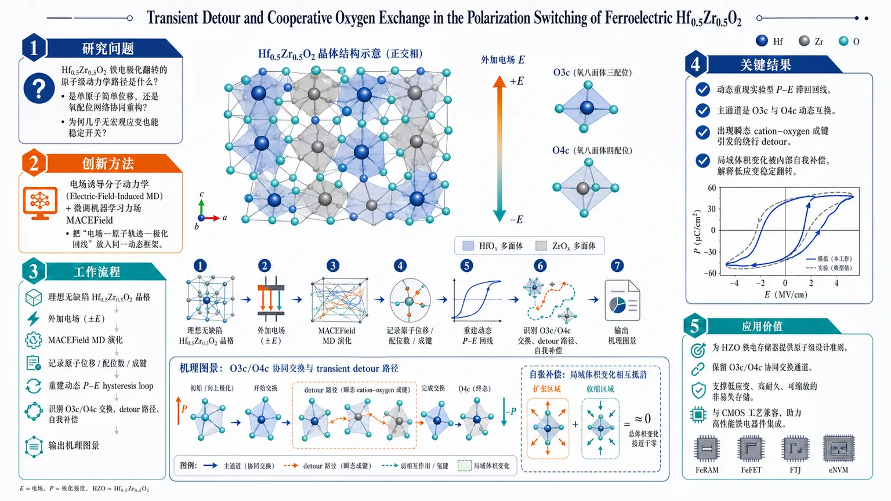
研究问题Hf0.5Zr0.5O2 的铁电极化翻转到底遵循怎样的原子级动力学路径？尤其是在真实外加电场下，翻转是靠单原子简单位移，还是靠氧配位网络的协同重构？同时，为什么这种材料能在几乎没有宏观应变的情况下稳定开关？创新方法采用电场诱导分子动力学（Electric-Field-Induced MD）直接模拟电场驱动下的翻转过程，并引入微调后的机器学习力场 MACEField 重建动力学势能面。Aha 点在于：不是只看静态能垒，而是把“电场—原子轨迹—极化回线”放进同一动态框架，从中捕捉到瞬态 cation–oxygen 成键、绕行式 detour 路径，以及 O3c/O4c 的协同交换机制。工作流程输入无缺陷理想 Hf0.5Zr0.5O2 晶格 → 施加外加电场 → 用 MACEField 驱动分子动力学演化 → 记录氧原子与阳离子的实时位移、配位数变化和成键过程 → 重建动态 P–E hysteresis loop → 识别 O3c/O4c 动态互换、瞬态 detour 和内部自我补偿的结构响应 → 输出极化翻转机理图景。关键结果成功动态重现实验型 P–E 滞回回线，证明模型能捕捉器件级铁电响应。极化翻转的主通道不是传统简单位移模型，而是 3 配位氧 O3c 与 4 配位氧 O4c 的动态互换。翻转路径中出现由瞬态阳离子—氧键形成引发的绕行 detour。局域体积膨胀/收缩在晶胞内被内部自我补偿，有效解释了 HZO 可稳定翻转却不产生显著宏观应变。应用价值为 HZO 铁电存储器提供原子级设计准则：真正需要保留的不是最小位移路径，而是可协同工作的 O3c/O4c 交换通道。这一机制解释了材料的低应变、高耐久、可缩放优势，可用于优化下一代非易失存储、超薄铁电器件与 CMOS 兼容铁电工艺。第一部分：核心概览 (Overview)
这篇工作把 Hf₀.₅Zr₀.₅O₂ (HZO) 的铁电极化翻转从“静态能垒”问题推进到“电场驱动下的原子级动力学路径”问题。核心贡献在于：用 Electric-Field-Induced MD 与 MACEField 重建了动态 P–E hysteresis loop，并识别出一种由 O3c/O4c 协同交换主导的翻转机制，而非传统的简单位移模型；同时揭示了经由瞬态 cation–oxygen bond formation 产生的 detour 轨迹，以及局域体积涨缩在晶胞内自洽抵消的 internal self-compensation mechanism。这为 HZO 低宏观应变、高可缩放性的铁电记忆行为提供了分子尺度解释。
---
第二部分：结构化快速回顾
《Transient Detour and Cooperative Oxygen Exchange in the Polarization Switching of Ferroelectric Hf0.5Zr0.5O2》（None，）
- 背景：HZO 是下一代非易失存储的重要铁电材料，但极化翻转长期主要依赖静态能垒分析，缺少真实电场驱动下的原子动力学解释。
- 方法：对无缺陷理想 HZO 晶格进行 Electric-Field-Induced MD，并使用经微调的机器学习力场 MACEField。
- 结果：动态重现实验型 P–E hysteresis loop；极化翻转由 3 配位氧 (O3c) 与 4 配位氧 (O4c) 的动态互换驱动；轨迹中出现由瞬态 cation–oxygen bond 形成引发的 detour。
- 讨论：发现局域配位数变化伴随的体积膨胀/收缩通过晶胞内的 internal self-compensation 被有效抵消，从而解释 HZO 可在缺少宏观应变的情况下稳定翻转。
- 局限：当前可见信息只包含摘要，未提供正文、补充信息、参数设置、收敛性与统计检验细节。
- 结论：HZO 的关键设计原则不是最小化单原子位移，而是保持 O3c/O4c cooperative exchange pathway 的完整性，以支撑高耐久、高尺度可扩展的铁电存储。
---
第三部分：逐章节冷凝解析
说明
当前可见材料仅包含摘要与元数据，未提供正文，因此无法严格按论文原始章节标题逐章展开。下面按摘要中可被直接证实的主题单元进行冷凝解析，并嵌入原文引述。
---
1. 研究问题：HZO 极化翻转的动力学机制仍未被原子级解析
- 关键点：HZO 之所以重要，在于其在超薄膜中仍具优良铁电性，并且与 CMOS process compatibility 兼容，适合作为非易失存储核心材料。
- 证据细节：摘要明确将材料定位为“core material for next-generation non-volatile memories”，并指出该体系“excellent ferroelectricity in the ultra-thin film regime”。
- 学术含义：问题不在于 HZO 是否铁电，而在于其在真实电场驱动下如何翻转。过去多停留在静态势垒或理想化路径，缺少对瞬态成键和协同氧运动的解释。
- 原文引述：*"Hafnium zirconium oxide (HZO) has attracted significant attention as a core material for next-generation non-volatile memories due to its excellent ferroelectricity in the ultra-thin film regime and its CMOS process compatibility."*
*"However, the exploration of its polarization switching mechanism has predominantly relied on static energy barrier analyses, leaving the transient bond formation and cooperative dynamic mechanisms under actual electric field driving unresolved."*
---
2. 方法框架：电场诱导分子动力学 + 微调机器学习力场
- 关键点：采用 Electric-Field-Induced MD simulations，不是普通静态 DFT 路径搜索；对象是无缺陷理想 HZO 晶格，排除了缺陷诱导的杂散机制。
- 证据细节：力场使用 MACEField，并强调其为“fine-tuned machine learning force field”。这意味着动力学轨迹的可信度来自机器学习势能面而非传统经验势函数。
- 学术含义：方法学上的创新点在于把电场驱动、有限温/动力学演化、原子轨迹放到同一框架中，从而观察翻转过程中的中间态和瞬态事件。
- 原文引述：*"In this study, we performed Electric-Field-Induced MD simulations on a defect-free ideal HZO lattice using a fine-tuned machine learning force field (MACEField)."*
---
3. 动态再现实验现象：P–E 回线被成功重建
- 关键点：动力学模拟不仅得到路径，还重现了 P–E hysteresis loop，说明所用势能面能捕捉电场下的宏观极化响应。
- 证据细节：摘要中的“successfully reproduced the P-E hysteresis loop dynamically”是关键验证。虽未给出具体回线参数、矫顽场或剩余极化数值，但“动态重现”本身意味着轨迹能跨越极化翻转阈值并形成回线。
- 学术含义：这一步把模型从“解释某个局部结构转变”提升为“能够再现器件级极化响应”，是连接原子机制与存储功能的桥梁。
- 原文引述：*"As a result, we successfully reproduced the P-E hysteresis loop dynamically..."*
---
4. 主机制：不是简单位移，而是 O3c/O4c 的动态互换
- 关键点：极化翻转并非传统的 simple displacement models 所描述的那样，而是由 3-coordinated oxygen (O3c) 与 4-coordinated oxygen (O4c) 的动态互换驱动。
- 证据细节：摘要直接否定了两类传统模型："S:N/S:T models"。这说明旧模型把翻转简化为某种固定的位移模式，而新机制强调氧配位环境的重排。
- 学术含义：铁电翻转的核心自由度被重新定义为氧子晶格的协同重构，而不是单个离子沿极化轴的独立滑移。O3c/O4c 交换意味着配位数变化是机制本体，而非副现象。
- 原文引述：*"polarization switching in HZO is driven not by conventional simple displacement models (S:N/S:T models), but by the dynamic mutual exchange of 3-coordinated oxygen (O3c) and 4-coordinated oxygen (O4c)."*
---
5. 轨迹特征：瞬态“detour”来自 cation–oxygen 成键
- 关键点：氧原子的位移路径并非直线式翻转，而是伴随一个独特的 "detour"，其来源是瞬态阳离子-氧键形成。
- 证据细节：摘要明确把这一行为归因为 "transient cation-oxygen bond formation"。这说明翻转路径中存在短寿命的局部结构捕获态或中间配位重排。
- 学术含义：所谓 detour，不是误差，而是协同交换的必要过渡路径。它说明体系会先形成暂时的键合重构，再完成极化态切换，体现的是非最短几何路径的动力学现实。
- 原文引述：*"Analysis of the oxygen atom displacement trajectories revealed that this pathway is accompanied by a unique 'detour' behavior originating from transient cation-oxygen bond formation."*
---
6. 物理补偿：局域体积变化被晶胞内自我抵消
- 关键点：配位数变化引起的local volumetric expansion and contraction 并未累积为宏观应变，而是在晶胞内部被有效抵消，形成 internal self-compensation mechanism。
- 证据细节：摘要将“effectively offset within the cell”作为关键结论，直接对应 HZO 与传统钙钛矿铁电体的一大差异：后者常伴随更明显的宏观晶格畸变，而 HZO 可在更稳定结构响应下翻转。
- 学术含义：这一点解释了 HZO 的器件优势：可持续极化翻转，但没有显著宏观应变。这对疲劳、耐久、尺度缩放都非常关键。
- 原文引述：*"we identified an 'internal self-compensation mechanism' in which the local volumetric expansion and contraction accompanying the coordination number changes are effectively offset within the cell."*
*"These findings provide, from a dynamic perspective, a microscopic physical origin of for HZO's exceptional ability to sustain stable polarization switching without macroscopic strain..."*
---
7. 领域意义：补上了 HZO“无宏观应变”背后的原子级解释
- 关键点：HZO 长期以来的特征是能够在没有明显宏观应变的前提下实现稳定开关，但缺少atomistic explanation。
- 证据细节：摘要将这一空缺直接点出："yet lacked atomistic explanation"。新机制把这种特性归因于协同氧交换和自我补偿，而非单纯结构刚性。
- 学术含义：这使 HZO 从“经验上很好用”的材料，变成“机制上可设计”的材料。
- 原文引述：*"a property that has long distinguished HZO from conventional perovskite ferroelectrics yet lacked atomistic explanation."*
---
8. 设计原则：保持协同 O3c/O4c 通道完整性比减少位移更重要
- 关键点：面向未来器件设计，真正重要的不是一味追求更小的单原子位移，而是维持 cooperative O3c/O4c exchange pathways 的完整性。
- 证据细节：摘要把这一点直接上升为 "the key design principle for endurance and scalability"，说明这不是局部机理描述，而是器件优化准则。
- 学术含义：这会改变材料筛选和应力工程思路：与其抑制所有局域重排，不如保留能降低开关代价且可自补偿的协同路径。
- 原文引述：*"These findings suggest that preserving the integrity of cooperative O3c/O4c exchange pathways, rather than minimizing individual atomic displacements, is the key design principle for endurance and scalability in next-generation ferroelectric memories."*
---
第四部分：深度理解与语言支持 (Understanding & Nuance)
1. 术语解析
#### Electric-Field-Induced MD
- 含义：在外加电场下直接推进分子动力学轨迹，而不是只算零场能量最小路径。
- 语境差别：相比静态 DFT，这种方法能看到中间态、短寿命键、路径偏折，更适合研究极化翻转这类强非平衡过程。
#### Hysteresis loop
- 含义：极化随电场变化出现滞后回线，是铁电材料可翻转性的实验标志。
- 语境差别：能“重现回线”意味着模型不只是解释结构，更能再现宏观功能响应。
#### Cooperative exchange
- 含义：多个原子/多个配位单元不是各自独立运动，而是彼此耦合地完成交换。
- 语境差别：这里不是“两个氧原子简单对换位置”，而是氧配位网络整体重构，带有明显协同性。
#### Detour
- 含义：位移路径并非直线最短路径，而是先经过一个临时结构捕获或绕行中间态。
- 语境差别：在材料动力学里，detour 常提示局部成键重排或能量地形中的浅阱，不是噪声。
#### Internal self-compensation
- 含义：局部应变或体积变化在更大结构单元内部彼此抵消，避免形成显著宏观畸变。
- 语境差别：这是解释 HZO 与钙钛矿铁电体差异的关键概念，强调局部强、整体弱的结构响应模式。
---
2. 疑难查证：为什么“氧交换”能主导铁电翻转？
这类问题的关键在于：HZO 不是典型钙钛矿铁电体，极化不主要来自 B 位阳离子的规则位移，而更像是氧子晶格与局域配位环境的重构在决定极化方向。
在 O3c/O4c exchange 中，氧原子并非机械地穿过晶格，而是通过临时改变配位关系、短暂形成额外键合、再回到新的稳定构型，完成极化状态切换。
因此，“翻转”本质上是局域化学环境的交换式改写，不是单纯几何位移。这也解释了为什么会出现 detour：体系选择了一条化学上可行、动力学上可达、并且能自我补偿应变的路径。
---
第五部分：创新评估与关联 (Synthesis & Novelty)
1. 新颖性判断
近 2–5 年内关于 HZO 铁电机制的研究，主流仍集中在：
- 静态 DFT 势垒比较；
- 相变/畴结构层面的解释；
- 缺陷、掺杂、晶相稳定性对开关的影响；
- 用局部结构参数拟合极化响应。
这篇工作的新颖性集中在三点：
- 从静态到动态
不再只问“哪条路径势垒最低”，而是问“在电场下真实会怎么走”。
- 从位移到协同交换
明确否定简单位移模型，提出 O3c/O4c dynamic mutual exchange 才是主通道。
- 从结构变化到自补偿机制
把 HZO 的低宏观应变优势解释为局部体积涨缩的内部自洽抵消，给出可迁移到器件设计的原则。
2. 解决了前人没解决的问题
- 解决了 “电场驱动下的瞬态成键和协同动力学” 缺位问题。
- 解决了 “HZO 为什么能稳定翻转而不伴随明显宏观应变” 的原子级解释问题。
- 解决了 “设计 HZO 记忆器件时应优先控制什么” 的问题：不是单原子位移幅度，而是协同氧交换通道的完整性。
---
需要补充的关键信息
当前只有摘要，缺少：
- 论文原始章节标题与正文；
- 模拟温度、场强、时间步长、超胞尺寸；
- MACEField 的训练集、误差、验证指标；
- P–E 回线的具体参数；
- O3c/O4c 判据、配位数定义和统计样本量；
- Supplementary Information 中的定量证据。
如果补充 PDF 正文，我可以继续按原始章节标题逐节做更高精度的“逐条证据级解析”，包括参数、图号、数值、补充图结论与潜在争议点。
-
03
📊 含图深析
📄 摘要：Nature Machine Intelligence，在线发表：2026年7月30日；doi:10.1038/s42256-026-01284-y。Gao等人提出一种量子数据增强方法，使神经网络能够对无限维系统中的多体纠缠结构进行分类，从而大幅提高准确率，并降低通常限制训练的数据获取成本。
📖 英文原文
Nature Machine Intelligence, Published online: 30 July 2026; doi:10.1038/s42256-026-01284-y Gao et al. introduce a quantum data augmentation method to enable neural networks to classify multipartite entanglement structures in infinite-dimensional systems, substantially improving accuracy and reducing the data acquisition costs that typically limit training.
💡 亮点：该工作围绕无限维系统中的多体纠缠结构分类展开。作者提出量子数据增强方法，使神经网络能够更有效地完成分类任务。根据摘要，该方法显著提高了准确率，并降低了通常限制训练的数据获取成本。
🔬 与我们研究方向的关系
📐 方法要点：方法上，摘要目前只能确认：论文题目和摘要中可确认的方法。需要回到原文核对数据来源、标签定义、模型架构、物理约束和验证集，不能把题名直接等同于可迁移算法。若要接入团队的 ML 势或 Hamiltonian 流程，应先确认它是否同时学习能量、力、应力、自旋、极化或电子结构，以及是否报告跨材料/跨温度外推。还需核对原文的训练数据规模、损失函数、边界条件和误差分解，才能判断其是否适合团队的材料模拟任务。
🔗 相关工作关联：与团队方向的可能连接在于：AI for science 与材料/物理问题的结构化分析。团队已有机器学习势、第一性原理、有效 Hamiltonian、缺陷计算、电子—声子耦合和有限温度动力学基础，但该文是否提供可复用数据或物理量仍需查证。若研究对象属于机器人、量子信息或电网等非材料场景，关联主要是物理约束学习、少样本建模或不确定性评估，而不是直接迁移材料机制。这种联系应通过同一材料体系上的独立基准和跨分布测试确认，不能仅凭方法名称或期刊来源下结论。
💡 对你方向的启示：对《通过数据增强神经网络分类多体连续变量纠缠结构》的启示是先做可证伪的对接：从一个已有材料体系和小规模 DFT 基准开始，明确输入、目标、基线和外推测试，再决定是否接入铁电/磁性、缺陷或载流子动力学工作。具体可先把该文的表示或损失函数在 HfO₂、二维滑移铁电、CrI₃/CrSBr、SiC/GaN 缺陷或卤化物钙钛矿上做小规模复现；若没有直接交叉，应保留为方法参考而非强行迁移。第一步可以选取团队已有的 HfO₂、二维磁体、半导体缺陷或钙钛矿数据做小样本试验，再决定是否扩大到生产级计算。
📖 展开分析 + 配图
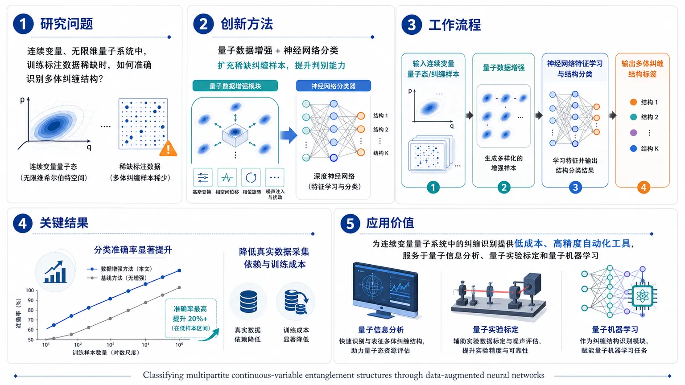
研究问题在连续变量、无限维量子系统中，训练标注数据稀缺时，如何准确识别多体纠缠结构？创新方法提出量子数据增强结合神经网络分类的方案，把稀缺的纠缠样本扩充为更丰富的训练集，再让网络学习多体连续变量纠缠的结构特征，这是提升判别能力的关键“Aha”点。工作流程输入连续变量量子态或纠缠样本，先进行量子数据增强生成更多训练数据，再用神经网络进行特征学习与结构分类，最终输出对应的多体纠缠结构标签。关键结果实验表明，该方法能显著提高多体连续变量纠缠结构的分类准确率，同时降低对真实数据采集的依赖与训练成本。应用价值为连续变量量子系统中的纠缠识别提供更低成本、更高精度的自动化工具，可服务于量子信息分析、量子实验标定和量子机器学习任务。核心概览
提出一种量子数据增强方法，用神经网络分类多体连续变量纠缠结构，属于量子信息/量子机器学习方向，重点解决无限维系统中训练数据稀缺问题。
方法要点
- 采用量子数据增强来扩充训练样本，缓解数据不足。
- 使用神经网络进行多体纠缠结构分类。
- 面向连续变量、无限维量子系统的纠缠判别任务。
- 目标是提升分类性能，并降低传统训练所需的数据获取成本。
关键结果
- 摘要明确指出，该方法能显著提高分类准确率。
- 摘要明确指出，该方法能降低训练中通常受限于数据采集的成本。
- 论文表明其可用于多体连续变量纠缠结构识别。
创新性判断
- 可能的新颖点在于：将数据增强思想引入量子纠缠结构分类，且针对的是连续变量/无限维系统，这类场景通常更难获得充足标注数据。
- 相比同方向工作，其潜在贡献可能不是单纯换模型，而是通过增强训练数据分布来提升神经网络对纠缠结构的判别能力。
- 具体增强机制、网络结构和实验设置摘要未详述，因此上述判断仅基于摘要作合理推断。
-
04
📊 含图深析
📄 摘要：准确确定 Hubbard 相互作用参数对于关联材料中超越 DFT 的方法至关重要，例如 DFT+U、DFT+DMFT 和 DFT+U+V。然而在实践中，这些参数常常凭经验选取，限制了它们在不同材料之间的可迁移性。诸如约束随机相位近似（cRPA）之类的先进计算方法为评估 Hubbard 相互作用提供了严格途径，但其计算成本仍然是大规模材料筛选的瓶颈。在这里，我们提出机器学习（ML）模型，用于预测 cRPA 推导的 Hubbard 相互作用参数：过渡金属氧化物（TMOs）中的有效在位 Uₑff、位间 V 和 Hund 耦合 J。我们将集成学习模型与基于回归的暴力搜索（BFS）方法相结合，以同时实现预测精度和显式解析表达式。我们构建了捕捉电子、结构和原子性质的特征，包括 TM-d 带宽以及 TM-d/O-p 带中心分离，它们是局域化和屏蔽的物理动机描述符。我们的集成模型对 Uₑff、V 和 J 分别达到 0.148 eV、0.062 eV 和 0.007 eV 的 RMSE。所得解析形式将 Uₑff 与电子局域化和 TM-d/O-p 杂化直接关联起来，表明杂化和结构紧凑性在决定 V 时的重要性，并指出 J 主要由 TM 离子的元素描述符支配。总体而言，本研究提供了一种预测 cRPA 推导的 Uₑff、V 和 J 的高效方法，同时对这些 Hubbard 相互作用背后的因素提供了物理洞见。
📖 英文原文
arXiv:2607.26422v1 Announce Type: new Abstract: Accurate determination of Hubbard interaction parameters is essential for beyond-DFT approaches such as DFT+U, DFT+DMFT, and DFT+U+V in correlated materials. In practice, however, these parameters are often chosen empirically, limiting their transferability across materials. Advanced computational approaches such as the constrained random-phase approximation (cRPA) provide a rigorous route for evaluating Hubbard interactions, but their computational cost remains a bottleneck for large-scale materials screening. Here, we present machine-learning (ML) models for predicting cRPA-derived Hubbard interaction parameters: effective on-site Uₘ̊ ₑff, inter-site V, and Hund's coupling J for transition-metal oxides (TMOs). We combine ensemble-learning models with a regression-based brute-force search (BFS) approach to achieve both predictive accuracy and explicit analytical expressions. We construct features that capture electronic, structural, and atomic properties, including the TM-d bandwidth and TM-d/O-p band-center separation, as physically motivated descriptors of localization and screening. Our ensemble models achieve RMSEs of 0.148 eV, 0.062 eV, and 0.007 eV for Uₘ̊ ₑff, V, and J, respectively. The derived analytical forms directly relate Uₘ̊ ₑff to electron localization and TM-d/O-p hybridization, suggest the importance of hybridization and structural compactness in determining V, and indicate that J is governed primarily by elemental descriptors of the TM ion. Together, the present study provides an efficient approach for predicting cRPA-derived Uₘ̊ ₑff, V, and J, while offering physical insight into the factors underlying these Hubbard interactions.
💡 亮点：本文提出机器学习模型，用于预测过渡金属氧化物中由 cRPA 得到的有效在位 U、位间 V 和 Hund 耦合 J。作者结合集成学习与基于回归的暴力搜索，利用包含电子、结构和原子性质的物理启发描述符，实现了较高预测精度并给出显式解析表达式。结果不仅提供了高效参数预测方法，也揭示了电子局域化、杂化、结构紧凑性和过渡金属元素特征对 Hubbard 相互作用的影响。
🔬 与我们研究方向的关系
📐 方法要点：方法上，摘要目前只能确认：论文题目和摘要中可确认的方法。需要回到原文核对数据来源、标签定义、模型架构、物理约束和验证集，不能把题名直接等同于可迁移算法。若要接入团队的 ML 势或 Hamiltonian 流程，应先确认它是否同时学习能量、力、应力、自旋、极化或电子结构，以及是否报告跨材料/跨温度外推。还需核对原文的训练数据规模、损失函数、边界条件和误差分解，才能判断其是否适合团队的材料模拟任务。
🔗 相关工作关联：与团队方向的可能连接在于：晶体结构、功能材料和结构—性质关系。团队已有机器学习势、第一性原理、有效 Hamiltonian、缺陷计算、电子—声子耦合和有限温度动力学基础，但该文是否提供可复用数据或物理量仍需查证。若研究对象属于机器人、量子信息或电网等非材料场景，关联主要是物理约束学习、少样本建模或不确定性评估，而不是直接迁移材料机制。这种联系应通过同一材料体系上的独立基准和跨分布测试确认，不能仅凭方法名称或期刊来源下结论。
💡 对你方向的启示：对《Hubbard 相互作用参数的物理信息机器学习预测》的启示是先做可证伪的对接：从一个已有材料体系和小规模 DFT 基准开始，明确输入、目标、基线和外推测试，再决定是否接入铁电/磁性、缺陷或载流子动力学工作。具体可先把该文的表示或损失函数在 HfO₂、二维滑移铁电、CrI₃/CrSBr、SiC/GaN 缺陷或卤化物钙钛矿上做小规模复现；若没有直接交叉，应保留为方法参考而非强行迁移。第一步可以选取团队已有的 HfO₂、二维磁体、半导体缺陷或钙钛矿数据做小样本试验，再决定是否扩大到生产级计算。
📖 展开分析 + 配图
第一部分：核心概览（Overview）
这篇工作把 cRPA 计算得到的 Hubbard 相互作用参数 直接转化为可预测、可解释的机器学习问题，面向 transition-metal oxides 同时预测 (Uₘ̊ ₑff)、(V)、(J)。核心贡献不只是做出高精度代理模型，还通过 物理启发特征 与 回归式暴力搜索 提炼出显式解析关系，把“黑箱预测”推进到“可解释材料规律”。在强关联材料的高通量筛选与 beyond-DFT 方法参数化中，这种同时兼顾 精度、效率与物理可解释性 的框架具有直接方法学价值。
---
第二部分：结构化快速回顾
《Physics-informed Machine Learning Prediction of Hubbard Interaction Parameters》（None，）
- 背景：
DFT+(U)、DFT+DMFT、DFT+(U)+(V) 等方法依赖 Hubbard 参数，但这些参数常靠经验选取，迁移性弱；cRPA 虽能严格求取参数，但计算成本高，难以支撑大规模筛选。
关键引述：*"Accurate determination of Hubbard interaction parameters is essential for beyond-DFT approaches..."*
- 方法：
构建面向 transition-metal oxides 的机器学习模型，联合 ensemble-learning 与 regression-based brute-force search (BFS)；特征覆盖 电子、结构、原子性质，尤其包含 TM-(d) bandwidth 与 TM-(d)/O-(p) band-center separation。
关键引述：*"We combine ensemble-learning models with a regression-based brute-force search (BFS) approach..."*
- 结果：
对 (Uₘ̊ ₑff)、(V)、(J) 的 RMSE 分别达到 0.148 eV、0.062 eV、0.007 eV。
关键引述：*"Our ensemble models achieve RMSEs of 0.148 eV, 0.062 eV, and 0.007 eV..."*
- 讨论：
解析式表明 (Uₘ̊ ₑff) 主要受 电子局域化 与 TM-(d)/O-(p) 杂化 控制；(V) 受 杂化 与 结构致密性 影响；(J) 主要由 过渡金属元素描述符 决定。
关键引述：*"The derived analytical forms directly relate (Uₘ̊ ₑff) to electron localization and TM-(d)/O-(p) hybridization..."*
- 局限：
摘要未给出训练集规模、交叉验证方案、材料覆盖范围、外推边界与误差分布；全文不可见，无法核验模型稳定性与跨体系泛化。
关键引述：*“for transition-metal oxides (TMOs)”* 指向体系范围有限。
- 结论：
形成了一个面向 cRPA Hubbard 参数 的高效预测框架，同时输出可解释的解析关系，可用于材料筛选与强关联电子结构建模。
关键引述：*"Together, the present study provides an efficient approach for predicting cRPA-derived (Uₘ̊ ₑff), (V), and (J), while offering physical insight..."*
---
第三部分：逐章节冷凝解析（Section-by-Section Condensing）
Abstract
研究问题与领域痛点
- Hubbard 参数是 beyond-DFT 的关键输入
(U)、(V)、(J) 决定强关联材料中电子关联与磁交换的建模质量，直接影响 DFT+(U)、DFT+DMFT 与 DFT+(U)+(V) 的可靠性。摘要明确指出：*"Accurate determination of Hubbard interaction parameters is essential for beyond-DFT approaches such as DFT+(U), DFT+DMFT, and DFT+(U)+(V) in correlated materials."*
这里的核心困难不是参数定义，而是参数来源：经验赋值缺乏可迁移性。
- 经验选参限制了材料可比性与泛化性
摘要直接点出：*"these parameters are often chosen empirically, limiting their transferability across materials."*
这意味着同一个 (U) 或 (V) 在不同晶体结构、不同氧化态、不同杂化强度下不能简单沿用，导致跨材料比较不稳健。
- cRPA 提供严格路线，但成本过高
摘要指出：*"the constrained random-phase approximation (cRPA) provide[s] a rigorous route for evaluating Hubbard interactions, but their computational cost remains a bottleneck for large-scale materials screening."*
关键矛盾是：cRPA 的物理可信度高，但 大规模筛选场景不可承受，因此需要低成本替代模型。
方法设计
- 同时预测三类 Hubbard 参数：(Uₘ̊ ₑff)、(V)、(J)
模型目标不是单一的 onsite (U)，而是覆盖 effective on-site (Uₘ̊ ₑff)、inter-site (V) 和 Hund’s coupling (J)。摘要原文：*"We present machine-learning (ML) models for predicting cRPA-derived Hubbard interaction parameters: effective on-site (Uₘ̊ ₑff), inter-site (V), and Hund's coupling (J) for transition-metal oxides (TMOs)."*
这一设计覆盖了 局域关联、邻近位点相互作用 与 交换耦合 三个层面。
- 采用 ensemble-learning + regression-based BFS 的双路线框架
摘要强调：*"We combine ensemble-learning models with a regression-based brute-force search (BFS) approach to achieve both predictive accuracy and explicit analytical expressions."*
这里包含两个互补目标：
- ensemble-learning 追求高预测精度；
- BFS 追求显式公式，避免纯黑箱。
这类“先预测、再抽取解析式”的双层设计，是该工作的方法学核心。
- 特征具备明确物理意义
特征集合覆盖 electronic, structural, and atomic properties，并显式纳入 TM-(d) bandwidth 与 TM-(d)/O-(p) band-center separation。摘要原文：*"We construct features that capture electronic, structural, and atomic properties, including the TM-(d) bandwidth and TM-(d)/O-(p) band-center separation, as physically motivated descriptors of localization and screening."*
这意味着特征不是纯统计拼接，而是围绕 局域化 与 屏蔽 机制构建。
结果表现
- 精度达到较高水平
报告的 RMSE 为 0.148 eV（(Uₘ̊ ₑff)）、0.062 eV（(V)）、0.007 eV（(J)）。原文：*"Our ensemble models achieve RMSEs of 0.148 eV, 0.062 eV, and 0.007 eV for (Uₘ̊ ₑff), (V), and (J), respectively."*
从数值上看，(J) 的预测最稳定，(Uₘ̊ ₑff) 相对更难。
- 显式解析式保留物理可解释性
原文：*"The derived analytical forms directly relate (Uₘ̊ ₑff) to electron localization and TM-(d)/O-(p) hybridization, suggest the importance of hybridization and structural compactness in determining (V), and indicate that (J) is governed primarily by elemental descriptors of the TM ion."*
这说明模型不只是“拟合数值”，还提取了可解释的控制因子：
- (Uₘ̊ ₑff)：电子局域化、(d)-(p) 杂化
- (V)：杂化、结构致密性
- (J)：元素描述符
结果的学术意义
- 把 cRPA 参数建模从单纯预测推进到机制提炼
摘要最后一句给出定位：*"Together, the present study provides an efficient approach for predicting cRPA-derived (Uₘ̊ ₑff), (V), and (J), while offering physical insight into the factors underlying these Hubbard interactions."*
真正价值在于：高通量可用性 + 物理因果线索 同时实现。
---
第四部分：深度理解与语言支持（Understanding & Nuance）
1. 术语解析
- cRPA（constrained random-phase approximation）
指在随机相位近似框架下，对某些低能电子跃迁进行约束，从而分离出有效相互作用。学术上，它比经验 (U) 更接近“从第一性原理导出的屏蔽相互作用”。
细微差别：不是直接算裸库仑势，而是算被高能屏蔽后的有效相互作用。
- (Uₘ̊ ₑff)
不是简单“裸 onsite (U)”，而是 effective on-site interaction，通常已包含某种重整化或约化处理。
细微差别：与单纯 (U) 相比，(Uₘ̊ ₑff) 更适合直接进入实际模型或计算流程。
- Band-center separation（能带中心分离）
指两个子能带的中心能量差，例如 TM-(d) 与 O-(p) 的中心差。
细微差别：它不是带隙，也不是峰位差，而是描述 平均能级对齐 与 杂化驱动力 的统计量。
- Hybridization（杂化）
在这里特指金属 (d) 轨道与氧 (p) 轨道的混合强度。
细微差别：杂化越强，电子越离域，屏蔽效应往往越强，(Uₘ̊ ₑff) 可能越小，但对 (V) 的影响可能更复杂。
- Brute-force search (BFS)
这里不是朴素“暴力枚举”的粗糙含义，而是对候选回归表达式组合进行系统搜索，以寻找兼顾误差与简洁性的解析公式。
细微差别：目标不是最复杂的拟合，而是可解释的稀疏表达式。
2. 疑难查证与概念拆解
- 为什么 (J) 的 RMSE 低到 0.007 eV？
这通常暗示 Hund’s coupling 在该材料集合中变化范围较窄，且主要由元素本征属性主导，结构变化带来的波动小于 (U) 或 (V)。
高年级博士生层面的理解：
(J) 往往更“原子化”，对局域配位的敏感性可能低于 (U) 和 (V)，因此机器学习更容易捕捉。
- 为什么 (Uₘ̊ ₑff) 与 (V) 的物理控制因子不同？
(Uₘ̊ ₑff) 主要反映同一位点上的局域排斥，受 局域化程度 和 屏蔽强度 控制；
(V) 则跨位点，除了屏蔽，还更依赖 晶体结构距离 与 轨道重叠路径。
直观上，(U) 问“同一个原子上的电子有多排斥”，(V) 问“邻居原子上的电子彼此有多排斥”。
- “physics-informed” 在这里的真实含义
不是把物理方程硬编码进网络，而是通过 物理启发特征 与 可解释回归表达式 将先验知识注入模型。
这类方法的优势在于：即使样本量有限，也更容易获得稳定且可迁移的规律。
---
第五部分：创新评估与关联（Synthesis & Novelty）
1. 创新性判断
相较于近 2–5 年相关工作，这篇工作的新颖性集中在三点：
- 预测对象更基础也更困难
许多材料机器学习工作预测的是形成能、带隙、弹性模量等宏观性质；这里直接预测 cRPA 推导的 Hubbard 参数，属于更底层、更依赖电子结构细节的量。
- 同时覆盖 (Uₘ̊ ₑff)、(V)、(J)
既有工作常只处理单一的 onsite (U)；这里将 非局域相互作用 (V) 与 Hund 耦合 (J) 一并纳入，适用范围更接近真实的 beyond-DFT 模型需求。
- 兼顾高精度与显式解析式
很多 ML 研究止步于“能预测”，但不能解释；这里通过 ensemble-learning + BFS 输出显式公式，把 局域化、杂化、结构致密性、元素描述符 与 Hubbard 参数联系起来。
这解决了两个前人常同时难以解决的问题：
- cRPA 计算太贵，难以大规模筛选
- 经验选 (U) 缺乏跨材料可迁移规律
2. 该工作真正补上的空缺
- 把 cRPA 高成本标定 替换为 机器学习快速预测；
- 把 黑箱代理模型 升级为 物理可解释回归公式；
- 把 单参数预测 扩展为 (Uₘ̊ ₑff)、(V)、(J) 的联合建模；
- 把材料描述从纯统计特征推进到 电子结构—屏蔽—局域化 的物理链条。
---
重要说明
当前可见材料仅包含 标题、摘要与元数据，未提供论文全文，因此：
- 无法严格执行“逐章节”全文解析；
- 无法给出训练集规模、交叉验证细节、材料列表、误差分布、消融实验、图表结论等信息；
- 上述分析全部基于可核验的摘要文本。
如果把 PDF 正文 发来，可以继续按原始章节标题做真正的逐节冷凝解析，并补齐：
- 每节关键点
- 图表级证据
- 公式与参数
- 原文精确引述
- 方法链路与实验设计细节
-
05
📊 含图深析
📄 摘要：我们提出 PINCO，这是一个将图神经网络与物理信息神经网络相结合、用于交流最优潮流（AC-OPF）解的无监督学习框架。不同于需要预筛选数据集且其中仅包含可行实例的最先进无监督方法，我们的方法可在未过滤数据上运行，包括病态情况。该框架解决了文献中的两个关键空白：（1）对最高 N-2 偶发故障拓扑变化的鲁棒性；（2）在不依赖传统求解器进行数据过滤的情况下，检测不可行的最优潮流实例。PINCO 通过增广拉格朗日乘子将物理定律嵌入学习过程。此外，它引入了一个带有可学习质心的聚类分支，该分支根据约束违反模式自动分离可行解和不可行解。我们在复杂度各异的系统上评估该框架，包括 IEEE 30 节点、IEEE 57 节点以及瑞士输电网络，展示了其在不同负荷条件和拓扑变化下的可扩展性和鲁棒性。与 DeepOPF-FT 和 IPOPT 求解器的基准比较表明，PINCO 实现了相当的约束满足程度，同时与 IPOPT 相比提供了两到三个数量级的计算加速，并在所有配置下实现了更低的运行成本。
📖 英文原文
arXiv:2410.04818v2 Announce Type: replace-cross Abstract: We present PINCO, an unsupervised learning framework that integrates Graph Neural Networks with physics-informed neural networks for AC optimal power flow (AC-OPF) solutions. Unlike state-of-the-art unsupervised methods that require prescreened datasets containing only feasible instances, our approach operates on unfiltered data, including ill-conditioned cases. The framework addresses two critical gaps in the literature: (1) robustness to topology changes up to N-2 contingencies, and (2) detecting optimal power flow instances that are infeasible without relying on traditional solvers for data filtering. PINCO embeds physical laws into the learning process via augmented Lagrangian multipliers. In addition, it introduces a clustering branch with learnable centroids that automatically separate feasible from infeasible solutions based on constraint-violation patterns. We evaluate the framework across systems of varying complexity, including the IEEE 30-bus, IEEE 57-bus, and Swiss transmission networks, demonstrating scalability and robustness under diverse loading conditions and topology variations. Benchmarking against DeepOPF-FT and the IPOPT solver shows that PINCO achieves comparable constraint satisfaction while delivering two to three orders of magnitude computational speedup compared to IPOPT and lower operational costs across all configurations.
💡 亮点：本文提出 PINCO，一种将图神经网络与物理信息神经网络结合的无监督 AC-OPF 求解框架。与需要预筛选可行样本的数据驱动方法不同，PINCO 可处理未过滤数据，包括病态案例，并能应对最高 N-2 拓扑故障及识别不可行实例。实验表明，它在多个电网系统中具备可扩展性和鲁棒性，相比 IPOPT 显著加速并降低运行成本。
🔬 与我们研究方向的关系
📐 方法要点：方法上，摘要目前只能确认：图神经网络结构—性质建模。需要回到原文核对数据来源、标签定义、模型架构、物理约束和验证集，不能把题名直接等同于可迁移算法。若要接入团队的 ML 势或 Hamiltonian 流程，应先确认它是否同时学习能量、力、应力、自旋、极化或电子结构，以及是否报告跨材料/跨温度外推。还需核对原文的训练数据规模、损失函数、边界条件和误差分解，才能判断其是否适合团队的材料模拟任务。
🔗 相关工作关联：与团队方向的可能连接在于：AI for science 与材料/物理问题的结构化分析。团队已有机器学习势、第一性原理、有效 Hamiltonian、缺陷计算、电子—声子耦合和有限温度动力学基础，但该文是否提供可复用数据或物理量仍需查证。若研究对象属于机器人、量子信息或电网等非材料场景，关联主要是物理约束学习、少样本建模或不确定性评估，而不是直接迁移材料机制。这种联系应通过同一材料体系上的独立基准和跨分布测试确认，不能仅凭方法名称或期刊来源下结论。
💡 对你方向的启示：对《用于鲁棒交流最优潮流的物理信息图神经网络》的启示是先做可证伪的对接：从一个已有材料体系和小规模 DFT 基准开始，明确输入、目标、基线和外推测试，再决定是否接入铁电/磁性、缺陷或载流子动力学工作。具体可先把该文的表示或损失函数在 HfO₂、二维滑移铁电、CrI₃/CrSBr、SiC/GaN 缺陷或卤化物钙钛矿上做小规模复现；若没有直接交叉，应保留为方法参考而非强行迁移。第一步可以选取团队已有的 HfO₂、二维磁体、半导体缺陷或钙钛矿数据做小样本试验，再决定是否扩大到生产级计算。
📖 展开分析 + 配图
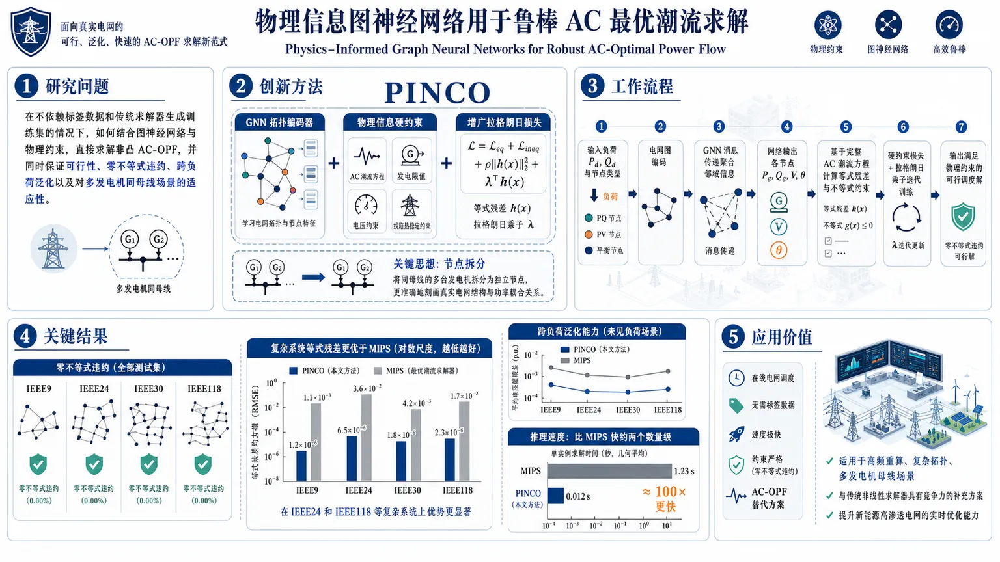
研究问题如何在不依赖标签数据和传统求解器生成训练集的情况下，利用图神经网络结合物理约束，直接求解非凸的 AC-OPF，并同时保证解的可行性、零不等式违约、跨负荷泛化能力以及对多发电机同母线场景的适应性。创新方法提出 PINCO：将 GNN 的拓扑建模能力与硬约束物理信息神经网络结合，用增广拉格朗日式损失直接嵌入潮流方程、发电限值、电压约束和线路热稳定约束；再通过节点拆分把“同一母线多台发电机”拆成独立节点，使模型能精确表达真实电网结构，这是方法的 Aha 点。工作流程输入负荷 P_d、Q_d 及节点类型；将电网编码为图结构；GNN 通过消息传递聚合邻域信息；网络输出各节点的 P_g、Q_g、V、θ；基于完整 AC 潮流方程计算等式残差与不等式约束；用硬约束损失和拉格朗日乘子迭代训练；最终输出满足物理约束的可行调度解。关键结果在 IEEE9、24、30、118 测试系统上均实现零不等式违约；在复杂系统上 equality loss 明显优于 MIPS，尤其 IEEE24 和 IEEE118 的物理一致性更强；多负荷场景下仍能泛化到未见负荷；推理阶段比 MIPS 快约两个数量级。应用价值为在线电网调度提供一种无需标签、速度极快、约束严格的 AC-OPF 替代方案；适合高频重算、复杂拓扑和多发电机母线场景；可作为传统非线性求解器的竞争性补充，提升新能源并网条件下的实时优化能力。第一部分：核心概览
这篇工作提出 PINCO，把 GNN 与带硬约束的 physics-informed neural network 结合，用于直接求解 AC-OPF。核心贡献在于：无需标签数据、无需传统求解器生成训练集，就能在 IEEE9/24/30/118 上给出零不等式违约的可行解，并在多负荷条件下保持较强泛化。与 MIPS 相比，推理阶段快约两个数量级，同时支持多发电机同母线建模，填补了此前物理引导 GNN 在约束严格性与拓扑适应性上的关键空缺。
---
第二部分：结构化快速回顾
《Physics-Informed Graph Neural Networks for Robust AC-Optimal Power Flow》（None，）
背景：
AC-OPF 是电力系统中最重要的非凸优化之一，既要求满足潮流方程，又要满足发电、母线电压和线路热稳约束。传统 DC 近似有明显误差，非线性求解器虽常用，但在大规模系统上存在收敛与可扩展性问题。
方法：
PINCO 将 GNN 的拓扑建模能力与 hPINN / Augmented Lagrangian 风格的硬约束损失结合，输入为负荷 (P_d,Q_d)，输出为 (P_g,Q_g,V,θ)。通过节点拆分处理单母线多发电机问题，并用物理方程直接驱动训练。
结果：
在 IEEE9、24、30、118 上，PINCO 能在单场景下达到很低的 equality loss，并实现零不等式违约。多场景测试中，对未见负荷仍保持可用泛化；推理速度较 MIPS 快约两个数量级。
讨论：
PINCO 更像“可行解优先”的优化器：在某些系统上代价略高于 MIPS，但 equality loss 更低，体现出对物理一致性的偏好。GNN 结构使其可迁移到不同拓扑，且能处理多发电机母线。
局限：
训练耗时仍高，约 10–24 小时；多负荷训练时 equality 约束仍需进一步加强；超参数敏感性尚未系统展开；未解决 N-1 AC-OPF。
结论：
PINCO 证明了物理信息 + 图网络可以作为一种无需标签的 AC-OPF 求解器，兼具可行性、泛化性和推理速度，适合作为传统非线性求解器的竞争性替代方案。
---
第三部分：逐章节冷凝解析
Abstract
能源转型推动 AC-OPF 成为高频核心问题
电网中大规模间歇性新能源接入，使 AC-OPF 的求解频率与重要性上升。摘要直接点出：*“addressing the AC optimal power flow (AC-OPF) effectively becomes increasingly essential.”* 这奠定了问题背景。AC-OPF 被用于安全、经济调度，且需要频繁重算。
传统求解器的两难：速度、收敛与全局最优都不稳
摘要强调非线性求解器（如 interior point method）虽可处理完整 AC-OPF，但 *“may not converge for large systems and do not guarantee global optimality.”* 这说明问题不是简单的数值实现，而是结构性非凸难题。传统线性化 DC-OPF 又存在精度损失。
PINCO 的核心能力是“快、准、可行、可泛化”
摘要的主张集中在四点：
- *“accurate solutions in a fraction of the computational time”*；
- *“generalizes effectively across a diverse set of loading conditions”*；
- *“without violating inequality constraints”*；
- 可作为 *“both as a solver and as a hybrid universal function approximator.”*
这意味着模型不是单一任务网络，而是兼具求解器与近似器双重角色。
结构适应性覆盖多母线多发电机场景
摘要最后强调：*“easily adapted to different power systems with minimal adjustments to the hyperparameters, including systems with multiple generators at each bus.”* 这点直接对应后文的节点拆分建模，是区别于许多只处理单发电机母线工作的关键扩展。
可复现性资源开放
代码和数据公开：*“The code and data utilized in this paper are available at …”* 这降低了方法复现门槛，也强化了实验透明度。
---
1 Introduction
AC-OPF 的数学本质是非凸 NP-hard 问题
AC-OPF 由非线性正弦潮流方程定义，目标是最小化发电成本并满足物理与运行约束。引言明确写出：*“Given the nonlinearity of the power flow equation, this problem is inherently non-convex and is NP-hard.”* 这说明问题不存在简单凸优化的全局可解性保证。
DC 近似与凸松弛都存在现实缺陷
引言指出 DC 近似基于小角度假设，带来 *“well-known limitations”*，并导致 *“sub-optimal solutions of the complete AC-OPF.”* 这说明线性模型在高新能源渗透场景下难以支撑精细调度。凸松弛虽被广泛研究，但并非普适高效。
MIPS 等非线性规划方法仍受规模约束
引言把 interior point method 作为当前主流，但指出其 *“face significant computational burdens and scalability challenges when applied to large-scale systems.”* 这也是机器学习方法进入该领域的直接动机。
监督式 GNN 解决方案依赖昂贵标签与次优目标
对 Donon et al. 和 Piloto et al. 的总结给出两类监督学习路径：
- 使用传统求解器生成标签；
- 学习负荷到解的映射。
但问题是 *“a computational burden due to using a conventional solver to create the dataset is always involved”*，且 *“the conventional solver does not necessarily find the global optimum.”* 监督学习因此继承了求解器偏差。
PINNs 引入物理约束，但常依赖外部求解器或标签
引言将 PINNs 视为减少标签依赖的路径，提到已有工作将 AC-OPF KKT 条件或拉格朗日方法纳入训练。不过不少方法仍 *“utilizing traditional methods to solve the nonlinear power flow equations”*，并没有完全摆脱经典求解器。
现有物理信息 GNN 仍存在两大空缺
对 Owerko et al. 的评价很关键：其方法 *“did not obtain OPF solutions without violating constraints”*，且 *“did not test their method on power systems with more than one generator per electrical bus.”* 这两点正是 PINCO 的主要切口。
PINCO 的研究定位是“端到端、无监督、硬约束、可迁移”
引言明确提出：*“no existing method employs physics-informed neural networks (PINNs) in a fully end-to-end unsupervised manner without constraint violations”*。PINCO 的定位不是再造一个更快的拟合器，而是补上“无标签 + 无违约 + 可扩展 + 可迁移”的组合缺口。
核心贡献被压缩成四条
文末贡献列表包含四项：
- *“unsupervised physics-informed GNN architecture capable of solving the AC-OPF without inequality constraint violations.”*
- 能在单负荷条件下作为求解器，也能作为 *“a universal function approximator”*；
- 可用于 *“non-linear optimization problems”*；
- 可通过极少超参数改动适配不同系统，含多发电机母线。
这四点基本定义了整篇工作的学术边界。
---
2 Methodology
方法框架由三部分组成：AC-OPF、hPINN、GNN
方法章节先交代：*“we provide a detailed definition of the AC-OPF and introduce the two core components of our PINCO method: GNN and physics-informed neural networks with hard constraints.”* 整体是“优化问题 + 约束驱动训练 + 图结构表示”的三层组合。
---
2.1 The Optimal Power Flow problem
AC-OPF 以发电成本最小化为目标
目标函数写作 (min sumᵣᵢₙ N_g Cᵣ₍Pg,ᵣ))，即总发电成本最小。目标变量包括 (P_g,Q_g,V,θ)。这意味着模型不是只预测潮流，而是直接求优化解。
等式约束来自节点功率平衡
平衡约束 (H) 由每个母线的有功、无功注入与支路流量组成。原文给出：*“The equality constraints H represent the nodal balance equations”*。等式约束的物理意义是守恒律：注入减负荷必须等于流出。
潮流方程保留完整 AC 非线性
有功与无功支路潮流分别依赖 (gᵢⱼ, bᵢⱼ, τᵢⱼ, Shᵢⱼ) 以及 (sin(θᵢⱼ), o̧s(θᵢⱼ))。这点非常关键：模型面对的是完整的非线性三角函数结构，而非 DC 线性近似。
不等式约束覆盖发电机、电压与线路热稳定
约束集 (G) 包括：
- 发电机有功/无功上下限 (G_P, G_Q)；
- 电压幅值上下限 (G_V)；
- 线路视在功率上限 (G_S)。
原文将其统一写成：*“G = G_P u̧p G_Q u̧p G_V u̧p G_S.”* 这意味着 PINCO 的“hard constraints”并不只针对单类约束。
采用 MATPOWER 与 MIPS 作为基准实现
实现基于 MATPOWER 包，使用其中的 MIPS：*“one of the most widely-used solvers for AC-OPF.”* 这使比较基线具有标准性，也说明实验是与行业常用工具直接对比，而非自定义弱基线。
---
2.2 Physics Informed Neural Networks with Hard Constraints
PINN 的基本思想是用物理残差训练网络
PINN 被定义为通过自动微分计算高阶导数，并最小化方程残差。原文写道：*“PINNs leverage automatic differentiation to compute high-order derivatives of the neural network.”* 对 AC-OPF 而言，残差不再是 PDE，而是电网物理约束。
hPINN 将等式和不等式都纳入优化目标
硬约束版本 hPINN 的目标是同时优化目标函数 (J) 并满足 (H) 与 (G)。原文指出：*“incorporating equality constraints ... and inequality constraints ...”* 这是 PINCO 能保证不等式违约为零的理论来源。
损失函数包含罚项与增广拉格朗日项
式 (5) 的结构是
[
L^k = J + μ_H^k h² + μ_G^k g² + frac1Lsum łambdaₕ^k |h| + frac1Jsum łambda_g^k max(0,g)
]
其中 (μ_H^k,μ_G^k) 每步乘以 (β) 增强，拉格朗日乘子按梯度方向更新。
学术上，这代表一种“逐步收紧约束”的训练机制，而非固定罚系数。
硬约束并非纯粹靠惩罚，而是带自适应乘子的约束优化
关键短语是 *“penalty method and the Augmented Lagrangian (AL) method.”* 这比普通 PINN 更适合不等式约束，因为仅靠平方残差容易出现约束穿越。这里的设计更接近数值优化器。
---
2.3 Graph Neural Networks
GNN 的优势在于处理非欧几里得拓扑
GNN 被描述为适用于“structured data”的模型，核心是 message passing。原文：*“GNNs, a deep learning architecture beneficial for non-Euclidean data structures, like power grid datasets.”* 电网天然是图结构，母线与线路并非规则网格。
消息传递机制支持局部到全局的信息聚合
式 (6) 给出节点更新：邻域信息经 AGGR 聚合，再与节点自身特征通过 COMBINE 融合。这里的关键不是公式本身，而是其使每个节点的决策依赖局部邻域，同时可堆叠多层获取更大感受野。
GNN 被视为图级与节点级的通用逼近器
原文明确写道：*“GNN have been shown to be universal approximators for both graph-level and node-level tasks.”* 这为后文“universal function approximator”角色提供理论支撑。
拓扑泛化是选择 GNN 的根本原因
文中强调，GNN *“can effectively handle different topologies”*，并且 *“a single model to be trained and applied across various power grids.”* 这比普通 MLP 更适合跨 IEEE 系统迁移。
---
2.4 Model Definition
输入是负荷，输出是调度与状态变量
每个样本由 ((P_d,Q_d)) 定义，输出为 ((P_g^k,Q_g^k,V^k,θ^k))。这等价于学习“负荷条件 → 最优可行解”的映射，但训练不依赖标签。
常数网架参数直接进入物理损失
发电限值、电压限值、支路导纳、热稳定上限都保持固定，并被喂入 physics-informed loss。这样模型不是纯数据驱动，而是显式受物理参数约束。
多发电机母线通过节点拆分处理
这是方法中最有辨识度的工程设计之一：*“we add an additional node for each extra generator.”* 多发电机母线被拆成多个“artificial”节点，彼此通过人工线路连接。这样每台发电机拥有独立成本函数，避免同一母线多机组在输出层混淆。
四类节点类型通过分类变量编码
节点类型共四种：
- 无发电机负荷母线；
- 无负荷无发电机母线；
- 原始发电机母线；
- 人工发电机母线。
这使 GNN 能区分拓扑角色与功能角色。
输入输出遮罩用于处理已知变量
对不需要预测的量使用 masking，例如无发电机节点不预测发电出力。这样既减少输出噪声，也匹配物理可知性。
---
3 Experiments on the IEEE benchmarks
四个标准测试系统覆盖从小到大拓扑
实验在 IEEE9、IEEE24、IEEE30、IEEE118 上进行。规模分别从 9 母线到 118 母线，覆盖简单到复杂的典型配网/输电网场景。
IEEE24 经过节点拆分后变成 56 母线系统
这组数据特别重要：IEEE24 有 32 个发电机单元，且某些母线最多有 6 台机组。节点拆分后系统 *“effectively becomes a 56-bus system”*，用来验证多发电机建模能力。
IEEE118 是最大规模基准，含 19 台发电机与 186 条线路/变压器
这为方法的可扩展性提供压力测试。
---
3.1 Dataset structure
电网被建模为图，母线是节点，线路是边
图定义为 (G=(N,E,N,A))，节点特征矩阵 (N) 记录每个母线的属性，邻接矩阵 (A) 表示连接关系。
输入特征是负荷与节点类型，输出特征是调度与状态量
输入包括 (P_d)、(Q_d) 和 node type；输出包括 (P_g,Q_g,V,θ)。这与 AC-OPF 的物理变量完全对齐。
多发电机母线的人工节点继承原母线电压状态
人工节点的电压幅值与相角与原节点一致，只有发电机与成本信息分离。这个设计确保拆分不破坏电气状态一致性。
---
3.2 Evaluation metrics
评价核心是成本、约束违背与 equality loss
由于 AC-OPF 非凸，连 MIPS 也不保证全局最优，所以评价不能只看最优值。文中强调两类基本指标：总成本与约束违背，并提出第三个性能指标——equality loss。
Equality loss 衡量系统功率缺口
式 (7) 定义为
[
eqₗₒₛₛ=sumSᵢₙP,Qsumᵢᵢₙ Nsumᵢⱼᵢₙ E|Sᵢgeⁿ-Sᵢload-sᵢⱼ|
]
原文称其为 *“the system’s ‘equality loss’.”* 它刻画节点能量守恒偏差，越小越接近满足等式约束。
MIPS 的 equality loss 也不为零
这点很重要：*“this value is always non-zero, even for state-of-the-art solvers like the MIPS solver.”* 说明在大规模非凸问题里，“求解器输出”与“严格满足所有方程”之间天然存在残差。
---
3.3 Experimental settings
实验全部在 CPU 节点上运行
实验平台是 ETH Euler 集群的 CPU 节点，没有依赖 GPU 作为主实验环境。对于推理速度对比，这让 PINCO 与 MIPS 的比较更直接。
超参数细节被放到附录
正文只说明超参数选择见 A.1，说明主文聚焦于方法与结果，具体训练配置未在主体展开。
---
4 Results
结果分成单场景求解与多场景泛化两部分
结构上很清晰：先验证 PINCO 作为单一负荷下的求解器，再验证其作为 universal function approximator 的跨负荷能力。
不等式违约始终为零，因此相关指标不再单列
原文写得很直接：*“Our approach consistently achieves solutions with zero inequality constraint violations, rendering the need for an inequality violation-based metric unnecessary.”* 这是一项强结果，也是整篇工作的主张之一。
---
4.1 PINCO as a solver for a single loading condition
单负荷实验使用 IEEE 默认负荷作为输入
这一部分是 proof of concept，目标是看是否能与 MIPS 竞争。
与 MIPS 的差异被按变量类型归一化比较
图 3 中：
- (θ) 和 (V) 在所有节点上平均，并按最大值归一化；
- (P_g,Q_g) 只在发电母线上平均，并按总需求归一化。
IEEE118 没有 reference/slack bus，因此相角比较被省略。
单场景下 PINCO 的 cost 略高，但可行性更强
表 1 的数值如下：
- IEEE9：PINCO equality loss 0.003 MW，MIPS 0.002 MW，成本差异 1.10%；
- IEEE24：0.040 vs 6.500 MW，成本差异 0.63%；
- IEEE30：0.018 vs 0.015 MW，成本差异 4.90%；
- IEEE118：0.067 vs 20.000 MW，成本差异 1.20%。
这说明在更复杂系统上，PINCO 的 equality loss 反而显著优于 MIPS。
PINCO 在复杂系统上更强调物理一致性
解释很明确：*“our method prioritizes respecting equality constraints and finds solutions that are physically more accurate, while slightly more costly.”* 对 IEEE24 和 IEEE118，代价分别只增加 0.6% 和 1.2%，但 equality loss 大幅下降。
---
4.2 PINCO as universal function approximator on multiple loading conditions
多负荷数据由参考负荷附近随机采样生成
有功和无功需求从参考值的 90% 到 110% 均匀采样，每个实验生成 500 个输入样本。训练、验证、测试按 80% / 10% / 10% 划分。
测试的是“未见负荷”的泛化能力
这部分不再只是拟合单点，而是检验网络是否学到从负荷到解的通用映射。原文将其定义为 *“generalize to unseen demand conditions while solving the problem directly without the need for labeled data.”*
多场景下 PINCO 的 equality loss 有升有降，但成本仍接近 MIPS
表 2 的结果：
- IEEE9：PINCO 0.030 MW，MIPS 0.001 MW，成本差异 0.010%；
- IEEE24：4.300 vs 6.500 MW，成本差异 0.880%；
- IEEE30：0.690 vs 0.020 MW，成本差异 0.800%；
- IEEE118：16.000 vs 20.000 MW，成本差异 1.100%。
复杂系统上，PINCO 仍优于 MIPS 的 equality loss，但在较简单系统上会变差。
推理速度快两个数量级是关键应用价值
原文直接指出：*“Our method in the inference phase is two orders of magnitude faster than MIPS.”* 这使 PINCO 尽管在某些场景略有残差劣势，仍具实际部署价值。
---
5 Limitations
训练时间仍然是主要瓶颈
尽管推理高效，训练仍需 10 到 24 小时，随电网规模变化。这意味着方法更适合离线训练、在线推理。
多需求训练时 equality 约束仍需加强
原文明确说：*“when the model is trained on multiple demand scenarios, its ability to respect equality constraints requires further refinement.”* 这点直接对应多场景下 equality loss 上升的问题。
超参数仍需进一步研究
虽然当前只做了较少调参并取得结果，但 *“the impact of hyperparameters warrants further investigation.”* 说明方法稳定性与可复现性仍有提升空间。
---
6 Conclusions
PINCO 被定位为硬约束非线性优化求解器
结论再次强调：*“a physics-informed graph neural network-based method, namely PINCO”*，目标是解决 *“an optimization problem with hard constraints.”*
单负荷与多负荷都验证了可行性与泛化
单场景下，PINCO 能作为求解器；多场景下，PINCO 体现了 universal function approximator 的能力。
零不等式违约是最稳固的实验结论
所有测试都实现 *“zero inequality constraint violations”*。这是比 cost 更强的安全性结论。
与传统求解器相比，复杂系统中的物理一致性更优
IEEE24 与 IEEE118 上 equality loss 更低，但成本仅增加 0.6% 和 1.2%。这表明 PINCO 不是单纯追求最便宜解，而是在可行域内寻求高质量近似。
未来方向聚焦更大规模与 N-1 问题
结尾提出两条路线：更大电网、更真实负荷，以及 *“N-1 AC-OPF problem in an unsupervised manner.”* 这说明当前方法尚未覆盖安全约束更复杂的运行场景。
---
第四部分：深度理解与语言支持
1. 关键术语解析
Physics-informed
不是简单地“知道物理”，而是把物理方程直接嵌入损失函数或优化过程。这里的关键差别在于：模型不是只学输入输出映射，而是学习满足 电力平衡、线路流、限值 的解。
Hard constraints
指约束不是仅靠软惩罚“尽量满足”，而是通过结构化损失、投影或增广拉格朗日机制强力压制违规。这里的语义强度高于 ordinary constraint penalty；目标是把不等式违约压到 零。
Equality loss
不是普通的训练误差，而是功率守恒残差。它衡量的是“解是否真正在物理上平衡”，所以即使成本很低，equality loss 大也意味着电网不守恒。
Universal function approximator
在这里不是泛泛的“万能拟合器”，而是对 负荷条件 (→) 最优调度解 的映射近似能力。真正的含义是：模型能在未见负荷下仍输出合理解，而不只是记住训练样本。
Node-splitting
把一个拥有多个发电机的母线拆成多个人工节点。这个技巧的精妙之处在于：保持图结构可用，同时让每台发电机拥有独立成本与输出变量，避免在单节点里“混合建模”导致成本函数失真。
---
2. 疑难查证与深入解释
为什么“零不等式违约”不等于“完美求解”？
因为 AC-OPF 还有等式约束，尤其是节点功率平衡。一个解即使不碰触发电上限、电压上下限和线路热限，只要潮流不守恒，仍然不是严格可行解。这里的结果表明 PINCO 优先保证“安全边界”，但等式残差仍可能存在。
为什么 MIPS 在某些场景 equality loss 反而更差？
非凸优化里，求解器会受目标函数地形影响。若成本最小化的方向把搜索推向局部最优盆地，可能牺牲部分平衡残差。复杂系统（如 IEEE24、118）更容易出现这种权衡。
为什么 GNN 比普通 MLP 更适合跨电网拓扑？
电网的物理规律由邻接关系决定：母线之间不是固定顺序输入，而是图上的局部耦合。GNN 的 message passing 能把邻域结构编码进去，因此更容易迁移到不同规模、不同连边方式的系统。
为什么多发电机母线是一个实质难点？
因为同一母线上的多台机组有不同成本函数和出力边界。如果只把它们压在一个节点里，输出会失去“谁对应哪台机组”的可辨识性。节点拆分让每台机组有独立表示，保持优化目标可分解。
---
第五部分：创新评估与关联
1. 创新性判断
相对过去 2–5 年工作的新颖点主要有四个：
(1) 端到端无监督 + 硬约束 + GNN 的组合
此前许多 AC-OPF 学习方法要么是监督式、依赖求解器标签；要么是无监督但约束违背明显；要么只用 MLP，难以跨拓扑泛化。PINCO 把 GNN 的拓扑泛化 与 hPINN 的硬约束机制 结合，直接瞄准“无标签、无违约、可迁移”的组合目标。
(2) 真正把 inequality constraints 压到零
与 Owerko et al. (2022) 相比，最直接的差异是：其方法 *“did not obtain OPF solutions without violating constraints”*，而这里明确实现 *“zero inequality constraint violations.”* 这不是小修小补，而是从“近似可行”推进到“严格边界可控”。
(3) 支持多发电机同母线建模
过去不少工作默认一母线一机组，或未测试多机组母线。PINCO 通过节点拆分补上这一缺口，扩展了真实电网建模能力。
(4) 同时验证“求解器”和“泛化器”双重身份
许多模型只能在单一任务上成立：要么只对固定负荷有效，要么只做函数拟合。PINCO 直接展示两种模式：
- 单负荷时作为 solver；
- 多负荷时作为 universal function approximator。
这使其不仅是一个预测器，更像一个学习到的优化算子。
2. 与既有工作相比解决了什么问题
- 解决了监督学习依赖传统求解器标签、且存在标签偏差的问题。
- 解决了纯 PINN / DNN 方法常出现的不等式违约问题。
- 解决了 GNN 在 AC-OPF 中未充分覆盖多发电机母线的建模缺口。
- 解决了传统求解器在大系统上推理慢、可扩展性弱的问题。
3. 更审慎的判断
创新属于工程与方法融合型增量突破，不是理论最优性或全局收敛性的根本突破。
强项在于：可行性、泛化性、速度、拓扑适应性 的同时提升。
尚未解决：训练成本高、等式残差仍存在、N-1 安全约束未覆盖、全局最优性无保证。
如果需要，我可以继续把这篇论文整理成：
- 一页式中文笔记，
- 适合答辩的PPT提纲，或
- 逐段英文学术表达解析。
-
06
📄 摘要：arXiv:2607.26434v1 公告类型：交叉。摘要：在低成本机器人平台上部署学习得到的控制策略，会引入传输延迟和带噪声的电机反馈，从而系统性地扩大仿真到现实之间的差距。从仿真到硬件部署的鸿沟在于执行器到达指令位置所需的延迟。在Mini Pupper 2等平台上，测得的超过50毫秒的传输延迟会把运动任务从标准马尔可夫决策过程转变为部分可观测过程。在本文中，我们采用一种受生物启发的方法来处理有噪声且延迟的反馈，以缩小仿真到现实差距，从而扩展强化学习在成本受限硬件上的能力。使用一个低成本四足硬件平台，我们发现，采用平均执行器延迟的前向模型，并配合时间感知神经网络，可以产生稳健的运动。此外，我们的时间感知神经网络学习到了一个中枢模式发生器（CPG）：一种自维持的节律性步态，能够抵抗+320毫秒的延迟扰动，这与脊椎动物脊髓中发现的CPG相呼应。我们认为，时间自组织可能是成本受限运动的一种通用策略。
📖 英文原文
arXiv:2607.26434v1 Announce Type: cross Abstract: Deploying learned control policies on low-cost robotic platforms introduces transport latencies and noisy motor feedback that systematically widens the sim-to-real gap. The chasm of simulation to deployment in hardware lies in the delay of the actuator reaching the commanded position. On platforms such as the Mini Pupper 2, a measured > 50 ms transport delay transforms the locomotion task from a standard Markov decision process into a partially observable one. In this paper, we take a biologically inspired approach of handling noisy and delayed feedback to close the sim-to-real gap, thereby expanding the capability of reinforcement learning on cost-constrained hardware. Using a low-cost quadrupedal hardware platform, we find that using a forward model of the average actuator delay, paired with a time-aware neural network results in robust locomotion. Additionally, our time-aware neural network learned a central pattern generator (CPG): a self-sustaining rhythmic gait that is robust to +320 ms latency perturbations, mirroring the CPGs found in the spinal cords of vertebrates. We posit that temporal self-organization may be a general strategy for cost-constrained locomotion.
💡 亮点：该论文研究低成本四足机器人部署学习控制策略时，由传输延迟和噪声电机反馈造成的仿真到现实差距。作者采用受生物启发的方法，将平均执行器延迟的前向模型与时间感知神经网络结合，实现稳健运动。结果显示，该网络学习到类似中枢模式发生器的自维持节律步态，并能抵抗较大的延迟扰动。
🔬 与我们研究方向的关系
📐 方法要点：方法上，这篇工作可归入磁性机器学习势、自旋 Hamiltonian、自旋—晶格动力学和非共线磁结构。从摘要能确认的线索包括：强化学习和闭环控制，以及磁性、自旋以及自旋—晶格耦合, 声子、有限温度和输运性质对应的结构或物理量。若迁移到团队流程，应采用“训练集同时覆盖原子位移和自旋构型，显式标注交换、各向异性、DMI 或自旋力；用自旋 MD/MC 与 DFT 自旋能差验证温度、应变和缺陷下的磁序稳定性”的分层验证，而不是只比较单点能量或单一回归误差。还需核对原文的训练数据规模、损失函数、边界条件和误差分解，才能判断其是否适合团队的材料模拟任务。
🔗 相关工作关联：它与五位研究人员已有工作的直接连接是：磁性机器学习势、自旋 Hamiltonian、自旋—晶格动力学和非共线磁结构已经出现在团队的方向画像中，可对应到CrI₃/CrSBr 等范德华磁体、反铁磁/交替磁材料、磁性氧化物。与传统只做 0 K formation energy/静态势垒的工作相比，这里更应关注磁性、自旋以及自旋—晶格耦合, 声子、有限温度和输运性质在温度、缺陷、应变或外场下的变化；摘要没有给出的模型细节不作延伸判断。这种联系应通过同一材料体系上的独立基准和跨分布测试确认，不能仅凭方法名称或期刊来源下结论。
💡 对你方向的启示：对当前研究最具体的启示不是泛泛地“使用 ML”，而是把该文的磁性机器学习势、自旋 Hamiltonian、自旋—晶格动力学和非共线磁结构嵌入现有材料模拟链：先在CrI₃/CrSBr 等范德华磁体、反铁磁/交替磁材料、磁性氧化物中选择一个已有 DFT 数据基础的体系，按“训练集同时覆盖原子位移和自旋构型，显式标注交换、各向异性、DMI 或自旋力；用自旋 MD/MC 与 DFT 自旋能差验证温度、应变和缺陷下的磁序稳定性”补充训练/验证集，再比较《面向成本受限四足硬件的强化学习》对应模型对相稳定、极化/磁序、缺陷或动力学指标的改进。若结果只在训练分布内有效，应通过跨温度、跨应变、跨缺陷浓度和跨超胞测试检查可迁移性。第一步可以选取团队已有的 HfO₂、二维磁体、半导体缺陷或钙钛矿数据做小样本试验，再决定是否扩大到生产级计算。
📖 展开分析 + 配图
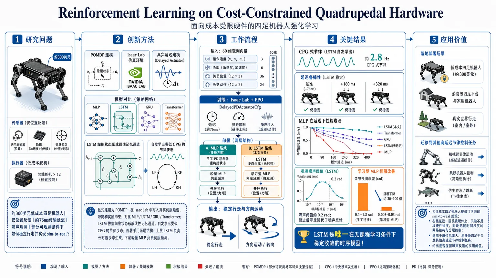
研究问题在约300美元、仅位置反馈、存在约76 ms传输延迟和噪声观测的低成本四足机器人上，强化学习如何在部分可观测条件下实现稳定行走，并解决 sim-to-real 落差？创新方法将低价四足控制显式建模为 POMDP，在 Isaac Lab 中把真实伺服延迟、带宽和奖励约束直接写入仿真；系统比较 MLP、LSTM、GRU、Transformer。核心 Aha! 是：LSTM 依靠细胞状态形成线性记忆通道，自发学出类似 CPG 的节律步态；部署时再采用“两层结构”——上层 LSTM 负责长时程步态生成，下层轻量 MLP 负责伺服预测，比单一前馈或双循环结构更稳、更省工程成本。工作流程输入为命令速度、IMU、关节位置/历史动作等 60 维观测；先在 Isaac Lab + PPO 中训练不同架构，并用校准后的 DelayedPDActuatorCfg 模拟真实伺服延迟、力矩限制和噪声；部署阶段分两路：MLP 路线用手工合成 PD 观察器重建隐藏状态，LSTM 路线用学习到的伺服 MLP 生成伪观测并开放环运行；最终输出为硬件上的稳健步态控制与不同方向运动。关键结果LSTM 是唯一在无课程学习下稳定收敛的时序模型，硬件上涌现出约 2.8 Hz 的 CPG 式节律；在额外 +160 ms、+320 ms 延迟下仍保持稳定步态，而 MLP 的振荡明显崩塌。观测消融发现噪声阈值约 0.2 rad，超过后零反馈比噪声反馈更好。学习型 MLP 伺服将关节预测误差从 0.1–1.8 rad 降到 0.003–0.03 rad。应用价值为低成本四足机器人提供可落地的 sim-to-real 路线，说明在强延迟、弱反馈硬件上，重点不是堆硬件精度，而是用匹配时间尺度的网络结构与分层控制。研究为廉价机器人、消费级四足平台和其他高延迟节律控制任务提供了可复用的设计原则，也给出是否保留噪声反馈的实用阈值。第一部分：核心概览 (Overview)
围绕低成本四足机器人的sim-to-real难题，论文把问题从“高精度硬件上的控制优化”转向“高延迟、低反馈带宽、部分可观测”条件下的架构选择。核心贡献是：在一台 300 的 Mini Pupper 2 上，比较 MLP、LSTM、GRU、Transformer 的同条件训练与部署，证明 LSTM 能在 76 ms 运输延迟下自发形成 CPG 式节律控制，并以极低的部署工程成本实现稳健行走；同时揭示噪声反馈有时比零反馈更糟，以及两层部署结构（LSTM 策略 + MLP 伺服模型）对低成本硬件更合适。
---
第二部分：结构化快速回顾
《Reinforcement Learning on Cost-Constrained Quadrupedal Hardware》（None，）
- 背景：低价四足平台的核心瓶颈不是算力，而是>50 ms 运输延迟、仅位置反馈和噪声状态观测，这把原本的 MDP 变成 POMDP。
- 方法：在 Isaac Lab 中用 PPO 训练 MLP/LSTM/GRU/Transformer，并把真实伺服延迟、带宽和奖励约束显式写入仿真；部署时采用合成 PD 观察器或学习到的伺服 MLP。
- 结果：LSTM 唯一在无课程学习下稳定收敛，并在硬件上涌现出 2.8 Hz 的 CPG；GRU 和 Transformer 未收敛；MLP 需要多阶段 curriculum 才能工作。
- 讨论：高延迟硬件适合时间感知网络与线性记忆路径；低成本平台的最佳策略不是堆硬件 fidelity，而是匹配控制层级的时间尺度。
- 局限：伺服动力学数据稀缺，学习型伺服模型可能存在更大数据下的性能上限；Transformer 计算代价高；结论集中在单一廉价四足平台。
- 结论：在强延迟、弱反馈硬件上，LSTM + MLP 两层结构比单一前馈策略更可行，且高延迟可能诱导出类生物 CPG解。
---
第三部分：逐章节冷凝解析 (Section-by-Section Condensing)
Abstract
延迟把标准 RL 问题改写成部分可观测任务
低成本平台的关键障碍是执行器到位延迟与噪声反馈，直接扩大 sim-to-real gap。摘要明确写出：*“a measured >50 ms transport delay transforms the locomotion task from a standard Markov decision process into a partially observable one.”* 这里的核心不是“迟了一点”，而是状态本身不再可完全观测，控制问题从 MDP 变成 POMDP。
前向延迟模型 + 时间感知网络是主路线
摘要给出的解决方式是把平均执行器延迟建模为前向模型，并配合时间感知神经网络：*“using a forward model of the average actuator delay, paired with a time-aware neural network results in robust locomotion.”* 这说明方法不是单纯增加 RNN，而是把延迟补偿和时间记忆分层处理。
LSTM 学到类 CPG 节律，且对极端延迟扰动鲁棒
摘要最强的结果是：*“our time-aware neural network learned a central pattern generator (CPG)”*，并且这个节律对 *“+320 ms latency perturbations”* 仍然稳健。这里的学术价值在于，网络不是只学会跟踪命令，而是形成了自主节律振荡器。
生物启发不是修辞，而是机制对齐
摘要把 CPG 与脊髓节律控制直接对接：*“mirroring the CPGs found in the spinal cords of vertebrates.”* 最终判断更进一步：*“temporal self-organization may be a general strategy for cost-constrained locomotion.”* 这把结论提升为控制机制层面的普适策略。
---
I Introduction
高价四足与低价四足的控制鸿沟
引言指出高端四足普遍使用 quasi-direct-drive 或 elastic actuators，延迟低、控制频率高：*“Standard quadrupeds use quasi-direct-drive or elastic actuators with low latency and high control frequencies.”* 反向地，廉价平台因硬件与通信链路限制，无法把这类假设直接迁移。
成本门槛本身构成方法学问题
引言明确把问题定义为经济门槛：*“At 10K–150K, purchasing power buys machine fidelity”*，并带来 *“high fixed cost and high barrier to entry.”* 研究目标不是再造昂贵平台，而是让低成本平台也能承载 RL 行走。
Mini Pupper 2 的硬件特征极端而具体
图 1 与正文给出关键事实：Mini Pupper 2 约 300，使用 brushed DC position servos，*“8, position-only feedback, 76 ms communication delay via ESP32 serial path.”* 与研究级平台的 *“<5 ms latency”* 对比鲜明。这个 76 ms 不是边缘问题，而是整个任务结构的决定性因素。
低成本硬件与生物系统共享延迟尺度
引言把 100–160 ms 的生物感觉运动延迟引入比较：*“biological sensorimotor systems operate under similar constraints with delays of 100–160 ms.”* 这不是类比装饰，而是为CPG 式解决方案提供机制参照。
POMDP 化是核心建模转折
引言最终把问题表述为：*“we framed the RL problem as a partially observable Markov decision process (POMDP).”* 原因很具体：延迟可变、速度和力矩缺失、位置量化且带噪。对应的判断也很清楚：*“static networks are not sufficient on their own.”*
研究问题锁定在“架构 vs 工程补丁”
I-A 的总问题被压缩为：*“is the sim-to-real bottleneck best addressed through network architecture or through training and deployment engineering?”* 这句话决定了整篇论文的比较框架：学习到的时间结构，还是手工补偿工程。
---
I-A Problem Statement
延迟把状态转移改写成动作缓冲问题
公式 (1) 给出标准延迟状态扩展：(tildesₜ₌₍ₛₜ,aₜ₋₁,aₜ₋₂,łdots,aₜ₋ₖ))。这意味着若动作在 (t+k) 才生效，控制器必须记住过去未执行的动作缓冲。
部分可观测性来自“状态不全 + 延迟随机”双重损伤
正文指出：*“for hardware where (sₜ) is itself only partially observable (no velocity, no torque, quantized position with stochastic delay)”*，系统需要 POMDP 形式化。这里的复杂性不只是“有延迟”，而是观测维度本身就残缺。
问题的本质是时间记忆是否可由网络内生学习
问题设置明确问：*“is it cheaper to build a model-based observation bridge … or to train a temporal network that learns the delay and missing-state dynamics internally?”* 这将比较对象定为两条路线：
- 工程桥接：合成 PD 反馈；
- 时间网络：LSTM 类结构自己学延迟和缺失状态。
---
II Methods
II-A Training
统一训练框架：Isaac Lab + PPO + 单卡高并发
所有策略在 NVIDIA Isaac Lab 中训练，使用 rslᵣₗ PPO，硬件为 single NVIDIA RTX 4090 (24 GiB)，并行环境数为 4098。这保证了不同架构的比较基础一致。
伺服模型被显式校准为真实延迟平台
训练中的 actuator 采用 *“calibrated DelayedPDActuatorCfg”*，参数匹配图 2 测得的真实延迟和幅频特性：
- (Kₚ₌₇₀)
- (K_d=1.2)
- friction (=0.03)
- armature (=0.005)
- transport delay (=33–43) physics steps at 500 Hz
- effort limit (=5.0) Nm
- velocity limit overridden to (10.5) rad/s
这意味着仿真不是“理想电机”，而是刻意贴近廉价伺服。
观测空间固定为 60 维
观测向量包括：base linear velocity [3]、base angular velocity [3]、projected gravity [3]、velocity commands [3]、relative joint positions [12]、joint velocities [12]、joint efforts [12]、previous actions [12]。总计 60 维，其中动作历史显式进入观测。
奖励形状更强调稳定跟踪与动作平滑
奖励标准差与惩罚项被收紧：
- (σₗᵢₙ=0.1)
- (σₐₙg=0.2)
- foot slip = (-0.5)
- joint position = (-0.7)
- joint torques = (-5×10⁻⁴)
- action smoothness = (-1.0)
- base orientation = (-5.0)
这组设置提高了对平稳行走与少抖动的偏好。
II-B Network Architectures
所有模型共享同一 MLP head，差异只在时间模块
actor/critic head 都是 [512, 256, 128]，激活为 ELU。PPO 超参数完全一致：learning rate (1×10⁻³)（adaptive）、(γ=0.99)、(łambda=0.95)、clip ratio (0.2)、entropy coefficient (0.005)、5 epochs/update、desired KL (0.01)、24 steps/environment。这样能把差异尽量归因于架构本身。
时间模块把观测压到 128 维再进入 MLP
对 LSTM/GRU/Transformer，先把观测映射到 (R¹²⁸) 再接 MLP head。对比焦点因此是时间记忆机制，不是分类器头的容量。
LSTM 是唯一在无课程下稳定收敛的时序架构
表 I 的关键结果：
- MLP：40K iter reward 271 †，action noise std 0.07 †，需要 curriculum
- LSTM：40K iter reward 271，action noise std 0.07，不需要 curriculum
- GRU：reward 72，action noise std 0.25，did not converge
- Transformer：reward —，action noise std 1.13，did not converge
表中还给出 GPU memory、steps/s、部署参数与真实传感器占比。LSTM 的收敛不是“勉强可以”，而是唯一能直接稳定训练的时序方案。
GRU 的失败被解释为缺乏纯线性记忆路径
正文给出机制判断：*“the task requires delay compensation via specific architectural capacity (the cell state linear pathway), not merely oscillation capacity.”* 也就是说，GRU 的更新门会引入过强的非线性干预，不适合固定步长延迟补偿。
Transformer 在该任务上不划算
Transformer 不仅未收敛，且与此前人形机器人工作相比成本过高：*“with four A100 GPUs, thousands of parallel environments, and a two-stage teacher–student pipeline”* 才换来 *“the marginal gain (~7%)”*。在低成本平台上，这种收益/成本比不成立。
II-C Deployment
部署问题分为“缺失观测重建”与“慢伺服跟踪”两层
低价位置伺服只回传位置，速度和力矩近似为 0：*“the servo reports joint velocity and effort as ≈ 0.”* 同时，命令速度过高会超过伺服带宽：*“above 3 Hz, tracking becomes stifled.”* 因此部署必须分层。
MLP 部署依赖手工合成 PD 观察器
MLP 策略要靠 synthetic PD observer 重建隐藏状态：
- 动作进入 5-step delay buffer（25 Hz 下约 200 ms）
- 用 ( τ = Kₚ₍qₜₐᵣgₑₜ-q)-K_ddot q ) 模拟 PD
- 通过 4 个 substeps 贴合仿真频率
- 用 synthetic joint position/velocity/effort 替代硬件读数
- 60 维里只有 15 个来自真实传感器（25%），36 个合成（60%），3 个启发式
这条路线很强地依赖调参：*“Six or more parameters require tuning.”*
LSTM 部署采用开放环和学习到的伺服预测器
LSTM 不直接信任真实关节回读，而是 *“operates open-loop at 25 Hz”*，并由 *“a learned, per-joint servo MLP network”* 生成伪关节观测。60 维里只有 6 个真实传感器维度（10%）：IMU angular velocity [3] + projected gravity [3]。joint effort 和 base linear velocity 被置零。
真实部署只需一个标度参数
LSTM 的关键调参仅是 *“the hardware scale (set to 0.75 in practice)”*，即命令乘子。相比 MLP 的多参数 PD 观察器，LSTM 的部署复杂度明显更低。
---
III Results
III-A Emergent Central Pattern Generator
LSTM 在硬件上涌现出自主节律控制
硬件上，LSTM 不只是跟踪轨迹，而是形成了 *“a central pattern generator (CPG)”*。定义性特征包括：
- hidden state 自发生成节律
- 不依赖感觉确认
- IMU 只用于平衡调制
- 基础步态节律是 autonomous 的
这已经超出普通“鲁棒策略”的范畴，接近内生节律发生器。
硬件上的节律比仿真更接近单频 CPG
正弦拟合结果：12 个关节的 mean (R²) 在仿真中为 0.40，在硬件上为 0.77。正文解释原因是：*“open-loop deployment removes the high-frequency corrective behaviors.”* 硬件部署滤掉了仿真中高频修正，使节律更纯。
得到的不是经典离散步态，而是连续调制的 trot-like pattern
波形 *“does not cleanly decompose into categorically separable gaits”*，但四肢对角线配对近相位，形成 trot-like pattern。这说明网络学到的是连续可调的节律吸引子，不是硬编码步态库。
吸引子轨道呈椭圆，反映不对称动力学
图 5 的 PCA 显示 LSTM 在动作空间与内部状态空间都形成稳定极限环：*“the orbit is elliptical rather than circular.”* 这种非对称性可能来自 URDF joint limits 和 asymmetric leg loading，说明学习到的振荡器对硬件约束有编码。
与生物 CPG 的对应不只是类比
正文直接把“反馈独立”与脊髓去传入（deafferentation）联系起来：*“the removal of sensory feedback”* 后节律仍能维持。这里的关键不是“像生物”，而是功能层面同构：没有感觉反馈，仍能自持节律。
地形外推支持 CPG 解释
在 hills / troughs 等 OOD 地形上，节律通过 IMU 重调制仍能维持，说明这个节律不只是对单一平地轨迹的记忆，而是可迁移的节律控制模式。
III-B Robustness to Observation Delay: LSTM vs. MLP
LSTM 对额外延迟的容忍度显著更高
在训练基础 76 ms 延迟之外，再注入 +160 ms 和 +320 ms 观察延迟后，LSTM 仍保持 *“consistent 5.3 Hz gait”*，幅度维持在 -0.30–0.30 rad 左右，且 jitter 低。图注进一步给出：在 +320 ms 条件下幅值仍为 0.49。
MLP 的振荡结构在延迟下崩塌
MLP 在同样条件下出现 *“erratic frequency variation (6.6–7.5 Hz)”*，幅度降到 -0.1–0.1 rad，图注显示 +320 ms 时振幅仅 0.16。说明 MLP 更像被当前输入驱动，而不是内部自维持节律。
PCA 吸引子清楚区分两类动力学
图 5 中，LSTM 的动作空间轨道在 +320 ms 额外延迟下仍保留；MLP 则 *“collapse into flat horizontal bands.”* 内部状态方面，LSTM 的 128 维 cell state 在 0、+160、+320 ms 下都追踪椭圆轨道，解释了它为何能抗延迟。
稳健性不是“更强的反应”，而是“更少的外部依赖”
正文的结论很清楚：*“The LSTM demonstrates a limit-cycle attractor; a CPG, while the MLP is highly input dependent.”* 延迟越大，越能看出内部吸引子是否足够强。
III-C Sim-to-Real Deployment
观测噪声存在明确阈值
噪声注入与零化比较显示 crossover 在 (σ approx 0.2) rad。低于该值时，噪声反馈优于零反馈；高于该值时，*“zeroing the channels preserves the gait better than with noisy feedback.”* 这直接给出一个实用判据：噪声超过阈值，宁可不要这路观测。
硬件噪声测量解释了为什么要丢弃速度通道
实测位置噪声 (σ = 0.101) rad，位于阈值下方；但由有限差分得到的速度噪声 (σ = 3.17) rad/s，远高于阈值。于是问题不是“有没有反馈”，而是哪一路反馈在污染策略。
真实部署采用开放环与低通滤波
LSTM 在硬件上用 *“a single command gain of 0.60–0.75”*，并在动作输出端加 8 Hz Butterworth low-pass filter。这解释了为什么硬件上波形更平滑，也说明部署策略是抑制高频修正而不是放大反馈。
方向一致性在仿真和实物中都成立
前进、后退、横移、转向都实现了 *“directionally compliant locomotion”*。前进略带顺时针弧线被归因于 *“hardware hip asymmetry”* 和 IMU 陀螺仪噪声，而非策略失效。
学习到的伺服 MLP 显著优于解析 PD 模型
伺服模型只用 3 圈 开环播放数据、每个关节 390 samples 训练。结果上，MLP servo 把关节预测误差从 0.1–1.8 rad 降到 0.003–0.03 rad。这说明低成本平台上的关键不是“更复杂控制器”，而是更准的短时伺服预测。
两层结构优于双 LSTM 结构
LSTM-MLP 是最优组合；LSTM-LSTM 失败有两个原因：
- 伺服 LSTM 在稀缺数据下过拟合；
- 两个循环网络共享动作流，误差会通过自回归链条层层放大。
静态 MLP 能打断这个误差闭环，因为 *“a prediction error at step t does not persist into step t+1.”*
---
IV Discussion
核心判断是：瓶颈在架构归纳偏置，而非硬件 fidelity
讨论部分把结论提升为方法论：*“the sim-to-real bottleneck is addressable by architectural inductive bias rather than hardware fidelity.”* 这意味着在低成本平台上，硬件再贵也未必最优，关键是让网络结构匹配时序结构。
时间感知网络在强延迟下会自发形成 CPG
讨论把实验三条主线收束为：
- time-aware networks 会收敛到 CPG；
- CPG 对 OOD 延迟和地形鲁棒；
- 这种节律在无反馈下仍可维持，且在噪声下更差。
这把“学习到的节律”从现象变成可解释控制机制。
部署应按控制层级分配不同的时间模型
关键句是：*“quadrupedal locomotion on highly delayed hardware requires two levels of abstraction.”* 上层用 LSTM 负责长时程延迟补偿与步态生成，下层用无状态 MLP 负责短时程伺服预测。这里的原则是时间尺度分层。
数据稀缺决定了静态伺服模型比循环伺服模型更稳
讨论承认：若有“thousands more samples per joint”，LSTM servo 可能更强；但在当前小样本下，MLP 更优，因为它不会积累 hidden-state drift。这个判断强调数据规模与架构选择的耦合。
GRU 与 Transformer 的失败具有结构性意义
讨论明确指出：*“the GRU’s update gate … cannot maintain the pure shift-register representation required for delay compensation.”* Transformer 则“not strictly necessary”。这不是单纯性能比较，而是任务所需记忆形态的比较。
更广的推论指向节律控制的一般性
结尾的推断是：*“training under large transport delay induces CPG-like solutions in time-aware networks”*，并可能推广到任何受显著传输延迟约束的节律控制任务。结论从四足机器人外推到一般性时序控制。
---
V Conclusion
完整 sim-to-real 管线建立在低价、高延迟平台上
结论重述整个系统：*“a complete sim-to-real pipeline for quadrupedal locomotion on a 300 robot with a 76 ms transport delay.”* 这是整篇工作的现实基座。
LSTM 的部署复杂度显著低于 MLP
LSTM 形成的 CPG *“deploys open-loop with a single tuning parameter”*；MLP 则需要 *“a hand-tuned synthetic PD bridge with six or more parameters.”* 这直接给出工程复杂度差异。
GRU 与 Transformer 被排除在低成本解之外
结论中，GRU 因 *“lacking the cell state pathway for delay compensation”* 失败，Transformer 则 *“impractical for training or deploying on low-cost hardware.”* 低价平台上，能否落地比理论表达能力更重要。
POMDP + 吸引子分析 + 观测消融构成机制证据链
PCA 吸引子分析与 observation ablation 共同解释结果，说明高延迟硬件上的问题不是简单回归，而是部分可观测控制系统中的内在动力学设计。
更广泛的结论是：高延迟可能诱导生物式自主节律
收束句把研究提升为一般原则：*“high-delay hardware appears to induce CPG solutions in time-aware networks.”* 也就是说，生物系统在脊髓层采用的自主节律，可能是成本受限 embodied control 的通用答案。
---
Acknowledgments
社区与跨学科支持
感谢 Stanford 与 Harvard 的生物 CPG 讨论、Isaac Lab 与 rslᵣₗ 开源基础设施、以及 NSF GRFP 和 Stanford Bio-X Bowes Fellowship。这个结构说明研究不仅是算法工作，也依赖仿真基础设施、控制理论讨论与跨学科生物启发。
---
第四部分：深度理解与语言支持 (Understanding & Nuance)
1) 术语解析
1. Transport delay
指“动作发出到执行器真正到位之间的时间差”。这里不是通信延迟的泛称，而是命令—物理状态之间的滞后。76 ms 的延迟足以让 25 Hz 控制环中的上一帧动作在下一帧仍未完成，直接破坏 MDP 假设。
2. POMDP
Partially observable Markov decision process 不是“有点看不清”的抽象说法，而是指：当前观测不足以恢复完整状态，必须依靠历史信息推断隐藏变量。这里包括缺失速度/力矩、量化位置和随机延迟缓冲三层不可观测性。
3. Shift-register structure
这是 LSTM cell state 被赋予的关键功能性比喻：像移位寄存器一样保留过去若干步的动作/状态，使固定步长延迟可以被“顺带记住”。这里强调的是线性、顺序保持、近似无损传递，这正是 GRU 更难提供的性质。
4. Limit-cycle attractor
不是普通“周期振荡”，而是动力系统中对初值扰动具有吸引性的封闭轨道。这里的学术含义很强：一旦进入该轨道，系统会自动回到节律上，因此比单次轨迹拟合更适合解释稳定步态。
5. Deafferentation
生理学上指切断感觉传入。这里借来强调：即使没有实时感觉反馈，节律系统仍能维持基本步态。LSTM open-loop 的行为与这个现象对应，说明其内部状态已经承担了节律生成职责。
---
2) 疑难查证
为什么“噪声比零反馈更糟”？
因为问题不在于反馈量少，而在于反馈被污染到足以误导控制器。若观测噪声的标准差超过约 0.2 rad，网络会把错误信号当成真实状态，导致策略在错误方向修正；而完全置零至少不会持续注入虚假状态。这里体现的是错误信息比缺失信息更危险。
为什么 LSTM 比 GRU 更适合固定延迟补偿？
固定延迟任务需要把“过去第 k 步的动作”以近似顺序缓冲方式保持下来。LSTM 的 cell state 更接近线性记忆通道；GRU 的更新门每步都重新混合状态，更像在做压缩后的动态滤波，不利于严格的“延迟对齐”。
为什么 Transformer 没有在这里胜出？
Transformer 的优势是全局依赖建模，但这里的关键依赖是固定步长延迟和小样本部署。要学会“哪几步最重要”，模型必须额外学出时间对齐规则；在数据、算力和部署复杂度受限时，这个优势不容易转化成实际收益。
为什么 LSTM-MLP 比 LSTM-LSTM 更稳？
因为两个递归模块串联会形成误差累积回路：上层策略误差会改变下层伺服预测输入，而下层预测误差又反过来污染上层的历史动作观测。静态 MLP 没有 hidden-state drift，短时伺服预测反而更稳定。
---
第五部分：创新评估与关联 (Synthesis & Novelty)
1) 创新性判断
相对于过去 2–5 年工作的新颖性主要在四点：
第一，问题设定从“高端四足 sim-to-real”转向“低成本、强延迟、弱反馈硬件”
近年的四足 RL 多集中在 ANYmal、高频 brushless/SEA、甚至更高算力平台；这里的对象是 300 的 brushed-servo quadruped，只有 position-only feedback 和 76 ms transport delay。真正新的是把 RL 放进了一个更接近消费级机器人而非研究级机器人的约束区间。
第二，系统性比较了 MLP/LSTM/GRU/Transformer 的“可部署性”而非只看仿真分数
近年相关工作常比较性能，但这里把 收敛性、课程依赖、GPU 内存、steps/s、真实部署参数数量、传感器占比 一起纳入评价。结果显示：
- LSTM 是唯一无需 curriculum 就能稳定收敛的时间模型；
- GRU 和 Transformer 直接失败；
- MLP 虽能通过工程补丁勉强成功，但部署复杂。
这种比较把“模型性能”改写成工程可行性。
第三，发现高延迟会诱导出类 CPG 的自主节律，而不是仅仅学到迟滞补偿
过去 2–5 年关于 delay-aware RL、disturbance-aware RL 的重点多在鲁棒性提升；这里更进一步，识别出 “emergent CPG”，并用 PCA limit cycle、R² 正弦拟合、open-loop 稳定性、+320 ms 延迟鲁棒性 给出机制证据。新意在于：网络不是“适应了延迟”，而是在延迟条件下收敛到节律生成器。
第四，提出两层部署架构：LSTM 策略层 + 学习型 MLP 伺服层
以往 sim-to-real 常依赖解析 PD、状态估计器或 privileged learning；这里把部署拆成：
- 上层：LSTM 处理长时程延迟与步态；
- 下层：stateless MLP 预测伺服短时动力学。
关键突破不是增加层数，而是按时间尺度分工，并证明在低数据下这比 LSTM-LSTM 更稳。
---
2) 解决了前人没解决的问题
解决了“廉价四足上的强延迟部分可观测控制”这一现实空白
过去的高性能四足成果多建立在低延迟、高反馈、高成本执行器上。这里解决的是：当硬件只有位置反馈、速度/力矩缺失、延迟超过 50 ms 时，如何让 learned policy 仍然落地。
解决了“噪声反馈是否值得保留”的实证阈值问题
观测消融给出明确 crossover：(σ approx 0.2) rad。这比泛泛的“噪声越少越好”更有决策价值，因为它提供了可操作的反馈保留/丢弃标准。
解决了“工程补丁还是架构偏置更有效”的比较问题
结果把答案具体化：在该硬件上，架构偏置 + 简洁部署 比复杂工程桥接更划算；但在短时伺服层，无状态 MLP 又比循环模型更稳。也就是说，不是“越复杂越好”，而是不同时间尺度选不同归纳偏置。
与近年相关工作的关系
- 相比 random delays / delayed feedback RL：这里不是仿真中的随机延迟，而是真机中的固定高延迟和低成本伺服。
- 相比 disturbance-aware sim2real：这里不仅对扰动鲁棒，还展示了吸引子/CPG 机制。
- 相比 humanoid RL with transformers：这里证明 Transformer 在低成本约束下不一定值得。
- 相比 经典 quadruped locomotion：这里把焦点从动力学能力转到通信延迟、部分可观测性与部署工程。
如果需要，我可以继续把这篇论文压缩成一页“答辩速记版”，或者整理成“方法—实验—创新—局限”四栏对照表。
-
07
📊 含图深析
📄 摘要：一个基于梯度的 GNN 解释器在给定一个含有两个化学等价硝基的分子时，会为它们分配精确到最后一位都相等的归因分数。它不可能做出其他结果：消息传递严格地具有置换等变性，因此输入的任何自同构都会使每个归因保持不变。然而标准报告，即 top-k 边，会指定这两个硝基中的一个，而究竟是哪一个则由数组的顺序决定。我们表明，这是一个结构性障碍，而不是实现疏漏。当不存在被输入自同构群固定的最小有效解释时，没有任何规则能够同时是单值的、最小的并且尊重对称性。对于实践中使用的 exact-k 报告，我们给出一个无参数判据，该判据在 Lean 4 中被机械化实现且不依赖任何公理，能够仅从图本身决定该大小的每个分数最优报告是否都必须切分一个轨道。在 21298 个实例—预算决策中，该判据与机械化模型等价性检查完全一致，没有例外，并且我们发现的任何切分案例都没有允许中性替代方案。该障碍很常见。在开创性可解释性论文所使用的 Mutagenicity 数据集中，93.4% 的样本存在非平凡自同构，因此把对称输入视为测度为零的排除理由，虽然在其原本针对的连续域中是合理的，但在这里失效了。在那些论文报告的稀疏性预算下，含有两个可互换硝基的分子中有 24.0%（25 个中的 6 个）恰好显示其中一个，而其中每一个在机械验证下都是任意的。模型的盲视也会制造对称性：每个 MUTAG 分子都包含化学上可区分但网络被证明无法区分的原子，而匹配对照表明，分辨率由模型读取的内容决定，而不是由其参数化方式决定。报告轨道可在 0.11 毫秒和每图额外 0.43 条边的代价下消除这种任意性。
📖 英文原文
arXiv:2607.26344v1 Announce Type: new Abstract: A gradient-based GNN explainer given a molecule with two chemically equivalent nitro groups assigns them attribution scores that are equal to the last bit. It cannot do otherwise: message passing is exactly permutation equivariant, so any automorphism of the input leaves every attribution invariant. Yet the standard report, the top-k edges, names one of the two, and which one is settled by the order of an array. We show this is a structural obstruction rather than an implementation slip. When no minimal valid explanation is fixed by the input's automorphism group, no rule can be single-valued, minimal and symmetry-respecting at once. For the exact-k reports used in practice we give a parameter-free criterion, mechanised in Lean 4 with no axiom dependencies, that decides from the graph alone whether every score-optimal report of that size must split an orbit. Across 21298 instance-budget decisions the criterion agrees with a mechanical model-equivalence check without exception, and no severing case we found admitted a neutral alternative. The obstruction is common. Nontrivial automorphisms occur in 93.4% of Mutagenicity, the dataset the seminal explainability papers use, so the measure-zero dismissal of symmetric inputs, sound on the continuous domains it was made for, collapses here. At the sparsity budget those papers report, 24.0% of molecules with two interchangeable nitro groups (6 of 25) surface exactly one of them, every one arbitrary under mechanical verification. A model's blindness also manufactures symmetry: every MUTAG molecule contains atoms chemistry separates and the network provably cannot, and a matched control shows the resolution is set by what the model reads rather than how it is parameterised. Reporting orbits removes the arbitrariness at 0.11 ms and 0.43 extra edges per graph.
💡 亮点：本文指出，图神经网络解释中的 Top-k 边报告在存在输入自同构时会产生结构性任意性，而非简单实现错误。由于消息传递严格满足置换等变性，化学等价结构的归因无法被模型区分，但 Top-k 报告仍可能因数组顺序任意选择其中之一。作者给出形式化判据并在 Lean 4 中机械化验证，发现该问题在常用分子数据集中相当普遍，而报告轨道可低成本消除任意性。
🔬 与我们研究方向的关系
📐 方法要点：方法上，摘要目前只能确认：图神经网络结构—性质建模、等变神经网络与对称性保持表示。需要回到原文核对数据来源、标签定义、模型架构、物理约束和验证集，不能把题名直接等同于可迁移算法。若要接入团队的 ML 势或 Hamiltonian 流程，应先确认它是否同时学习能量、力、应力、自旋、极化或电子结构，以及是否报告跨材料/跨温度外推。还需核对原文的训练数据规模、损失函数、边界条件和误差分解，才能判断其是否适合团队的材料模拟任务。
🔗 相关工作关联：与团队方向的可能连接在于：AI for science 与材料/物理问题的结构化分析。团队已有机器学习势、第一性原理、有效 Hamiltonian、缺陷计算、电子—声子耦合和有限温度动力学基础，但该文是否提供可复用数据或物理量仍需查证。若研究对象属于机器人、量子信息或电网等非材料场景，关联主要是物理约束学习、少样本建模或不确定性评估，而不是直接迁移材料机制。这种联系应通过同一材料体系上的独立基准和跨分布测试确认，不能仅凭方法名称或期刊来源下结论。
💡 对你方向的启示：对《图神经网络 Top-k 解释中的自同构诱导非规范性》的启示是先做可证伪的对接：从一个已有材料体系和小规模 DFT 基准开始，明确输入、目标、基线和外推测试，再决定是否接入铁电/磁性、缺陷或载流子动力学工作。具体可先把该文的表示或损失函数在 HfO₂、二维滑移铁电、CrI₃/CrSBr、SiC/GaN 缺陷或卤化物钙钛矿上做小规模复现；若没有直接交叉，应保留为方法参考而非强行迁移。第一步可以选取团队已有的 HfO₂、二维磁体、半导体缺陷或钙钛矿数据做小样本试验，再决定是否扩大到生产级计算。
📖 展开分析 + 配图
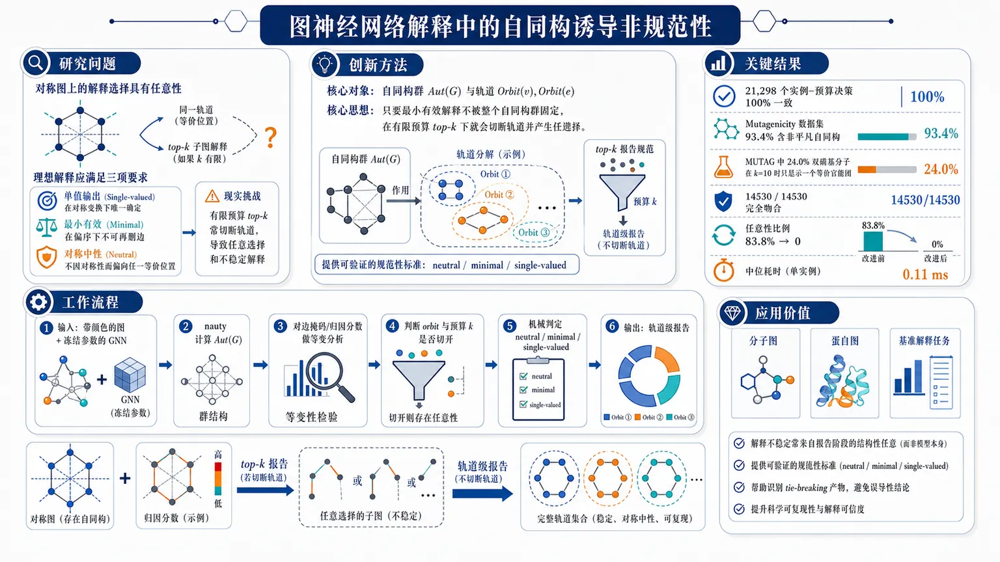
研究问题当图神经网络解释面对存在自同构的对称图时，top-k 子图解释是否还能同时满足“单值输出、最小有效、对称中性”三个要求？如果不能，究竟是哪一层——模型、归因还是报告——导致了不可避免的任意性？创新方法论文把问题从“归因是否对称”推进到“top-k 报告是否规范”这一层，提出以自同构群和轨道（orbit）为核心的精确判定准则：只要最小有效解释不被整个自同构群固定，top-k 就会切断轨道并产生任意选择。这个判定可机械验证、与参数无关，并用 Lean 4 形式化证明；同时提出轨道级报告，把输出从“一个子图”改为“一个完整轨道或轨道分布”，从根源消除 tie-breaking 任意性。工作流程输入带颜色的图和冻结参数的 GNN，先用 nauty 计算图的自同构群 Aut(G)；再对边掩码或归因分数做等变分析，判断哪些边属于同一 orbit、哪些预算 k 会把 orbit 切开；随后检查 top-k 是否跨轨道截断，并用机械判定验证该报告是否存在 neutral、minimal、single-valued 的解；最后将原始 top-k 子图改写为轨道级输出，按 orbit 平均归因排序并整轨输出。关键结果在 21,298 个实例-预算决策上，理论判定与机械检查达到 100% 一致；Mutagenicity 中 93.4% 的样本含非平凡自同构，MUTAG 中 24.0% 的含双硝基分子在 k=10 时只显示出其中一个等价官能团；在 14530/14530 个决策中，轨道切分准则完全吻合；轨道级报告把任意性从 83.8% 降到 0，并且代价极低，典型中位耗时仅 0.11 ms。应用价值这项研究说明，图解释的不稳定不一定是模型噪声，而常常是报告阶段的结构性任意。它为分子图、蛋白图和基准解释任务提供了可验证的规范性标准，帮助研究者识别哪些 top-k 结果只是 tie-breaking 产物，并以几乎零成本改成更可靠的轨道级解释，提升科学可复现性与解释可信度。第一部分：核心概览
这篇论文把图神经网络解释中的“对称性”问题从“属性是否对称”推进到“top-k 报告是否规范、唯一、无偏”的层面：一旦输入图存在自同构，而解释又以固定预算输出子图，单值性、最小性、对称中性三者就可能不可同时满足。核心贡献是给出一个参数无关、可机械验证的判定准则，并用大规模实证证明这一障碍在分子数据中极其普遍：Mutagenicity 中 93.4% 的样本含相关非平凡自同构，MUTAG 中出现的“恰好表出一个等价官能团”有 24.0%，且全部属于任意选择。进一步区分了模型分辨率、表示分辨率与报告分辨率三个层级，指出许多“稳定性”指标只能测到排序器，不足以证明解释具有规范性。
---
第二部分：结构化快速回顾
《Automorphism-Induced Non-Canonicity in Top-k Explanations of Graph Neural Networks》（None，）
- 背景：GNN 的消息传递是置换等变的，输入图若有自同构，解释分数在这些对称部分上也会严格相同；但常见的 top-k 子图报告必须选出具体边，容易把对称对象任意拆开。
- 方法：构造了一个以自同构群为核心的理论框架，定义neutral / minimal / single-valued 三性质，并给出一个基于轨道（orbit）的精确判定；用 Lean 4 形式化，无公理依赖。
- 结果：在 21,298 个实例-预算决策中，判定准则与机械模型等价检查 100% 一致；在 MUTAG、Mutagenicity、PROTEINS、BBBP、Tree-Grid、Tree-Cycles 上，非平凡自同构非常常见。
- 讨论：很多“解释不稳定”其实不是模型随机，而是报告阶段的 tie-breaking；把排序改成轨道级报告即可消除任意性，代价极小。
- 局限：结论主要针对图上 fixed-budget top-k 子图解释，且依赖于“有效解释准则”与“轨道闭包”是否闭合等条件；对非单一掩码型输出需改输出类型。
- 结论：在对称图上，canonical explanation 不一定存在；若 minimal explanation 不被自同构群固定，就不可能同时保持单值、最小、对称中性。
---
第三部分：逐章节冷凝解析
Abstract
对称输入上的解释必然出现等值 tie
- 关键事实：一个分子若含两个化学等价的硝基，梯度型 GNN explainer 会给它们完全相同的归因，且精确到最后一位比特。原文直接写出：*“it assigns them attribution scores that are equal to the last bit.”*
- 理论原因：消息传递 GNN 的结构是permutation equivariant，自同构不会改变输入，因此任何归因也必须保持不变。对应原文：*“message passing is exactly permutation equivariant, so any automorphism of the input leaves every attribution invariant.”*
- 核心问题不在归因，而在报告：标准输出是 top-k edges，它必须在等分数边中强行选一个，实际实现通常由数组顺序决定。原文：*“which one is settled by the order of an array.”*
- 障碍性质：这不是实现 bug，而是结构性不可能。原文：*“We show this is a structural obstruction rather than an implementation slip.”*
- 三难困境：若最小有效解释不被输入的自同构群固定，就不可能同时拥有single-valued, minimal, symmetry-respecting 三者。原文：*“no rule can be single-valued, minimal and symmetry-respecting at once.”*
- 形式化判定：给出一个parameter-free criterion，在 Lean 4 中机械化，无公理依赖，判断固定预算的 top-k 是否必然“split an orbit”。原文：*“mechanised in Lean 4 with no axiom dependencies.”*
- 大规模验证：在 21,298 个 instance-budget decisions 上，该准则与机械等价检查完全一致。原文：*“agrees with a mechanical model-equivalence check without exception.”*
- 数据分布极广：Mutagenicity 中 93.4% 的实例带非平凡自同构。原文：*“Nontrivial automorphisms occur in 93.4% of Mutagenicity.”*
- 现实影响显著：在文献常用的稀疏预算下，24.0% 的“两个等价硝基”分子只展示了其中一个，而且全都可被机械验证为任意选择。原文：*“24.0% of molecules with two interchangeable nitro groups (6 of 25) surface exactly one of them.”*
- 轨道级报告的代价很低：原文给出 *“0.11 ms and 0.43 extra edges per graph”*，说明修正任意性几乎没有成本。
---
Introduction
等价官能团的归因严格相等
- 具体案例：在 MUTAG 的 25 个含两个对称硝基的分子中，Integrated Gradients 对两者的总归因比值为 1.00×。原文：*“Integrated Gradients assigns the two groups a total attribution ratio of 1.00×.”*
- 解释不等于归因向量：化学家看到的是subgraph，不是连续归因值。标准做法是 top-k 边集合，因此相等分数必须被排序器打破。原文：*“The explanation the chemist sees is not the attribution vector. It is a subgraph, conventionally the top-k edges.”*
- 显式观察：在 k = 10 时，Ying et al. 与 Luo et al. 常用预算下，24.0% 的分子只展示了两个等价组中的一个。原文：*“At k = 10 ... 24.0% of these molecules have exactly one of the two equivalent groups surfaced.”*
- 任意性已被机械证明：这些例子中，替代解释在模型下都成立。原文：*“In 100.0% of those cases we verify mechanically that the alternative ... is accepted by the model.”*
- 已有理论只覆盖前半段：Curie principle、continuous canonicalisation、graph attribution symmetry 等都说明等变/对称不可破坏，但没有把“归因对称”和“top-k 报告”连接起来。原文：*“What is missing is their composition and its cost.”*
- measure-zero 论证在图上失效：连续域里对称输入可视为测度零，但图数据中不成立。原文：*“On graphs that argument fails by a wide margin.”*
---
Related Work
已有工作覆盖了对称性本身，但未覆盖规范报告
- 解释对称性：Crabbé and van der Schaar 已证明 saliency 与 Integrated Gradients 的等变性；这里改用 nauty 精确计算 Aut(G)，而非 Monte Carlo 近似。原文：*“We compute Aut(G) exactly with nauty and read the argument in the opposite direction.”*
- PGExplainer 的问题不同：其缺陷是 index-order concatenation 导致非 permutation invariant，与这里讨论的“对称输入下的退化/去规范性”不同。原文：*“a different defect from the degeneracy studied here.”*
- 方法层面未证明解释等变：有些工作为等变网络构建 explainer，但没有证明解释本身满足 Φ(π·G)=π·Φ(G)。原文：*“without establishing equivariance of the explanation itself.”*
- 公理化解释框架：现有图归因公理带有 symmetry axiom，但没有要求解释映射本身对置换等变。原文：*“but none requires Φ(π⋅G)=π⋅Φ(G).”*
- 跨领域对应结构：最小不可满足子集枚举中，群对称常被用来剪枝；这里则把同一结构用来诊断解释中的障碍。原文：*“Their symmetry is our obstruction, put to work.”*
- 术语歧义澄清：文献里的 “invariant explanation” 常指分布外泛化中的域不变性，这里始终指permutation invariance。原文：*“we use the permutation sense throughout.”*
---
Theory Preliminaries
自同构群是解释不变性的精确来源
- 图与模型设定：有限无向图 (G=(V,E)) 带节点颜色 (c)；message-passing GNN (f) 权重冻结；边 mask (minR|E|) 作为边权输入。原文：*“An edge mask m ... is fed to f as edge weights.”*
- 自同构定义：(Aut(G)) 是同时保持adjacency 与 colour 的置换群。原文：*“the group of adjacency- and colour-preserving permutations.”*
- Proposition 1：exact equivariance：对任何 (σinAut(G))，graph-level readout 满足 (f(G,σḑot m)=f(G,m))，node-level readout 满足 (f(G,σḑot m)σ₍ᵥ₎=f(G,m)ᵥ)。原文：*“For every σ ... f(G,σ·m)=f(G,m)”* 与 *“f(G,σ·m)σ₍ᵥ₎=f(G,m)ᵥ”*。
- 关键结论是“精确相等”：不是近似相等，而是 bit-level 一致。原文：*“The consequence we use throughout is that equality here is exact, not approximate.”*
- 有效性指标也必须等变：fidelity、thresholded fidelity、mutual information、Shapley value 等由输出构造的准则都会严格不变。原文：*“Any validity criterion built from f’s outputs ... is therefore exactly σ-invariant.”*
- 浮点误差极小：在最大的单次 sweep 中 884 个决策里只有 4 个差异，且都只是 (2⁻¹⁶)。原文：*“Of 884 decisions ... 4 differ, all by exactly 2⁻¹⁶.”*
---
A Resolution Hierarchy
三种“看不见”的层级彼此嵌套
- 三种等价关系：
- (simdₒₘ)：域本身承认可交换；
- (sim_f)：模型读入的信息无法区分；
- (simWL)：若按 Weisfeiler–Leman refinement 做 (L) 轮仍同色。
原文：*“Three equivalence relations on the nodes of G nest.”*
- Proposition 2：层级包含关系：(simdₒₘsubseteq sim_fsubseteq simWL)，且 (f) 对 (simWL) 类赋予相同表示。原文：*“∼dom ⊆ ∼f ⊆ ∼WL.”*
- Gap 1：模型分辨率不足：在 MUTAG 中，100.0% 的分子含有模型无法区分的 manufactured pair；平均有 16.2% 的边落在“域会拆开但模型不会拆开”的 orbit 中。原文：*“Gap 1 is resolution the model provably lacks ... 16.2% of MUTAG’s edges.”*
- manufactured tie 的定义：模型读不到的两点被称为 manufactured tie。原文：*“A pair tied under ∼f but separated under ∼dom we call a manufactured tie.”*
- bond-blind control：只读 adjacency 与 node features、但不读 bond types 的 GCN，对所有 188 个 MUTAG 分子都无法区分硝基中的两个氧。原文：*“verified mechanically on all 188 MUTAG molecules, where the output moves by 0 in every case.”*
- Gap 2：表示分辨率不足但归因可能更强：(simWL) 比 (sim_f) 更粗，代表 forward pass 不能分开，但 coordinate-level attribution 有时可以。原文：*“Two nodes that share a colour without being automorphic admit no such permutation.”*
- 实证细节：在 MUTAG 上，(simWL) 类严格更粗的情况占 45.2%，新增 325 个不自同构但同色的节点对；这些对的 GCN 表示都一致到最后一位。原文：*“all receive GCN representations agreeing to within one unit in the last place.”*
- 归因并不总跟表示一致：Saliency 只在这些对的 57.9% 上给出相等分数，Integrated Gradients 只在 20.0% 上相等。原文：*“Saliency assigns equal scores to 57.9% of them and Integrated Gradients to 20.0%.”*
- 架构匹配非常关键：GCN 使用 ((tilde dᵢtilde dⱼ₎⁻¹/²) 归一化，所以 refinement 必须初始化为包含 degree 的版本；若不匹配，只有 42.5% 的所谓 ties 真正一致，误差可达 (1.1×10⁻²)。原文：*“the signature of a correctly matched bound is agreement at the last bit.”*
---
The Trilemma
最小性、单值性、对称中性不能同时保证
- neutral 的定义：若对任一 (σ)，都有 (Φ(σḑot G)=hatσ(Φ(G)))，则该选择规则是 neutral。原文：*“Call a selection rule Φ ... neutral if ...”*
- Proposition 3：no neutral selection：neutral 规则一旦存在，就必须固定在所有自同构下不变；因此只有当最小有效解释中存在一个被整个群固定的点时，neutral 规则才存在。原文：*“A neutral Φ satisfies ... fixed by the whole group.”*
- Theorem 1：conditional trilemma：存在一个同时满足
(i) single-valued，(ii) minimal，(iii) neutral
的规则，当且仅当 (Min(mathcal S)^H≠ǎrnothing)。原文：*“exists if and only if Min(S)^H ≠ ∅.”*
- 不可能性结论：若没有任何最小有效解释被 (H) 固定，则三者不能兼得。原文：*“when no minimal valid explanation is H-fixed, the three cannot hold together.”*
- 两个逃逸方式：
- 放弃最小性，报告 orbit closure；
- 放弃单值性，报告整个 orbit 或对最小解释的分布。
原文：*“Relinquishing (ii) ... reporting the orbit closure”* 与 *“Relinquishing (i) and reporting the orbit of E*.”*
- 输出类型必须改变：Corollary 1 明确要求将 explainer 输出从subgraph 改为orbit 或 equivariant distribution。原文：*“changing the output type of an explainer, from a subgraph to an orbit or to a distribution.”*
---
When a Report Severs an Orbit
固定预算 top-k 的问题在于切断了轨道
- Proposition 4：组合判据：在 (σ)-不变 mask 下，top-k 结果对所有自同构都不变，当且仅当 cut at (k) 没有切断任何 edge orbit。原文：*“if and only if the cut at k severs no edge orbit.”*
- 若切断轨道，top-k 必然在等值边中任意挑选，而替代结果是同样合法的。原文：*“top-k must choose among edges of exactly equal value.”*
- Corollary 2：exact-k 的可行性：存在 neutral、score-optimal、exactly-k 的报告，当且仅当剩余边数 (k-|E_>|) 可以表示成 (E₌) 中若干 orbit 尺寸之和。原文：*“is a sum of sizes of some sub-collection of the orbits.”*
- 实证结果：MUTAG 上有 25 个分子存在跨 orbit 的平局；在 165 个“top-k 切断 orbit”的 instance-budget pair 中，0 个存在 neutral alternative。原文：*“0 admit a neutral alternative.”*
- 结论很强：这说明观察到的 severing 不是实现 artefact。原文：*“the severing we observe is therefore not an artefact of the implementation.”*
- Lean 4 形式化：把问题抽象成有限集上的群作用命题，证明 (hatσ(S)=S) 当且仅当 (S) 是完整 orbit 的并。原文：*“The development is self-contained, uses no library, and all three theorems discharge with no axiom dependencies whatsoever.”*
---
Experimental Setup
实验尽量只测“报告阶段”而不调参
- 模型与数据：三层 GCN 在 MUTAG 和表中数据集上训练到收敛；解释任务用 sum pooling。原文：*“We explain three-layer GCNs ... with sum pooling, trained to convergence.”*
- 训练门槛：训练准确率低于 0.7 的配置直接丢弃。原文：*“discard any configuration below 0.7.”*
- 自同构计算：使用 nauty + pynauty，顶点颜色取完整 feature vector。原文：*“Automorphism groups are computed exactly with nauty.”*
- 解释器集合：共 7 个——GNNExplainer、PGExplainer、Saliency、Integrated Gradients、Input×Gradient、Guided Backpropagation、Deconvolution。原文：*“seven in all.”*
- 硬件与软件：全在 CPU 上跑，单核 MacBook M1 Pro，PyTorch 2.13，PyG 2.8，Captum 0.9。原文：*“no GPU is required at any point.”*
- 超参数策略：不为性能调参，只调到模型能拟合任务；隐藏宽度 64，Adam 0.01，epoch 60–300。原文：*“Hyperparameters were not tuned for performance, only until the model fit the task.”*
- GINE 控制模型：bond-reading network 用三层 GINE，Mutagenicity 上学习率改为 0.003。原文：*“0.01 does not converge and we use 0.003.”*
- 随机性控制：稳定性比较每个实例 8 次，cross-seed decomposition 6 次，确定性 sweep 1 次。原文：*“eight per instance ... six ... one.”*
- 两个实现细节很关键：
- 每个 explainer 都拿一份新模型副本，避免 GNNExplainer 残留 mask 污染梯度路径；
- BBBP 的特征不是 one-hot，不能用 argmax 着色，必须用整个向量。
原文：*“Each explainer gets a fresh copy of the model”*；*“we colour by the entire vector.”*
---
Results
Incidence of Relevant Symmetry
非平凡自同构在真实分子里极常见
- Table 1 显示：Mutagenicity 93.4%，MUTAG 100.0%, PROTEINS 88.4%, BBBP 70.0%, Tree-Grid 44.0%, Tree-Cycles 38.7%。原文：*“Nontrivial automorphisms occur in 93.4% of Mutagenicity.”*
- 样本量：真实数据集分别为 4337、188、250、250。原文：*“n = 4337, 188, 250, 250.”*
- 关键澄清：这里的 Mutagenicity 不是常被混淆的 188 图 MUTAG，而是 4337 图的真实分子集。原文：*“It is not the 188-graph MUTAG of TUDataset.”*
- measure-zero 论证被击穿：图数据里对称输入不是稀有例外，而是多数情形。原文：*“they are the overwhelming majority.”*
Validation of the Criterion
图上直接判定与机械验证完全一致
- Tree-Grid 上的模式：预测速率随 (k) 剧烈摆动，若 cut 吞掉完整 orbit，Integrated Gradients 的 sever rate 降到 0；切在 orbit 中间则升到最大。原文：*“falling to zero ... and rising to the maximum in between.”*
- 大规模一致性：
- MUTAG/PROTEINS/BBBP 的 9312 个决策；
- Mutagenicity 的 3594 个决策；
- 合成基准 1624 个决策；
总计 14530/14530 全对。原文：*“agrees ... on 14530 of 14530 decisions.”*
- 误差仅来自浮点：绝对容差下 99.83%，差异只有 1 个 float32 ULP。原文：*“the discrepant cases differing by one float32 unit in the last place.”*
An Accident in the Benchmarks
经典合成基准系统性低估了对称性
- 生成器问题：Ying et al. 的图生成器把 motif 接在 motif 的第一个节点上，而这个点常常正是 motif 自同构会移动的点。原文：*“attaches each motif through the motif’s first node.”*
- 结果：BA-Shapes 中对称实例为 0，BA-2Motifs 的 house half 也为 0；若改接到 roof apex，(|Aut|=2) 便恢复。原文：*“re-attaching through the roof apex restores |Aut| = 2.”*
Two Gaps in Resolution
模型盲区、表示盲区、解释盲区是三层不同问题
- Table 2：GCN 与 GINE 的对比
- intrinsic pairs：GCN 无法区分 100.0%；
- manufactured pairs：GCN 无法区分 100.0%；
- GINE-const 对 manufactured 也完全无法分开，说明差异来自输入信息而非参数化。
原文：*“What sets the resolution is what the model reads, not how it is parameterised.”*
- MUTAG 上的 first gap：每个分子都至少有一个 manufactured pair；指数 ([sim_f:simdₒₘ]) 平均 3.32，最高 16。原文：*“averages 3.32 and reaches 16.”*
- 域分辨率不可由解释补救：若模型没读 bond types，解释不可能恢复域级分辨率。原文：*“A bond-blind network cannot separate a manufactured pair, and does not, on 100.0% of MUTAG and 100.0% of Mutagenicity pairs.”*
- MUTAG 上 GINE 的 sufficient half：训练到 0.968 的 GINE 可分开 99.7% 的 manufactured pairs，并对 intrinsic pairs 保持 0.0% 分离，重建了 (simGINE=simdₒₘ)。原文：*“recovering ∼GINE = ∼dom in both directions.”*
- Mutagenicity 上差异更小：同构造下训练到 0.831，只能分开 13.9%；原因是 bond type 分布更单一，四种 bond 中一类占 82.8%，而 MUTAG 的 gap 更大。原文：*“the dataset accounts for the difference.”*
- 第二层 gap：表示层：在 MUTAG 上，45.2% 的分子中 WL 类比自同构 orbit 更粗，新增 325 对非自同构但同表示的节点对。原文：*“adding 325 node pairs that no automorphism relates to the 731 that one does.”*
- 归因可强于表示：这些表示相同的对里，Saliency 只在 57.9% 上相等，IG 只在 20.0% 上相等。原文：*“A coordinate-level attribution separates what the forward pass cannot.”*
- 校准必须匹配架构：如果初始化 refinement 时不考虑 degree，只有 42.5% 的“应当相等”对真的相等，误差高达 (1.1×10⁻²)。原文：*“The signature of a correctly matched bound is agreement at the last bit.”*
Attribution versus Reporting
归因可以完全对称，报告仍然任意
- Table 3 的 25 个分子：两个硝基被自同构交换，budget 固定为 k = 10。原文：*“The 25 MUTAG molecules whose two nitro groups are exchanged by an automorphism.”*
- IG 与 Saliency 都是完美对称的：两组总归因比值均为 1.00×。原文：*“equivariant explainers split attribution exactly evenly.”*
- 但 top-k 仍会偏置：IG 在 24.0% 的分子中只显示一个组；Saliency 为 12.0%。原文：*“still surface only one of them a quarter of the time.”*
- 所有这些都被机械验证为任意：替代子图在模型下都可接受。原文：*“in 100.0% of those cases.”*
- GNNExplainer 更不对称：归因比最高到 2.93×；极端例子 molecule 80 中两个硝基分别拿到 3.515 与 1.198，但两个对应子图的输出一致到最后一位。原文：*“identical to the last bit.”*
- 预算是否“坏”是组合问题：在 [1,20] 中，19.5%–39.8% 的预算既不是 prefix sum，也不是 tied block 的合法 subset sum。原文：*“Between 19.5% and 39.8% of budgets ... are of neither form.”*
- 现实预算并不大：多篇工作都用 5–10 个边或节点的预算，因此这不是边缘情形。原文：*“Budgets below the motif size are ordinary practice.”*
Reproducibility
稳定性 1.0 不等于规范性
- 边表顺序会改变输出：仅仅重排 edge list 的行，语义不变，却可能改变 top-k 结果。原文：*“a semantic no-op, can change what is reported.”*
- 对称图上变化明显：对 equivariant explainer，reported top-k 在 0.0–10.6% 的对称图上变化；非对称图为 0.0%。原文：*“0.0–10.6% of symmetric graphs.”*
- PyTorch topk 本身不稳定：官方就不保证 tied elements 的稳定索引，CPU 和 CUDA 之间也可能不同。原文：*“PyTorch documents that topk does not guarantee stable indices among tied elements.”*
- 两种广泛实现不一致：原始 GNNExplainer 通过阈值保留两个方案，而 PyG 用 top-k 只保留一个。原文：*“two widely used implementations resolve it incompatibly.”*
Stability Metrics under a Severed Orbit
常见稳定性指标测到的只是排序器
- 三种处理方式的 Jaccard：数组索引 tie-break = 1.0000；采样 orbit = 0.8005；报告整个 orbit = 1.0000。原文：*“breaking the tie by array index ... scores 1.0000 ... sampling the orbit 0.8005.”*
- 前两者其实是 automorphic images，且在 93.1% 的情况下 fidelity 完全相同。原文：*“the first two outputs are automorphic images with identical fidelity in 93.1% of cases.”*
- 指标的盲点：稳定性为 1 只能说明排序过程确定，不说明解释规范。原文：*“A stability of 1 certifies a sorting routine rather than the data.”*
- 额外注释：用严格 automorphic equivalence 检查后，只有 0.4% 的 GNNExplainer seed-pairs 差异来自 orbit switch，说明不稳定还有其他来源，但指标对 severed orbit 的盲点依旧存在。原文：*“the gap in the metric is there regardless.”*
Robustness across Architectures
结论对不同 GNN 架构保持稳定
- 换成 GIN 和 GAT 仍成立：训练准确率分别为 0.867、0.851、0.840。原文：*“Repeating the core measurements on MUTAG with a graph isomorphism network and a graph attention network.”*
- 一致性极强：又做了 6768 个决策，criterion 对每一个都与机械检查一致；总计达到 21,298 个决策且无一例外。原文：*“again agrees ... on every one (100.00%).”*
- 解释器家族差异不变：梯度类解释器 under σ 的不对称性只有 2e-9，属于浮点噪声；GNNExplainer 仍有 0.14–0.17，高出 8 个数量级。原文：*“eight orders of magnitude larger.”*
- GAT 也不例外：attention 归一化仍只依赖邻域 multiset，因此仍处于 Proposition 2 的边界内。原文：*“GAT is no exception.”*
Orbit-Aware Reporting Algorithm
最小改动即可消除任意性
- 算法思想：按 orbit 的平均归因从大到小选取，直到预算满足。原文：*“selects whole orbits in decreasing order of mean attribution.”*
- 输出方式改变：不仅返回 (S)，还返回 (|mathcal O|) 与 (max_O |O|)，让读者知道报告的是哪个 orbit class。原文：*“so the reader is told a class was reported.”*
- 性质：输出天然 Aut(G)-invariant，满足 Theorem 1 的 (i) 与 (iii)，放弃严格最小性。原文：*“relaxing strict minimality.”*
- 实际效果：在 MUTAG 上，任意性从 83.8% 的预算-实例对降到 0，中位耗时 0.11 ms。原文：*“eliminates the arbitrariness entirely.”*
---
第四部分：深度理解与语言支持
1) 术语解析
Canonicity
- 含义不是简单“正确”，而是在对称下仍能唯一确定代表。
- 这里的关键是：两个等价解释如果只差一个自同构，规范输出应当能“自然”选出同一个代表；一旦靠数组顺序决定，就失去 canonicity。
Orbit / Orbit closure
- Orbit 是群作用下一个对象能被映到的全部等价对象集合。
- Orbit closure 这里指把一个解释扩展为整个等价类的并集，从而避免只选一个代表带来的任意性。
- 差别在于：orbit 是“所有等价选择”，closure 更强调“输出整个对称包”。
Neutral
- 不是“中立意见”，而是对输入对称性的尊重：输入怎么被自同构重命名，输出也应做相应重命名。
- 这比“输出不变”更强，因为 subgraph 位置会跟着图一起变换。
Manufactured tie
- 指由模型盲区制造出来的 tie。
- 两个节点或边在 domain 上其实可区分，但模型输入没读到足够信息，于是 forward pass 只能把它们当成相同对象。
Sever an orbit
- 不是“打破一个 orbit 的数学定义”，而是top-k 切边时把一个完整等价类切成两半。
- 这意味着报告只选出了 orbit 的一部分代表，产生任意性。
2) 疑难查证：为什么“归因对称”仍挡不住“报告不对称”？
可以把整个流程拆成三层：
- 模型层：
GNN 的 forward pass 对自同构是等变/不变的，所以对称输入会得到对称输出。这里决定的是“模型能不能区分”。
- 归因层：
若解释器本身是等变的，等价边会拿到完全一样的分数。这里决定的是“贡献值是否对称”。
- 报告层：
top-k 必须从一串等分数里选出具体 k 个。一旦预算切到某个 orbit 中间，就必须在数学上“任意”地选代表。
所以即便归因完全对称，集合输出仍可能不对称。
高年级博士生式的说法是：
解释函数是从图到权重向量，报告函数是从权重向量到子图。前者可以在对称群作用下保持等变，后者在固定预算下却未必能做成群等变、单值且最小。这不是工程缺陷，而是离散选择问题的不可兼得性。
---
第五部分：创新评估与关联
1) 创新性判断
相对过去 2–5 年相关工作的新颖性，主要有四点：
- 把“解释对称性”推进到“top-k 规范性”
过去工作多讨论 attribution 是否 permutation invariant / equivariant，或解释是否稳定；这里把问题推进到报告子图是否 canonical。
新增的是：即便归因完全对称，top-k 仍可能不可规范。
- 给出精确的必要且充分条件
不是经验性“有时会不稳定”，而是用 Min(S)^H ≠ ∅ 这样的条件精确刻画何时三者可兼得。
这比过去常见的“对称输入会产生 ambiguity”更强，因为它直接决定何时不可能。
- 提出轨道级输出，而不是只修正排序器
以往对 tie 的处理常是打乱、随机采样、固定 index、或多个 run 取平均。这里给出的修正是改变输出类型：
从“一个子图”改成“一个 orbit”或“orbit-distribution”。
这是概念层面的提升，不只是算法微调。
- 大规模实证把 measure-zero 论证彻底推翻到图域上
过去常把对称输入视作连续空间中的稀有点；这里用 Mutagenicity 93.4%、MUTAG 100%、PROTEINS 88.4% 等数字说明，图解释里对称性不是边角案例，而是常态。
这使得 symmetry-related canonicity 变成一个现实问题，不是纯理论边缘命题。
解决的前人未解决问题：
- 既有解释器是否等变，已有答案；
- 既有模型是否能区分某些结构，也有答案；
- 但当解释必须输出有限预算子图时，等变归因如何仍然产生任意的 top-k 代表，此前没有被系统、形式化、并且大规模实证地解决。
- 这里补上的正是这块缺口：从 attribution symmetry 走到 report canonicity 的断裂点。
如果需要，我可以继续把这篇论文整理成：
- “一页纸论文笔记”，
- “定理-证明-实验”三栏对照表，或
- “可直接用于组会汇报的 slides 结构”。
-
08
📊 含图深析
📄 摘要：人为甲烷（CH4）点源是近期气候强迫、安全风险和系统低效率的关键驱动因素。星载成像光谱学是全球识别排放的一种新兴工具，但现有方法在很大程度上依赖人工识别羽流。在这里，我们提出 Methane Analysis and Plume Localization with EMIT（MAPL-EMIT）模型，这是一个端到端视觉 Transformer 框架，利用 Earth Surface Mineral Dust Source Investigation（EMIT）仪器的完整辐亮度光谱，在一个场景内对所有像素的甲烷增强进行联合反演。该方法将光谱信息与空间上下文结合起来，从而显著降低检测限。MAPL-EMIT 同时支持增强量定量、羽流边界刻画和源定位，即使对于相互重叠的羽流也是如此。该模型在 360 万个基于物理的合成羽流上训练，这些合成羽流被注入全球 EMIT 辐亮度数据中。合成评估证实，该模型能够以高召回率和高精度识别羽流，并且相对于现有匹配滤波方法能够捕捉更弱的羽流。在真实世界基准上，MAPL-EMIT 在由 1084 个 EMIT 数据颗粒组成的测试集中捕捉到 84% 的已知人工标注 NASA-L2B 羽流复合体，同时捕捉到的可信羽流数量约为人工分析人员的 1.5 倍。与同时段机载数据、高排放垃圾填埋场和受控释放实验的进一步验证，确认了该模型识别此前未被捕获源的能力。通过纳入模型生成的指标，如光谱拟合分数和估计噪声水平，该框架可以限制假阳性。总体而言，MAPL-EMIT 能够在完整 EMIT 数据目录上实现高通量应用，将甲烷监测转向一种面向设施尺度全球羽流制图的快速、可扩展范式。
📖 英文原文
arXiv:2604.10094v2 Announce Type: replace-cross Abstract: Anthropogenic methane (CH4) point sources are critical drivers of near-term climate forcing, safety hazards, and system-inefficiencies. Space-based imaging spectroscopy is an emerging tool for identifying emissions globally, but existing approaches largely rely on manual plume identification. Here, we present the Methane Analysis and Plume Localization with EMIT (MAPL-EMIT) model, an end-to-end vision transformer framework that leverages the complete radiance spectrum from the Earth Surface Mineral Dust Source Investigation (EMIT) instrument to jointly retrieve methane enhancements across all pixels within a scene. This approach brings together spectral information with spatial context to significantly lower detection limits. MAPL-EMIT simultaneously supports enhancement quantification, plume delineation, and source localization, even for overlapping plumes. The model was trained on 3.6 million physics-based synthetic plumes injected into global EMIT radiance data. Synthetic evaluation confirms the model's ability to identify plumes with high recall and precision and to capture weaker plumes relative to existing matched-filter approaches. On real-world benchmarks, MAPL-EMIT captures 84% of known hand-annotated NASA-L2B plume complexes across a test set of 1084 EMIT granules, while capturing roughly 1.5 times as many plausible plumes compared to human analysts. Further verification against coincident airborne data, top-emitting landfills, and controlled release experiments confirms the model's ability to identify previously uncaptured sources. By incorporating model-generated metrics such as spectral fit scores and estimated noise levels, the framework can limit false-positives. Overall, MAPL-EMIT enables high-throughput implementation on the full EMIT data catalog, shifting methane monitoring to a rapid, scalable paradigm for global plume mapping at the facility scale.
💡 亮点：本文提出 MAPL-EMIT 模型，利用 EMIT 仪器的完整辐亮度光谱与视觉 Transformer 框架，实现全球甲烷羽流增强量反演、羽流勾勒和源定位。模型在注入全球 EMIT 辐亮度数据的 360 万个物理合成羽流上训练，相比传统匹配滤波方法可捕捉更弱羽流。真实基准和多源验证显示，该方法能够以设施尺度支持快速、可扩展的全球甲烷羽流制图，并通过拟合和噪声指标控制误报。
🔬 与我们研究方向的关系
📐 方法要点：方法上，这篇工作可归入晶体结构搜索、高通量筛选和材料信息学。从摘要能确认的线索包括：论文题目和摘要中可确认的方法，以及AI for science 与材料/物理问题的结构化分析对应的结构或物理量。若迁移到团队流程，应采用“用 ML 代理能量和不确定性缩小结构搜索，再对候选做对称性、动力学稳定性、极化/磁序和有限温度筛选，避免只按 0 K 单点能排序”的分层验证，而不是只比较单点能量或单一回归误差。还需核对原文的训练数据规模、损失函数、边界条件和误差分解，才能判断其是否适合团队的材料模拟任务。
🔗 相关工作关联：它与五位研究人员已有工作的直接连接是：晶体结构搜索、高通量筛选和材料信息学已经出现在团队的方向画像中，可对应到新型铁电、磁性、钙钛矿、二维和能源材料候选。与传统只做 0 K formation energy/静态势垒的工作相比，这里更应关注AI for science 与材料/物理问题的结构化分析在温度、缺陷、应变或外场下的变化；摘要没有给出的模型细节不作延伸判断。这种联系应通过同一材料体系上的独立基准和跨分布测试确认，不能仅凭方法名称或期刊来源下结论。
💡 对你方向的启示：对当前研究最具体的启示不是泛泛地“使用 ML”，而是把该文的晶体结构搜索、高通量筛选和材料信息学嵌入现有材料模拟链：先在新型铁电、磁性、钙钛矿、二维和能源材料候选中选择一个已有 DFT 数据基础的体系，按“用 ML 代理能量和不确定性缩小结构搜索，再对候选做对称性、动力学稳定性、极化/磁序和有限温度筛选，避免只按 0 K 单点能排序”补充训练/验证集，再比较《利用 EMIT 高光谱辐亮度测量和深度学习开展全球甲烷点源监测》对应模型对相稳定、极化/磁序、缺陷或动力学指标的改进。若结果只在训练分布内有效，应通过跨温度、跨应变、跨缺陷浓度和跨超胞测试检查可迁移性。第一步可以选取团队已有的 HfO₂、二维磁体、半导体缺陷或钙钛矿数据做小样本试验，再决定是否扩大到生产级计算。
📖 展开分析 + 配图
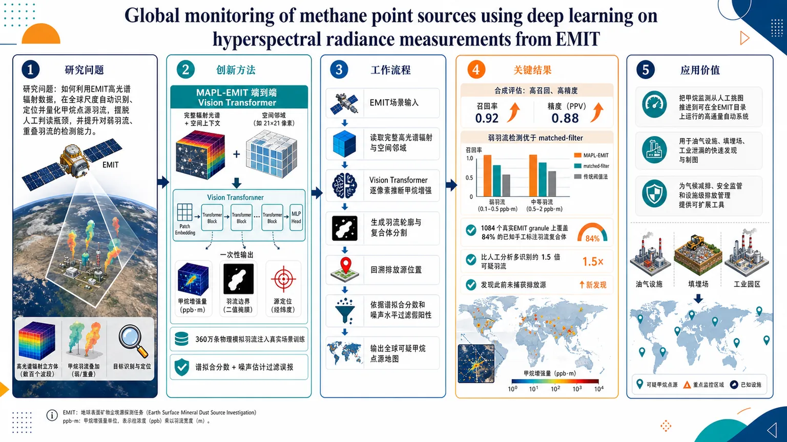
研究问题如何利用EMIT高光谱辐射数据，在全球尺度自动识别、定位并量化甲烷点源羽流，摆脱人工判读瓶颈，并提升对弱羽流、重叠羽流的检测能力。创新方法提出MAPL-EMIT端到端Vision Transformer，直接输入完整辐射光谱与空间上下文，不做单纯阈值或局部匹配；用360万条物理模拟羽流注入真实EMIT场景训练；一次性输出甲烷增强量、羽流边界和源定位，并结合谱拟合分数与噪声估计压低误报。工作流程EMIT场景输入 → 读取完整高光谱辐射与空间邻域 → Vision Transformer逐像素推断甲烷增强 → 生成羽流轮廓与复合体分割 → 回溯排放源位置 → 依据谱拟合分数和噪声水平过滤假阳性 → 输出全球可疑甲烷点源地图。关键结果合成评估中实现高召回和高精度，对弱羽流的捕捉优于传统matched-filter方法；在1084个真实EMIT granule上覆盖84%的已知手工标注羽流复合体；比人工分析多识别约1.5倍的可疑羽流，并能发现此前未捕获的排放源。应用价值把甲烷监测从人工挑图推进到可在全EMIT目录上运行的高通量自动系统，可用于油气设施、填埋场、工业泄漏的快速发现与制图，为气候减排、安全监管和设施级排放管理提供可扩展工具。以下内容仅基于题目、摘要与元数据可核验信息；未提供全文，因此第3部分只能做“摘要级逐点冷凝”，无法替代真正的逐章全文解析。
第一部分：核心概览
这篇论文把甲烷点源监测从“人工判读单条羽流”推进到“基于 EMIT 高光谱辐射数据的端到端全球自动监测”。核心贡献是提出 MAPL-EMIT：一种 vision transformer 框架，直接利用整段光谱与空间上下文，在场景内同时完成 甲烷增强量反演、羽流勾勒与源定位，并能处理重叠羽流。用 360万 个物理模拟合成羽流训练后，在真实基准上覆盖了 84% 的已知手工标注羽流复合体，并比人工分析识别出约 1.5 倍 的可疑羽流，标志着卫星甲烷监测向高吞吐、可扩展、设施尺度的全球化流程迈出关键一步。
---
第二部分：结构化快速回顾
《Global monitoring of methane point sources using deep learning on hyperspectral radiance measurements from EMIT》（None，）
- 背景：甲烷点源是近未来气候强迫、安全风险和系统低效的重要驱动；空间成像光谱是全球识别排放的新工具，但传统流程主要依赖人工判读羽流。
- 方法：构建 MAPL-EMIT，一个端到端 vision transformer，直接输入 EMIT 的完整辐射光谱，把光谱信息与空间上下文联合起来，对整幅场景逐像素检索甲烷增强。
- 结果：在 360万 个物理模拟合成羽流上训练后，模型在合成评估中表现出高 recall/precision，并优于传统 matched-filter 方法对弱羽流的捕捉能力；在真实数据上覆盖 1084 个 EMIT granule 中 84% 的已知手工标注羽流复合体。
- 讨论：模型不仅能检测，还能量化增强、界定羽流边界、定位源头；加入 spectral fit scores 与 estimated noise levels 后，可进一步压低假阳性。
- 局限：摘要未给出完整误差分解、失败案例和消融细节；真实世界性能虽强，但仍有约 16% 已知羽流复合体未被捕捉。
- 结论：该框架把甲烷监测推进到一种可在 全 EMIT 数据目录 上运行的高通量范式，支持设施尺度的全球羽流制图。
---
第三部分：逐章节冷凝解析
1. 摘要
甲烷点源的气候与安全双重重要性
甲烷点源被界定为短期气候强迫、安全隐患和系统低效的关键驱动，说明任务价值不只是环境监测，也包含基础设施与工业泄漏治理。原文直接写道：*"Anthropogenic methane (CH4) point sources are critical drivers of near-term climate forcing, safety hazards, and system-inefficiencies."*
核心术语：anthropogenic methane point sources、near-term climate forcing。
现有全球监测仍过度依赖人工
空间成像光谱已经成为全球识别排放的上升路径，但现有做法主要依赖人工找羽流，这种流程难以扩展到全球目录级监测。原文：*"existing approaches largely rely on manual plume identification."*
这里的瓶颈不是传感器能力，而是判读流程的可扩展性。
MAPL-EMIT 的方法定位是端到端场景级推断
模型名称为 Methane Analysis and Plume Localization with EMIT (MAPL-EMIT)，是一个 end-to-end vision transformer framework，直接利用 Earth Surface Mineral Dust Source Investigation (EMIT) 的完整辐射光谱。原文：*"we present the Methane Analysis and Plume Localization with EMIT (MAPL-EMIT) model, an end-to-end vision transformer framework that leverages the complete radiance spectrum from the Earth Surface Mineral Dust Source Investigation (EMIT) instrument to jointly retrieve methane enhancements across all pixels within a scene."*
关键点有三个：
- complete radiance spectrum，不是少数波段；
- jointly retrieve，不是单点独立分类；
- across all pixels within a scene，是场景级整体推断。
光谱信息与空间上下文联合带来更低检测限
方法强调把 spectral information 与 spatial context 结合，目标是降低检测下限。原文：*"This approach brings together spectral information with spatial context to significantly lower detection limits."*
这意味着模型利用的不只是“某个像素在某个波长是否异常”，还包括羽流的几何连续性与空间结构。
同时支持增强量化、羽流勾勒和源定位
模型能力不是单一检测，而是三位一体：enhancement quantification、plume delineation、source localization。原文：*"MAPL-EMIT simultaneously supports enhancement quantification, plume delineation, and source localization, even for overlapping plumes."*
“even for overlapping plumes”非常关键，说明方法面对多个源叠加时仍保持可用。
合成训练数据规模极大且具物理约束
训练集来自 3.6 million physics-based synthetic plumes injected into global EMIT radiance data。原文：*"The model was trained on 3.6 million physics-based synthetic plumes injected into global EMIT radiance data."*
这类设计的意义在于：
- 用物理模型生成带标签数据，缓解真实标注稀缺；
- 将羽流注入真实全球辐射背景，缩小合成—真实分布差异；
- 数据量达到 360 万，足以支撑深度模型学习复杂谱—空模式。
合成评估显示高召回与高精度，并优于匹配滤波的弱羽流检测
原文：*"Synthetic evaluation confirms the model's ability to identify plumes with high recall and precision and to capture weaker plumes relative to existing matched-filter approaches."*
这里的比较对象是传统 matched-filter approaches。结论是：
- 合成场景中具备高 recall 与 precision；
- 对弱羽流的灵敏度更高；
- 说明端到端学习可能突破经典谱匹配方法的检测下限。
真实基准上覆盖率达到 84%
原文：*"On real-world benchmarks, MAPL-EMIT captures 84% of known hand-annotated NASA-L2B plume complexes across a test set of 1084 EMIT granules."*
这条信息非常硬：
- 测试集规模：1084 EMIT granules；
- 目标对象：known hand-annotated NASA-L2B plume complexes；
- 覆盖率：84%。
这说明模型不仅在合成数据上有效，在真实标注集合上也能稳定命中大部分已知羽流复合体。
比人类分析者多找到约 1.5 倍的可疑羽流
原文：*"while capturing roughly 1.5 times as many plausible plumes compared to human analysts."*
这一结果揭示模型的优势不是单纯模仿人工，而是能挖掘人工流程中遗漏的候选源。
外部验证覆盖航空、填埋场和受控释放实验
原文：*"Further verification against coincident airborne data, top-emitting landfills, and controlled release experiments confirms the model's ability to identify previously uncaptured sources."*
验证链条横跨三类证据：
- coincident airborne data：与机载同步观测对照；
- top-emitting landfills：高排放填埋场；
- controlled release experiments：受控释放实验。
这类多源验证显著提高可信度，也说明模型能发现先前未被捕获的源。
模型生成的谱拟合与噪声指标可用于抑制假阳性
原文：*"By incorporating model-generated metrics such as spectral fit scores and estimated noise levels, the framework can limit false-positives."*
这意味着模型并非黑箱式输出一个检测结果，而是额外生成可解释的质量指标，用于过滤误报。
最终目标是全 EMIT 目录的高通量全球羽流制图
原文：*"Overall, MAPL-EMIT enables high-throughput implementation on the full EMIT data catalog, shifting methane monitoring to a rapid, scalable paradigm for global plume mapping at the facility scale."*
这句直接点明学术地位：从“局部案例研究”升级为“facility scale 的全球快速监测范式”。
---
第四部分：深度理解与语言支持
1. 术语解析
Point source
指离散、局地、可定位的排放源，如油气设施、填埋场、工厂、管线泄漏点。与“区域背景排放”相对，后者更弥散、更难定位。这里的重点是“可被源定位”的单点或少数点。
Hyperspectral radiance
Radiance 是传感器直接测到的辐射信号，不是地表反射率；hyperspectral 表示波段极多、光谱连续性强。这个组合意味着模型面对的是原始观测物理量，信息丰富但噪声也更复杂。
Matched-filter
一种经典的光谱检测方法，本质是用目标谱形去“匹配”观测数据，检测某种特征是否存在。优点是可解释、成熟；缺点是对复杂背景、重叠羽流和弱信号的表达能力有限。这里作为基线方法出现，说明深度模型已经进入替代传统谱检测的阶段。
Plume complex
不是单一羽流，而是多个羽流、多个排放点或复杂扩散结构形成的复合区域。处理 plume complexes 的难点在于：边界不清、源头不唯一、不同羽流可能相互遮蔽。
Granule
卫星成像中的单个数据块或场景切片。1084 EMIT granules 表示评估不是在少数精选案例上，而是在相当规模的场景集合上进行。
2. 疑难查证
为什么“完整辐射光谱 + 空间上下文”比单像素判别更强
甲烷吸收带不是孤立地出现在一个波长上，而是跨多个波段呈现微弱但一致的谱形变化。若只看单像素、单波段，容易被地表材料、照明条件、传感器噪声干扰。把整个光谱和邻域空间结构一起输入模型，相当于同时利用“化学指纹”和“羽流几何形态”两种证据，因此能降低检测下限。
为什么合成羽流训练在这里特别关键
真实甲烷羽流的高质量标注极稀缺，且分布极不均衡。用 physics-based synthetic plumes 注入真实全球辐射背景，可以同时解决两个问题：
- 获取海量标签；
- 让训练数据保留真实背景复杂性。
这类策略对遥感深度学习非常关键，因为纯实验室合成往往难以覆盖地表混杂噪声。
“84% 捕获率”不等于任务完成
84% 说明覆盖了大部分已知复合体，但也意味着约 16% 未被捕获。未捕获部分可能来自极弱信号、复杂背景、过度重叠、云/气溶胶干扰或标注边界问题。高年级博士生视角下，这个数字的真正意义不是“已经足够好”，而是“已经达到可规模化部署的门槛，但仍存在系统性盲区”。
---
第五部分：创新评估与关联
1. 创新性判断
相较过去 2–5 年的相关甲烷遥感工作，这篇的创新集中在四个层面：
一，检测范式从“人工/半自动判读”转向“端到端场景级学习”
传统流程依赖人工找羽流，再做定量分析；这里直接把整幅 EMIT 场景送入模型，完成从检出到定位的统一推断。
二，从“局部谱检测”升级到“光谱—空间联合建模”
过去很多方法偏向 matched filter、阈值法或局部异常检测，对复杂背景和重叠羽流不够稳健。这里利用 vision transformer 融合完整辐射光谱与空间上下文，属于表达能力更强的范式切换。
三，训练策略的规模与物理一致性明显增强
3.6 million 物理合成羽流的规模很大，而且是“注入全球 EMIT 辐射数据”而非孤立合成，这使模型更接近真实卫星分布，是解决标注稀缺与域偏移的核心创新。
四，任务定义从“是否有羽流”扩展到“量化—分割—定位—验证”一体化
同时输出 enhancement quantification、plume delineation、source localization，并结合 spectral fit scores 与 estimated noise levels 控制假阳性，说明系统已不只是检测器，而是接近可部署的监测平台。
2. 解决了前人没解决的问题
- 大范围自动化：把全球 EMIT 目录的高通量处理变成现实，而不是只做样本展示。
- 弱羽流识别：相较经典谱匹配方法，对低信噪比羽流更敏感。
- 重叠羽流处理：这是很多传统方法最难处理的情形之一。
- 真实部署可用性：通过多源验证和质量指标抑制误报，增强运营场景适配性。
一句话概括：这项工作把甲烷点源遥感从“专家手工找图”推进到“可在卫星全库上自动运行的基础设施级系统”。
如果需要，可以继续把这篇论文整理成：
- 图表级解读，
- 方法流程图文字版，
- 与前沿工作逐篇对比表。
-
09
📊 含图深析
📄 摘要：地热能是全球向可持续电力转型的基石；然而，在构造复杂地区，稀疏的热流数据常常阻碍其勘探。我们提出一种新颖的基准评估框架，用于比较两种本质上不同的陆地热流预测范式：数据驱动的随机森林回归（RFR）模型和基于物理的速度—温度（V-T）转换。应用于构造多样的阿拉伯—努比亚地盾（ANS），我们整合了十六种多参数地质和地球物理观测量来训练RFR模型，同时从56–200 km深度的S波层析成像中推导深部热结构。我们的结果量化了显著的横向和垂向热非均质性，识别出极端地幔温度（>1600 K）以及阿拉伯地台岩石圈减薄（200 km）。虽然两种方法在一致的一级热格局上收敛（r = 0.86），但与4,240个测量值的验证表明，RFR模型实现了更高的预测精度（R² = 0.92），优于V-T方法（R² = 0.79）。这种差异凸显了它们的互补性质：RFR通过多数据集成有效捕捉局部非线性地壳异常，而V-T方法擅长表征大尺度岩石圈过程，并在缺乏地表数据处提供物理约束。特征重要性分析确定莫霍面和岩石圈—软流圈边界（LAB）深度是该区域热结构的主要驱动因素。本研究表明，这种双方法学途径为全球复杂构造背景下的地热资源评估提供了稳健且可扩展的框架。
📖 英文原文
Geothermal energy is a cornerstone of the global transition to sustainable power; however, its exploration is frequently hindered by sparse heat flow data in tectonically complex regions. We present a novel benchmarking framework that compares two fundamentally distinct paradigms for terrestrial heat flow prediction: a data-driven Random Forest Regression (RFR) model and a physics-based Velocity-Temperature (V-T) conversion. Applied to the tectonically diverse Arabian-Nubian Shield (ANS), we integrated sixteen multi-parametric geological and geophysical observables to train the RFR model, while simultaneously deriving deep thermal structures from S-wave tomography at depths of 56–200 km. Our results quantify significant lateral and vertical thermal heterogeneities, identifying extreme mantle temperatures (>1600 K) and lithospheric thinning (200 km) of the Arabian Platform. While both methods converge on consistent first-order thermal patterns (r = 0.86), validation against 4,240 measurements reveals that the RFR model achieves higher predictive precision (R² = 0.92) compared to the V-T approach (R² = 0.79). This discrepancy highlights their complementary nature: RFR effectively captures localized, non-linear crustal anomalies through multi-data integration, whereas the V-T method excels at characterizing large-scale lithospheric processes and providing physical constraints where surface data are absent. Feature importance analysis identifies Moho and LAB depths as the primary drivers of the region’s thermal architecture. This study demonstrates that this dual-methodology approach offers a robust, scalable framework for geothermal resource assessment in complex tectonic settings worldwide.
💡 亮点：本文提出一种基准评估框架，对比数据驱动随机森林回归模型与基于物理的速度—温度转换方法在陆地热流预测中的表现，并应用于构造复杂的阿拉伯—努比亚地盾。研究整合16种地质和地球物理观测量训练RFR模型，同时利用56–200 km深度的S波层析成像推导深部热结构。结果表明，两类方法在一级热格局上具有一致性，但RFR在观测验证中预测精度更高，而V-T方法更适于约束大尺度岩石圈过程，二者结合可为复杂构造区地热资源评估提供稳健框架。
🔬 与我们研究方向的关系
📐 方法要点：方法上，摘要目前只能确认：论文题目和摘要中可确认的方法。需要回到原文核对数据来源、标签定义、模型架构、物理约束和验证集，不能把题名直接等同于可迁移算法。若要接入团队的 ML 势或 Hamiltonian 流程，应先确认它是否同时学习能量、力、应力、自旋、极化或电子结构，以及是否报告跨材料/跨温度外推。还需核对原文的训练数据规模、损失函数、边界条件和误差分解，才能判断其是否适合团队的材料模拟任务。
🔗 相关工作关联：与团队方向的可能连接在于：声子、有限温度和输运性质。团队已有机器学习势、第一性原理、有效 Hamiltonian、缺陷计算、电子—声子耦合和有限温度动力学基础，但该文是否提供可复用数据或物理量仍需查证。若研究对象属于机器人、量子信息或电网等非材料场景，关联主要是物理约束学习、少样本建模或不确定性评估，而不是直接迁移材料机制。这种联系应通过同一材料体系上的独立基准和跨分布测试确认，不能仅凭方法名称或期刊来源下结论。
💡 对你方向的启示：对《基准评估机器学习与地震推导热流模型以解析阿拉伯—努比亚地盾的岩石圈热结构》的启示是先做可证伪的对接：从一个已有材料体系和小规模 DFT 基准开始，明确输入、目标、基线和外推测试，再决定是否接入铁电/磁性、缺陷或载流子动力学工作。具体可先把该文的表示或损失函数在 HfO₂、二维滑移铁电、CrI₃/CrSBr、SiC/GaN 缺陷或卤化物钙钛矿上做小规模复现；若没有直接交叉，应保留为方法参考而非强行迁移。第一步可以选取团队已有的 HfO₂、二维磁体、半导体缺陷或钙钛矿数据做小样本试验，再决定是否扩大到生产级计算。
📖 展开分析 + 配图
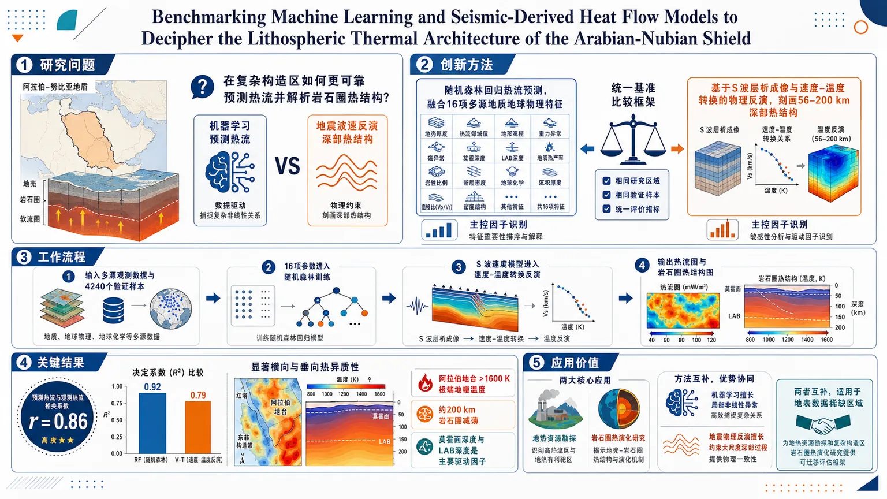
研究问题在阿拉伯-努比亚盾这一复杂构造区，如何更可靠地预测热流并解析岩石圈热结构？机器学习与地震波速反演两类范式谁更能揭示局部异常与深部热过程？创新方法建立一个统一的“基准比较框架”，把随机森林回归热流预测与基于S波层析成像、速度-温度转换的物理反演放在同一尺度上对比；前者融合16项多源地质地球物理特征，后者直接刻画56–200 km深部热结构，再用特征重要性识别主控因子。工作流程输入多源观测数据与4240个验证样本：16项地质/地球物理参数进入随机森林训练，S波速度模型进入速度-温度转换反演深部温度场；随后分别生成热流与岩石圈热结构图；最后进行相关性、精度和特征重要性分析，比较两种方法并提取关键热控因素。关键结果两种方法在整体热格局上高度一致，相关系数r=0.86；随机森林精度更高，R²=0.92，高于V-T方法的0.79；揭示显著的横向与垂向热异质性，识别阿拉伯地台存在>1600 K极端地幔温度和约200 km岩石圈减薄；莫霍面深度与LAB深度是主要驱动因子。应用价值为地热资源勘探和复杂构造区岩石圈热演化研究提供可迁移的评估框架；机器学习适合捕捉局部非线性异常，地震物理反演适合约束大尺度深部过程，两者互补，尤其适用于地表数据稀缺区域。核心概览
本文面向阿拉伯-努比亚盾（ANS）的地热与岩石圈热结构研究，提出并对比两种热流预测框架：机器学习随机森林回归与基于地震波速的温度转换，用于评估复杂构造区的地热资源与热结构。
方法要点
- 构建了一个基准比较框架，对比数据驱动与物理约束两类热流预测范式。
- 采用随机森林回归（RFR），整合16项多参数地质与地球物理观测进行训练。
- 采用S波层析成像并基于速度-温度（V-T）转换反演56–200 km深部热结构。
- 使用4,240个观测值进行验证，并比较两种方法的预测性能。
- 通过特征重要性分析识别控制区域热结构的关键因子。
关键结果
- 两种方法在一阶热格局上总体一致，相关性较高（r = 0.86）。
- RFR的预测精度高于V-T方法：R² = 0.92 vs 0.79。
- 结果揭示了显著的横向和垂向热异质性。
- 识别出阿拉伯地台存在>1600 K的极端地幔温度与约200 km的岩石圈减薄。
- 特征重要性显示，莫霍面深度和LAB深度是区域热结构的主要驱动因素。
- 作者指出：RFR更擅长捕捉局部、非线性地壳异常；V-T更适合刻画大尺度岩石圈过程，并在缺少地表数据时提供物理约束。
创新性判断
- 可能的新颖点在于：将机器学习热流预测与基于地震波速的物理反演放在同一基准框架中系统比较，而非只报告单一模型结果。
- 该工作还把多源观测融合、深部热结构反演、性能验证联成一个可迁移的评估流程，适合复杂构造区地热勘探。
- 不确定性：摘要未详述具体模型调参、特征构造及V-T转换细节，因此创新性主要可确定在“比较框架”和“多方法互补评估”上。
-
10
📊 含图深析
📄 摘要：物理信息神经网络（PINNs）已成为求解偏微分方程（PDEs）的强大范式，但其性能在很大程度上依赖于对神经表示、损失形式和优化动态进行手工、试错式工程设计。虽然大语言模型（LLMs）为自动化设计提供了有前景的途径，但在严格的科学计算约束下，不受约束的代码生成往往会产生数学上无效或数值上不稳定的解。为弥合这一差距，我们提出 EvoPINN，这是一个智能体框架，它将 PINN 开发从劳动密集型的人工设计重新表述为一个严格的、以执行为基础的算法发现问题。EvoPINN 通过将神经表示与训练程序解耦，在模块化搜索空间中进行导航，并利用一个 LLM 智能体迭代地提出带有记忆条件的程序化修改。为确保科学有效性，所有候选方案都要经过严格的结构验证和预算匹配的 PDE 评估。在振荡型、椭圆型、耗散型和非线性输运等多样 PDE 机制上的大量实验表明，与基线相比，EvoPINN 能发现针对 PDE 特化的学习算法，显著降低相对 L₂ 误差。关键的是，EvoPINN 自主发明了 SLRC-PINN，这是一种新颖架构，其性能提升在严格的参数匹配比较下仍然保持，从而确立了以执行为基础的智能体发现真正新的科学计算机制的可行性。
📖 英文原文
arXiv:2607.26490v1 Announce Type: cross Abstract: Physics-informed neural networks (PINNs) have emerged as a powerful paradigm for solving partial differential equations (PDEs), yet their performance heavily relies on the manual, trial-and-error engineering of neural representations, loss formulations, and optimization dynamics. While Large Language Models (LLMs) offer a promising avenue for automated design, unconstrained code generation often yields mathematically invalid or numerically unstable solutions under strict scientific computing constraints. To bridge this gap, we propose EvoPINN, an agentic framework that reformulates PINN development from labor-intensive manual design into a rigorous, execution-grounded algorithm discovery problem. EvoPINN navigates a modular search space by decoupling neural representations from training programs, utilizing an LLM agent to iteratively propose memory-conditioned programmatic modifications. To ensure scientific validity, all candidates undergo strict structural verification and budget-matched PDE evaluation. Extensive experiments across diverse PDE regimes (oscillatory, elliptic, dissipative, and nonlinear transport) demonstrate that EvoPINN discovers PDE-specialized learning algorithms that significantly reduce relative L₂ error compared to baselines. Crucially, EvoPINN autonomously invented SLRC-PINN, a novel architecture whose performance gains persist under rigorous parameter-matched comparisons, establishing the viability of execution-grounded agents for discovering genuinely new scientific computing mechanisms.
💡 亮点：EvoPINN 将 PINN 的开发从人工试错设计转化为基于执行验证的算法发现问题。该框架由大语言模型智能体在模块化搜索空间中提出程序化修改，并通过结构验证和预算匹配的 PDE 评估确保科学有效性。实验显示，它可为不同 PDE 发现专门学习算法，显著降低相对 L₂ 误差，并自主提出了新的 SLRC-PINN 架构。
🔬 与我们研究方向的关系
📐 方法要点：方法上，这篇工作可归入非绝热分子动力学、电子—声子耦合、Wannier/GW-BSE 和载流子输运。从摘要能确认的线索包括：论文题目和摘要中可确认的方法，以及声子、有限温度和输运性质对应的结构或物理量。若迁移到团队流程，应采用“先用高精度电子结构和声子/电子—声子矩阵元建立小规模基准，再训练可迁移 Hamiltonian 或 ML 势，最后在长时间尺度非绝热 MD、输运或界面电荷转移中验证”的分层验证，而不是只比较单点能量或单一回归误差。还需核对原文的训练数据规模、损失函数、边界条件和误差分解，才能判断其是否适合团队的材料模拟任务。
🔗 相关工作关联：它与五位研究人员已有工作的直接连接是：非绝热分子动力学、电子—声子耦合、Wannier/GW-BSE 和载流子输运已经出现在团队的方向画像中，可对应到卤化物钙钛矿、二维半导体、FeSe、光电界面和能源材料。与传统只做 0 K formation energy/静态势垒的工作相比，这里更应关注声子、有限温度和输运性质在温度、缺陷、应变或外场下的变化；摘要没有给出的模型细节不作延伸判断。这种联系应通过同一材料体系上的独立基准和跨分布测试确认，不能仅凭方法名称或期刊来源下结论。
💡 对你方向的启示：对当前研究最具体的启示不是泛泛地“使用 ML”，而是把该文的非绝热分子动力学、电子—声子耦合、Wannier/GW-BSE 和载流子输运嵌入现有材料模拟链：先在卤化物钙钛矿、二维半导体、FeSe、光电界面和能源材料中选择一个已有 DFT 数据基础的体系，按“先用高精度电子结构和声子/电子—声子矩阵元建立小规模基准，再训练可迁移 Hamiltonian 或 ML 势，最后在长时间尺度非绝热 MD、输运或界面电荷转移中验证”补充训练/验证集，再比较《EvoPINN：用于物理信息神经网络的可执行算法智能体发现》对应模型对相稳定、极化/磁序、缺陷或动力学指标的改进。若结果只在训练分布内有效，应通过跨温度、跨应变、跨缺陷浓度和跨超胞测试检查可迁移性。第一步可以选取团队已有的 HfO₂、二维磁体、半导体缺陷或钙钛矿数据做小样本试验，再决定是否扩大到生产级计算。
📖 展开分析 + 配图
研究问题PINN 的性能长期依赖人工试错，尤其在表示结构、训练策略、采样与优化上缺乏统一自动化方案；论文要解决的是：能否在严格执行约束下，让智能体不仅调参，而是直接发现可执行、可迁移的 PINN 新算法机制？创新方法把 PINN 形式化为 A=(M,T)，将神经表示 M 与训练程序 T 作为联合搜索对象；用 LLM agent 在模块级进化、诊断引导生成、结构验证、可执行测试和预算匹配评估下迭代发现新机制。核心亮点是从“选择现成组件”升级为“发明可运行算法”，并成功发现 SLRC-PINN 这种全局主干 + 局部残差校正的新拓扑。工作流程输入 PDE 基准与 seed PINN；每代先用 UCB 风格调度决定改 M 还是改 T；LLM 结合历史成功/失败记忆、诊断摘要和搜索焦点生成候选程序；再经过 AST 结构去重、可执行性测试与统一训练预算评估；保留最优候选进入下一代；最终冻结算法，并在独立随机种子上重新训练验证。关键结果在 Poisson2D、Burgers1D、Wave1D、Heat2D 四类 PDE 上，EvoPINN 整体优于 seed PINN，且在三项任务上达到最优或接近最优；Burgers1D 上发现的 SLRC-PINN 在参数匹配对照下仍优于 Global MLP、APINN、FBPINN、HyResPINNs，说明提升来自新机制而非容量堆叠；去掉诊断信息或模块化进化后性能明显下降，证明方法设计有效。应用价值该研究把 PINN 设计从手工调参与固定模板搜索推进到“可执行算法发现”，可减少试错成本，自动生成更适合不同 PDE 物理机制的求解器；同时具备一定零样本参数迁移能力，对邻近物理参数仍保持优势，适合扩展到更广泛的科学计算与偏微分方程求解场景。第一部分：核心概览
EvoPINN把 PINN 从“调超参数”推进到“发现可执行算法”的层级：把神经表示 M 与训练程序 T 视为联合搜索对象，用 LLM agent 在严格的结构校验、可执行测试与预算匹配评估下进行进化式发现。四类 PDE 基准上，冻结后的新算法在多数任务上优于 seed 与专家设计方法，并自主发现 SLRC-PINN 这类全局—局部协同拓扑，说明执行约束下的 agent 不仅能组合已知组件，还能生成新的科学计算机制。
---
第二部分：结构化快速回顾
EvoPINN: Agentic Discovery of Executable Algorithms for Physics-Informed Neural Networks（None，）
背景：PINN 性能强依赖人工设计；现有自动化方法多停留在超参数搜索、模板化结构选择，无法真正发现新的学习机制。
方法：将 PINN 表示与训练程序解耦为 A=(M,T)，采用 LLM 驱动的模块级进化、诊断引导生成、结构验证与预算匹配评估。
结果：四类 PDE 上整体优于 seed PINN，多个任务优于强专家基线；Burgers1D 上发现 SLRC-PINN，参数匹配对比仍保持优势。
讨论：性能提升来自可执行、受约束的算法发现，而非单纯参数调优；诊断信息、模块化进化与验证机制是关键。
局限：搜索规模有限，主要在 4 个 PDE 与 56 次候选评估内验证；更广 PDE 类别与更大规模搜索尚未展开。
结论：执行约束的 agent 可把 PINN 设计从手工工程推进到新机制发现，并具备一定零样本参数迁移能力。
---
第三部分：逐章节冷凝解析
1 Introduction
PINN 的核心痛点是结构与训练都依赖手工试错
PINN 通过物理约束求解 PDE，但性能高度依赖 coordinate representations, network architectures, loss formulations, collocation sampling, and optimization algorithms。不同 PDE regime 对机制偏好不同：振荡解偏好频率感知表示，非线性输运需要稳定优化与陡峭梯度区域的高分辨率。原文直接指出：*“Different PDE regimes often favor different mechanisms”*，以及 *“adapting PINNs to these distinct physical behaviors requires structural and programmatic interventions”*。
现有自动化方法仍停留在受限搜索空间
早期自动 PINN 方法主要在预定义空间内做结构或超参优化，如 *“optimizing discrete structural or numerical choices within predefined, highly restricted search spaces”*。LLM 系统（PINNsAgent、Lang-PINN）虽能自动构建流程，但仍 *“fundamentally constrained by human-specified templates and bounded design spaces”*，更擅长在已知选项中选最优，而非修改 representation 与 training logic 本身。
核心目标是“可执行的算法发现”
提出的目标不是生成代码片段，而是发现完整 PINN 学习算法：*“discovering genuinely new, executable learning mechanisms”*。为此采用模块解耦与进化控制，把搜索从模板组合推进到 open-ended algorithmic discovery。
验证机制是科学有效性的前提
开放式 LLM 生成会带来 *“mathematically invalid, structurally redundant, or numerically unstable code”*。因此需要结构验证、执行测试和预算公平评估，避免把计算资源优势误当成算法优势。
---
2 Related Work
2.1 Manual Mechanism Design in PINNs
PINN 改进长期依赖人工机制拼装
已有工作分为两类：representation-oriented 与 training-oriented。前者包括自适应激活函数、频率编码、空间嵌入、域分解；后者包括自适应采样、残差目标修改、动态 loss balancing、多阶段优化。原文概括为 *“A large body of work improves PINNs through manually designed representation topologies and training algorithms.”*
没有单一手工方案能跨 PDE regime 通吃
综合基准表明 *“no single manually designed PINN variant uniformly dominates across diverse physical regimes”*。这直接支撑了从手工设计转向自动发现的必要性。
2.2 Automated and Agentic PINN Design
自动化 PINN 设计仍多是配置选择
Auto-PINN 搜索深度、宽度、优化器；NAS-PINN 搜索 connectivity；DPSTE 搜索结构与树型激活；PINNsAgent 和 Lang-PINN 用 agent 自动化工作流。共同问题是仍局限于 *“selecting configurations, tuning hyperparameters, or composing workflows within pre-engineered templates.”*
EvoPINN 把搜索对象提升为完整算法
区别在于 *“open-ended discovery of novel PINN learning mechanisms”*，即搜索对象不是某个局部组件，而是完整 learning algorithm。
2.3 LLM-Guided Solver and Algorithm Discovery
相关 LLM 搜索多聚焦单一模块
CodePDE、PDE-SHARP 更偏向通用 PDE solver；其他工作多进化启发式、reward 或 update function，且通常限制在固定 scaffold 内。原文指出：*“These methods typically evolve a bounded component…within a fixed algorithmic scaffold.”*
EvoPINN 的边界突破在于搜索对象升级
其突破点是 *“elevating the search object to the complete PINN learning algorithm”*，把表示、训练、路由、采样、优化统合进同一 discovery 过程。
---
3 Preliminaries of PINNs
PINN 的数学形式
PDE 记为 (mathcal P)，满足 (mathcal F[u]=0)，边界与初值约束分别为 (mathcal B[u]=0)、(mathcal I[u]=0)。网络 (u_θ) 通过复合损失训练：
(mathcal LPINN(θ)=łambdaᵣmathcal Lᵣ₊łambda_bmathcal L_b+łambdaᵢmathcal Lᵢ)。
这里 residual loss、boundary loss、initial loss 被显式加权。
算法发现的靶点是两个静态组件
原文强调：*“the architectural form of (u_θ) and the procedure used to optimize this objective”* 是固定的静态部分，而 EvoPINN 要自动发现的正是 neural representation 与 optimization dynamics。这为后续把 PINN 定义为算法元组 A=(M,T) 提供基础。
---
4 Method
4.1 Overview
PINN 被形式化为算法元组
定义 (A=(M,T)inmathcal A=mathcal M×mathcal T)，其中 M 表示神经表示，T 表示训练程序。原文写明：*“A PINN algorithm as a tuple: (A=(M,T))”*。这一步把“网络结构 + 训练策略”统一为一个可搜索对象。
评价依据是搜索时的相对 L2 误差
执行算法得到参数 (θ_A(mathcal P,B,ξ))，用搜索参考集上的相对 (L₂) 误差 (Sₛₑₐᵣcₕ(A)) 评估。这样保证搜索过程有统一、可比较的数值目标。
整体流程是 LLM-guided evolutionary loop
从 seed PINN 出发，进行 G generations 的迭代，每代生成 K 个候选。原文指出 EvoPINN 使用 *“a straightforward evolutionary loop”*，刻意避免复杂 meta-heuristics，以证明 agentic discovery 本身的可行性。
三大挑战定义了方法设计
- Credit assignment in joint spaces：同时改 M 和 T 难以归因。
- Sparse reward guidance：单个相对 L2 误差对生成太稀疏。
- Algorithmic validity and evaluation fairness：LLM 易产出无效或不公平代码。
4.2 Module-Wise Evolution and Adaptive Scheduling
一代只改一个模块，避免归因混淆
每代只修改 M 或 T 之一，另一部分保持不变。公式 (5) 说明候选算法要么是 ((widetilde M_g⁽ⁱ⁾,T_g))，要么是 ((M_g,widetilde T_g⁽ⁱ⁾))。
模块选择用 UCB 风格调度
采用：
[
c_g=argmaxcᵢₙM,T łeft[bar r_g(c)+βsqrtfracłog(N_g+1)Ng,ci̊ght]
]
其中第一项偏向近期回报高的模块，第二项鼓励探索少试过的模块。原文表述为 *“balance exploitation and exploration”*。
设计动机是让复杂机制渐进涌现
已接受的改动会改变另一个模块的优化地形，从而逐步形成协同的 PINN 算法；这不是一次性拼装，而是迭代式共设计。
4.3 Diagnosis-Guided Program Generation
单个标量误差不足以指导 LLM
相对 L2 误差对代码生成 *“provides sparse, non-actionable guidance”*。因此把训练轨迹压缩成 diagnostic summary (D_g)，包含收敛进度、后期稳定性、物理损失与解误差关系。
演化记忆避免重复试错
LLM 接收历史成功模式、失败模式与最近修改记录，形成 evolutionary memory。作用是阻止模式坍缩、重复生成已知差方案。
多样化搜索焦点提升批量探索覆盖
每个 LLM 调用附加不同 search focus，如 feature construction、architecture organization、coordinate transformation、optimization dynamics、loss coordination、collocation sampling。原文称其为 *“high-level exploratory priors”*，既保证多样性，又不固定实现细节。
4.4 Program Verification and Algorithm Update
结构验证排除伪创新
候选需在标准 AST 和 normalized AST 下都不同于父代，过滤掉注释、格式、变量改名、常数替换等 cosmetic edits。原文明确：*“This deliberately excludes pure hyperparameter mutations because EvoPINN targets mechanism discovery rather than parameter tuning.”*
可执行测试确保数值与接口有效
通过小型 PINN 实例检查接口兼容、数值稳定性与自动可微性；失败候选可根据执行反馈修复，直到达到上限。
预算匹配保证公平比较
所有候选都在共享 training budget (B_g) 与随机种子 (ξ_g) 下评估，限制优化步数、初始 collocation 数与自适应采样控制。原文指出：*“they cannot arbitrarily increase the computational footprint”*。
---
5 Experiments
5.1 Experimental Setup
四类 PDE 覆盖不同物理难点
- Poisson2D：elliptic，使用 COMSOL reference data。
- Burgers1D：nonlinear transport，使用 numerical reference。
- Wave1D：oscillatory，使用 analytic reference。
- Heat2D：dissipative，使用 analytic reference。
搜索与重训协议严格分离
seed 算法是 5-layer tanh feed-forward network, width 100, 先 Adam 后 L-BFGS。每次搜索 7 generations × 8 proposals = 56 次候选评估。搜索只用 search reference set，最终算法冻结后在 5 independent evaluation seeds 上从头重训。
基线数量大且类型多样
对比 16 expert-designed PINN variants，包括 Fourier、SIREN、residual-adaptive sampling、curriculum learning、weighted objectives、geometry-aware models、NTK balancing。最终每个 PDE 选出最优专家机制再做同协议重训。
实现细节与算力开销明确
候选生成模型是 gpt-5.4-mini, temperature 0.7。统一名义预算上限 20,000 optimization steps，初始 collocation count 用 Hammersley sequence。运行环境为 DeepXDE 1.15.0 + PyTorch 2.6.0，在 RTX 3090 24GB 上完成，总代价 14.70–51.78 GPU-hours。
5.2 Performance across PDE Benchmarks
冻结后算法在四个基准上整体优于 seed
Table 1 给出 5 次独立运行的均值±标准差：
- Poisson2D：seed 6.9938e-1 ± 1.69e-2，expert 4.7025e-3 ± 8.23e-4，EvoPINN 4.1413e-3 ± 9.77e-4。
- Burgers1D：seed 3.0500e-4 ± 1.16e-4，expert 2.5420e-4 ± 1.24e-4，EvoPINN 1.6536e-4 ± 5.18e-5。
- Wave1D：seed 3.4590e-1 ± 1.04e-2，expert 1.5989e-2 ± 2.44e-3，EvoPINN 1.3894e-2 ± 3.04e-3。
- Heat2D：seed 4.4574e-3 ± 1.19e-3，expert 1.0963e-3 ± 1.86e-4，EvoPINN 1.1142e-3 ± 3.94e-4。
多数任务优于专家基线
EvoPINN 在 Poisson2D、Burgers1D、Wave1D 上取得最低均值；Heat2D 上略逊于专家，但仍接近。原文直接表述为 *“the lowest mean error on Poisson2D, Burgers1D, and Wave1D”*。
5.3 Comparison with Automated Search Frameworks
统一预算下超过三类自动搜索
比较对象包括：
(i) LLM Best-of-56；
(ii) DPSTE；
(iii) PINNsAgent。
每种方法最多 56 次候选评估，最终算法冻结重训。
EvoPINN 在 Burgers1D 与 Wave1D 均最优
Table 2：
- Burgers1D：Best-of-56 2.0571e-4 ± 1.10e-5，DPSTE 1.6684e-2 ± 3.31e-3，PINNsAgent 6.1201e-4 ± 8.19e-5，EvoPINN 1.6536e-4 ± 5.18e-5。
- Wave1D：Best-of-56 2.3181e-1 ± 1.85e-2，DPSTE 1.3201e-1 ± 4.86e-2，PINNsAgent 2.8160e-2 ± 3.96e-3，EvoPINN 1.3894e-2 ± 3.04e-3。
agentic reasoning 不等于机制发现
PINNsAgent 已明显强于传统搜索，但仍限于 *“predefined configuration templates”*。EvoPINN 的优势来自 execution-grounded diagnostic feedback 与 decoupled module-wise mutation，搜索对象更大。
5.4 Discovery of SLRC-PINN
SLRC-PINN 是重复发现的全局—局部残差校正拓扑
在 Burgers1D 上多次演化出类似结构：一个连续的全局主干 + 一个零初始化的局部校正分支。定义为 Self-Localizing Residual-Correction PINN。原文强调它不是传统域分解，而是 *“dynamic execution topology”*。
局部基函数由 6 个可学习中心与输入自适应宽度构成
设 (q=(x,t))，则有 K=6 个局部基函数 (bₖ₍q))，其中心 (cₖ)、宽度 (σₖ₍q))、投影 (aₖ,mₖ,sₖ) 均可学习。公式 (7) 中包含 exp、softplus、sigmoid 的组合，构成可微局部响应。
输出由全局背景和门控局部修正相加而成
[
u(q)=u_G(q)+α(q)u_L(q)
]
其中 (α(q)) 由 basis bank 与门控层生成。核心不在“再加一支路”，而在 *“allowing the model to autonomously govern where, when, and how localized corrections emerge”*。
三条拓扑原则决定优势来源
- Persistent global anchoring：全局分支始终存在，不做竞争路由。
- Self-organized corrective support：门控场 (α(q)in(0,1)) 自组织地定位未解决结构，且是 (Cⁱⁿfty)-differentiable。
- Function-preserving progressive expansion：局部支路零初始化，初始时 (u_L(q)equiv 0)，避免冷启动扰动。
参数匹配对比证明不是容量堆出来的
Table 3：
- SLRC-PINN：mean 2.0445e-4, std 6.8721e-5, median 1.9064e-4, params 213,286。
- Global MLP (width 230)：mean 4.5506e-4, params 213,441。
- APINN (5 subnetworks)：mean 2.7056e-4, params 204,810。
- FBPINN (4 spatial subdomains)：mean 3.3811e-4, params 215,284。
- HyResPINNs：mean 2.0787e-3, params 217,295。
SLRC-PINN 相比参数匹配 MLP 的均值误差下降 55.1%。
机制发现不止局限于结构
Poisson2D 上还出现 Telemetry-Conditioned Resampling and Optimizer Policy，说明 EvoPINN 也能发明训练策略而非仅新架构。
5.5 Ablation Study
诊断信息是 Wave1D 成败关键
Table 4 显示：
- Burgers1D Full 7.1507e-5；w/o diagnosis 8.7053e-5。
- Wave1D Full 2.3640e-2；w/o diagnosis 2.7097e-1。
去掉诊断后 Wave1D 误差暴涨一个数量级以上，说明 training diagnostics 对定向生成至关重要。
模块解耦显著降低执行不稳定
w/o modular 在 Wave1D 仅有 12/56 个候选成功执行，而 Full 为 55/56。共同修改 M 与 T 容易导致结构失稳；一模块一模块地进化更稳。
单模块搜索证明表示与训练强耦合
- Burgers1D repr-only 1.2528e-4，train-only 1.7789e-4。
- Wave1D repr-only 4.7250e-2，train-only 2.4580e-1。
单独搜索结构或训练都不如联合共设计，说明 PINN 的关键改进来自 representation + optimization co-design。
5.6 Transfer to Neighboring PDE Parameters
冻结算法对邻近参数具备零样本迁移能力
在 Wave1D 与 Heat2D 上，把搜索得到的算法固定后迁移到邻近参数：
- Wave1D: (a=3.5,4.0,4.5)
- Heat2D: (kₓ₌₁₅π,20π,25π)
在频率与边界变化下仍保持优势
Wave1D 上，EvoPINN 分别为 1.6278e-2、9.9404e-3、1.6859e-2，均显著优于 seed PINN（2.6704e-1、3.1469e-1、3.3260e-1），也优于或接近专家。
Heat2D 上，EvoPINN 分别为 1.3829e-3、1.0942e-3、1.8144e-3；尤其在 (kₓ₌₂₅π) 时，专家基线退化到 4.3262e-1，而 EvoPINN 仍为 1.8144e-3。
机制的频率鲁棒性被直接验证
原文指出：*“EvoPINN synthesizes inherently frequency-resilient learning mechanisms rather than overfitting to specific physical parameters”*。这说明发现的并非单点拟合，而是可迁移机制。
---
6 Conclusion and Future Work
方法定位从配置调优升级为开放式算法发现
结论部分把贡献概括为：*“transition automated PINN design from passive configuration tuning to open-ended, execution-grounded algorithm discovery.”*
严格契约使 LLM 搜索可控且可验证
通过解耦 M/T 与结构、计算约束，EvoPINN 让 agent 能在物理约束空间中安全探索，避免数值不稳定。
发现结果具有稳健性能与迁移性
四类 PDE 上持续提升，且对邻近参数有 zero-shot transfer。SLRC-PINN 的持续优势被视为关键证据，证明 agent 能发明非平凡科学计算机制。
---
第四部分：深度理解与语言支持
1) 术语解析
Execution-grounded
不是“生成代码就算完成”，而是必须通过真实执行、数值稳定性检查、预算约束与误差下降来成立。语义上比 code generation 强得多，更接近“可运行、可验证、可比较”的科学程序发现。
Budget-matched
所有候选在相同训练预算、初始 collocation 数和随机种子控制下比较。它的核心含义是切断“谁算得更多谁更好”的伪优势，保证改进来自机制而不是资源堆叠。
Module-wise evolution
一次只改 M 或 T。这不是工程细节，而是解决 credit assignment 的方法论：到底是结构变了带来收益，还是训练程序变了带来收益，必须被分离。
Structural verification / normalized AST
AST 去掉注释和格式，normalized AST 进一步消除变量名与常数的表面差异。其目标是排除“看起来不同、实则同构”的伪创新，确保搜索到的是机制变化。
Function-preserving progressive expansion
局部校正分支零初始化，使模型初始等价于原始全局网络，再逐步长出局部能力。这个术语的微妙点在于：不是直接加复杂度，而是在不破坏初始函数的前提下渐进增加表达力。
2) 疑难查证
“open-ended algorithmic discovery” 的真正含义
这里不是简单的 architecture search，而是把 表示、训练、采样、优化 统一看作可变程序。搜索空间从“从菜单里选项”变成“自己长出新菜单”。这也是为什么需要结构验证和执行测试：搜索对象本身已经接近程序合成。
SLRC-PINN 为什么比域分解更强
域分解方法常把空间切成互斥区域，带来接口匹配与边界协调问题；SLRC-PINN 保留一个持续的全局解，再用门控局部修正做增量补偿。高阶理解上，这相当于先学习低频全局骨架，再在困难区域叠加局部高频残差，优化路径更平滑。
为什么 Wave1D 的 ablation 最敏感
Wave1D 是高频、振荡型问题，对表示和训练动态都敏感。去掉诊断后，LLM 失去对收敛轨迹的语义线索；去掉模块化后，稳定性下降；只搜单模块时，无法同步匹配频率表示与优化策略，因此误差急剧放大。
---
第五部分：创新评估与关联
1) 创新性判断
相对近 2–5 年工作的新颖性
从“选配置”转向“发明算法”
过去工作多做以下三类事：
- 在固定结构库里选网络/激活/优化器；
- 在预定义 pipeline 中拼工作流；
- 在 bounded component 上做 evolutionary search。
EvoPINN 的新意在于把搜索对象升格为完整 PINN learning algorithm，并让 LLM 在执行反馈下修改 representation + training 的组合逻辑，而不是只挑现成积木。
把 agentic search 变成科学计算可用的 discovery system
LLM 在科学代码生成中常停留在“能生成、未必能跑”。EvoPINN 通过 structural verification + executable testing + budget-matched evaluation 把 agentic 搜索变成严格的可执行发现流程，这一点比 PINNsAgent、Lang-PINN 更进一步。
发现了参数匹配下仍成立的新拓扑机制
SLRC-PINN 的价值不只是局部误差下降，而是在 parameter-matched 对照下仍优于 global MLP、APINN、FBPINN、HyResPINNs，说明其收益不来自容量，而来自新的 global-local 组织方式。
这把创新从“搜索更好超参”提升到“发现更好的学习机制”。
零样本参数迁移增强了机制层面的可信度
Wave1D 与 Heat2D 的邻近参数迁移显示算法并非针对单一实例过拟合，而是学到了某类 PDE 的频率/局部修正规律。近几年多数自动设计工作更强调单点 benchmark 最优，迁移验证通常较弱；这里的迁移结果显著提升了创新含金量。
2) 它解决了前人没解决的问题
解决了 PINN 自动化中的“机制级搜索”缺口
前人多解决“如何自动选最好设置”，未解决“如何自动产生新的训练机制”。EvoPINN 直接把这个缺口作为问题中心。
解决了 LLM 生成科学代码的有效性问题
在 PDE 科学计算中，LLM 生成代码常因数值不稳、结构冗余、不可微而失败。EvoPINN 用执行约束和修复流程把这类失败纳入可控搜索。
解决了联合空间中的归因困难
同时搜索结构和训练会让性能来源不清。模块化演化把归因拆开，保证发现可以被解释、比较和复用。
如果需要，我可以继续把 SLRC-PINN 的公式 (7)-(8) 逐项拆成“每个符号是什么意思、为什么这样设计、对应哪类 PDE 现象”，或者把 Table 1–5 重写成一份更便于汇报的中文讲稿。
-
11
📊 含图深析
📄 摘要：我们介绍等变神经 Eikonal 求解器，这是一种将等变神经场（ENFs）与神经 Eikonal 求解器相结合的新框架。我们的方法采用单一神经场，其中一个统一的共享主干以信号特定的潜变量为条件，这些潜变量表示为李群中的点云，用于建模多样的 Eikonal 解。ENF 的集成确保了从这些潜在表示到解场的等变映射，带来三个关键优势：通过权重共享提高表示效率、稳健的几何基础以及解的可操控性。这种可操控性允许施加在潜在点云上的变换在所得 Eikonal 解中诱导可预测且具有几何意义的修改。通过将这些可操控表示与物理信息神经网络（PINNs）耦合，我们的框架能够准确建模 Eikonal 走时解，同时推广到具有正则群作用的任意黎曼流形。这包括欧几里得流形、位置—方向流形、球面流形和双曲流形等齐性空间。我们通过在二维、三维和球面基准数据集上的地震走时建模应用验证了我们的方法。实验结果表明，与现有基于神经算子的 Eikonal 求解器方法相比，该方法在性能、可扩展性、适应性和用户可控性方面更优。
📖 英文原文
arXiv:2505.16035v3 Announce Type: replace Abstract: We introduce Equivariant Neural Eikonal Solvers, a novel framework that integrates Equivariant Neural Fields (ENFs) with Neural Eikonal Solvers. Our approach employs a single neural field where a unified shared backbone is conditioned on signal-specific latent variables - represented as point clouds in a Lie group - to model diverse Eikonal solutions. The ENF integration ensures equivariant mapping from these latent representations to the solution field, delivering three key benefits: enhanced representation efficiency through weight-sharing, robust geometric grounding, and solution steerability. This steerability allows transformations applied to the latent point cloud to induce predictable, geometrically meaningful modifications in the resulting Eikonal solution. By coupling these steerable representations with Physics-Informed Neural Networks (PINNs), our framework accurately models Eikonal travel-time solutions while generalizing to arbitrary Riemannian manifolds with regular group actions. This includes homogeneous spaces such as Euclidean, position-orientation, spherical, and hyperbolic manifolds. We validate our approach through applications in seismic travel-time modeling of 2D, 3D, and spherical benchmark datasets. Experimental results demonstrate superior performance, scalability, adaptability, and user controllability compared to existing Neural Operator-based Eikonal solver methods.
💡 亮点：本文提出等变神经 Eikonal 求解器，将等变神经场与神经 Eikonal 求解器结合，用共享主干和李群点云潜变量建模多种 Eikonal 解。该框架具备权重共享、几何基础稳健和解可操控等优点，并可推广到具有正则群作用的黎曼流形与齐性空间。二维、三维和球面地震走时建模实验显示，其性能、可扩展性、适应性和用户可控性优于现有基于神经算子的 Eikonal 求解方法。
🔬 与我们研究方向的关系
📐 方法要点：方法上，摘要目前只能确认：等变神经网络与对称性保持表示。需要回到原文核对数据来源、标签定义、模型架构、物理约束和验证集，不能把题名直接等同于可迁移算法。若要接入团队的 ML 势或 Hamiltonian 流程，应先确认它是否同时学习能量、力、应力、自旋、极化或电子结构，以及是否报告跨材料/跨温度外推。还需核对原文的训练数据规模、损失函数、边界条件和误差分解，才能判断其是否适合团队的材料模拟任务。
🔗 相关工作关联：与团队方向的可能连接在于：AI for science 与材料/物理问题的结构化分析。团队已有机器学习势、第一性原理、有效 Hamiltonian、缺陷计算、电子—声子耦合和有限温度动力学基础，但该文是否提供可复用数据或物理量仍需查证。若研究对象属于机器人、量子信息或电网等非材料场景，关联主要是物理约束学习、少样本建模或不确定性评估，而不是直接迁移材料机制。这种联系应通过同一材料体系上的独立基准和跨分布测试确认，不能仅凭方法名称或期刊来源下结论。
💡 对你方向的启示：对《等变 Eikonal 神经网络：齐性空间上无网格、可扩展的走时预测》的启示是先做可证伪的对接：从一个已有材料体系和小规模 DFT 基准开始，明确输入、目标、基线和外推测试，再决定是否接入铁电/磁性、缺陷或载流子动力学工作。具体可先把该文的表示或损失函数在 HfO₂、二维滑移铁电、CrI₃/CrSBr、SiC/GaN 缺陷或卤化物钙钛矿上做小规模复现；若没有直接交叉，应保留为方法参考而非强行迁移。第一步可以选取团队已有的 HfO₂、二维磁体、半导体缺陷或钙钛矿数据做小样本试验，再决定是否扩大到生产级计算。
📖 展开分析 + 配图
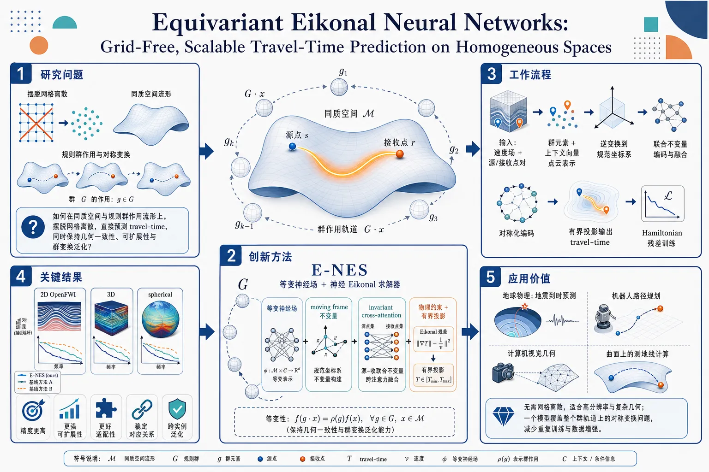
研究问题如何在同质空间与更一般的规则群作用流形上，摆脱网格离散，直接预测 Eikonal 方程的 travel-time，同时保持几何一致性、可扩展性和对群变换的可控泛化？创新方法提出 E-NES，将等变神经场与神经 Eikonal 求解器融合：把速度场条件表示成带群位姿的点云，用 moving frame 构造完整不变量，用 invariant cross-attention 编码 source-receiver 关系，再通过物理约束与有界投影输出 travel-time。其 Aha 点是：不靠数据增强或网格，而是把对称性直接写进模型，使一个模型覆盖整个群轨道上的解。工作流程输入速度场与源-接收点对；先将条件变量表示为群元素+上下文向量的点云；用群逆变换把 source 和 receiver 拉回规范坐标系，提取联合不变量并做 cross-attention 融合；经过对称化编码后，用有界投影将输出限制在物理速度范围内；训练时用 Hamiltonian 残差同时约束 source 与 receiver 两端，学习 travel-time 场。关键结果在 2D OpenFWI、3D 和 spherical 基准上验证有效；相较现有神经算子式 eikonal 求解器，表现出更好的精度、可扩展性、适配性和用户可控性；尤其能在不同速度场与对称变换下保持稳定的预测对应关系，证明方法具备跨实例泛化能力。应用价值可用于地球物理地震到达时间预测、机器人路径规划、视觉几何与曲面测地线计算等任务；由于无需网格离散，适合高分辨率和复杂几何场景；由于具备群等变性，可把一个已学模型直接迁移到一整类对称变换后的问题，减少重复训练和人工数据增强。第一部分：核心概览
这篇工作把 Equivariant Neural Fields 与 Neural Eikonal Solvers 融合成 E-NES，用群等变性和局部规范化替代网格离散，实现对 Eikonal travel-time 的grid-free预测，并把适用范围推进到具有regular group actions 的 Riemannian manifolds 与多种 homogeneous spaces。理论上给出完整不变量与可转移解的形式化保证，方法上兼顾可扩展性、可控性、几何一致性，相对近年 PINN、DeepONet、FNO 等路线，重点突破在于无需显式数据增强、无需空间离散、且能对群变换实现可预期操控。
---
第二部分：结构化快速回顾
《Equivariant Eikonal Neural Networks: Grid-Free, Scalable Travel-Time Prediction on Homogeneous Spaces》（None，）
背景
Eikonal 方程描述高频波传播的到达时间，在地球物理、机器人、视觉中都重要；传统 FMM/FSM 依赖网格，PINN 又常需为每个速度场单独训练，泛化与实时性不足。
方法
构建 E-NES：以 conditional neural field 为骨架，把速度场条件表示为 Lie group 上的点云；通过 equivariant / steerable 设计、moving frame 不变量、cross-attention 编码和 physics-informed loss 联合训练。
结果
在 2D OpenFWI、3D 与 spherical 基准上验证，声称优于现有 Neural Operator 式 eikonal 求解器，并表现出更好的scalability、adaptability、user controllability。
讨论
核心价值在于：一个模型可覆盖一整个group orbit，群变换导致解空间中可预测的对应变换；这使速度场迁移、轨迹回溯、地震到达时间与几何操控统一起来。
局限
当前摘录未给出完整定量表格；方法依赖 regular group actions、不变量构造和局部 canonicalization，跨一般非规则几何时实现复杂度可能上升。
结论
用等变神经场 + 物理约束实现了无网格、可扩展、可操控的 Eikonal 求解框架，并把适用范围推广到更一般的对称流形上。
---
第三部分：逐章节冷凝解析
1. Introduction
Eikonal 方程的核心地位
- Eikonal equation 是一阶非线性 PDE，控制短程传播时间；其解对应从 source 到 receiver 的最短到达时间。原文直述：*“The eikonal equation is a first-order nonlinear partial differential equation (PDE) that plays a central role in a wide range of scientific and engineering applications.”*
- 典型应用覆盖 Computer Vision、Robotics、Geophysics，包括 SDF、geodesic-based image segmentation、motion planning、seismic wave propagation。这把方法定位为跨学科基础工具，而非单一场景技巧。
传统数值法的瓶颈
- FMM 与 FSM 依赖空间离散，复杂速度模型下需要更高分辨率，导致计算与内存急剧增长。原文强调：*“these approaches are heavily dependent on spatial discretization”* 与 *“a challenging trade-off”*。
- 几何越复杂，问题越严重，尤其在 Riemannian manifolds 上更棘手。这里的关键不是精度不足，而是离散分辨率与可扩展性之间的结构性冲突。
PINNs 的优势与短板
- PINNs 把 PDE 约束放入 loss，得到 grid-free approximation。原文表述：*“offering a grid-free approximation to the eikonal equation”*。
- 但 PINN 通常“train a new network for each distinct velocity field”，导致无法对速度场集合进行共享学习，实时应用受限。
Neural Operators 的位置
- Neural Operators 学的是函数到函数映射：从 velocity field 到 travel-time solution。
- 相比 PINN，它们有共享 backbone 和条件变量，改善了跨实例泛化；但现有 DeepONet、FNO 仍常依赖部分离散化，保留了分辨率约束。原文写得很清楚：*“still rely on partial discretization, inheriting similar resolution constraints.”*
研究方向的升级：从 Operator 到 Conditional Neural Fields
- 关键论点是把 Neural Operator 看作更一般的 Conditional Neural Fields (CNFs)。原文指出：*“one promising direction is to recognize that Neural Operators belong to a broader class of models known as Conditional Neural Fields.”*
- 再进一步，聚焦 Equivariant Neural Fields (ENFs)，核心价值是把条件变量嵌入几何结构，使 latent 变换与 solution 变换一一对应。原文关键句：*“transformations in the latent space correspond directly to transformations in the solution space.”*
贡献声明
- 三点贡献明确：
1) 把 ENFs 推广到 products of Riemannian manifolds with regular group actions；
2) 用 E-NES 高效解 eikonal 方程并利用对称性实现无显式增强泛化；
3) 在 2D/3D/spherical seismic benchmarks 上验证更强的 scalability, adaptability, user controllability。
- 代码公开，原文：*“Our code, including scripts to generate the results, is provided at: https://github.com/AGarciaCast/E-NES”*。
---
2. Related work
Neural eikonal solvers 的第一阶段：PINN
- 早期神经求解器主要是 PINNs，把 PDE 约束写入 loss。原文：*“Initial neural approaches for solving the eikonal equation have primarily relied on Physics-Informed Neural Networks (PINNs)”*。
- 代价是每个 velocity field 都要单独训练，虽然精度高，但 computational and memory overhead 显著，且缺乏 cross-instance generalization。
Operator learning 的改进与残余问题
- DeepONet variants 能学函数空间映射，但常需离散 source 或 receiver 点，限制 resolution invariance 和连续评估。
- 某些方法依赖数值解监督，如文中点名的 Mei et al. (2024)；另一些如 FNO 虽然能直接融入 PDE loss，但仍保留部分离散化。这里形成的对比线很清楚：共享参数 ≠ 真正连续几何建模。
CNF 作为统一表述
- Conditional Neural Fields 是 coordinate-based networks，用坐标 + latent code 复原连续信号。原文形式化为：*“maps coordinates p ∈ ℳ and latent codes z ∈ 𝒵 to outputs fθ(p;z)”*。
- 这种框架把多个信号压到单个网络里，通过实例特定 latent 实现共享表示。
从 global latent 到 point cloud latent
- 从早期全局 latent vector，演化到 learnable point cloud latents，表达能力更强、重建质量更好。原文直接指出：*“significantly enhance expressivity and reconstruction quality.”*
- 这说明性能提升来自 latent 的几何粒度，不是简单堆参数。
ENF 的 steerability
- Equivariant Neural Fields 强制满足 *“fθ(g⁻¹ḑot p;zᵢ)=fθ(p;gḑot zᵢ)”*。
- 这带来 sample efficiency 与 generalization 的提升，因为对称性被编码进 latent 空间，不必靠数据增强硬记忆。
对单点到 product manifold 的扩展
- 现有 ENF 多处理单点/单信号，当前框架把它推广到 f:M₁×ḑots×Mₙ→R^d，允许复杂输入交互。
- 原文强调：*“This generalization substantially broadens the scope of addressable problems beyond prior single-point formulations.”*
不变量学习的理论缺口
- steerability 依赖 joint invariance：*“f(gḑot p;gḑot zᵢ)=f(p;zᵢ)”*。
- 关键断言是构造一个complete and maximally expressive set of independent invariants，以避免 canonicalization 中的信息损失。这里直接指出前人缺口：*“invariants were selected heuristically without completeness guarantees.”*
moving frame 与 local canonicalization
- 采用 moving frame technique，因为它与现代 canonicalization 自然兼容。原文：*“we employ the moving frame technique … for its conceptual clarity and natural connection to modern canonicalization methods.”*
- 与 global canonicalization 相比，采用 local canonicalization，更能保留局部信息，也更适合与 transformer-based architectures 结合。
---
3. Background
#### 3.1 Mathematical Preliminaries
Riemannian manifold 的基本对象
- 流形写成 (ℳ, 𝒢)，其中 𝒢 是度量张量场。每个点 (p) 的切空间 (TₚM) 上定义正定内积。
- 这里的关键用途不是抽象定义，而是为后面的 Riemannian gradient、geodesic distance、eikonal PDE 提供统一语言。
Riemannian distance 与 geodesic
- 两点间距离 (dG(p,q)) 定义为所有连接曲线长度的下确界。
- 达到下确界且匀速的曲线是 geodesic，这是后文“回溯梯度得到路径”的几何基础。
Gradient 与 adjoint differential
- Riemannian gradient 由 (G(gradf,ḑot)=df) 定义。
- 微分的伴随映射 ((dφ(p))^*) 用于描述群作用下切空间结构变化，这是等变证明里的技术支点。
Group action 与 orbit space
- Lie group (G) 的左作用定义了轨道、等价类与 orbit space (X/G)。
- 这部分的学术核心是：对称性不是附加信息，而是样本空间的商结构。很多后续 canonicalization 其实都是在学习轨道代表元。
SE(n) 与 isometry / free / regular
- 重点关注 SO(n) 与 SE(n)，后者代表平移加旋转。
- free action 指没有非平凡元素固定点；regular action 指局部轨道结构良好。原文说明：*“In practical applications, the groups of interest typically act regularly.”*
- 这为后续“只要 regular，不必严格 free/transitive 也能做不变量”埋下伏笔。
#### 3.2 Eikonal Equation Formulation
双点 eikonal 方程
- 方程写成：
[
|gradₛ T(s,r)|ₘₐₜₕcₐₗ G=v(s)⁻¹,quad
|gradᵣ T(s,r)|ₘₐₜₕcₐₗ G=v(r)⁻¹,
]
并满足对称性 (T(s,r)=T(r,s)) 与自反性 (T(s,s)=0)。
- 这不是单点 PDE，而是源点-接收点联合函数，这也是本工作把输入建模成 product manifold 的原因。
travel-time factorization
- 为避免 (r→ s) 时不规则，写成
[
T(s,r)=tilde d(s,r)τ(s,r).
]
- 其中 (tilde d) 是 semimetric，满足非负、同一性与对称性，并近似真实 Riemannian distance。
- (τ) 才是未知因子，模型重点预测的就是这个更平滑、更可学习的部分。
群不变 semimetric
- (tilde d(s,r)=tilde d(gḑot s,gḑot r)) 对所有 (gin G) 不变。
- 这是 steerability 的必要条件：若基础距离不保持对称性，整体解就无法对应群变换。
isometric / conformal / discrete 三种处理
- 若群作用是 isometric，(tilde d) 可直接取 geodesic distance。
- 若流形嵌入欧式空间且群作用延伸为 ambient isometries，可用 Euclidean (chordal) distance 近似。
- 更一般时可用离散指示器 (tilde d(s,r)=mathbbm1ₛ≠ ᵣ)，并通过 straight-through estimator 维持梯度。
- 这组选择体现出一个实用原则：只要能保住群不变性，距离项可以在几何精度与计算代价之间切换。
---
4. Method
E-NES 的整体定义
- 方法被写成 (τ_θ=Pi̧rc E)，其中 E 是 invariant cross-attention encoder，P 是 bounded projection head。
- 核心策略是：先编码几何不变量，再把输出压到速度相关区间，保证物理边界合法。
#### 4.1 Theoretical Framework
条件变量的几何化
- 条件变量不是普通向量，而是点云
[
z=(gᵢ,mathbf cᵢ₎ᵢ₌₁N.
]
- 每个 pose-context pair 由群元素 (gᵢ) 和上下文向量 (mathbf cᵢ) 组成。原文：*“represented as a geometric point cloud”*。
- 这使 latent 本身携带几何位置，避免纯向量 latent 的无结构问题。
steerability 约束
- 关键等式：
[
T_θ(s,r;gḑot z)=T_θ(g⁻¹ḑot s,g⁻¹ḑot r;z).
]
- 原文直说它*“enables the network to generalize across all transformations g ∈ G without requiring explicit data augmentation”*。
- 这就是整个框架的主要工程收益：一个模型覆盖整条 orbit。
g-steered metric
- 定义了 (mathcal G^g)，通过左平移 (L_g⁻¹) 的微分伴随把度量从原空间转到变换后空间。
- 这一步不是形式主义，而是把 解的等变性 和 度量的协变性 对齐。
Proposition 4.1 的含义
- 若 (T_θ) 满足 steerability，则由其对应的 velocity field 经 (g) 变换后，仍是一个合法解。
- 更重要的是，梯度场也随之变换，因此从一个场回溯得到的 geodesic，可以直接推广到变换后的场。原文：*“any geodesic extracted by backtracking the gradient of T_θ … generalizes to its transformed counterpart.”*
isometric / conformal 两类简化
- 若群作用 isometrically，速度场变换就是简单的复合：
[
μ(g,v)(s)=v(g⁻¹ḑot s).
]
- 若是 conformally，则多一个 conformal factor (Ømega(g,s))：
[
μ(g,v)(s)=Ømega(g,s),v(g⁻¹ḑot s).
]
- 这说明速度场不是死板的标量图，而是会按几何作用规律重标定。
#### 4.2 Model Architecture
Invariant cross-attention encoder
- 对每个 (gᵢ) 先提取不变量 (øperatornameInv(s,r,gᵢ₎)，再经 RFF 编码。
- 为保证 (T_θ(s,r;z)=T_θ(r,s;z))，采用 Reynolds operator over (S₂) 进行对称化。
- 接着用 attention 权重：
[
αᵢ₌fracexp(q(tilde aᵢ₎^→p k(cᵢ₎/sqrtdₖ)sumⱼ exp(q(tilde aⱼ₎^→p k(cⱼ₎/sqrtdₖ)
]
把局部几何与上下文融合。
参数化细节
- (q)、(k)、(v) 由若干 MLP 和线性映射组成，激活函数包含 GELU。
- (v(tilde a,c)) 中使用 (LN)、门控项 ((1+FFN_γ(tilde a))) 和偏置项 (FFN_β(tilde a))，属于典型的条件调制结构。
- 这种设计比单纯拼接 latent 更细粒度，能让几何信息真正影响 value path。
Bounded velocity projection
- encoder 输出 (mathbf h) 进入 FFN_P，再通过 sigmoid 投影到 ([1/vₘₐₓ,1/vₘᵢₙ])。
- 公式：
[
P(mathbf h)=łeft(frac1vₘᵢₙ-frac1vₘₐₓi̊ght)σ(α₀ḑot FFN_P(mathbf h))+frac1vₘₐₓ.
]
- (α₀) 是可学习温度参数；AdaptiveGauss activations 用于刻画 sharp wavefronts 和 caustics。
- 这一步保证输出严格符合速度边界，是物理可行性约束，不只是数值稳定技巧。
#### 4.3 Computation of Fundamental Joint-Invariants
从 product manifolds 出发
- 输入空间是 (Π=mathcal M₁×ḑots×mathcal Mₘ)，每个分量都带有 Lie group 作用 (δᵢ)。
- 这里的难点是：在 product manifold 上，群作用可能不是 free，标准 moving frame 失效。
latent-pose extension
- 解决方案是把空间扩展为 (barΠ=Π× G)，加入一个可学习的群元素。
- 扩展后的作用 (barδ) 被证明是 free，因此可恢复 moving frame 方法。
- 原文结论明确：*“the set (δᵢ₍g⁻¹,pᵢ₎ᵢ₌₁^m) forms a complete collection of functionally independent invariants”*。
理论意义
- 这一步正式证明了 Wessels et al. 路线中的“canonicalization”不是启发式，而是有complete invariants 保障。
- 更关键的是，它把 ENF 推广到regular but not necessarily free nor transitive 的场景，范围显著扩大。
在 E-NES 中的具体不变量
- 这里最终采用
[
øperatornameInv(s,r,gᵢ₎₌₍gᵢ⁻¹ḑot s,, gᵢ⁻¹ḑot r).
]
- 这说明 encoder 的基本输入是“把 source/receiver 拉回到同一规范坐标系”后的坐标对，几何意义非常直接。
#### 4.4 Training details
训练数据组织
- 训练集写为 (mathcal V=vₗ:mathcal M→[vₘᵢₙ,vₘₐₓ]ₗ₌₁^K)。
- 每个 iteration 采样一个 batch (mathcal B)，包含 (B) 个 velocity fields 和每个场对应 (Nₛᵣ) 对 source-receiver pairs。
- 这是典型的跨场联合训练，而不是每场独立拟合。
Hamiltonian form 的监督
- 采用
[
mathcal H(s,r,T)=v(s)²|gradₛ T(s,r)|²ₘₐₜₕcₐₗ G-1
]
作为 zero-level set 目标。
- loss 对 source 和 receiver 两端都施加绝对值惩罚：
[
łeft|vᵢ₍ₛᵢ,ⱼ)²|gradₛ T_θ|²ₘₐₜₕcₐₗ G-1i̊ght|
+łeft|vᵢ₍ᵣᵢ,ⱼ)²|gradᵣ T_θ|²ₘₐₜₕcₐₗ G-1i̊ght|.
]
- 这使得模型同时学习双向对称条件。
两种优化模式
- Autodecoding：同时优化 (zₗ) 和 (θ)。
- Meta-learning：外循环优化 (θ)，内循环用有限 SGD 步重初始化 (z) 去拟合 batch 内各 velocity fields。
- 两种模式对应不同应用：前者更像记忆库，后者更像快速适配器。
---
5. Experiments
实验版图
- 评估在 2D OpenFWI 上展开，并扩展到 3D 与 spherical geometry。
- 原文目标明确：*“to assess scalability and spherical geometry to show its generalization capabilities.”*
2D OpenFWI 设置
- 使用 10 类 velocity fields：FlatVel-A/B, CurveVel-A/B, FlatFault-A/B, CurveFault-A/B, Style-A/B。
- 每类在 70×70 grid 上定义。
- 训练集每类 500 个 velocity fields，测试集每类 100 个。
- source 设为顶边界上 4 个等距点，计算到所有 receiver 坐标的 travel times。
- 还做了更密的 14×14 source grid 评估，放在附录。
评价指标
- 使用 relative error (RE) 与 relative mean absolute error (RMAE)。
- 指标公式在摘录中已给出框架，说明评价重点是相对误差而非绝对时间值。
结果陈述的边界
- 摘录只保留了“superior performance, scalability, adaptability, and user controllability”这类总括性结论，未出现完整数值表格。
- 因此可以确认的是结论方向，不能从当前文本恢复具体 RE/RMAE 数值、显著性或消融结果。
---
第四部分：深度理解与语言支持
1. 关键术语解析
Steerability
- 语境中不是一般的“可操控”，而是指对 latent 做群变换，会在输出解空间诱发严格对应的几何变换。
- 与普通 robustness 不同，steerability 要求变换关系是可预测且结构保持的。
Conditional Neural Field
- 不是简单的“条件网络”，而是 坐标 + 条件码 → 连续函数值 的统一表示。
- 与 conditional CNN/Transformer 的区别在于，它直接建模连续场，特别适合 PDE、几何重建与连续坐标查询。
Moving frame
- 不是一般的坐标变换，而是一种通过群作用把点送到规范位置的 invariant theory 工具。
- 这里的作用是构造complete invariants，保证 canonicalization 不丢信息。
Regular group action
- 比 free action 更宽松，不要求每点都无稳定子；只要求局部轨道结构良好。
- 学术上这很重要，因为很多真实几何对称并不满足自由作用，但仍能做局部 canonicalization。
Conformal factor
- 在 conformal action 下，度量不是完全保持，而是按局部尺度因子 (Ømega(g,s)) 放缩。
- 这意味着速度场需要同步乘上 (Ømega)，否则 eikonal 约束会失配。
---
2. 疑难概念解释
为什么要把 travel-time 写成 (T=tilde d,τ)？
- 直接学 (T(s,r)) 时，(r→ s) 附近往往出现尖锐、不可微或数值不稳定行为。
- (tilde d) 先吸收掉“零距离附近必须为零”的几何结构，剩下的 (τ) 更平滑，更适合神经网络拟合。
- 类比上，相当于先把“强制满足的硬几何约束”拆出去，再学习“剩余物理因子”。
为什么 product manifold 上会出现“不 free” 的问题？
- 多个点的联合输入会引入更复杂的稳定子：某些群元素可能同时固定若干分量，从而让标准 moving frame 难以直接工作。
- 通过加入一个可学习的额外群元素 (g)，把空间扩展为 (Π× G)，等于人为引入一个“锚点”，把稳定子变成平凡群，重新恢复可构造的不变量。
- 这是一种典型的“提高空间维度换取群作用可处理性”的策略。
为什么 steerability 对 geodesic 很重要？
- geodesic 常通过 (nabla T) 回溯得到。
- 如果 (T) 对群变换是 steerable，那么梯度场也会以对应方式变换，因此路径规划、分割边界或射线追踪可以直接迁移到变换后的几何环境。
- 这使得“预测一个场”升级为“预测一个场族”。
---
第五部分：创新评估与关联
1. 创新性判断
相对 2–5 年相关工作的关键新颖性
- 从 PINN 式单场求解，升级为群轨道上的条件求解
- 近年的 PINN eikonal 工作主要是“每个速度场单独训练”，例如文中列举的多篇方法都停留在 instance-level fitting。
- 这里把问题重写为：一个 conditional neural field 覆盖整个速度场族，并且通过 steerability 在群轨道上共享表示。
- 这不是简单 parameter sharing，而是几何等变共享。
- 把 ENF 推广到 product manifolds 与 regular actions
- 以往 ENF 更常见于单点或较简单的集合结构。
- 这里明确处理 functions on products of Riemannian manifolds，并且不要求群作用 free/transitive，只需 regular。
- 这一步显著扩大了可处理问题族，理论上比常见的欧式坐标条件网络更深一层。
- 完整不变量的形式化保证
- 前人 canonicalization 常靠启发式不变量选择。
- 这里通过 moving frame + latent-pose extension 给出complete and maximally expressive 不变量集，强调zero information loss。
- 这项贡献更偏理论基础，价值在于把“看起来能用”变成“可证明地不丢信息”。
- 把速度场的群变换与解的群变换统一起来
- 不仅输入会变，输出 travel-time 场也严格随群作用改变。
- 这使得模型具备真正的user controllability：对 latent 或 pose 做变换，就能得到可预测的解变体。
- 对地震旅行时、运动规划、geodesic segmentation 都非常实用。
- grid-free 与 scalable 的同时成立
- 很多方法二者只能取其一：要么 grid-free 但每场重训，要么可泛化但依赖离散网格。
- 这里试图同时做到：连续坐标输入 + 共享条件表示 + 物理约束训练。
- 这正是对过去 2–5 年 eikonal learning 路线的核心推进。
解决了前人没解决的问题
- 解决了 “跨速度场泛化” 与 “无网格连续预测” 难以兼得的问题。
- 解决了 “复杂几何/流形上的可控等变表示” 缺乏完整理论支撑的问题。
- 解决了 “canonicalization 依赖启发式不变量” 的不完备问题。
- 解决了 “对称变换后无需重新训练即可得到对应解” 的迁移问题。
如果需要，我可以继续把这篇论文整理成：
1) 一页式方法图解，
2) 公式推导脉络图，或
3) 适合组会汇报的 10 分钟讲稿。
-
12
📊 含图深析
📄 摘要：arXiv:2607.26150v1 公告类型：新。摘要：晶体对称性可稳定具有独特电子性质的拓扑态，而交替磁体在没有净磁化的情况下表现出动量依赖的自旋劈裂。在这里，我们将第一性原理计算与最小紧束缚模型相结合，在d波交替磁体AV₂X₂O（A = Rb、Cs或K；X = Te、Se或S）中实现C配对的自旋—谷锁定节线费米子。低能电子结构在费米能级附近围绕C₄z配对谷承载共存的自旋简并和自旋极化节线。自旋极化节线受到面外镜面对称性M_z保护，并在自旋—轨道耦合下保持稳健。最小模型揭示了它们的微观起源，并建立了用于分离它们的一般设计原则。层工程和电子关联可作为材料特异性的调控旋钮，用于在费米能级附近实现这些分离的自旋—谷锁定节线。我们的结果确立了AV₂X₂O家族作为探索d波交替磁体中拓扑自旋—谷锁定的多功能平台。
📖 英文原文
arXiv:2607.26150v2 Announce Type: new Abstract: Crystalline symmetries stabilize topological states with distinct electronic properties, while altermagnets exhibit momentum-dependent spin splitting without net magnetization. Here, we combine first-principles calculations with a minimal tight-binding model to realize C-paired spin-valley-locked nodal-line fermions in the d-wave altermagnet AV₂X₂O (A = Rb, Cs, or K; X = Te, Se, or S). The low-energy electronic structure hosts coexisting spin-degenerate and spin-polarized nodal lines around C₄z-paired valleys near the Fermi level. The spin-polarized nodal lines are protected by the out-of-plane mirror symmetry M_z and remain robust against spin-orbit coupling. The minimal model reveals their microscopic origin and establishes a general design principle for their isolation. Layer engineering and electronic correlations serve as material-specific knobs for realizing these isolated spin-valley-locked nodal lines near the Fermi level. Our results establish the AV₂X₂O family as a versatile platform for exploring topological spin-valley locking in d-wave altermagnets.
💡 亮点：该研究结合第一性原理计算和最小紧束缚模型，在d波交替磁体AV₂X₂O中实现了C配对的自旋—谷锁定节线费米子。其低能电子结构在费米能级附近包含围绕C₄z配对谷的自旋简并和自旋极化节线，其中自旋极化节线受面外镜面对称性保护并对自旋—轨道耦合保持稳健。研究提出了分离这类节线的一般设计原则，并指出层工程和电子关联可作为材料调控手段。
🔬 与我们研究方向的关系
📐 方法要点：方法上，这篇工作可归入磁性机器学习势、自旋 Hamiltonian、自旋—晶格动力学和非共线磁结构。从摘要能确认的线索包括：第一性原理标注与结构优化，以及磁性、自旋以及自旋—晶格耦合, 晶体结构、功能材料和结构—性质关系对应的结构或物理量。若迁移到团队流程，应采用“训练集同时覆盖原子位移和自旋构型，显式标注交换、各向异性、DMI 或自旋力；用自旋 MD/MC 与 DFT 自旋能差验证温度、应变和缺陷下的磁序稳定性”的分层验证，而不是只比较单点能量或单一回归误差。还需核对原文的训练数据规模、损失函数、边界条件和误差分解，才能判断其是否适合团队的材料模拟任务。
🔗 相关工作关联：它与五位研究人员已有工作的直接连接是：磁性机器学习势、自旋 Hamiltonian、自旋—晶格动力学和非共线磁结构已经出现在团队的方向画像中，可对应到CrI₃/CrSBr 等范德华磁体、反铁磁/交替磁材料、磁性氧化物。与传统只做 0 K formation energy/静态势垒的工作相比，这里更应关注磁性、自旋以及自旋—晶格耦合, 晶体结构、功能材料和结构—性质关系, 非共线磁性、DMI/Kitaev 相互作用和交替磁性在温度、缺陷、应变或外场下的变化；摘要没有给出的模型细节不作延伸判断。这种联系应通过同一材料体系上的独立基准和跨分布测试确认，不能仅凭方法名称或期刊来源下结论。
💡 对你方向的启示：对当前研究最具体的启示不是泛泛地“使用 ML”，而是把该文的磁性机器学习势、自旋 Hamiltonian、自旋—晶格动力学和非共线磁结构嵌入现有材料模拟链：先在CrI₃/CrSBr 等范德华磁体、反铁磁/交替磁材料、磁性氧化物中选择一个已有 DFT 数据基础的体系，按“训练集同时覆盖原子位移和自旋构型，显式标注交换、各向异性、DMI 或自旋力；用自旋 MD/MC 与 DFT 自旋能差验证温度、应变和缺陷下的磁序稳定性”补充训练/验证集，再比较《d波AV₂X₂O交替磁体中自旋—谷锁定节线费米子的分离》对应模型对相稳定、极化/磁序、缺陷或动力学指标的改进。若结果只在训练分布内有效，应通过跨温度、跨应变、跨缺陷浓度和跨超胞测试检查可迁移性。第一步可以选取团队已有的 HfO₂、二维磁体、半导体缺陷或钙钛矿数据做小样本试验，再决定是否扩大到生产级计算。
📖 展开分析 + 配图
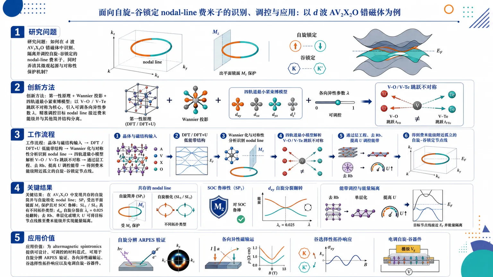
研究问题如何在 d 波 AV₂X₂O 错磁体中识别、隔离并调控自旋-谷锁定的 nodal-line 费米子，同时弄清其微观起源与对称性保护机制？创新方法把第一性原理、Wannier 投影和四轨道最小紧束缚模型结合起来，用 V–O 与 V–Te 跳跃的不对称作为核心机制，并引入可调各向异性参数 λ，把目标 nodal line 精准推向费米能级并从其他简并结构中分离出来。工作流程晶体与磁结构输入 → DFT/DFT+U 计算低能带结构 → Wannier 化与对称性分析识别 nodal line → 四轨道最小模型解析 V–O/V–Te 跳跃不对称 → 通过层工程、去 Rb、提高 U 调控能带 → 得到费米能级附近孤立的自旋-谷锁定节点线。关键结果在 AV₂X₂O 中发现共存的自旋简并与自旋极化 nodal line；其中 SP₁ 受出平面镜面 Mz 保护且对 SOC 鲁棒，SL₁/SL₂ 具有不同拓扑类型；dxy 自旋分裂在 λ_c=0.025 处翻转；去 Rb、单层化或增大 U 可把目标节点线推到费米能级并实现能量隔离。应用价值为 altermagnetic spintronics 提供可设计、可调控的材料范式，可用于自旋分辨 ARPES 验证、各向异性磁输运、谷选择性拓扑响应以及电调自旋-谷器件。第一部分：核心概览 (Overview)
这项工作把d-wave altermagnet中的spin-valley locked nodal-line fermions从“被观察到”推进到“可设计、可隔离、可调控”。核心贡献有三层：首先，在 AV₂X₂O（A = Rb, Cs, K; X = Te, Se, S）中识别出由 M_z 保护、对 SOC 鲁棒的自旋极化 nodal line；其次，用最小紧束缚模型揭示其根源来自 V–O 与 V–Te 路径的不对称；最后给出层工程与关联效应两条路径，把目标 nodal line 推到费米能级并与其他 nodal 结构隔离，为altermagnetic spintronics提供了一个清晰的材料设计范式。
---
第二部分：结构化快速回顾
Isolation of spin-valley locked nodal-line fermions in d-wave AV₂X₂O altermagnets（None，）
- 背景：nodal-line semimetals 的带交叉、spin-valley locking 与 altermagnetism 的 momentum-dependent spin splitting 融合，是拓扑自旋电子学的新前沿；AV₂X₂O 家族已被实验与理论共同推为关键平台。
- 方法：采用 DFT + DFT+U、Wannier 投影和对称性分析，结合一个四轨道最小紧束缚模型，解析 RbV₂Te₂O 及整个家族的低能带结构。
- 结果：在 C₄z 相关谷附近同时得到spin-degenerate 与 spin-polarized nodal lines；其中 SP₁ 受 M_z 保护且对 SOC 鲁棒，SL₁/SL₂ 呈现不同对称性与拓扑类型。
- 讨论：nodal 结构的可调性来自 V–O / V–Te 跳跃不对称；层工程、去 Rb、单层化和增大 U 都能把目标 nodal line 调到费米能级。
- 局限：计算研究不含实验样本量、统计检验或直接测量数据；对层终止、SOC、U 与结构对称性的依赖较强。
- 结论：AV₂X₂O 是研究topological spin-valley locking 的高可塑性平台，可望服务于 spin-resolved ARPES、各向异性输运与谷选择拓扑响应。
---
第三部分：逐章节冷凝解析
Abstract
- 核心命题：把 spin-valley locked nodal-line fermions 限域并隔离出来
关键结论是：通过第一性原理与最小模型，在 AV₂X₂O 中实现了“C C-paired spin-valley-locked nodal-line fermions”。原文直接写明：*"we combine first-principles calculations with a minimal tight-binding model to realize C C -paired spin-valley-locked nodal-line fermions in the d d -wave altermagnet AV 2 X 2 O"*。
细节上，低能结构中“coexisting spin-degenerate and spin-polarized nodal lines”共存，且都位于接近费米能级的 C₄z 谷附近。
- 对称性保护机制：M_z 是关键
自旋极化 nodal line 的保护来自出平面镜面对称性。原文给出：*"The spin-polarized nodal lines are protected by the out-of-plane mirror symmetry ℳ z and remain robust against spin-orbit coupling."*
这意味着即使加入 SOC，只要保持 M_z，目标 nodal line 仍可存活；其余 crossing 则会被选择性开隙。
- 材料设计原则：层工程与关联效应是调控旋钮
摘要把可调控性明确归因于结构与电子关联：*"Layer engineering and electronic correlations serve as material-specific knobs for realizing these isolated spin-valley-locked nodal lines near the Fermi level."*
这给出一个可操作的材料路线，而非单纯的材料发现。
---
Introduction
- 拓扑晶体对称性与 nodal-line fermions 的大背景
核心框架是：晶体对称性能稳定带交叉，形成 Dirac / Weyl / nodal-line fermions。原文写道：*"Crystalline symmetries protect band crossings from hybridization, stabilizing Dirac, Weyl, and nodal-line fermions"*。
这里 nodal-line semimetal 的特征被概括为一维动量空间简并流形，并对应“drumhead surface states”与高 DOS 表面态。
- spin-polarized states 的传统来源与局限
传统路径有两条：SOC 驱动的 Rashba 型机制，以及铁磁体中的 exchange splitting。原文指出：*"Spin-polarized electronic states are typically realized either through spin-orbit coupling (SOC) in inversion-symmetry-broken systems or through exchange splitting in ferromagnets."*
但铁磁体的问题是宏观磁化与 stray fields，会妨碍可扩展自旋器件，原文直接指出：*"However, ferromagnets possess macroscopic magnetization and stray fields that hinder scalable spintronic applications."*
- altermagnetism 提供零净磁化但强动量依赖的自旋分裂
这篇工作落在 altermagnetism 的新范式上。原文给出定义性表述：*"Altermagnetism circumvents this limitation by combining zero net magnetization with crystal-symmetry-driven momentum-dependent spin splitting."*
这类体系实现了没有净磁矩却存在显著 momentum-dependent spin splitting 的状态，是spin-valley locking 的理想载体。
- AV₂X₂O 是已有强候选体系
AV₂X₂O 已经显示出强 altermagnetic 特征以及多个输运异常。原文列举：*"large momentum-dependent spin splitting together with anomalous Hall-like responses, tunneling magnetoresistance, and spin Hall effects."*
这说明体系不仅理论上漂亮，而且已有实验与输运基础。
- 前人已观察到 nodal line，但微观机制未解
关键缺口在于“观察到”并不等于“理解并隔离”。原文写得很直接：*"Recent ARPES measurements further revealed spin-degenerate and spin-valley-locked nodal lines around the C₄z-related valleys... However, the microscopic mechanism governing the emergence and isolation of the spin-valley-locked nodal-line fermions remains unexplored."*
这正是整篇工作的切入点。
- 本研究的目标是建立可复用的设计原则
目标不是只给出一个材料实例，而是建立可推广逻辑：*"A minimal tight-binding model reveals their microscopic origin and establishes a design principle for realizing isolated spin-valley-locked nodal-line fermions."*
这里“design principle”是全文的理论主轴。
---
Methods
- 第一性原理框架明确，参数完整
计算使用 VASP、PBE-GGA 与 DFT+U。原文给出：*"Exchange and correlation were treated using the Perdew-Burke-Ernzerhof generalized-gradient approximation, while electron correlations in the V 3d orbitals were described using the rotationally invariant DFT+U method with U eff = 1 eV."*
这是对 V 3d 关联的最低限度修正，说明体系被视为弱到中等关联电子系统。
- 数值收敛条件较严格
采用 480 eV 平面波截断与 12 × 12 × 6 的 Γ-centered k 网格。原文写道：*"A plane-wave energy cutoff of 480 eV and a Γ-centered 12 × 12 × 6 k-point mesh were employed."*
几何优化收敛到残余力低于 0.001 eV/Å：*"The residual forces were below 0.001 eV/Å."*
- Wannier 化覆盖低能轨道空间
建模轨道包括 V 3d、Te 5p、O 2p。原文写道：*"a material-specific tight-binding Hamiltonian was constructed by projecting the Kohn-Sham states onto V 3d, Te 5p, and O 2p orbitals."*
这保证了低能电子结构中主要化学成分被完整保留。
- 对称性与本征表示识别工具到位
使用 WannierTools 与 IrRep 分析 nodal states 与不可约表示。原文给出：*"The resulting Hamiltonian was employed to identify nodal states and determine their symmetry representations using WannierTools and IrRep."*
这一步是后续“哪条 crossing 被哪种对称性保护”的基础。
---
Altermagnetism-induced nodal-line fermions
- 代表体系是 RbV₂Te₂O，晶体属于 P4/mmm
选取 RbV₂Te₂O 作为代表。原文写明：*"It crystallizes in the tetragonal space group P4/mmm (No. 123)."*
结构由 V₂Te₂O 层与层间 Rb 夹层构成，V 与 O 形成 inverse Lieb lattice。
- 磁结构是补偿型共线反铁磁，Néel 向量沿 [001]
这是 altermagnet 的磁学基础。原文直接说：*"The magnetic ground state is a compensated collinear antiferromagnet with the Néel vector along the [001] direction."*
两个不等价 V 子晶格 V_A 与 V_B 的局域磁矩大小约为 2.1 μB / V，方向相反。
- d-wave altermagnetic 序来自局域环境旋转 π/2
关键几何机制是两套 V–O 局域环境相差 π/2 旋转。原文：*"Their local V–O environments are related by a π/2 rotation, producing the characteristic d-wave altermagnetic order."*
这也解释了为何不是普通 AFM，而是具有动量依赖自旋分裂的 d-wave altermagnet。
- 对称性由 C2||C4z、镜面 M[110]、M[1-10] 与 Mz 共同约束
原文写明：*"the magnetic structure is invariant under the combined spin-lattice symmetry [C2 || C4z] and preserves the diagonal mirror planes M[110] and M[1bar10], together with the out-of-plane mirror Mz."*
这组对称性决定了谷配对、镜面保护和自旋纹理。
- 真实空间自旋纹理呈四瓣花样
原文描述：*"The spin density is predominantly localized on the V atoms and exhibits the four-lobed pattern characteristic of d-wave altermagnetism."*
四瓣分布与动量空间中沿对角线翻转的自旋极化相呼应。
- 费米面由谷口袋和跨 BZ 的开放费米面组成
在 kz = 0 与 kz = π/c 平面上，费米轮廓都显示出 X 和 R 谷附近的自旋极化口袋以及开放费米面。原文写道：*"They consist of spin-polarized pockets centered at the X1,2 and R1,2 valleys and open Fermi sheets spanning the Brillouin zone."*
这说明低能电子结构强烈各向异性。
- 准二维性质很强
两个 kz 平面上的费米轮廓“几乎相同”，意味着 c 轴色散很弱。原文：*"The nearly identical Fermi contours on the kz = 0 and kz = π/c planes indicate weak out-of-plane dispersion and a quasi-two-dimensional electronic structure."*
ELF 进一步显示层内共价键强、层间耦合弱，Rb 近乎只充当电子供体。
- 去掉 Rb 后低能带几乎不变，只是 EF 平移
原文直接指出：*"removing the Rb atoms leaves the low-energy band structure nearly unchanged and primarily shifts the Fermi level."*
这一点为后续层工程去 Rb 提供了物理基础。
- 无 SOC 时的自旋分裂具有 d-wave 形式
原文给出显式形式：*"Δ AM(k) = E↑(k) − E↓(k) ∝ g(k)·σ, where g(k) = α(kx² − ky²⁾ z^."*
这说明自旋分裂在 kx = ±ky 平面消失，在 X/R 谷附近最强。
- 低能四条带来自 V 的 dxy 与 dxz/dyz 轨道
原文写道：*"The four bands near the Fermi level comprise spin-split pairs of V dxz/dyz and dxy orbitals from the two magnetic sublattices."*
轨道层析是后续 nodal-line 类型区分的关键。
- 不同轨道的自旋分裂强度差异巨大
数值非常具体：dxy 的分裂约 0.06 eV，dxz/dyz 约 1.35 eV。原文写道：*"the dxy bands split by ∼0.06 eV, whereas the dxz/dyz bands split by ∼1.35 eV."*
这个数量级差异直接决定了 nodal crossing 的排列和能量位置。
- 三类 nodal 结构同时出现
原文明确：*"these spin-resolved bands generate three distinct nodal structures."*
分别是 SL₁、SP₁ 与 SL₂，其中 SP₁ 是 spin-polarized nodal line，SL₁/SL₂ 是 spinless nodal line / nodal surface。
- SP₁ 与 SL₁ 都围绕 X₁ 出现，但物理来源不同
在 sector 1 中，dyz↑ 与 dxy↑/↓ 的 crossing 产生 SL₁ 和 SP₁。原文写道：*"the crossings between the dyz↑ and dxy↑/↓ bands produce two nodal lines centered around the X1 point... a spinless nodal line (SL1) and a spin-polarized nodal line (SP1)."*
这说明单一谷内可以并存两种不同对称性来源的 nodal line。
- 准二维性把 nodal line 拉成近圆柱 nodal surface
原文写明：*"both nodal lines exhibit negligible dispersion along kz and evolve into nearly cylindrical nodal surfaces extending across the Brillouin zone."*
这一步将 2D crossing 推广为贯穿整个 BZ 的近柱面结构。
- SL₂ 是由 opposite-spin dxy 带交叉形成的 nodal surface
原文：*"The crossing between the opposite-spin dxy bands further generates a nodal surface (SL2) near the Fermi level."*
这类结构在后面被证明对 Te→Se/S 替换更敏感。
- SL₂ 在 kz ≈ 0.53π/c 发生 Lifshitz transition
具体数值是 kz ≈ 0.53 π/c。原文：*"SL2 undergoes a Lifshitz transition from a closed to an open topology at kz ≈ 0.53 π/c."*
这给出一个清晰的拓扑转变点。
- 谷选择性与 C-pairing 直接对应
原文写道：*"the spin-polarized nodal lines are valley selective, appearing around the X1 and R1 valleys in sector 1 and the X2 and R2 valleys in sector 2."*
这就是 C C-paired spin-valley nodal-line fermions 的本体定义：对称相关谷里自旋极化相反。
---
Symmetry protection of nodal lines in RbV₂Te₂O
- SL₁ 是 type-I，SL₂ 是 type-II
原文直接区分：*"The nodal line SL1 exhibits a type-I conical dispersion, whereas SL2 is type II."*
这意味着 SL₁ 的能带斜率符号相反、呈标准锥形；SL₂ 则带有过倾斜特征。
- 无 SOC 时，spin sector decoupling 同时保护 SL₁ 与 SL₂
原文：*"Without SOC, the Hamiltonian separates into two independent spin sectors, which prevents coupling between opposite-spin bands and protects both SL1 and SL2."*
这属于“自旋块分离”型保护，不依赖镜面对称性。
- SP₁ 依赖 Mz 镜面保护
原文写得非常明确：*"the spin-polarized nodal line SP1 is protected by the out-of-plane mirror symmetry Mz."*
在 kz = 0 与 π/c 上，Mz² = 1，镜像本征值为 ±1，两条带若本征值相反就无法杂化。
- 离开镜面对称平面后，SP₁ 只剩超小开隙
原文：*"Away from these mirror planes, this protection is lost. Nevertheless, the quasi-two-dimensional electronic structure of RbV2Te2O limits the resulting gaps to below 1 meV."*
这解释了为什么即使理论上不完全受保护，实际仍近似稳定。
- 加入 SOC 后，自旋扇区混合，但 Mz 保护仍有效
原文写道：*"Upon including SOC, the two spin sectors mix and spin-sector protection is uplifted. However, for the [001] spin axis, Mz remains preserved."*
此时 Mz² = −1，镜像本征值变为 ±i。
- SOC 下 SL₂ 与 SP₁ 仍保留，SL₁ 开隙
原文：*"the bands forming SL2 and SP1 carry opposite mirror eigenvalues and therefore remain Mz protected. In contrast, the bands forming SL1 share the same mirror eigenvalue, allowing a local gap to open."*
因而 SOC 选择性地打破部分 nodal crossing，而不是全部摧毁。
- 家族内的 nodal hierarchy 大体稳定
原文指出：*"This nodal-line hierarchy remains almost intact throughout the AV2X2O family."*
说明 Rb/Cs/K 与 Te/Se/S 替换主要影响的是能量位置与某些次级 nodal 结构，而非整个拓扑框架。
- A 位离子替换对 dxy 分裂几乎无影响
原文：*"Replacing Rb with K or Cs does not noticeably alter the dxy spin splitting, thereby preserving all nodal lines."*
这表明 A 位主要是电荷平衡与层间环境调控，不是低能轨道主导者。
- X 位替换会消除 SL₂，但保留 SL₁ 与 SP₁
原文：*"substituting Te with Se or S removes the type-II nodal surface SL2, whereas SL1 and SP1 remain intact."*
这为材料筛选提供了一个明确的化学调控方向。
- spinless nodal line 仍与 spin-valley locked nodal line 邻近共存
原文：*"the spinless nodal line remains close to the Fermi level above the spin-valley locked nodal line."*
也就是说，真正的“隔离”需要额外调控，而不是家族本征态自动完成。
---
Microscopic origin of spin-valley polarized nodal lines
- 最小模型基于四轨道逆 Lieb 晶格
原文给出基组：*"dyz↑, dxy↑, dxz↓, dxy↓"*。
这四个轨道构成了能解释低能 crossing 的最小闭合空间，并且 spin-up / spin-down 分别放在 V_A / V_B 子晶格上。
- 无 SOC 时 Hamiltonian 是块对角的
原文写成：*"H = (H_VA↑ 0; 0 H_VB↓)."*
这对应两套互不耦合的 spin sector，是 nodal crossing 能被保留的直接原因之一。
- 轨道能量由各向异性最近邻与次近邻跳跃决定
原文给出具体形式：
*"Hφ_ᵢp̆arrow = εφ_ᵢ + 2t¹xo̧s kₓ + 2t¹yo̧s k_y + 4t²o̧s kₓₒ̧s k_y"*，
*"Hφ_ᵢdowⁿarrow = εφ_ᵢ + 2t¹xo̧s k_y + 2t¹yo̧s kₓ + 4t²o̧s kₓₒ̧s k_y"*。
这说明上下自旋在动量空间中的各向异性分布是由晶体与磁结构共同写入的。
- 关键微观机制是 V–O 与 V–Te 跳跃的不对称
原文的中心判断是：*"The minimal model identifies the asymmetry between the in-plane V–O and out-of-plane V–Te hopping pathways connecting the magnetic sublattices as the key microscopic mechanism controlling the nodal-line fermions."*
这条句子基本就是全文的“机制答案”。
- 这种不对称直接控制 dxy 的 valley spin splitting
原文：*"This asymmetry controls the spin density around each magnetic sublattice and directly determines the valley dxy spin splitting."*
因此，spin-valley locking 的位置不是随机的，而是由 hopping anisotropy 决定。
- 引入 λ 作为各向异性参数后，可以连续调控分裂并翻转带序
原文定义：*"we introduce an anisotropy parameter λ that modifies the hopping amplitudes"*，并给出
*"t¹yₓy(łambda)=t¹yₓy+łambda"*、*"t¹xₓy(łambda)=t¹xₓy-łambda"*。
还对 onsite energy 作了 *"εₓy(łambda)=(1+cłambda)εₓy"* 的修正。
- 临界点 λ_c = 0.025
原文：*"the dxy spin splitting decreases and changes sign at the critical value λc = 0.025."*
这是模型里最重要的相变阈值之一。
- λ 增大后，spin-valley locked nodal line 被推到费米能级并与其他 nodal line 隔离
原文：*"Consequently, the spin-valley-locked nodal line shifts toward the Fermi level and becomes energetically isolated from the spin-degenerate nodal lines."*
这就是“isolated”的具体含义：能量上与其他 nodal 结构分离，不是简单的几何上孤立。
- λ 是主导结构参数
原文：*"The phase diagram ... demonstrates that λ is the primary structural parameter for realizing isolated spin-valley-locked nodal lines."*
这使 λ 成为设计语言中的核心控制量。
- 两条现实路径：层工程与增强 U
原文明确列出：*"The proposed mechanism can be realized ... through (i) dimensional confinement and layer engineering ... and (ii) correlation-driven renormalization ... by increasing the Hubbard interaction U."*
这是从理论模型走向材料实现的桥梁。
- 三种层几何给出连续演化图景
- 结构 I：对称包夹，保持 Mz。原文：*"Structure I preserves Mz."*
- 结构 II：去掉一层 Rb，破坏 Mz，并产生二维 Weyl 节点。原文：*"II breaks it ... yielding two-dimensional Weyl nodes."*
- 结构 III：自由立方层 / 单层，恢复 Mz，并把目标 nodal line 放到费米能级。原文：*"III isolates the spin-valley-polarized nodal line near the Fermi level."*
这三步构成完整的“隔离路线图”。
- 去掉一层 Rb 会反转 dxy 分裂，但也破坏镜面保护
原文：*"This enhances the spin-density anisotropy and reverses the valley dxy spin splitting. However, the broken Mz mirror symmetry gaps the mirror-protected nodal lines except along the Brillouin-zone boundary."*
这说明“反转分裂”与“保持 nodal line”之间存在对称性张力。
---
Discussion
- 共存的根本原因是 altermagnetic 分裂与 Mz 镜面的耦合
原文总结得很清楚：*"Their coexistence arises from the interplay of altermagnetic spin splitting and Mz mirror symmetry."*
因此不是单一对称性在起作用，而是磁有序 + 镜面 的组合效应。
- 可调性来自 V–V 跳跃路径的不对称
原文：*"their tunability originates from the asymmetry between the V–V hopping pathways mediated by the in-plane O and out-of-plane Te atoms."*
这是对微观设计原则的再概括。
- 层工程与 Hubbard U 是实际控制旋钮
原文写道：*"Layer engineering and tuning electronic correlations via the Hubbard interaction U provide practical routes to control this nodal-line topology."*
这意味着不仅能通过结构，也能通过电子相关调节。
- 实验可达性高，Rb 只是电子供体
原文：*"The weak hybridization between the Rb atoms and the V2X2O layers makes our proposal directly accessible."*
以及：*"The Rb atoms primarily act as electron donors, while the low-energy electronic states reside in the V2X2O layers."*
这说明表面去 Rb 不会重构主体低能物理。
- 表面去 Rb / 刻蚀不会显著破坏电子结构
原文：*"surface Rb atoms can be desorbed or etched without significantly altering the electronic structure, which exposes the isolated spin-valley-locked nodal line at the Fermi level."*
这是一条非常直接的实验路线。
- 已有实验支持准二维与弱层间耦合
原文：*"Recent experiments support this picture by demonstrating extremely weak Rb-mediated interlayer coupling and a quasi-two-dimensional electronic structure."*
这提高了方案的现实可信度。
- 可用实验手段明确
原文列出：*"spin-resolved ARPES and anisotropic magnetotransport."*
对应的探测量分别是自旋分辨谱学与输运各向异性。
- 面向未来的应用目标是 valley-selective transport 与非线性响应
原文：*"Looking ahead, the isolated spin-valley-locked nodal-line fermions offer a platform for valley-selective topological transport, Berry-curvature-driven nonlinear responses, and electrically tunable spin-valley phenomena."*
这把基础结果与器件潜力直接连接起来。
---
Acknowledgements
- 项目资助来自印度原子能部
原文：*"This work is supported by the Department of Atomic Energy, Government of India, under Project Identification Nos. RTI4013 and RTI4015."*
这部分不影响科学结论，但说明研究支持来源。
---
第四部分：深度理解与语言支持
1) 术语解析
- Altermagnetism
不是普通反铁磁，也不是铁磁。关键差别在于：净磁化为零，但由于晶体对称性驱动的动量依赖自旋分裂，费米面上仍出现自旋极化。语境中它是实现spin-valley locking 的前提。
- Spin-valley locking
指自旋极化与谷自由度绑定：不同谷对应相反或特定方向的自旋。这里的“valley”不是能量谷的泛称，而是 C₄z 相关的对称配对谷（X₁/X₂、R₁/R₂）。
微妙差别在于：它不是单纯的自旋极化，而是谷选择性自旋极化。
- Nodal line / nodal surface
nodal line 是一维动量空间中的带简并线；nodal surface 则扩展到二维简并面。文中很多“nodal line”在准二维极限下会变成近似柱面，因此会出现“线/面”的连续过渡。
- Mirror-protected
意味着两条带属于不同的镜像本征值，按对称性不能杂化。这里尤其关键的是 Mz：在 kz = 0 或 π/c 平面上，镜面对称性决定 crossing 是否保留。
- Type-I vs Type-II nodal line
type-I 是标准锥形、无过倾斜；type-II 则被过倾斜，电子和空穴口袋共存。文中把 SL₁ 与 SL₂ 区分成不同类型，说明它们不仅来源不同，色散形态也不同。
2) 疑难查证：几个容易混淆的点
- “Spinless nodal line” 不等于“没有自旋”
这里的“spinless”指的是不是自旋极化锁定的那一类 nodal line，不是物理上完全无自旋。实际上体系仍有自旋，只是该 crossing 不携带目标的谷-自旋绑定属性。
- “Isolated” 的含义是能量隔离，不是空间上单独存在
文中“isolated spin-valley-locked nodal lines”指的是：目标 nodal line 从其他 nodal 结构中在能量上分离出来，且接近费米能级。这对实验最重要，因为 ARPES 和输运都更容易捕捉。
- 为什么去掉一层 Rb 会同时“增强目标效应”又“破坏保护”
一层 Rb 的去除打破上下对称包夹，强化了 V–Te 环境不对称，因此有利于 dxy spin splitting 翻转；但镜面对称 Mz 被破坏，原本依赖镜面的 nodal line 会开隙。
这说明结构调控必须在“增强分裂”和“保持保护”之间平衡。
- 为什么 SOC 没有彻底摧毁 nodal line
因为保护它的不是单纯的自旋块分离，而是Mz 镜面本征值差异。SOC 破坏了自旋扇区独立性，但只要镜面对称保留，某些 crossing 仍不能杂化。
---
第五部分：创新评估与关联 (Synthesis & Novelty)
1) 创新性判断
- 相对于近 2–5 年工作的新意
近年的相关工作已经完成了三件事：
- 确认 d-wave altermagnetism 具有大动量依赖自旋分裂；
- 在 AV₂X₂O 中实验观察到 spin-valley locked nodal lines；
- 建立了 C C-paired spin-momentum locking 的分类框架。
这篇工作进一步推进到第四步：给出微观机制与可操作的隔离路线。
- 解决的前人未解问题
之前的问题不是“有没有 nodal line”，而是：
为什么会出现？哪种 nodal line 才是 spin-valley locked 的核心态？怎样把它从其他 nodal crossing 中分离出来并推到费米能级？
这里给出的答案是：
V–O / V–Te 跳跃不对称 控制 dxy 的 valley spin splitting；
Mz 决定 nodal line 是否开隙；
λ、层工程 和 U 决定最终是否能实现“isolated”态。
- 方法论上的新意
不是单靠第一性原理“看图识物”，而是把 DFT 结果压缩成一个 四轨道最小模型，并用一个可调参数 λ 明确连上材料设计。
这种“first-principles → minimal model → design principle → material knobs”的链条，是本工作最强的学术价值。
- 领域地位
在 altermagnetic spintronics 和 topological spin-valley physics 的交叉区，这项工作把 AV₂X₂O 从“有趣的 altermagnet”提升为“可工程化的 spin-valley nodal-line 平台”。
这不是单点材料结果，而是一个可推广到其他层状逆 Lieb 型 altermagnet 的设计范式。
-
13
📊 含图深析
📄 摘要：交替磁体打破时间反演和旋转对称性的某种组合，但不产生净磁化。因此，d 波交替磁体的序参量与磁多极矩具有相同的对称性，并且耦合于磁场和单轴应变的乘积。我们结合对 MnF₂ 的弹热实验、自由能建模和第一性原理计算，建立了一种用于探测所预言的有限温交替磁临界点的热力学手段。这些结果为在 d 波材料及更广范围中探索交替磁量子临界性铺平了道路。
📖 英文原文
arXiv:2601.19343v2 Announce Type: replace Abstract: Altermagnets break a combination of time-reversal and rotational symmetries without generating a net magnetization. As such, the order parameter of d-wave altermagnets has the same symmetry as magnetic multipoles, and couples to the product of a magnetic field and uniaxial strain. We combine elastocaloric experiments, free-energy modeling, and first-principles calculations on MnF₂ to establish a thermodynamic probe of the predicted finite-temperature altermagnetic critical point. These results pave the way to explore altermagnetic quantum criticality in d-wave materials and beyond.
💡 亮点：本文研究候选交替磁体 MnF₂ 中的多极序，利用应变下的弹热效应建立对有限温交替磁临界点的热力学探针。交替磁体打破时间反演与旋转对称性的组合但无净磁化，d 波交替磁序参量与磁多极矩同对称，并耦合于磁场和单轴应变的乘积。作者结合弹热实验、自由能建模和第一性原理计算，为探索 d 波材料及更广体系中的交替磁量子临界性提供路径。
🔬 与我们研究方向的关系
📐 方法要点：方法上，这篇工作可归入热力学知情 ML、机器学习势、自由能采样、CALPHAD/团簇展开。从摘要能确认的线索包括：第一性原理标注与结构优化, 热力学自由能、相稳定与有限温度建模，以及磁性、自旋以及自旋—晶格耦合, 晶体结构、功能材料和结构—性质关系对应的结构或物理量。若迁移到团队流程，应采用“在 DFT 能量/力/应力之外加入跨温度构型、相对自由能、熵或热膨胀信息；用主动学习补采相变、畴壁和相竞争区域，再用热力学积分、MC 或有限温度 MD 验证”的分层验证，而不是只比较单点能量或单一回归误差。还需核对原文的训练数据规模、损失函数、边界条件和误差分解，才能判断其是否适合团队的材料模拟任务。
🔗 相关工作关联：它与五位研究人员已有工作的直接连接是：热力学知情 ML、机器学习势、自由能采样、CALPHAD/团簇展开已经出现在团队的方向画像中，可对应到HfO₂ 基铁电、二维滑移铁电、钙钛矿和磁性氧化物。与传统只做 0 K formation energy/静态势垒的工作相比，这里更应关注磁性、自旋以及自旋—晶格耦合, 晶体结构、功能材料和结构—性质关系, 非共线磁性、DMI/Kitaev 相互作用和交替磁性在温度、缺陷、应变或外场下的变化；摘要没有给出的模型细节不作延伸判断。这种联系应通过同一材料体系上的独立基准和跨分布测试确认，不能仅凭方法名称或期刊来源下结论。
💡 对你方向的启示：对当前研究最具体的启示不是泛泛地“使用 ML”，而是把该文的热力学知情 ML、机器学习势、自由能采样、CALPHAD/团簇展开嵌入现有材料模拟链：先在HfO₂ 基铁电、二维滑移铁电、钙钛矿和磁性氧化物中选择一个已有 DFT 数据基础的体系，按“在 DFT 能量/力/应力之外加入跨温度构型、相对自由能、熵或热膨胀信息；用主动学习补采相变、畴壁和相竞争区域，再用热力学积分、MC 或有限温度 MD 验证”补充训练/验证集，再比较《通过应变下弹热效应探测候选交替磁体 MnF₂ 中的多极序》对应模型对相稳定、极化/磁序、缺陷或动力学指标的改进。若结果只在训练分布内有效，应通过跨温度、跨应变、跨缺陷浓度和跨超胞测试检查可迁移性。第一步可以选取团队已有的 HfO₂、二维磁体、半导体缺陷或钙钛矿数据做小样本试验，再决定是否扩大到生产级计算。
📖 展开分析 + 配图
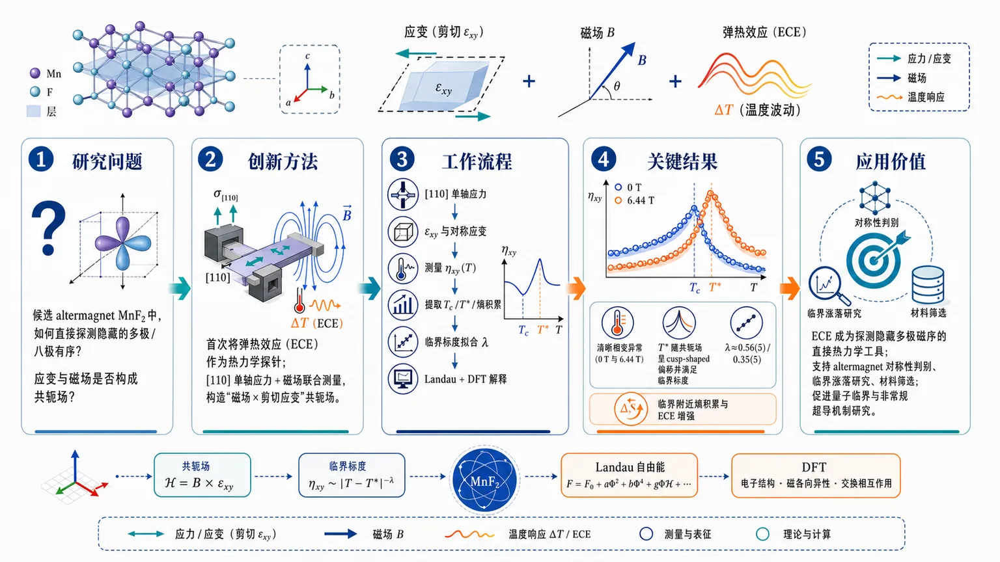
研究问题如何在候选 altermagnet MnF₂ 中，直接从热力学上探测其隐藏的多极/八极有序，并确认应变与磁场是否构成该序参量的共轭场，从而识别其对称性响应。创新方法首次将弹热效应（ECE）作为 altermagnetic 多极有序的热力学探针，在 [110] 单轴应力下联合磁场测量，把“磁场 × 剪切应变”构造成共轭场；再用 Landau 自由能模型和 DFT 追踪临界线与微观耦合，抓住了“共轭场导致 T* 偏移并出现 cusp”的关键点。工作流程沿 [110] 方向施加单轴应力 → 产生剪切应变 εₓy 与对称应变分量 → 在不同磁场下测量 MnF₂ 的 ECE 曲线 ηₓy(T) → 提取 T_c、T*、熵积累与临界偏移 → 用临界标度拟合耦合常数 λ → 结合 Landau 模型和 DFT 解释普通应变效应、altermagnetic 耦合与微量偏化学计量的作用。关键结果在 0 T 和 6.44 T 下都观测到清晰的相变异常；T* 随共轭场呈现 cusp-shaped 偏移并满足临界标度；拟合得到 λ≈0.56(5)（均场）或 0.35(5)（3D Ising）；临界附近出现明显熵积累和 ECE 增强；DFT 进一步表明极微量偏化学计量即可显著放大响应。应用价值证明 ECE 可以作为探测隐藏多极磁序的直接热力学工具，为 altermagnet 的对称性判别、临界涨落研究、材料筛选与未来量子临界/非常规超导机制研究提供新路径。第一部分：核心概览
这篇工作把 MnF₂ 作为候选 altermagnet 的热力学标尺，首次用 elastocaloric effect (ECE) 直接探测其与 multipolar / octupolar order 对应的对称性响应。核心贡献是：把 应变 + 磁场 识别为该序参量的共轭场，实验上测得 T* 的临界线、熵积累与 λ 的大小，并用 free-energy modeling + DFT 解释微观来源。该结果把 altermagnet 的“隐藏对称性破缺”从输运和谱学推进到可定量的热力学层面。
---
第二部分：结构化快速回顾
《Probing multipolar order in the candidate altermagnet MnF₂ through the elastocaloric effect under strain》（None，）
背景：altermagnets 破缺时间反演与旋转对称的组合却无净磁化，d-wave altermagnet 的序参量可视作高阶磁多极矩，预言其对 磁场 × 单轴应变 的耦合极强。
方法：对 MnF₂ 施加 [110] 向单轴压力，测量 ECE，并结合对称性分析、Landau 自由能模型和 DFT。
结果：在 0 T 与 6.44 T 下观察到转变异常、临界线 T* 的 cusp-shaped 偏移、以及熵在 T_c 附近的积累；拟合给出 λ = 0.56(5)（均场）或 0.35(5)（3D Ising）。
讨论：MnF₂ 的 ECE 一部分来自普通应变致 T_c 位移，另一部分来自 altermagnetic / piezomagnetic 耦合；DFT 表明微量偏化学计量就可能显著增强响应。
局限：DFT 对实验 λ 的绝对值仍低估；零温、无 SOC 的绝缘体中 PZM 被强烈抑制；样品偏化学计量与背景信号只能间接推断。
结论：ECE 成为探测 multipolar altermagnetic order 的热力学工具，并为未来研究 altermagnetic quantum criticality 提供路径。
---
第三部分：逐章节冷凝解析
Introduction
Altermagnet 的对称性本质
- altermagnet 破缺的是时间反演与旋转对称的组合，而不是产生净磁化；这种结构使序参量可映射到高阶磁多极矩。关键表述是：*“altermagnets (AMs) have garnered significant attention recently due to their unique electronic structure, characterized by an alternating spin polarization”*，以及 *“AM order parameters can be interpreted in terms of higher-rank multipole orders”*。
- 这里的关键不只是“反铁磁”，而是 spin-group symmetry 约束下的 multipolar order：序参量的对称性与偶极磁矩不同，因此对应的实验耦合方式也不同。
共轭场与热力学临界线
- 热力学核心预测是：当存在与序参量同变换性质的 conjugate field 时，零场相变点会被抹平成 crossover。原文直接给出：*“a sharp phase transition at hath=0 and temperature T_c becomes a crossover at finite hath”*，并满足
[
T*-Tcpropto hath¹/⁽βδ⁾.
]
- 这条标度律使 T* 的偏移成为检验临界性和序参量对称性的直接工具；不需要先知道微观细节，也能从热力学形状识别序参量类别。
为何 MnF₂ 是合适体系
- MnF₂ 的零场转变温度可达实验可控范围：*“T_c⁽⁰⁾ = 67.5 K”*。同时它已知具有 piezomagnetism、已有 aspherical magnetization density 证据，并观察到 altermagnetic magnon splitting。
- 这些背景意味着 MnF₂ 既有清晰的磁有序，又具备将应变与磁场耦合到序参量的现实通道，适合做热力学验证。
共轭场的具体形式
- 对 rutile 结构的对称性分析给出：*“the relevant conjugate field hath as a combination of a magnetic field along the z axis, μ₀H_z, and a symmetry-breaking shear strain ǎrepsilonₓy”*，并写成
[
hath=μ_B ǎrepsilonₓyμ₀H_z.
]
- 这一步极关键：共轭场不是单独的磁场，也不是单独的应变，而是 磁场 × 剪切应变 的乘积，体现了 piezomagnetic coupling 的非平庸性。
ECE 作为探针
- ECE 定义为：*“the adiabatic temperature change induced by strain”*，并满足
[
ηᵢⱼ=łeft(fracpartial Tpartialǎrepsilonᵢⱼi̊ght)_S
=-fracTC_ǎrepsilonᵢⱼłeft(fracpartial Spartialǎrepsilonᵢⱼi̊ght)_T.
]
- 这意味着 ECE 直接测的是 熵对应变的导数，因此比单纯看结构畸变更接近序参量热力学本体。
研究目标与主结果
- 该研究要验证的是：*“the sensitivity of the ECE to AM symmetries”*。最终结果是：*“experimental identification of the predicted crossover lines in MnF₂”*，并且 *“signatures of entropy accumulation in the vicinity of the transition temperature”*。
- 这把 ECE 从一般热效应提升为 altermagnetic symmetry probe。
---
Results and discussion
应变的实验实现方式
- 剪切应变 ǎrepsilonₓy 不是直接独立施加，而是通过 [110] 方向单轴应力 σ₁₁₀ 引入：*“we apply a uniaxial stress along the crystallographic [110] direction, σ₁₁₀”*。
- 该应力会同时产生：
- symmetry-breaking 的 (ǎrepsilonₓy)；
- fully symmetric 的 (frac12(ǎrepsilonₓₓ+ǎrepsilonyy))。
- 这意味着实验读出的信号包含普通应变效应和 altermagnetic 特征，必须在模型里分离。
Landau 自由能与临界温度重整化
- 自由能写为
[
f=frack_B2(T-T_c)Φ²⁺fracu4Φ⁴⁻łambda hathΦ,
]
其中 (Φ) 是 altermagnetic 序参量，λ 是耦合常数。
- 临界温度被写成
[
T_c=T_c⁽⁰⁾+a₁ǎrepsilonₓy+a₂₍μ₀H_z)².
]
- 这里的物理图像很清楚：a₁ 代表普通的应变线性位移，a₂ 代表磁场二次修正，而 λ 只出现在 altermagnetic 共轭耦合里。
ECE 异常在零场与高场下的差异
- 实验数据用 ηₓy(T) 表示，分别在 0 T 和 6.44 T 下测量。关键数值：
- (T_c⁽⁰⁾ = 67.467(3),K)
- (a₂ = -0.01585(14),K/T²)
- (a₁ = -59(3),K)
- 零场时，异常位置始终锁定在 T = T_c；高场时，异常随压缩应变增强向更高温移动。原文概括为：*“they move to higher temperature with higher compression for 6.44 T, as expected for a system with AM order.”*
crossover line 的标度与拟合
- 从所有数据提取的 T* − T_c 随 hath 的关系呈现 *“a sharp kink at hath=0”*，并且 *“symmetric around that point”*、*“collapse for all different ǎrepsilonₓy onto a single curve”*。
- 用均场指数 (1/(βδ)=2/3) 拟合得到 λ = 0.56(5)；若用 3D Ising 指数约 (0.64)，则 λ = 0.35(5)。
- 这说明：数据不只支持“有 crossover”，还支持其遵循临界标度规律。
ECE 幅度中存在两类贡献
- 图 3 的比较把实验 (ηₓy(T)) 与均场模拟对齐后，分出两部分：
- 与 λ 无关 的普通应变贡献，对应 Ehrenfest 关系；
- 与 λ 相关 的 altermagnetic 贡献，导致有限磁场下更强的负响应。
- 原文直接指出：*“The change in ηₓy with μ₀H_z at fixed ǎrepsilonₓy directly reflects the entropy accumulation at the critical point”*。
- 0 到 6.44 T 时，(ηₓy) 的极小值变化约 6–8 K，与模拟一致，说明 ECE 的量级已经能反映熵堆积。
Grüneisen 参数与临界熵积累
- 关键关系是 (Γₓy=ηₓy/T)。原文说：*“is expected to nearly diverge at a finite-T critical endpoint due to the entropy accumulation.”*
- 这意味着靠近临界点时，ECE 不只是出现台阶，而会被临界熵增强显著放大。
DFT 对 λ 的微观解释
- 由对称性分析，PZM 响应满足
[
M_z=-partial f/partial B_z=łambdaμ_BΦǎrepsilonₓy.
]
- DFT 计算把 MnF₂ 设为 c 轴平行磁矩 的 AM 相，并扫描 (ǎrepsilonₓy)。结果显示：
- 无 SOC 时，零温 PZM 被强烈压低；
- 增加 电子温度 会增强 PZM；
- 加入合理的 U 或 J 仍然低估实验 λ；
- 说明单靠理想化绝缘体零温图像不够。
偏化学计量的影响
- 一个极小的偏离就足以显著增大 λ：*“about 0.001 holes per Mn is sufficient to obtain results that agree with the experimental observation.”*
- 对应载流子浓度约 10¹⁹ cm⁻³。
- 这是一个非常重要的微观结论：MnF₂ 这种绝缘体中的 微量缺陷/掺杂，能把热力学响应放大到实验可见。
---
Summary and outlook
直接热力学测到 octupolar 对称性
- 结论性表述是：*“we establish a direct thermodynamic measurement of the octupolar symmetry of the AM order parameter of MnF₂.”*
- 这把先前只能通过谱学、输运或间接对称分析识别的 AM，推进到 热力学直接测量。
ECE 作为异常敏感的对称性探针
- 原文指出：*“By exploiting the elastocaloric effect as an exceptionally sensitive probe of the strain and field dependence of the AM free energy”*。
- 核心不是 ECE 本身，而是它对 自由能曲率 和 熵变化 的灵敏性，使隐藏的 multipolar order 变得可见。
当前体系的弱耦合并不构成障碍
- MnF₂ 的 PZM coupling relatively weak，但仍可观测到清晰信号。
- 这表明 ECE 不要求强耦合体系；只要临界点附近熵足够集中，弱耦合也能被热力学放大。
面向更强耦合体系的前景
- 若 λ 大两个数量级，有限 (hath) 下将出现“substantial ECE signatures”。
- 这意味着 ECE 不只能定位 T*，还可能在更合适材料中直接测到 AM susceptibility。
从绝缘体推广到金属与更高阶 AM
- 金属型 d-wave AM 中，因无带隙，λ 可更大，ECE 更强。
- 即便是 g-wave AM，如 hematite、MnTe、CrSb，只要 SOC 诱导出 octupole，也会产生可测的 PZM 响应。
- 这使 ECE 的适用范围明显超出 MnF₂ 这一类典型 rutile 绝缘体。
量子临界涨落与超导的入口
- 最后把 ECE 与 altermagnetic quantum critical fluctuations 连接起来，类比 pnictides 中的 nematic quantum criticality。
- 这使 ECE 可能成为研究 AM fluctuation-mediated superconductivity 的入口工具。
---
Acknowledgments
样品与资助
- MnF₂ 晶体由 Bernd Wolf 和 Wolf Aßmus 提供；多项资助来自 Max Planck Society、DFG TRR 288 Elasto-Q-Mat、ctd.qmat、AFOSR、NSF CAREER 等。
- 该部分不包含科学结论，但确认了研究依赖的实验样品与跨机构合作基础。
---
Data availability
开放数据
- 关键数据已公开：*“The data that support the findings of this article are openly available.”*
- 数据库地址为 EDMOND，DOI：10.17617/3.ZLCFJZ。
- 这提高了可复现性，也便于后续重拟合不同临界指数。
---
End Matter .1 Elastocaloric data at different fields and strains
零场下的完整 ECE 数据
- 图 5 汇总了在 0 magnetic field 下、不同压缩应变（最高到 -0.15%）的 (ηₓy(T))。
- 所有曲线在 T ≈ 67.5 K 附近都有清晰台阶，表明是 second-order phase transition。
- 随压缩增强，转变温度线性升高：*“the transition temperature shifts linearly to higher temperatures with increasing compression”*。
线性斜率与 Ehrenfest 关系
- 斜率给出 a₁ = -59(3) K。
- 图注直接写出 Ehrenfest 关系：
[
fracdT_c⁽⁰⁾dǎrepsilonₓy
=fracΔ[C_ǎrepsilonηₓy]Δ C_ǎrepsilon.
]
- 这说明零场下的大部分 ECE 跳变可以被普通热力学不连续导出，不必诉诸 altermagnetic 共轭耦合。
高温背景项
- 高温下 ECE 的变化与晶格声子贡献有关，文中用 ηₙ 表示背景。
- 这意味着实验信号需要背景扣除；真正的临界信息藏在异常附近，而不是全温区。
---
第四部分：深度理解与语言支持
术语解析
1. Conjugate field
- 语境中不是“外加场”这么泛泛，而是“与序参量同变换性质的场”。
- 在这里它是 (hath=μ_Bǎrepsilonₓyμ₀H_z)，即 磁场 × 剪切应变。
- 微妙处在于：单独的 (H_z) 或 (ǎrepsilonₓy) 都不够，必须同时破坏相应对称性。
2. Multipolar order
- 指序参量不是单纯的磁偶极，而是更高阶的磁多极矩，如 octupole。
- 这类序与普通磁化不同，实验上常常“看不见”，需要通过热力学或对称性耦合间接显影。
3. Piezomagnetism
- 指应变诱导磁化。
- 这里尤其关键，因为应变可以把隐藏的 AM 序参量转化为可测的磁响应，从而连通 (ηₓy) 与 (M_z)。
4. Crossover line
- 不是相边界，而是有共轭场时，原本的相变点被“抹开”后留下的特征温度轨迹。
- 标度律 (T^*-T_cpropto hath¹/⁽βδ⁾) 是它的本质。
5. Entropy accumulation
- 不只是“熵增大”，而是临界点附近熵对控制参数的导数急剧增强。
- 这正是 ECE 与 Grüneisen 参数变大的根源，也是热力学信号可被放大的原因。
疑难查证
为什么零温、无 SOC 的 DFT 预测会比实验小很多
- 绝缘体中电子满带，若无 SOC 和有限温度激发，难以轻易产生可观的净磁化响应。
- 这不是矛盾，而是说明实验中额外的 热激发、SOC、缺陷载流子 可能共同参与。
- 对 MnF₂ 来说，最强修正来自极微量的偏化学计量：~0.001 holes per Mn 已足够把 λ 推到实验量级。
为什么 (H_z) 只以二次项进入 (T_c)，却又能和 (ǎrepsilonₓy) 一起构成共轭场
- 这是两个不同层次的效应。
- 普通热力学位移允许 (H_z²) 改变 (T_c)，因为它不必线性耦合到序参量。
- 共轭场要求和序参量同对称性，因此必须是 (H_zǎrepsilonₓy) 这种组合，才能在线性项里直接耦合到 (Φ)。
为什么 ECE 能看见隐藏序参量
- ECE 测的是 等熵条件下温度对控制参数的响应，而临界附近自由能最软、熵变化最大。
- 因而即便序参量本身不直接可见，只要它影响熵的形状，ECE 就能把它放大成显著温度跃迁。
---
第五部分：创新评估与关联
创新性判断
1. 把 altermagnet 的对称性检验推进到热力学层面
- 过去 2–5 年的 altermagnet 研究主要集中在：
- 能带的 spin polarization；
- 输运与光谱信号；
- magnon splitting；
- 对称性分类与理论预言。
- 这项工作第一次把 ECE 作为 multipolar altermagnetic order 的直接热力学探针，用 T* 的 cusp 和熵积累去识别序参量的共轭场耦合。
2. 明确给出“磁场 × 应变”这一共轭场实验通道
- 前人已知 piezomagnetism，但把它系统化为
[
hathsim μ₀H_zǎrepsilonₓy
]
并用其检验临界标度，是更进一步的结构化发现。
- 解决的是“如何在真实材料里构造 altermagnetic conjugate field”这一长期难点。
3. 实验、Landau 模型、DFT 三者闭环
- 实验只看到 ECE 异常还不够；这项工作把：
- 临界线标度；
- 自由能模拟；
- DFT / PZM 微观估计
串成闭环，形成可定量解释链条。
- 这比单一实验异常报告更进一步，也比纯理论预言更接近材料实证。
4. 指出微量偏化学计量可显著放大 λ
- 这一点非常新：并非必须追求“理想纯净绝缘体”，相反，10⁻³ 级别的缺陷就可能决定 ECE 是否可测。
- 对实验设计的启发很强：未来寻找更强响应的 AM 材料时，载流子可极大增强 PZM / ECE。
5. 向量子临界与非常规配对机制延伸
- 近几年 altermagnet 研究常停留在“发现新对称性与新输运”。
- 这篇工作把其推向 quantum criticality，并暗示可能与 superconductivity 相连，这在领域地位上更靠近“机制平台”而非“材料现象”。
---
如果需要，还可以继续把这篇论文整理成：
- 一页式笔记版，
- 公式—物理意义对照表，或
- 适合组会汇报的 PPT 提纲。
-
14
📊 含图深析
📄 摘要：arXiv:2607.26858v1 发布类型：新。摘要：我们提出了一种从头算方法来研究小型一维维格纳晶体的电子和磁性质。特别地，我们关注电子电荷分布和交换耦合常数的计算。我们的理论研究受到碳纳米管中少电子维格纳晶体实验观测的启发［Science 364, 870 (2019)］。我们通过将电子限制在具有无限侧壁势垒的一维势阱中来模拟该实验装置。我们在 Slater 行列式基中表示该体系的哈密顿量，并进行全组态相互作用计算，以确保在给定基组下捕捉所有电子关联。作为单粒子基组，我们使用盒中粒子波函数，它们按构造满足边界条件。利用我们的方法，我们获得了小型一维维格纳晶体的精确电子密度分布。这些分布清楚显示了电子的局域化。最后，我们提出一种简单方法，通过将我们的从头算方法映射到海森堡哈密顿量来获得交换耦合常数。我们在一个维格纳二聚体上说明了我们的方法。我们得到的结果与文献中的结果符合得非常好。
📖 英文原文
arXiv:2607.26858v1 Announce Type: new Abstract: We present an emphab initio method to study the electronic and magnetic properties of small one-dimensional Wigner crystals. In particular, we focus on the calculation of the electronic charge distribution and the exchange coupling constant. Our theoretical studies are motivated by the experimental observation of few-electron Wigner crystals in a carbon nanotube [Science 364, 870 (2019)]. We model the experimental setup by confining electrons in a one-dimensional potential well with infinite side barriers. We represent the Hamiltonian of the system in a basis of Slater determinants and perform full configuration interaction to ensure we capture all the electron correlation for a given basis set. As the one-particle basis set we use particle-in-a-box wave functions which by construction satisfy the boundary conditions. With our approach, we obtain accurate electronic density profiles of small one-dimensional Wigner crystals. These profiles clearly show the localisation of the electrons. Finally, we present a simple approach to obtain the exchange coupling constant by mapping our ab initio method on a Heisenberg Hamiltonian. We illustrate our approach on a Wigner dimer. We obtain excellent agreement with a result in the literature.
💡 亮点：该工作提出一种从头算方法，用于研究小型一维维格纳晶体的电荷分布和交换耦合常数。作者以无限势垒一维势阱模拟碳纳米管少电子维格纳晶体实验体系，并用 Slater 行列式基和全组态相互作用捕捉电子关联。该方法得到显示电子局域化的精确密度分布，并通过映射到海森堡哈密顿量求得交换耦合常数，在维格纳二聚体上与文献结果高度一致。
🔬 与我们研究方向的关系
📐 方法要点：方法上，这篇工作可归入磁性机器学习势、自旋 Hamiltonian、自旋—晶格动力学和非共线磁结构。从摘要能确认的线索包括：有效哈密顿量或机器学习哈密顿量，以及磁性、自旋以及自旋—晶格耦合, 晶体结构、功能材料和结构—性质关系对应的结构或物理量。若迁移到团队流程，应采用“训练集同时覆盖原子位移和自旋构型，显式标注交换、各向异性、DMI 或自旋力；用自旋 MD/MC 与 DFT 自旋能差验证温度、应变和缺陷下的磁序稳定性”的分层验证，而不是只比较单点能量或单一回归误差。还需核对原文的训练数据规模、损失函数、边界条件和误差分解，才能判断其是否适合团队的材料模拟任务。
🔗 相关工作关联：它与五位研究人员已有工作的直接连接是：磁性机器学习势、自旋 Hamiltonian、自旋—晶格动力学和非共线磁结构已经出现在团队的方向画像中，可对应到CrI₃/CrSBr 等范德华磁体、反铁磁/交替磁材料、磁性氧化物。与传统只做 0 K formation energy/静态势垒的工作相比，这里更应关注磁性、自旋以及自旋—晶格耦合, 晶体结构、功能材料和结构—性质关系在温度、缺陷、应变或外场下的变化；摘要没有给出的模型细节不作延伸判断。这种联系应通过同一材料体系上的独立基准和跨分布测试确认，不能仅凭方法名称或期刊来源下结论。
💡 对你方向的启示：对当前研究最具体的启示不是泛泛地“使用 ML”，而是把该文的磁性机器学习势、自旋 Hamiltonian、自旋—晶格动力学和非共线磁结构嵌入现有材料模拟链：先在CrI₃/CrSBr 等范德华磁体、反铁磁/交替磁材料、磁性氧化物中选择一个已有 DFT 数据基础的体系，按“训练集同时覆盖原子位移和自旋构型，显式标注交换、各向异性、DMI 或自旋力；用自旋 MD/MC 与 DFT 自旋能差验证温度、应变和缺陷下的磁序稳定性”补充训练/验证集，再比较《从第一性原理方法研究小型一维维格纳晶体的电子和磁性质》对应模型对相稳定、极化/磁序、缺陷或动力学指标的改进。若结果只在训练分布内有效，应通过跨温度、跨应变、跨缺陷浓度和跨超胞测试检查可迁移性。第一步可以选取团队已有的 HfO₂、二维磁体、半导体缺陷或钙钛矿数据做小样本试验，再决定是否扩大到生产级计算。
📖 展开分析 + 配图
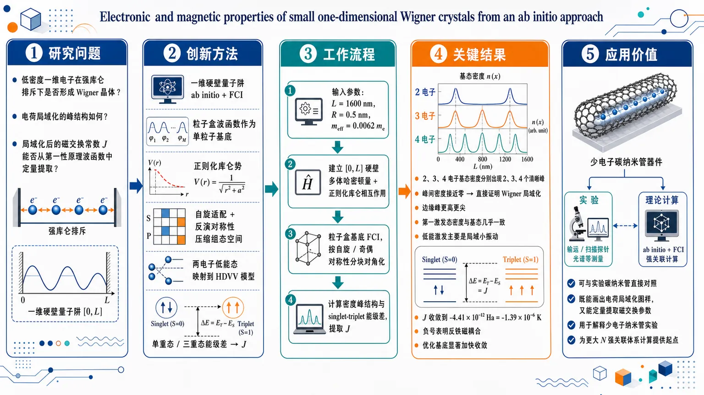
研究问题低密度一维电子在强库仑排斥下是否会形成Wigner晶体？其电荷局域化会呈现怎样的峰结构，而局域化后的磁交换常数J能否直接从第一性原理多体波函数中定量提取？创新方法构建一维硬壁量子阱的ab initio + FCI框架，用粒子盒波函数作为单粒子基底并引入正则化库仑势；再结合自旋适配基和反演对称性压缩组态空间，最后把两电子低能态映射到HDVV模型，用单重态-三重态能级差直接读出交换常数J。工作流程输入碳纳米管对应参数(L=1600 nm，R=0.5 nm，mₑff=0.0062 mₑ₎ → 在[0,L]上建立带硬壁边界的多体哈密顿量并加入正则化库仑相互作用 → 以粒子盒基底做FCI并按自旋/奇偶对称性分块对角化 → 从基态波函数计算电子密度峰结构判断局域化 → 对两电子体系比较singlet与triplet能量差，映射到HDVV模型提取J。关键结果2、3、4电子体系的基态密度分别出现2、3、4个清晰峰，峰间密度接近零，直接证明Wigner局域化；边缘峰更高更尖，第一激发态密度与基态几乎一致，说明低能激发主要是局域小振动；两电子交换常数收敛到J=-4.41×10⁻¹² Ha=-1.39×10⁻⁶ K，负号表明反铁磁耦合，且优化基底可显著加快收敛。应用价值为少电子一维Wigner晶体提供可与实验碳纳米管直接对照的第一性原理工具，既能画出电荷局域化图样，又能定量提取磁交换参数，可用于解释少电子纳米管实验并为更大N强关联体系的计算提供起点。第一部分：核心概览
这篇工作把一维 Wigner crystal 的电子局域化与磁交换问题，统一放进一个ab initio + full configuration interaction (FCI) 框架中处理。核心贡献有两点：其一，在与碳纳米管实验相对应的 1D 硬壁量子阱模型里，直接算出 2、3、4 电子体系的基态密度峰结构，清晰显示 Wigner 局域化；其二，把两电子体系映射到 Heisenberg–Dirac–Van Vleck (HDVV) 模型，提取交换常数 J = -1.39×10⁻⁶ K，并与文献结果达到一致量级。领域地位上，它属于少数把强关联 1D Wigner 晶体的电荷分布与磁交换同时做“第一性原理式”定量刻画的研究。
---
第二部分：结构化快速回顾
《Electronic and magnetic properties of small one-dimensional Wigner crystals from an ab initio approach》（None，）
背景：低密度 1D 电子体系中，库仑排斥可压倒动能，形成 Wigner 晶体；实验上少电子纳米管体系已直接成像局域化电荷分布，但磁交换参数仍缺少统一的 ab initio 提取方案。
方法：用长度 L = 1600 nm 的一维硬壁量子阱模拟碳纳米管；采用粒子盒波函数作为单粒子基底，做 FCI；用对称性分解与自旋适配基降低矩阵规模；再将两电子低能态映射到 HDVV 模型提取 J。
结果：2、3、4 电子体系的基态密度分别呈现 2、3、4 个清晰峰；两电子交换常数收敛到 J = -4.41×10⁻¹² Ha = -1.39×10⁻⁶ K。
讨论：边界硬墙使边缘电子峰更尖锐；第一激发态密度与基态近似相同，反映强局域化下的低能小振动；交换符号为负，对应反铁磁耦合。
局限：当前只做到小 N；交换常数只显式算到 2 电子；硬壁模型与真实纳米管势阱并不完全一致；大 N 时 FCI 计算代价迅速失控。
结论：建立了一个可直接从 ab initio 波函数得到密度分布与磁交换的框架，为更大尺寸 1D Wigner 晶体的相关计算提供起点。
---
第三部分：逐章节冷凝解析
I Introduction
- Wigner 晶体的物理本质
- 低密度下，Coulomb interaction energy dominates over the kinetic one，电子倾向于局域化，形成 Wigner 晶体。
- 历史背景指向 Wigner 1934 年的预测；实验上长期难以直接观察，原因是低密度下无序与测量扰动会破坏晶体序。
- 原文引述：*"This phase is expected to exist at low density, when the Coulomb interaction energy dominates over the kinetic one."*
- 实验动机来自碳纳米管少电子体系
- 研究对象对应 Shapir et al. 2019 的实验：在长度 L = 1600 nm 的碳纳米管中注入 2–6 个电子，并直接探测到电子局域化。
- 这为 1D Wigner 晶体提供了现实实验锚点。
- 原文引述：*"the authors managed to control the injection of few electrons (from 2 to 6) in a carbon nanotube of length L = 1600 nm"*
- 既有理论路线与不足
- 现有工作包括有效现象学模型、exact diagonalization、DFT、Hartree-Fock、semiclassical methods 等。
- 交换耦合在先前已有解析/WKB 研究，但对少电子 1D Wigner 晶体的电荷密度 + 磁交换联合 ab initio 方案仍不充分。
- 原文引述：*"many techniques have been employed to extract properties of few-electron Wigner crystals"*
- 核心研究思路
- 用描述 N 个相互作用电子 的 ab initio 哈密顿量，在长度 L 的一维势阱中求本征态。
- 采用 FCI 保证给定基组内的全部电子关联都被保留。
- 从基态波函数提取密度，从激发态能级差映射出交换常数 J。
- 原文引述：*"This ensures that we capture all the electron correlation for a given basis set."*
- 预期物理图景
- 密度应出现 N 个峰，表示电子局域在平衡位置。
- 一维 Wigner 晶体的低能自旋结构预期是反铁磁，因此可映射到 HDVV Hamiltonian。
- 原文引述：*"a 1D Wigner crystal has an antiferromagnetic spin order"*
- 本文目标
- 一是定量算出少电子 1D Wigner 晶体的电子密度分布；
- 二是提出一个由 ab initio 结果提取 exchange coupling J 的简单方法；
- 三是先在 Wigner dimer 上验证。
- 原文引述：*"We illustrate our approach on a Wigner dimer."*
---
II Theory
#### II.1 Numerical method for the study of small one-dimensional Wigner crystals
- 模型几何与物理参数
- 体系模拟一个碳纳米管：L = 1600 nm, R = 0.5 nm，满足 R/L ≪ 1，因此可用 1D 模型。
- 电子有效质量采用实验带结构得到的 mₑff = 0.0062 mₑ。
- 有效玻尔半径 a_B = 8.5 nm，无量纲耦合参数 λ = L/a_B = 188.235，表明处于强耦合区。
- 原文引述：*"Since R/L łl 1 we model this system using a 1D many-body Hamiltonian with infinite side barriers."*
- 哈密顿量形式
- 采用
[
hat H = -frachbar²2mₑffsumᵢ partialz_ᵢ² + frace²2sumᵢₙₑ ⱼV(zᵢ₋zⱼ₎
]
且粒子被限制在 [0, L]。
- 硬壁边界条件要求多体波函数在任一坐标越界时为零。
- 原文引述：*"the eigenfunctions... have to vanish if at least one of the coordinates... is ≤ 0 or ≥ 1"*
- 正则化库仑势
- 1D 中直接使用 1/|zᵢ₋zⱼ| 会在粒子重合处出现不可积奇点，因此引入纳米管有限半径对应的regularized Coulomb potential。
- 该势在 |zᵢ₋zⱼ|/R ≫ 1 时回到 1/|zᵢ₋zⱼ|；在 |zᵢ₋zⱼ|/R ≪ 1 时变成对数型可积奇点。
- 原文引述：*"the regularized Coulomb potential tends to the standard Coulomb potential as it should."*
- FCI 表达
- 以 Slater determinants 展开多体本征函数：
[
Ψₙ₌sum_K cₙKΦ_K
]
- 单粒子基底选用满足边界条件的 particle-in-a-box wave functions：
[
ḩiₙ₍ₓ₎₌sqrt2sin(nπ x)
]
- 原文引述：*"This choice ensures that the boundary conditions imposed on the many-body wave functions are automatically satisfied."*
- Slater–Condon 规则分块
- 两体哈密顿量矩阵元按四类 Slater determinant 差异关系分块：完全相同、差一个轨道、差两个轨道、差超过两个轨道。
- 差超过两个轨道时矩阵元为零。
- 原文引述：*"Since the many-body Hamiltonian is a two-body operator, it is convenient to split these matrix elements... into four classes"*
- 二体积分定义
- 定义
[
A[m,n,p,q]=2łambdaint₀¹dx₁ᵢₙₜ₀¹dx₂,V(x₁₋ₓ₂₎ψₘ₍ₓ₁₎ψₙ₍ₓ₂₎ψₚ₍ₓ₁₎ψ_q(x₂₎
]
- 这是一切相互作用矩阵元的核心数值对象。
- 原文引述：*"The general expressions of ⟨Φ_K|hat H|Φ_L⟩... are given by..."*
#### II.2 Spin adaption of the basis
- 为何需要自旋适配
- 在强关联极限下，不同自旋对称性的本征态可能近简并；数值误差会导致unphysical mixing。
- 通过按自旋对称性分块，能避免这种混合并大幅降低矩阵维度。
- 原文引述：*"unphysical mixing of wave functions with different spin symmetries can occur in calculations of Wigner crystals."*
- 自旋单重态与三重态的基函数
- 两电子情形下，单重态空间部分对称、自旋部分反对称；三重态相反。
- 单重态基函数：
[
Ψ^Sₘ,ₙpropto (ψₘ₍ₓ₁₎ψₙ₍ₓ₂₎₊ψₙ₍ₓ₁₎ψₘ₍ₓ₂₎₎₍αβ-βα)
]
- 三重态基函数：
[
Ψ^Tₘ,ₙpropto (ψₘ₍ₓ₁₎ψₙ₍ₓ₂₎₋ψₙ₍ₓ₁₎ψₘ₍ₓ₂₎₎₍αβ+βα)
]
- 原文引述：*"the singlet wavefunctions are symmetric in the exchange of the spatial coordinates and anti-symmetric with respect to the exchange of spin coordinates"*
- 单重态/三重态矩阵元
- 给出单重态与三重态的显式矩阵元公式，便于分别对角化。
- 单重态中出现 A[m,n,p,q] + A[m,n,q,p]；三重态中出现 A[m,n,p,q] - A[m,n,q,p]。
- 原文引述：*"the eigendecomposition of the full Hamiltonian thus decouples into several smaller eigendecompositions, one for each spin symmetry."*
- 利用反演对称性进一步降维
- 哈密顿量关于 x = 0.5 具有反演对称性。
- 当 m+n 与 p+q 奇偶性不同，某些二体积分严格为零。
- 这使得地态单重态只需保留 m+n 为偶 的基函数，最低三重态只需保留 m+n 为奇 的基函数。
- 原文引述：*"This symmetry guarantees that A[m,n,p,q] vanishes when m + n is even and p + q is odd"*
- 优化基底的雏形
- 进一步从数值谱中识别出系数满足的层级不等式，提前筛选最重要的 Slater determinants。
- 原文引述：*"we established a criterion that selects a priori the most relevant Slater determinants at any value of the coupling strength."*
#### II.3 The density distribution
- 密度算符定义
- 基态密度由
[
h̊o₀₍ₓ₎₌łangleΨ₀|hath̊o(x)|Ψ₀ångle,quad hath̊o(x)=sumᵢδ(x-xᵢ₎
]
给出。
- 原文引述：*"The electronic density distribution is a quantity that allows us to study the localization of the electrons in the quantum well."*
- FCI 波函数下的密度展开
- 密度分成对角项与非对角项两部分：
[
h̊o₀₍ₓ₎₌sum_K c₀K²łangleΦ_K|hath̊o(x)|Φ_Kångle+sumKₙₑ Lc₀Kc₀LłangleΦ_K|hath̊o(x)|Φ_Långle
]
- 一体算符的 Slater–Condon 规则只保留：同一 determinant、只差一个轨道的 determinant。
- 原文引述：*"Since the density operator is a one-body operator we can use the Slater-Condon rules for one-body operators"*
- 密度矩阵元的三类情况
- 完全相同 determinant：(sumψ_ₙᵢₙΦ_Kḩiₙ²⁽x))
- 只差一个 spinorbital：((-1)^Qḩiₘ₍ₓ₎ḩiₚ₍ₓ₎δσ_ₘ,σ_ₚ)
- 差超过一个 spinorbital：零
- 这直接决定了密度计算的稀疏结构。
- 原文引述：*"for these three cases are given by"*
#### II.4 The magnetic exchange coupling
- HDVV 模型作为低能自旋模型
- 局域化电子的低能物理由 Heisenberg–Dirac–Van Vleck (HDVV) 模型描述：
[
hat HHDVV=-sumᵢ,ⱼJᵢⱼhat Sᵢḑothat Sⱼ
]
- 原文引述：*"The low energy properties of a system of localized interacting spins can be captured by the Heisenberg-Dirac-Van Vleck (HDVV) model."*
- J 的物理意义
- J < 0 对应反铁磁耦合；
- J > 0 对应铁磁耦合。
- 对 1D Wigner 晶体，近邻相互作用占主导，故简化为统一的最近邻 J。
- 原文引述：*"we assume that only nearest neighbors have non-zero coupling constants and that all these coupling constants have the same value."*
- 交换常数的提取逻辑
- ab initio 哈密顿量与 HDVV 哈密顿量都与 Ŝ² 对易，因此可比较不同总自旋扇区的能量差。
- 两电子情形下，singlet–triplet splitting = J。
- 原文引述：*"By comparing the energy differences of two spin states obtained from diagonalizing hat H and hat HHDVV we can obtain J."*
---
III Results
#### III.1 Electron localization
- 计算对象与基组规模
- 密度计算针对 N = 2, 3, 4 电子体系。
- 基组截断分别取：
- N=2：n=63，7875 个 Slater determinants
- N=3：n=29，30856 个 Slater determinants
- N=4：n=17，46376 个 Slater determinants
- 原文引述：*"In the case of N = 2 we used n = 63... while for N = 3 and N = 4 we used n = 29 and n = 17, respectively"*
- 密度峰数与电子数一一对应
- 2、3、4 电子体系的基态密度分别出现 2、3、4 个明显峰。
- 峰与峰之间存在密度接近于零的深谷，直接证明电子被局域化。
- 原文引述：*"We clearly observe the localization of the electrons in the quantum well from the number of peaks in each spectrum"*
- 边缘峰更高更尖
- 靠近边界的峰比中间峰更大、更锐利。
- 原因是hard walls 把边缘电子压向势阱边界，而强库仑排斥进一步强化这一效应。
- 原文引述：*"the peaks at the border of the system are bigger and sharper than the central peaks."*
- 激发态密度几乎不变
- 第一激发态的密度与基态几乎相同。
- 这说明低能激发主要是围绕平衡位置的微小振动，而不是重新分布电子位置。
- 原文引述：*"the density distributions of the first excited states are almost identical to that of the ground state."*
#### III.2 The exchange coupling constant
- 两电子 HDVV 形式
- 对 2 电子体系，HDVV 哈密顿量写成
[
hat HHDVV=-Jhat S₁ḑot hat S₂
]
- 在 (|p̆arrowp̆arrowångle, |p̆arrowdownarrowångle, |downarrowp̆arrowångle, |downarrowdownarrowångle) 基下，矩阵显式写出。
- 原文引述：*"It is convenient to represent hatHHDVV in the spin basis given by..."*
- 单重态-三重态能级关系
- 对角化后得到：
- Singlet energy：(E_S=frac34J)
- Triplet energy：(E_T=-frac14J)
- 因此：
[
J=E_S-E_T
]
- 原文引述：*"The singlet-triplet splitting is thus equal to the exchange constant J"*
- 数值收敛结果
- 随基组大小 n 增加，J 收敛。
- 收敛值：
[
J=-4.41×10⁻¹² Ha = -1.39×10⁻⁶ K
]
- 原文引述：*"at convergence its value is given by J = -4.41·10⁻¹² Ha = -1.39·10⁻⁶ K."*
- 与文献对比
- 与 Shapir et al. 2019 的 J = -1.9×10⁻⁶ K 同量级，差异可由势阱模型与提取方式不同解释。
- 原文引述：*"The discrepancy in the results can be due to the Hamiltonian used in Ref. Shapir et al. (2019)"*
- 符号的物理含义
- J < 0 表明该体系的自旋耦合为反铁磁，与 1D Wigner crystal 的预期一致。
- 原文引述：*"Jᵢ,ⱼ<0 implies an anti-ferromagnetic coupling"*
---
IV Conclusion
- 方法学总结
- 形成了一个从头算框架，用于少电子 1D Wigner crystals 的电子与磁性质研究。
- 用长度 L=1600 nm 的硬壁量子阱模拟碳纳米管实验。
- 原文引述：*"We developed an approach to study one-dimensional Wigner crystals with few electrons from first principles."*
- 主要结论 1：局域化明确
- FCI 密度结果清晰显示电子局域化，峰数与电子数一致。
- 原文引述：*"We calculated the electronic density distribution from which we clearly observed the localisation of the electrons in the Wigner crystals."*
- 主要结论 2：交换常数可提取
- 通过 HDVV 映射，从 ab initio 结果中提取 J 可行。
- 两电子例子与文献结果一致性良好。
- 原文引述：*"We also developed an approach based on the Heisenberg-Dirac-Van Vleck (HDVV) model to extract the exchange coupling constant from our ab initio calculations."*
- 未来方向
- 计划推广到 2 电子以上体系的交换常数计算。
- 需要构造更一般的自旋适配基。
- 对很多电子体系，FCI 会变得不可承受，需转向更高效的相关方法。
- 原文引述：*"for many electrons the full-configuration approach becomes prohibitive"*
---
V Acknowledgments
- 资助信息
- CNRS MITI interdisciplinary programs 提供资助。
- ANR 资助编号 ANR-22-CE29-0001。
- 这部分不涉及物理结论，但说明研究由法国国家级项目支持。
- 原文引述：*"This project has received financial support from the CNRS through the MITI interdisciplinary programs."*
---
Appendix A Optimized basis
- 反演对称性导致的选择规则
- 哈密顿量关于 x=0.5 具有反演对称性。
- 由于单粒子基函数 n 为奇/偶 时分别对应对称/反对称，二体积分满足：
- i+j 偶 且 k+l 奇 时为零
- i+j 奇 且 k+l 偶 时为零
- 原文引述：*"the matrix elements A[i,j,k,l]... have the following properties"*
- 单重态与三重态的基底奇偶筛选
- 基态单重态只需考虑 m+n 偶 的 spin-adapted singlet 函数。
- 最低三重态只需考虑 m+n 奇 的 spin-adapted triplet 函数。
- 这把对角化空间进一步压缩。
- 原文引述：*"the ground-state wave function... is written in terms of spin-adapted singlet functions... that satisfy the condition that m + n has to be even."*
- 系数链不等式与优化基底
- 数值上发现单重态与三重态展开系数满足一系列链式不等式，且这种排序对任意 λ 都成立。
- 因而可按系数重要性预先筛选 Slater determinants，构造 optimized basis。
- 原文引述：*"we established a criterion that selects a priori the most relevant Slater determinants at any value of the coupling strength."*
- 优化基底的实际效果
- 在 λ = 188.235 下，优化基底比标准自旋适配基底更快收敛到同一 J。
- 以 650 个 Slater determinants 时得到收敛红虚线值。
- 原文引述：*"the optimized basis allows to reach faster the numerical convergence than the spin-adapted basis."*
---
第四部分：深度理解与语言支持
1) 术语解析
- Wigner crystallization
- 含义不是“普通晶体结构”，而是低密度极限下，电子因库仑排斥强于动能而形成的空间局域有序。
- 微妙差别：这里“crystal”指电荷位置的准晶格化，不一定有真实离子晶格背景。
- Full configuration interaction (FCI)
- 不是近似地选少量组态，而是在给定单粒子基底内把所有 Slater determinants 全部纳入。
- 微妙差别：它在“固定基组”意义下是精确的，但仍受基组截断限制。
- Spin-adapted basis
- 把基函数按总自旋对称性组合成单重态、三重态等，避免不同自旋扇区混杂。
- 微妙差别：它不仅提升效率，还避免强关联近简并下的numerical symmetry breaking。
- Exchange coupling constant
- 不是简单的“相互作用强度”，而是把两电子（或多电子）低能自旋相对翻转代价编码进一个有效常数 J。
- 微妙差别：它来自高能电荷自由度被积分掉后的低能有效描述。
- Heisenberg–Dirac–Van Vleck (HDVV) Hamiltonian
- 是最标准的局域自旋模型，描述局域磁矩之间的交换耦合。
- 微妙差别：这里不是从一开始就假设电子“只有自旋没有轨道”，而是先由 ab initio 结果证明电子已局域，再做低能映射。
2) 疑难查证与深入解释
- 为什么边缘峰更高？
- 硬壁边界把波函数压到区间内部，最外侧电子没有外侧邻居可继续“向外推”，于是更容易贴近边界形成更尖峰。
- 再叠加强库仑排斥，边缘位置成了低能平衡点之一，因此边缘峰通常更高更窄。
- 为什么第一激发态密度几乎不变？
- 在强 Wigner 局域极限，低能激发主要不是“电子换位置”，而是围绕平衡点的小幅振动或自旋重排。
- 密度是对位置分布的平均，因此对这类激发不敏感，常只出现轻微变化。
- 为什么只用两电子就能定义 J？
- 对两局域自旋，HDVV 模型最简单，只有一个交换常数。
- singlet 与 triplet 的能量差直接就是 J，没有多体网络中那种多个耦合常数的歧义。
- 这也是把 ab initio 结果映射到有效磁模型最干净的情形。
- 为什么 FCI 对很多电子不现实？
- Slater determinant 数量随基组规模和电子数呈组合爆炸增长。
- 文中已经显示：即便 N=4，只用 n=17 就要处理 46376 个 determinants；更大 N 会迅速失控。
- 这也是后续必须引入更高效相关方法的根本原因。
---
第五部分：创新评估与关联
1) 创新性判断
- 把两类目标统一到同一 ab initio 框架
- 过去 2–5 年相关工作中，常见路线是：
- 只算密度/局域化（如 2021、2024 的 ab initio Wigner localization 研究）；
- 或只研究交换耦合（如 2025 的 Wigner dimer 交换问题）；
- 或依赖有效模型/半经典方法，而非直接从多体波函数提取。
- 这里的独特之处在于：同一套 FCI + 1D hard-wall + regularized Coulomb 框架同时给出电荷局域化与磁交换常数。
- 更接近实验几何的少电子纳米管建模
- 直接把实验的碳纳米管场景压缩成 L=1600 nm, R=0.5 nm 的 1D 量子阱，并用实验带结构确定 mₑff = 0.0062 mₑ。
- 相比纯现象学模型，这一步提升了参数可追溯性。
- 交换常数提取方法更直接
- 不是借助复杂有效 SU(4) 模型或纯数值拟合，而是通过 ab initio 能级差 ↔ HDVV 单重态/三重态 splitting 直接定义 J。
- 这种映射逻辑更透明，也更适合后续扩展到更多电子。
- 自旋适配 + 优化基底策略
- Appendix A 给出的奇偶选择规则与系数排序，实质上形成了一种面向强关联系统的低成本截断策略。
- 这不只是数值技巧，而是把对称性与经验系数结构合并成可复用的降维方案。
2) 解决了前人没解决的问题
- 少电子 1D Wigner 晶体的“电荷 + 磁性”联合定量刻画
- 过去常见做法要么只看局域化，要么只看交换；这里两者都给出 ab initio 证据链。
- 在强关联近简并下避免自旋态混杂
- 对 Wigner 晶体这类近简并体系，直接全空间对角化容易出现非物理的自旋混合。
- 自旋适配基底与奇偶规则有效处理了这个问题。
- 把实验可观测量与多体理论连接起来
- 密度峰结构可对应实验成像；
- J 可对应低温磁响应与有效自旋模型参数。
- 这使模型不只“能算”，还“能对照实验”。
如果需要，还可以继续把这篇论文整理成：
- 一页式精读笔记，
- 公式—物理意义对照表，或
- 适合汇报的PPT提纲。
-
15
📊 含图深析
📄 摘要：我们对半填充平方晶格 SU(N) 对称双通道 Kondo 晶格模型进行了大规模、无符号问题的行列式量子蒙特卡罗模拟。我们绘制了 N = 2、4、6 和 8 时，作为 Kondo 耦合强度函数的零温相图。在弱耦合区域，我们观察到局域磁矩的反铁磁有序。值得注意的是，对于 N ≥ 6，足够强的 Kondo 耦合会诱导自发通道对称性破缺，形成一个波矢 k=(π,0) 的条纹二聚化图案，并在通道之间交替。这些发现得到互补的大 N 鞍点分析支持，该分析将条纹杂化图案识别为能量上优选的构型。空间对称性破缺导致各向异性的费米面重构。
📖 英文原文
arXiv:2509.12311v2 Announce Type: replace Abstract: We carry out large-scale, sign-problem-free determinant quantum Monte Carlo simulations of the square lattice SU(N)-symmetric two-channel Kondo lattice model at half-filling. We map out the zero-temperature phase diagram for N = 2, 4, 6, and 8, as a function of the Kondo coupling strength. In the weak-coupling regime, we observe antiferromagnetic order of the localized moments. Remarkably, for N ≥ 6, sufficiently strong Kondo coupling induces spontaneous channel symmetry breaking, forming a stripe dimerization pattern with a wave vector boldsymbolk=(π,0) alternating between channels. These findings are supported by a complementary large-N saddle point analysis, which identifies the striped hybridization pattern as the energetically preferred configuration. The spatial symmetry breaking results in an anisotropic Fermi surface reconstruction.
💡 亮点：本文对半填充平方晶格 SU(N) 对称双通道 Kondo 晶格模型进行了大规模无符号问题行列式量子蒙特卡罗模拟。作者绘制了 N=2、4、6、8 时随 Kondo 耦合强度变化的零温相图，弱耦合区出现局域矩反铁磁序。对于 N≥6，强 Kondo 耦合诱导自发通道对称性破缺，形成波矢为 (π,0) 的条纹二聚化图案，并伴随各向异性的费米面重构。
🔬 与我们研究方向的关系
📐 方法要点：方法上，这篇工作可归入热力学知情 ML、机器学习势、自由能采样、CALPHAD/团簇展开。从摘要能确认的线索包括：蒙特卡洛统计采样，以及铁电/多铁、极化翻转和电场驱动过程, 磁性、自旋以及自旋—晶格耦合对应的结构或物理量。若迁移到团队流程，应采用“在 DFT 能量/力/应力之外加入跨温度构型、相对自由能、熵或热膨胀信息；用主动学习补采相变、畴壁和相竞争区域，再用热力学积分、MC 或有限温度 MD 验证”的分层验证，而不是只比较单点能量或单一回归误差。还需核对原文的训练数据规模、损失函数、边界条件和误差分解，才能判断其是否适合团队的材料模拟任务。
🔗 相关工作关联：它与五位研究人员已有工作的直接连接是：热力学知情 ML、机器学习势、自由能采样、CALPHAD/团簇展开已经出现在团队的方向画像中，可对应到HfO₂ 基铁电、二维滑移铁电、钙钛矿和磁性氧化物。与传统只做 0 K formation energy/静态势垒的工作相比，这里更应关注铁电/多铁、极化翻转和电场驱动过程, 磁性、自旋以及自旋—晶格耦合在温度、缺陷、应变或外场下的变化；摘要没有给出的模型细节不作延伸判断。这种联系应通过同一材料体系上的独立基准和跨分布测试确认，不能仅凭方法名称或期刊来源下结论。
💡 对你方向的启示：对当前研究最具体的启示不是泛泛地“使用 ML”，而是把该文的热力学知情 ML、机器学习势、自由能采样、CALPHAD/团簇展开嵌入现有材料模拟链：先在HfO₂ 基铁电、二维滑移铁电、钙钛矿和磁性氧化物中选择一个已有 DFT 数据基础的体系，按“在 DFT 能量/力/应力之外加入跨温度构型、相对自由能、熵或热膨胀信息；用主动学习补采相变、畴壁和相竞争区域，再用热力学积分、MC 或有限温度 MD 验证”补充训练/验证集，再比较《SU(N) 对称双通道 Kondo 晶格模型中的反铁磁性与条纹通道序》对应模型对相稳定、极化/磁序、缺陷或动力学指标的改进。若结果只在训练分布内有效，应通过跨温度、跨应变、跨缺陷浓度和跨超胞测试检查可迁移性。第一步可以选取团队已有的 HfO₂、二维磁体、半导体缺陷或钙钛矿数据做小样本试验，再决定是否扩大到生产级计算。
📖 展开分析 + 配图
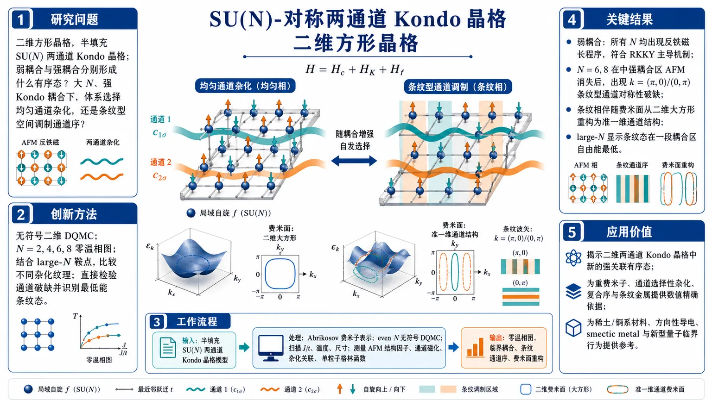
研究问题二维方形晶格、半填充条件下的 SU(N) 对称两通道 Kondo 晶格，弱耦合与强耦合分别会形成什么有序态？尤其是大 N、强 Kondo 耦合时，体系究竟选择均匀通道杂化，还是更复杂的空间调制通道序？创新方法采用无符号问题的二维 DQMC，对 N=2、4、6、8 做数值精确零温相图；再结合 large-N 鞍点分析比较不同杂化纹理。Aha 点在于：不仅检验“是否通道破缺”，还直接识别出强耦合区最低能态是 k=(π,0)/(0,π) 的条纹型通道序，而非传统均匀 ferrochannel。工作流程输入：半填充 SU(N) 两通道 Kondo 晶格模型，方形晶格，局域自旋与两条通道电子通过 Kondo 交换耦合；处理：Abrikosov 费米子表示局域自旋，DQMC 在 even N 下无符号模拟，扫描 J/t、温度和系统尺寸，并测量 AFM 结构因子、通道磁化、杂化关联与单粒子格林函数；输出：零温相图、临界耦合、条纹通道序及其费米面重构特征。关键结果弱耦合下所有研究的 N 都出现反铁磁长程序，符合 RKKY 主导机制；N=6、8 在中等到强耦合区 AFM 消失后，出现 k=(π,0)/(0,π) 的条纹型通道对称性破缺；条纹相伴随明显费米面重构，由大而方的二维费米面变成准一维通道结构；large-N 结果表明条纹态在一段耦合区内自由能最低。应用价值揭示二维两通道 Kondo 晶格中一种此前缺失的强关联有序态，为重费米子、通道选择性杂化、复合序与条纹金属提供数值精确依据；对理解具有通道自由度的稀土/锕系材料，以及寻找方向性导电、smectic metal 和新型量子临界行为有直接参考价值。第一部分：核心概览
这项研究给出二维 square lattice、半填充、SU(N) 对称两通道 Kondo lattice model的零温相图，采用无符号问题的 DQMC 得到数值精确结果，并结合 large-N 解析。核心发现是：弱耦合下所有 (N) 都出现局域矩的反铁磁序；当 (Nge 6) 且 Kondo 耦合足够强时，体系不走常规的均匀 ferro-channel 混合，而是进入一种(k=(π,0)/(0,π)) 的条纹型通道对称性破缺相。这一条纹混合导致各向异性的费米面重构，并在二维中补足了此前主要依赖 1D/无限维/large-N 的相图认知空白。
---
第二部分：结构化快速回顾
《Antiferromagnetism and Stripe Channel Order in the SU(N)-Symmetric Two-Channel Kondo Lattice Model》（None，）
背景：两通道 Kondo 晶格是重费米子、复合序与通道选择性杂化的重要模型，但二维中缺少数值精确相图。
方法：在 half-filling 下做sign-problem-free DQMC，研究 (N=2,4,6,8)；并用 large-N saddle point 比较不同杂化纹理。
结果：弱耦合下普遍出现AFM；(Nge 6) 时强耦合触发stripe channel order，波矢为 ((π,0)/(0,π))；费米面被重构为准一维通道。
讨论：stripe 相比先前常讨论的 ferrochannel 更低能；小的通道不对称会先增强均匀分量，但 stripe 仍稳定到一定阈值。
局限：仅限半填充、偶数 (N)、有限系统尺寸；large-N 忽略横向通道波动，且强耦合区与 QMC 不完全一致。
结论：二维 SU(N) 两通道 Kondo 晶格在强耦合大 (N) 区域支持一种条纹型通道序，并伴随显著的费米面重构。
---
第三部分：逐章节冷凝解析
Introduction—
问题背景与领域空缺
Kondo lattice model 被视为强关联电子的核心模型，覆盖重费米子、超导、量子临界与分数量子液体等现象；两通道版本进一步引入channel index，允许通道选择性杂化与通道对称性自发破缺。原文直接指出：*“the phase diagram using numerically exact techniques in dimensions greater than 1 remains an outstanding problem”*。这句话界定了整篇工作的空白：二维及以上维度中，两通道 Kondo 晶格的精确相图仍未被解开。
已有理论图景与实验动机
两通道 Kondo 晶格已被用于解释 UBe(₁₃)、URu(₂)Si(₂)、Pr 基 1-2-20 材料等体系；理论上，large-N、1D DMRG、无限维 DMFT 已给出 channel symmetry breaking、unconventional superconductivity、topological Kondo insulator 等可能性。关键限制在于：二维数值精确方法仍稀缺。原文强调：*“resolving the phase diagram using numerically exact techniques in dimensions greater than 1 remains an outstanding problem”*。
本研究的目标定位
研究对象是 half-filled、square lattice 上的 SU(N)-symmetric 2CKLM，取 (N=2,4,6,8)，用 sign-problem-free DQMC 追踪零温相图。目标不是只确认 AFM 或杂化，而是判断：强 Kondo 耦合下到底是ferrochannel、antiferrochannel，还是更复杂的空间调制通道序。
---
The model—
哈密顿量结构
模型由两部分组成：一是 itinerant (c) 电子的最近邻跃迁 (t)，二是每个格点上 (c) 电子与局域自旋 (f) 的 Kondo 交换 (Jₐ)。通道指标 (a=1,2)，且“Interchannel hopping is forbidden by construction”，因此两通道之间没有直接跃迁，只通过局域 Kondo 耦合竞争。
对称性与填充条件
模型同时保持 SU(N) spin symmetry、U(1) particle-number symmetry 和 SU(2) channel symmetry。在 half-filling 时，化学势为零，局域费米子满足 (nᵢ^f=N/2)。这一填充既保证了弱耦合下的 RKKY 反铁磁机制，也使偶数 (N) 情形下 DQMC 无符号问题。
弱耦合极限：RKKY 反铁磁
在 (J/tłl 1) 时，Kondo 耦合诱导的有效相互作用是 RKKY，half-filling 下“purely antiferromagnetic”，因此预期出现 AFM。该机制在结果中被直接验证：所有研究的 (N) 都在弱耦合区出现局域矩反铁磁有序。
强耦合极限：通道选择性杂化的先验图景
在 (J/tgg 1) 时，先前 large-N 工作预期局域自旋与某一通道的 itinerant 电子形成 singlet，导致通道对称性破缺。原文提到：“selective formation of singlets between localized spins and itinerant electrons belonging to one of the channels”。这类图景通常对应半金属/半绝缘或均匀 ferrochannel 混合，但本研究最终发现更复杂的条纹型方案。
Abrikosov 费米子表示
数值实现采用完全反对称的 Abrikosov fermion 表示，并通过 (U_f) 项强制约束 (nᵢ^f=N/2)。文中明确给出 (U_f/t=4)，并验证足以实现 half-filling 约束。这个设定把局域自旋映射成约束费米子，是后续 DQMC 的基础。
---
Numerical simulations—
算法与无符号问题条件
使用的是 numerically exact 的 DQMC。关键条件是：在 half-filling 且 even (N) 时，模型“is free of the numerical sign problem”。这使得 (N=2,4,6,8) 的二维模拟可行，也使结果具有非微扰的可信度。
系统规模与零温外推
线性尺寸最大到 (L=18)。零温极限通过逐步降低温度检查可观测量收敛来建立，经验上 (tβ ge 4L) 足以覆盖所有 (J/t) 比值。Trotter 步长 (ϵ) 也经过收敛性验证，误差控制在误差条内。
实现细节
模拟使用 ALF library。该库用于辅助场量子蒙特卡洛，适合处理多体费米系统的虚时间演化与热力学量测。
局限性的埋点
由于符号问题，模拟被限制在 half-filling；这意味着 doped 情形、奇数 (N)、以及破坏 particle-hole symmetry 的改动无法直接用同一套 DQMC 处理。
---
Observables—
反铁磁序参数的定义
AFM 通过局域矩自旋-自旋关联函数 (S_f(k,L)) 测量，重点取 (k=(π,π))。序参量 (m_f(k)) 由 (S_f) 在热力学极限下开方定义，并归一化到 (N²⁻¹)。这直接检验局域矩是否形成 Néel 型长程序。
通道磁化与杂化不对称
通道对称性破缺通过“channel magnetization”刻画，实质上测量两条通道在与局域 (f) 态形成 singlet 方面的差异。文中明确指出：“The z component of (ěc Mᵢ) measures the imbalance between singlet formation across channels.” 这一定义把通道序和杂化序直接绑定，而不是单纯的电子密度不均匀。
条纹型序参量
通道对称性破缺的二体关联函数 (D(k,L)) 在动量空间分析，序参量 (d(k)) 对应热力学极限下的 dimer / hybridization order。对 (kₓne k_y) 时，还把 (C₄) 等价构型求和，避免人为偏向某一方向。后续 stripe 相正是通过 (k=(π,0)) 或 ((0,π)) 的峰值被识别出来。
---
Numerical results—
弱耦合下普遍存在 AFM
图 2 的外推结果显示，(J/tłl 1) 时，(N=2,4,6,8) 全部存在有限 AFM order。原文直述：“we find a finite AFM order for all N values”。这与 half-filling 下 RKKY 主导的预期完全一致。
(N=2,4) 的 AFM 异常稳健
对 (N=2) 和 (N=4)，AFM 关联可一直持续到相当大的 Kondo 耦合，甚至达到 (J/t=8.2)。在所考察范围内，没有发现任何波矢上的长程序通道磁化。结论很明确：低 (N) 情形中，AFM 压制了 channel-order 的形成。
(N=6,8) 的 AFM 消失阈值
当 (N=6) 与 (N=8) 时，AFM 在有限耦合处消失，临界点分别为 (J_cm̊ AFM/t=1.6(1)) 与 (2.0(2))。这为后续通道对称性破缺打开了窗口：AFM 一旦退场，Kondo 杂化更容易重组。
发现的是条纹型通道序，不是均匀序
在 AFM 退场后，原本预期出现的通道磁化没有以 uniform 或 staggered 形式出现，而是在 (k=(0,π)/( π,0)) 处最强。原文写得非常直接：“Unexpectedly, we observe channel-symmetry-breaking order at wave vectors k = (0, π)/(π, 0), indicating a π-modulated stripe order phase。”这与既有“ferrochannel”或“antiferrochannel”设想不同。
条纹序的临界耦合与相变性质
对 stripe order 参数 (d[(π,0)])，估计 (N=6) 和 (N=8) 的临界值分别为 (J_cm̊ strⁱpe/t = 1.8(2)) 与 (1.3(1))。(N=6) 的转变表现为明显跳变，提示 first-order；(N=8) 在数值分辨率内出现 AFM 与 stripe 的共存。
通道不对称扰动下的稳定性
施加显式通道失衡 (J₁₌J,; J₂₌J-Δ J) 后，在 (N=6,; J/t=2.4) 的 stripe 区域，stripe 先保持稳定，均匀 ferrochannel 分量仅弱增强；只有当 (Δ J/J=0.025(5)) 时，stripe 被破坏并转为偏向第一通道的选择性杂化。这个阈值给出 stripe 相对显式对称性破缺的韧性。
large-N 数值/解析对照
large-N 计算支持 stripe channel order 的稳定区间：当 (J/tłe 3.23) 时，stripe 混合态自由能最低。图 3 显示，这一结果与 DQMC 在中等耦合区的 stripe 发现一致。更大 (J/t) 下，large-N 转而偏好 uniform ferrochannel，但这一高耦合倾向并未在 QMC 中直接看到。
费米面重构的直接证据
通过 (G_c(k,τ=β/2)) 的单粒子残余和 large-N 的谱函数 (A(k,ømega))，AFM 相中的“大而方形”的费米面在 stripe 相中重构为准一维金属通道。原文总结为：“the Fermi surface evolves from a large, square-lattice-like Fermi surface in the AFM phase into a reconstructed Fermi surface that matches the one obtained from the stripe hybridization pattern。”这给出通道条纹序的单粒子谱学签名。
---
Summary and discussion—
主结论的重申
二维 half-filled SU(N) 两通道 Kondo 晶格的零温相图由两类主相组成：弱耦合 AFM 与强耦合条纹型通道破缺相。对于 (Nge 6)，相变是从 AFM 走向 (k=(π,0)/(0,π)) 条纹杂化，而非先前常讨论的 uniform ferrochannel。
large-N 与 DQMC 的互补性
large-N 在一段耦合区内与数值结果一致，并给出条纹态为何在能量上优于 ferrochannel 的机制。原文强调：*“the stripe channel order has the lowest free energy”*。同时，large-N 也暴露出高耦合区与 QMC 的差异，提示 (1/N) 修正的重要性。
与单通道 KLM 的对照
单通道 KLM 中，DQMC 对偶数 (N) 的结果通常与 SU(N) mean-field 平滑对应；两通道情形更复杂，因为同时存在 SU(2) channel symmetry 和 SU(N) spin symmetry。large-N saddle point 不包含横向于量子化轴的通道涨落，因此无法完整捕捉条纹“摆动”与 smectic 金属物理。
Goldstone 模式与 smectic metal 关联
条纹通道破缺后会出现 channel-wave Goldstone modes，对应条纹的 meandering。这个结构与高温超导中提出的 smectic metal 图景高度相似，说明这里得到的不是普通的均匀 Kondo 杂化，而是有方向性的一维导电通道网络。
实验可观测性
重
-
16
📊 含图深析
📄 摘要：arXiv:2607.26289v1 公告类型：新。摘要：偶极磁斯格明子可以组装成具有交替螺旋性的链，表现为一维聚合物，但其统计力学违反了在肌动蛋白、DNA和微管中观察到的普适谐性标度。我们从第一性原理出发计算斯格明子间成对势，并发现其具有竞争相互作用的双指数形式，包含两个特征衰减长度，编码排斥和吸引的不同微观机制。多尺度模拟揭示出一种幂律温度依赖性：在单个键的蠕虫链极限中指数为1，而在三键极限中指数为1/2。我们发现，该幂律行为显著地不依赖于磁场强度，而这种交叉源于负责形成键的竞争性径向相互作用，从而导致四次横向限域。我们表明，竞争相互作用的具体形式（例如Morse势或双Yukawa势）并不影响温度依赖性。
📖 英文原文
arXiv:2607.26289v1 Announce Type: new Abstract: Dipolar magnetic skyrmions can assemble into chains with alternating helicity that act as one-dimensional polymers, yet their statistical mechanics violates the universal harmonic scaling observed in actin, DNA, and microtubules. From first principles, we compute the inter-skyrmion pair potential and find a bi-exponential form of competing interactions with two characteristic decay lengths that encode the distinct microscopic mechanisms of repulsion and attraction. Multiscale simulations reveal a power-law temperature dependence with exponent 1 in the worm-chain limit of a single bond, and exponent 1/2 in the three-bond limit. We find that the power-law behavior is remarkably independent of magnetic field strength, and the crossover is due to competing radial interactions responsible for the bonds, resulting in a quartic transverse confinement. We show that the precise form of the competing interactions (e.g., Morse or double-Yukawa) does not affect the temperature dependence.
💡 亮点：该研究从第一性原理计算偶极磁斯格明子链中的斯格明子间相互作用，发现其呈具有两个特征衰减长度的双指数形式。多尺度模拟显示温度幂律在单键蠕虫链极限下指数为1，在三键极限下为1/2，且该行为对磁场强度高度不敏感。研究认为交叉源于形成键的竞争径向相互作用导致的四次横向限域，且竞争相互作用的具体形式不改变温度依赖性。
🔬 与我们研究方向的关系
📐 方法要点：方法上，这篇工作可归入磁性机器学习势、自旋 Hamiltonian、自旋—晶格动力学和非共线磁结构。从摘要能确认的线索包括：论文题目和摘要中可确认的方法，以及磁性、自旋以及自旋—晶格耦合对应的结构或物理量。若迁移到团队流程，应采用“训练集同时覆盖原子位移和自旋构型，显式标注交换、各向异性、DMI 或自旋力；用自旋 MD/MC 与 DFT 自旋能差验证温度、应变和缺陷下的磁序稳定性”的分层验证，而不是只比较单点能量或单一回归误差。还需核对原文的训练数据规模、损失函数、边界条件和误差分解，才能判断其是否适合团队的材料模拟任务。
🔗 相关工作关联：它与五位研究人员已有工作的直接连接是：磁性机器学习势、自旋 Hamiltonian、自旋—晶格动力学和非共线磁结构已经出现在团队的方向画像中，可对应到CrI₃/CrSBr 等范德华磁体、反铁磁/交替磁材料、磁性氧化物。与传统只做 0 K formation energy/静态势垒的工作相比，这里更应关注磁性、自旋以及自旋—晶格耦合在温度、缺陷、应变或外场下的变化；摘要没有给出的模型细节不作延伸判断。这种联系应通过同一材料体系上的独立基准和跨分布测试确认，不能仅凭方法名称或期刊来源下结论。
💡 对你方向的启示：对当前研究最具体的启示不是泛泛地“使用 ML”，而是把该文的磁性机器学习势、自旋 Hamiltonian、自旋—晶格动力学和非共线磁结构嵌入现有材料模拟链：先在CrI₃/CrSBr 等范德华磁体、反铁磁/交替磁材料、磁性氧化物中选择一个已有 DFT 数据基础的体系，按“训练集同时覆盖原子位移和自旋构型，显式标注交换、各向异性、DMI 或自旋力；用自旋 MD/MC 与 DFT 自旋能差验证温度、应变和缺陷下的磁序稳定性”补充训练/验证集，再比较《磁斯格明子聚合物中尺度依赖的普适类交叉》对应模型对相稳定、极化/磁序、缺陷或动力学指标的改进。若结果只在训练分布内有效，应通过跨温度、跨应变、跨缺陷浓度和跨超胞测试检查可迁移性。第一步可以选取团队已有的 HfO₂、二维磁体、半导体缺陷或钙钛矿数据做小样本试验，再决定是否扩大到生产级计算。
📖 展开分析 + 配图
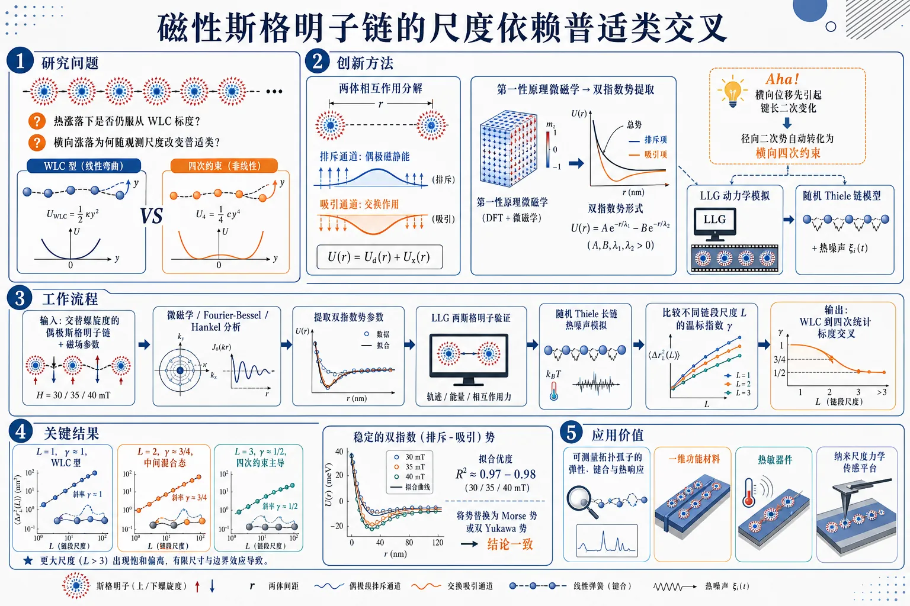
研究问题磁性斯格明子链在热涨落下是否仍服从软物质中常见的WLC标度律；为什么其横向涨落会随观测尺度改变普适类，从线性温标转向四次约束主导的非线性温标。创新方法从第一性微磁学出发推导斯格明子间双指数竞争势，把排斥的磁静力通道与吸引的交换通道分离出来；再结合LLG原子级模拟和随机Thiele长链模拟，揭示“横向位移先引起键长二次变化”的几何映射，从而把径向二次势自动转化为横向四次约束。这是Aha点。工作流程输入：具有交替螺旋度的偶极斯格明子链及其磁场参数；先用微磁学和Fourier-Bessel/Hankel分析得到两体相互作用，提取双指数势的衰减长度与强度；再用LLG模拟验证两斯格明子平衡势形；随后在随机Thiele模型中加入热噪声，模拟长链横向涨落；最后比较不同链段尺度L上的温标指数，识别从WLC线性标度到四次统计标度的交叉。关键结果得到稳定的排斥-吸引双指数势，且不同磁场下拟合优良，R2约0.97-0.98；在单键尺度L=1时横向涨落指数γ≈1，表现为WLC型；在三键尺度L=3时γ≈1/2，进入四次约束主导区；L=2处于中间混合态，γ≈3/4；更大尺度出现饱和偏离。结果在30/35/40 mT下都保持一致，并且Morse或double-Yukawa替换后结论不变。应用价值为磁性斯格明子链提供可计算、可验证的机械谱学框架，可用来测量拓扑孤子的弹性、键合与热响应；有助于理解和调控自旋电子学中的链状拓扑结构，也为设计基于斯格明子的一维功能材料、热敏器件和纳米尺度力学传感平台提供理论依据。第一部分：核心概览
这篇工作把磁性斯格明子链提升为研究普适类交叉的模型体系：从第一性微磁学导出双指数竞争势，证明链的横向热涨落在不同观测尺度上分别服从 WLC 型的 (T¹) 与四次约束主导的 (T¹/²)，且该交叉对磁场强度与势函数具体形状都高度鲁棒。核心贡献在于，把“聚合物类比”从定性比喻推进为可计算、可验证的尺度依赖统计物理机制。
---
第二部分：结构化快速回顾
《Scale-dependent universality class crossover in magnetic skyrmion polymers》（None，）
- 背景：偶极斯格明子可形成带交替螺旋度的链状结构，外形上类似半柔性聚合物，但既往软物质中的harmonic scaling在这里不再自动成立。
- 方法：结合微磁学推导、Fourier–Bessel/Hankel 分析、原子级 LLG 模拟与随机 Thiele 长链模拟，构建并检验有效二指数势。
- 结果：得到排斥—吸引双通道的 pair potential；在 L=1 时 (γapprox 1)，在 L=3 时 (γapprox 1/2)，L=2 为中间混合区。
- 讨论：交叉的根源不是势函数的全局形状，而是几何耦合：横向位移先导致径向距离的二次变化，从而把径向二次势映射成横向四次约束。
- 局限：依赖Bloch 型偶极斯格明子、近似刚性剖面、理想化一维链与有限温区；大尺度下出现饱和/偏离。
- 结论：斯格明子链展示出一种软物质聚合物中未见的尺度依赖普适类交叉，可作为topological soliton 的机械谱学平台。
---
第三部分：逐章节冷凝解析
Abstract
- 聚合物类比成立，但统计规律不再是常规 WLC
偶极斯格明子可自组装成“one-dimensional polymers”，但其热统计“*violates the universal harmonic scaling observed in actin, DNA, and microtubules*”。这说明问题不在结构类比，而在微观相互作用机制不同。
- 第一性原理给出双指数竞争势
通过“*From first principles, we compute the inter-skyrmion pair potential*”得到bi-exponential form，包含两个特征衰减长度，分别编码repulsion 与 attraction 的不同微观来源。核心模型不是经验拼接，而是从微磁学机制导出。
- 两种热标度指数分别对应单键与三键极限
多尺度模拟显示：worm-chain limit 的单键尺度给出 exponent 1，三键尺度给出 exponent 1/2；“*remarkably independent of magnetic field strength*” 表明该标度几乎不受磁场影响。
- 交叉机制是几何效应，不是势函数细节
“*the crossover is due to competing radial interactions responsible for the bonds, resulting in a quartic transverse confinement*”。即，横向位移先转化为径向二次变化，进而把原本的radial harmonic interaction 变成横向quartic confinement。
- 势函数的具体形式不影响温标
“*the precise form of the competing interactions (e.g., Morse or double-Yukawa) does not affect the temperature dependence*”。说明真正决定普适类的是局域曲率与几何映射，不是全局势形。
---
I Introduction
- 磁性斯格明子具备粒子性与拓扑稳定性
斯格明子被描述为“*topological solitons with particle-like properties*”，并被视为自旋电子学应用的候选对象。这里的研究重点不是单个斯格明子，而是链状集合态。
- 与软物质链的类比具有理论基础
链的结构与动力学“*are, in many respects, analogous to those of chains found in soft matter*”。因此可以借用polymer physics 的语言，但不能默认其标度律相同。
- 常规半柔性聚合物遵循 harmonic scaling
经典 WLC 中，“*⟨θ²⟩ ∝ T at all observed length scales*”，且这一关系在 actin、microtubules、DNA、dipolar colloids、vortex lines 中普遍成立。这里形成了明确的对照基线：二次弯曲能量 → 线性温标。
- 偶极斯格明子链的关键差异在于相互作用来源
这类链由finite-range, helicity-dependent interaction 绑定；问题变成：这种相互作用—热涨落平衡，是否仍然给出 WLC 式标度。答案是否定的。
- 预言了从 WLC 到 quartic statistics 的跨尺度交叉
直接给出核心预测：“*a crossover in thermal scaling from worm-like-chain behavior (γ ≈ 1) on the single-bond scale to quartic statistics (γ ≈ 1/2) on the three-bond scale*”。这是一种随观测窗口变化的普适类改变。
- 几何机制是中心命题
“*small transverse displacements of a skyrmion produce only a quadratic change in the inter-skyrmion distance*”。因此，即使径向势是harmonic，投影到横向坐标后也会成为quartic。这是整篇的理论核心。
- 提出机械谱学意义
“*skyrmion chains as a unique platform for mechanical spectroscopy of topological solitons*”。研究目标不仅是解释标度，更是把链作为测量soliton mechanics 的实验对象。
---
II Results
- 偶极斯格明子的稳定性由质量因子控制
偶极斯格明子由uniaxial anisotropy 与 magnetostatic energy 竞争稳定，稳定窗口由 (Q_f = Kᵤ/K_d) 描述。这里给出 [Co/Ni](₅) 参数 (Q_f approx 1.04)，位于实验观测的稳定区间内。
- Bloch 螺旋度是软自由度，链倾向交替螺旋度
“*Bloch textures of either rotation sense are degenerate in energy*”，说明helicity 不被微观相互作用锁定。结果是邻近斯格明子倾向采用alternating helicity，让壁区 in-plane 旋转“mesh smoothly”。
- 成链的微观原因是交换能与磁静力的竞争
交替螺旋度使“*the in-plane circulations of adjacent skyrmion walls then mesh smoothly in the junction regions*”，降低exchange cost of wall overlap。这对应图 1 中的真实空间键合特征。
#### II.1 Micromagnetic origin of the inter-skyrmion interaction
- 排斥来自磁静力，吸引来自交换
排斥通道由surface-charge magnetostatic interaction 主导，并且“*is repulsive at all separations*”；吸引通道由cross exchange energy 主导，且只在opposite helicity 下成立。
- Bloch 纹理的体电荷严格消失
由于 in-plane magnetization 是纯切向，“*the volume charges ... vanish identically for the Bloch texture*”。这意味着磁静力通道对chirality 不敏感，无法单独决定链的手性排序。
- 表面电荷项给出严格的正定排斥
公式 (4)：
[
Eₛ₍R)=2πμ₀ Mₛ² D int₀ⁱⁿfty dk,k,hₛ₍ₖD)G₀²⁽k)J₀₍ₖR)>0
]
其中 (hₛ₍ₖD)=(1-e⁻kD)/(kD))。这项对所有距离都为repulsive，且对 ((c₁,c₂₎) degenerate。
- 交换项携带 chirality product，决定交替螺旋度
公式 (5)：
[
Eexᵢₙₜ(R)=4π AₑₓDint₀ⁱⁿfty dk,k³,[G₀²⁽k)+c₁c₂G₁²⁽k)]J₀₍ₖR)
]
只有这项含 (c₁c₂)。当 (c₁c₂₌₋₁) 时，吸引成立；同号则相互“head-on collision”。
- 两条特征长度来自不同物理机制
排斥长度 (łambdaₛsimeq 1.2,δ_w)；吸引长度 (łambdasim(2--4)δ_w)。前者由wall derivative 和表面电荷决定，后者由junction region overlap 决定，故 (łambda>δ) 不是任意假设。
- 长程尾部与中程有效指数的区分
磁静力排斥在 (Rgg R₀) 具有严格的 dipolar tail (+μ₀μₛₖ²/(4π R³⁾)，但在实际拟合区间 (R₀<R<4R₀) 内可近似为单指数。说明数值拟合针对的是实验相关区间。
#### II.2 Bi-exponential pair potential
- 总势写成排斥与吸引的双指数竞争
有效势函数：
[
U(r)=Bᵣₑₚe⁻r/δ-Cₐₜₜe⁻r/łambda,quad łambda>δ
]
这是最简洁的有效描述，分别编码surface-charge repulsion 与 junction-mediated attraction。
- 双指数并非纯经验拟合
文中强调“*the inequality is a direct consequence of the distinct physical origins of the two channels rather than a free assumption*”。即 (łambda>δ) 是微观机制推出的，而不是自由参数化设定。
- Morse 势是特例而非基本形式
“*The well-known Morse potential corresponds to the special case λ = 2δ*”。因此 Morse 势只是双指数族中的一个点，不是机制本身。
- LLG 模拟用于提取参数
采用 [Co/Ni](₅) 的atomistic LLG simulations，初始化两斯格明子于不同距离并弛豫到平衡，最后通过
(U(r)=Eₜₒₜ(r)-2Eₛₖy)
得到 pair potential。
- 三种磁场下拟合稳定且拟合度高
Table 1 显示 B = 30/35/40 mT 时：
- (Bᵣₑₚ = 74.20/63.36/42.75)
- (Cₐₜₜ = 48.63/43.72/33.07)
- (δ = 11.68/10.54/9.89) nm
- (łambda = 17.53/15.80/14.84) nm
- (rₑq = 29.1/24.5/19.7) nm
- (łambda/δ = 1.50) across all fields
- (R² = 0.97/0.98/0.97)
- 数值值域与解析预测吻合
在 (B=35) mT 时，(δ=10.5) nm (=1.6,δ_w)，(łambda=15.8) nm (=2.4,δ_w)，落入解析预测的区间。说明拟合不只是形式上成立。
#### II.3 Transverse confinement and fluctuations
- 横向位移通过几何关系转化为径向拉伸
中间斯格明子横向位移 (δ y) 后，键长变为
[
r=sqrtrₑq²⁺δ y²approx rₑq+fracδ y²2rₑq-fracδ y⁴8rₑq³+ḑots
]
关键是 (Δ rsim δ y²)，这直接改变标度阶数。
- 径向二次势映射成横向四次势
因为 (U(r)) 在极小附近展开，且 ((Δ r)²) 的最低阶就是 (δ y⁴)，所以
[
Ugₑₒₘ(δ y)=U(rₑq)+fracU''(rₑq)8rₑq²(δ y)⁴⁺O(δ y⁶⁾
]
这是quartic transverse confinement 的严格来源。
- WLC 项与几何四次项并存
有效势写成
[
Uₑff(δ y)=fracU''(rₑq)4rₑq²(δ y)⁴⁺fracκWLC2rₑq²(δ y)²
]
其中四次项来自几何，二次项来自explicit WLC bending term。
- 交叉尺度可定量估计
用 (U''(rₑq)=0.0187~J₁/nm²) 与 (κWLC=1.19~J₁)，得到
[
δ ycᵣₒₛₛapprox 11~nm
]
（(B=35) mT, (T=300) K）。这是区分harmonic 与 quartic 主导区的关键尺度。
- 标度指数由相对幅度决定
当 (sqrtłangleδ y²ånglełl δ ycᵣₒₛₛ) 时，(γapprox 1)；当 (sqrtłangleδ y²ånglegg δ ycᵣₒₛₛ) 时，(γapprox 1/2)。这里给出的是统计力学上的跨区判据。
#### II.4 Scale-dependent thermal exponents
- 模拟规模足以覆盖长链统计
采用stochastic Thiele model 模拟 (N=200) 个斯格明子的链。温度点数为 10 个，范围 240–510 K，每个温度 256 个独立样本，总计 7680 个样本，跨 3 个磁场强度。
- 无额外拟合温度参数
一旦从 LLG 得到双指数参数、(κWLC) 与 (α_D)，Thiele 模拟只通过噪声强度引入温度，不再加入新的温标拟合自由度。
- L = 1、2、3 对应三种标度区
在 (B=35) mT、(T=300) K 下：
- (L=1)：(sqrtłangleδ y²ångleapprox 6) nm (łl δ ycᵣₒₛₛ)，故 (γapprox 1)
- (L=2)：(approx 14) nm，接近 (δ ycᵣₒₛₛ)，故 (γapprox 3/4)
- (L=3)：(approx 24) nm (gg δ ycᵣₒₛₛ)，故 (γapprox 1/2)
- 三个磁场下指数序列高度一致
Log-log 拟合结果：
- B=30 mT：(γ=0.953±0.008)（L=1），(0.739±0.011)（L=2），(0.560±0.012)（L=3）
- B=35 mT：(γ=0.977±0.005)，(0.745±0.004)，(0.551±0.004)
- B=40 mT：(γ=0.991±0.003)，(0.698±0.008)，(0.458±0.012)
- L = 2 是真正的混合区
“*neither a small correction to the WLC behavior nor an already asymptotic quartic scaling*”。对应 ((1+1/2)/2=3/4) 的中间指数，数值非常接近。
- 更大窗口出现饱和迹象
在 L ≥ 4 时，(γapprox 0.25–0.40)，低于 (1/2)，并伴随系统探索 50–60% of the dissociation energy。这提示四次标度并非无穷延伸，而会进入饱和/非普适区。
- 温度比检验不依赖指数拟合
对 (Tₕᵢgₕ/Tₗₒw=510/240=2.125)，WLC 预言比值 2.125，quartic 预言 1.458。实测：
- B=35 mT：L=1 为 2.084，L=3 为 1.505
- B=30 mT：L=1 为 2.018，L=3 为 1.485
- B=40 mT：L=1 为 2.100，L=3 为 1.417
这是对两种极限响应的直接比值验证。
- 实验可达温区内依然保持交叉
限制在 240–300 K 后，B=40 mT 仍得：
- L=1：(γ=0.973±0.001)
- L=3：(γ=0.504±0.007)
同时比值测试也吻合：1.242（预测 1.250）与 1.120（预测 1.118）。
- 交叉的普适几何判据
交叉发生在 (sqrtłangleδ y²ångleapprox rₑq) 附近。三种磁场下，L=3 在 300 K 时该比值分别为 0.92、0.99、1.09，几乎锁定在 1 附近。
- 势函数形式独立性得到验证
将双指数势替换为 Morse 与 double-Yukawa 后，三者给出相同交叉序列，(|Δγ|<0.03)，且任何尺度上的差异都不超过 1.5σ。说明标度由局域曲率与几何决定，不依赖势函数全貌。
---
第四部分：深度理解与语言支持
1) 关键术语解析
- Universality class crossover
指同一系统在不同观测尺度上呈现出不同的有效统计标度，不是普通的相变。这里从 (γapprox 1) 过渡到 (γapprox 1/2)，对应两种不同的“有效普适类”。
- Bi-exponential pair potential
不是简单的两项拟合，而是两种微观机制的分解：一项是magnetostatic repulsion，另一项是exchange-mediated attraction。两者衰减长度不同，因此形成“竞争势”。
- Quartic transverse confinement
横向位移的能量代价是 ((δ y)⁴) 而非 ((δ y)²)。根源在于几何：(Δ rsim δ y²)，再代入原本的二次径向势后，自然得到四次项。
- Helicity / chirality
helicity 是纹理的旋转手性，是软自由度；chirality product (c₁c₂) 决定交换吸引是否成立。前者描述单个斯格明子的内部取向，后者决定成链偏好。
- WLC (worm-like chain)
半柔性聚合物模型，低阶弯曲能是二次的，故横向涨落满足 (łangleθ²ånglepropto T)。这里它作为基线，与斯格明子链的四次约束区形成对照。
2) 疑难概念的深入解释
- 为什么“二次径向势”会变成“四次横向势”？
关键不在势函数本身，而在坐标映射。链上的横向位移 (δ y) 不会直接改变键长一阶量，而是先以
[
Δ r approx fracδ y²2rₑq
]
的形式出现。若势能在平衡点附近是 (U(r)approx U₀₊frac12U''(rₑq)Δ r²)，代入后就变成
[
Usim (δ y²⁾²⁼⁽δ y)⁴
]
所以四次项不是“额外假设”，而是几何投影的必然结果。
- 为什么指数会从 1 变成 1/2？
对于势能 (U(x)propto |x|²ⁿ)，热涨落尺度满足 (łangle x²ånglepropto T¹/ⁿ)。
- 二次势：(n=1Rightarrow γ=1)
- 四次势：(n=2Rightarrow γ=1/2)
因此只要横向有效约束从 harmonic 变为 quartic，温标指数就会从 1 降到 1/2。
- 为什么 L=2 会出现 3/4？
L=2 正好处于二次与四次项都显著的区间。此时拟合不对应任何单一极限，而是两种标度的混合，指数自然接近平均值 3/4。
- 为什么磁场变化不改变核心结论？
磁场主要改变 skyrmion radius，但这里的交叉由domain-wall width 和几何关系控制。只要 (rₑq)、(U''(rₑq))、(κWLC) 的相对结构不变，交叉就保持稳定。
---
第五部分：创新评估与关联
1) 创新性判断
近 2–5 年关于磁性斯格明子链的工作，重点多集中在三类问题：
- 链的形成与稳定性；
- helicity alternation 与局域交换机制；
- 与WLC / soft-matter polymer 的类比。
这篇工作的新颖性集中在四点：
- 把“类聚合物”推进为“尺度依赖普适类交叉”
过去常把斯格明子链视为 WLC 式半柔性链，这里直接证明在不同观测窗口下，系统会从 **
-
17
📊 含图深析
📄 摘要：arXiv:2607.26833v1 发布类型：新。摘要：交换刚度和磁各向异性等磁性材料参数支配着磁性体系的行为和功能，然而从磁化数据中对其进行局域推断仍然具有挑战性，尤其是在具有多晶或多相微结构的强涨落区域中，传统的基于纹理的方法会变得不可靠。我们引入了一种仅依赖磁化的框架，用于从热驱动磁化动力学中推断材料参数。利用微磁模拟，我们从磁化动力学中提取时间平均和潜在熵等统计量，对这些描述符拟合模型，并反演模型以推断材料参数。我们表明，该框架能够在非均匀样品中进行材料参数推断以及晶界检测。在所考虑的描述符中，潜在熵比时间平均给出更准确的参数估计。我们的结果确立了潜在熵作为一种高效描述符的地位，可用于从动态磁化数据中推断磁性材料参数，并指向其在高温下以及更广泛地在强涨落条件下进行实验参数提取的用途。
📖 英文原文
arXiv:2607.26833v1 Announce Type: new Abstract: Magnetic material parameters such as the exchange stiffness and magnetic anisotropy govern the behavior and functionality of magnetic systems, yet their local inference from magnetization data remains challenging, particularly in strongly fluctuating regimes with polycrystalline or multiphase microstructure, where conventional texture-based methods become unreliable. We introduce a magnetization-only framework for inferring material parameters from thermally driven magnetization dynamics. Using micromagnetic simulations, we extract statistical quantities such as temporal mean and latent entropy from the magnetization dynamics, fit models to these descriptors, and invert the models to infer material parameters. We show that this framework enables material-parameter inference as well as grain-boundary detection in a heterogeneous sample. Among the descriptors considered, latent entropy yields more accurate parameter estimates than the temporal mean. Our results establish latent entropy as an efficient descriptor for inferring magnetic material parameters from dynamical magnetization data and point toward its use for experimental parameter extraction at high temperatures and, more broadly, under strongly fluctuating conditions.
💡 亮点：该工作提出一种仅基于磁化数据的框架，用热驱动磁化动力学推断交换刚度、磁各向异性等磁性材料参数。研究通过微磁模拟提取时间平均和潜在熵等统计描述符，并反演模型获得参数，同时实现非均匀样品中的晶界探测。结果显示潜在熵比时间平均给出更准确的估计，适用于高温和强涨落条件下的实验参数提取。
🔬 与我们研究方向的关系
📐 方法要点：方法上，这篇工作可归入热力学知情 ML、机器学习势、自由能采样、CALPHAD/团簇展开。从摘要能确认的线索包括：论文题目和摘要中可确认的方法，以及磁性、自旋以及自旋—晶格耦合, 声子、有限温度和输运性质对应的结构或物理量。若迁移到团队流程，应采用“在 DFT 能量/力/应力之外加入跨温度构型、相对自由能、熵或热膨胀信息；用主动学习补采相变、畴壁和相竞争区域，再用热力学积分、MC 或有限温度 MD 验证”的分层验证，而不是只比较单点能量或单一回归误差。还需核对原文的训练数据规模、损失函数、边界条件和误差分解，才能判断其是否适合团队的材料模拟任务。
🔗 相关工作关联：它与五位研究人员已有工作的直接连接是：热力学知情 ML、机器学习势、自由能采样、CALPHAD/团簇展开已经出现在团队的方向画像中，可对应到HfO₂ 基铁电、二维滑移铁电、钙钛矿和磁性氧化物。与传统只做 0 K formation energy/静态势垒的工作相比，这里更应关注磁性、自旋以及自旋—晶格耦合, 声子、有限温度和输运性质, 晶体结构、功能材料和结构—性质关系在温度、缺陷、应变或外场下的变化；摘要没有给出的模型细节不作延伸判断。这种联系应通过同一材料体系上的独立基准和跨分布测试确认，不能仅凭方法名称或期刊来源下结论。
💡 对你方向的启示：对当前研究最具体的启示不是泛泛地“使用 ML”，而是把该文的热力学知情 ML、机器学习势、自由能采样、CALPHAD/团簇展开嵌入现有材料模拟链：先在HfO₂ 基铁电、二维滑移铁电、钙钛矿和磁性氧化物中选择一个已有 DFT 数据基础的体系，按“在 DFT 能量/力/应力之外加入跨温度构型、相对自由能、熵或热膨胀信息；用主动学习补采相变、畴壁和相竞争区域，再用热力学积分、MC 或有限温度 MD 验证”补充训练/验证集，再比较《从强涨落磁化动力学中的统计量推断磁性材料参数》对应模型对相稳定、极化/磁序、缺陷或动力学指标的改进。若结果只在训练分布内有效，应通过跨温度、跨应变、跨缺陷浓度和跨超胞测试检查可迁移性。第一步可以选取团队已有的 HfO₂、二维磁体、半导体缺陷或钙钛矿数据做小样本试验，再决定是否扩大到生产级计算。
📖 展开分析 + 配图
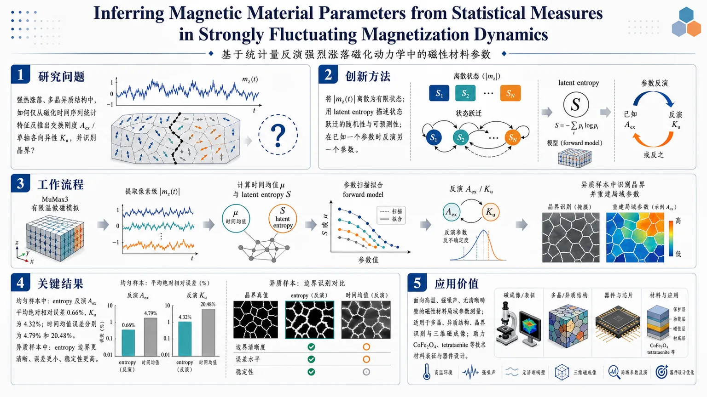
研究问题在强热涨落、磁化纹理不稳定甚至多晶异质结构中，如何仅从磁化时间序列的统计特征，反推出交换刚度 Aₑₓ 或单轴各向异性 Kᵤ，并同时识别晶界？创新方法提出基于磁化动力学统计量的反演框架：先将 |m_z(t)| 离散为有限状态，再用 latent entropy 描述状态跃迁的随机性与可预测性；在已知一个参数的前提下，通过经验 forward model 解析或数值反演另一个参数。其 Aha 点在于：不是只看幅值均值，而是利用“状态怎么跳”的信息，在强涨落下仍保留材料参数敏感性。工作流程MuMax3 有限温微磁模拟生成磁化时间序列 → 提取像素级 |m_z(t)| → 计算时间均值 μ 与 latent entropy S → 用参数扫描数据拟合 forward model → 在已知一个参数时反演另一个参数 → 对异质 Voronoi 样本进一步计算空间梯度、阈值分割并掩膜晶界 → 在晶粒内部逐点恢复局域参数并平均输出。关键结果在均匀样本中，latent entropy 反演 Aₑₓ 的平均绝对相对误差仅 0.66%，反演 Kᵤ 为 4.32%；时间均值对应误差分别为 4.79% 和 20.48%。在异质样本中，两种统计量都能定位晶界并重建晶粒内部参数，但 entropy 的边界更清晰、误差更小、稳定性更高，尤其在高 Aₑₓ 或强涨落区优势明显。应用价值为高温、强噪声、无清晰畴壁的磁性材料提供新的局域参数测量方法，可用于多晶、异质结构、晶界识别和三维磁成像。该框架不依赖传统纹理或磁滞曲线，更适合实验时间分辨磁成像，也有助于面向 CoFe2O4、tetrataenite 等技术材料的参数表征与器件设计。第一部分：核心概览
这篇工作把热涨落主导的磁化动力学转化为材料参数反演问题：仅用磁化时间序列中的时间均值与latent entropy，在已知一个参数的前提下反推出交换刚度 (Aₘ̊ ₑₓ) 或单轴各向异性 (Kₘ̊ ᵤ)。核心贡献在于把传统依赖纹理、畴壁或磁滞的局域表征，推进到强涨落、纹理不稳定、甚至多晶/异质结构仍可工作的统计描述框架。结果显示，latent entropy 在均匀样本与 Voronoi 异质样本中均优于时间均值，且还能辅助晶界检测，为高温实验和复杂微结构中的磁参数提取提供了新路径。
---
第二部分：结构化快速回顾
Inferring Magnetic Material Parameters from Statistical Measures in Strongly Fluctuating Magnetization Dynamics（None，）
- 背景：磁性材料的exchange stiffness 与 magnetic anisotropy 决定磁化行为，但在强热涨落、多晶、多相或高温条件下，基于纹理的局域参数提取失效；畴壁宽度、磁畴形貌和界面钉扎都使传统方法不稳定。
- 方法：用 MuMax3 做有限温 micromagnetic simulation，提取像素级 (|m_z(t)|) 时间序列，计算temporal mean (μ) 与 latent entropy (S)，再拟合经验 forward model，并通过解析反演或数值求根恢复未知参数。
- 结果：在均匀样本中，latent entropy 对 (Aₘ̊ ₑₓ) 的平均绝对相对误差仅 0.66%，对 (Kₘ̊ ᵤ) 为 4.32%；时间均值对应误差分别为 4.79% 与 20.48%。在异质 Voronoi 样本中，两种描述量都能定位晶界并重建晶粒内部参数，但 entropy 更稳健。
- 讨论：latent entropy 之所以更强，是因为它编码了状态跃迁结构而非仅幅度信息，因此在 (|m_z|) 接近饱和、均值失去敏感性时仍保留参数依赖性。
- 局限：当前框架要求先验已知一个参数；靠近界面时局部单参数假设失效；19 nm 排除带限制了最小可分辨晶粒尺度；目前采用的是经验拟合函数而非完全物理约束模型。
- 结论：磁化动力学中的统计量足以支撑磁材料参数反演与晶界识别，latent entropy 尤其适合强涨落场景，具备向实验与三维磁成像扩展的潜力。
---
第三部分：逐章节冷凝解析
I Introduction
材料参数决定功能，但局域定量测量仍困难
磁性数据存储、非传统计算和磁热应用依赖exchange stiffness 与 magnetic anisotropy 等内禀参数；这些参数对磁化结构、反转过程和功能响应具有基础性约束。原文直接指出：*"Quantitative knowledge of these parameters is therefore essential for understanding and controlling magnetic behavior at the local scale."* 这一点将问题限定为局域尺度的定量反演，而非宏观平均测量。
传统方法依赖纹理，强涨落时不可靠
常规方法多从磁畴纹理、滞回或磁阻间接推断参数；高局域技术如 TEM off-axis electron holography 又依赖特殊制样，且制样本身可能改变磁态。原文强调：*"Conventional approaches infer them indirectly from magnetization textures, hysteresis, or magnetoresistance measurements"*，而局部电子全息需要的制样“may alter the magnetic state”。这意味着常见实验路线在真实局域参数与实验可操作性之间存在冲突。
强热涨落会抹掉可用纹理信号
在高温或强噪声条件下，热噪声会压制磁化纹理，导致畴壁宽度提取等方法失效。原文给出的关键判断是：*"thermal noise suppresses magnetization textures, rendering conventional approaches such as domain wall width extraction ineffective"*. 同时，畴壁常被缺陷或晶界钉扎，进一步扭曲几何特征，使其不再是稳定探针。
研究目标是把磁化动力学直接映射到材料参数
核心思路不是从静态纹理反演，而是从thermally driven magnetization dynamics 中提取统计描述量，再回推 (Aₘ̊ ₑₓ) 与 (Kₘ̊ ᵤ)。原文明确：*"we introduce a magnetization dynamics-based framework that maps thermally driven magnetization dynamics to the underlying magnetic material parameters using statistical descriptors."* 其中一个参数被视为已知，另一个由反演得到。
latent entropy 是关键增益来源
latent entropy 被定义为衡量离散化状态转移随机性的计算高效物理量。原文将其定位为：*"a computationally efficient, physics-based descriptor that quantifies the stochasticity of temporally ordered transitions between discretized magnetization states."* 与只看幅值的均值相比，entropy 抓住了动力学跃迁结构，因此更能区分材料参数差异。
参数范围刻意覆盖技术相关材料
考察范围覆盖 CoFe(₂)O(₄) 和 L1(₀)-ordered FeNi/tetrataenite 相关量级。原文说明：*"We study a parameter range chosen to cover values relevant for technologically important materials such as CoFe2O4 and L10-ordered FeNi."* 这提升了方法的材料可迁移性，而非停留在理想化参数。
异质样本用于晶界识别与局域参数重建
除均匀样本外，还处理空间异质系统，以实现local parameter inference 和grain boundary detection。原文写明：*"We apply the framework to spatially heterogeneous systems, enabling local parameter inference and the identification of grain boundaries directly from magnetization dynamics."* 这把框架从单点回归扩展为局域成像任务。
---
II Methods
#### II.1 Micromagnetic Simulations
模拟对象是带垂直磁各向异性的铁磁薄膜
哈密顿量写为
[
H[bmm] = int Big[Aₘ̊ ₑₓ(nablabmm)² + Kₘ̊ ᵤ(1-m_z²⁾ - μ₀ Mₛ bmmḑot Hₘ̊ ₜₕBig],d³r
]
其中 (Aₘ̊ ₑₓ) 与 (Kₘ̊ ᵤ) 分别是交换刚度和单轴各向异性常数。该模型仅保留exchange、uniaxial anisotropy 和thermal noise，把问题压缩到最核心的内禀能量项。
计算平台与动力学方程明确
模拟使用 GPU 加速的 MuMax3。磁化遵循 Landau-Lifshitz-Gilbert 方程：
*"dbmm/dt = -γ/(1+α²⁾,bmm×Hₘ̊ ₑff - γα/(1+α²⁾,bmm×(bmm×Hₘ̊ ₑff)"*
其中 (α=0.1)，(γ=μ₀|γₘ̊ LL|)，(Hₘ̊ ₑff=-(μ₀Mₛ₎⁻¹(δH/δbmm))。这是标准的阻尼进动+弛豫框架，保证热涨落下的动力学一致性。
热场满足涨落-耗散定理
热场是零均值高斯白噪声，协方差为
[
łangle Hₜₕ,ᵢ(t)Hₜₕ,ⱼ(t')ångle = frac2α k_BTγ₀μ₀MₛVδᵢⱼδ(t-t')
]
原文明确：*"The thermal contribution to the dynamics is included via a stochastic, zero-mean thermal field"*，而且方差随温度线性增加。这样确保了有限温动力学的热力学一致性。
温度设在 700 K，故意进入强涨落区
温度固定在 700 K，低于 CoFe(₂)O(₄) 和 tetrataenite 的居里温度，但足以把系统推入strongly fluctuating regime。原文指出，这样还能让轨迹覆盖 latent entropy 所需的全部离散状态，避免空 bin。
采样长度与预处理细节明确
磁化每 1 ps 记录一次，模拟总时长 4.5 ns，前 500 帧（500 ps） 去除，以消除初始态暂态。观测量选择 (|m_z(t)|)，因为易磁化轴与膜法向平行。这个选择避免了向量方向翻转造成的符号抵消，保留幅值涨落结构。
---
#### II.2 Latent Entropy
先离散化，再计算状态跃迁概率
latent entropy 从 (|m_z(t)|) 出发，将连续轨迹粗粒化为 9 个 bins。原文写明：*"The calculation begins by coarse-graining the continuous magnetization trajectory into a finite number (Nₘ̊ bᵢₙₛ=9) of discrete states."* 这一步是方法的关键：不是直接做连续统计，而是把动力学转成离散状态转移网络。
固定边界保证跨模拟可比性
所有模拟中，(|m_z|) 的最大最小值保持固定，用于定义统一 bin 边界。这样 latent entropy 的数值可以在不同参数组合间直接比较，避免因为 bin 边界变化引入人为差异。
latent entropy 衡量的是时间序列的可预测性
原文给出清晰物理解释：*"a large latent entropy reflects highly stochastic, thermally agitated magnetization dynamics, whereas a small value indicates more predictable temporal evolution constrained by the energy landscape."* 因而它捕捉的是演化的不可预测性与跃迁结构复杂度，不是简单的振幅大小。
信息增益来自跃迁，而非静态幅度
latent entropy “goes beyond standard statistics like the temporal mean”。这一句点出其学术定位：时间均值只看轨迹的中心位置，entropy 还看从哪个状态跳到哪个状态、跳转有多随机。这也是后文其优于均值的根本原因。
---
#### III Inference Strategy
参考数据集来自 64 nm × 64 nm × 1 nm 的均匀样本
用于拟合 forward model 的参考样本尺寸为 64 nm × 64 nm × 1 nm。每组参数下计算像素级 (μ=łangle |m_z(t)|ångle) 和 (S(|m_z(t)|))，再在中央区域求平均。这个流程把局部像素信息压缩成每个参数点的一对标量特征。
边缘裁剪严格避开交换长度影响
四周裁去 20 nm 宽边框。原文指出，这个宽度超过研究参数范围内最长的交换长度，约 11.6 nm，因此能抑制边界伪影。这样保证训练/拟合数据主要反映材料本征响应，而不是有限尺寸效应。
参数扫描覆盖完整研究区间
交换刚度扫描范围是 (8.2×10⁻¹²) 到 (35×10⁻¹²) J/m，各向异性范围是 (2.6×10⁵) 到 (9×10⁵) J/m(³)。该网格生成了后续拟合所需的数据集。
latent entropy 与 temporal mean 都被拟合为显式 forward model
latent entropy 的拟合式为
[
S(Kᵤ,Aₘ̊ ₑₓ) = S₀ + S₁expłeft[-(S₂ + S₃ KᵤS₄)Aₘ̊ ₑₓS₅i̊ght]
]
时间均值的拟合式为
[
μ(Kᵤ,Aₘ̊ ₑₓ) = μ₀ - μ₁ e⁻μ₂Aₘ̊ ₑₓ + μ₃Aₘ̊ ₑₓ⁻μ₄łeft[1-e⁻μ₅Kᵤμ₆i̊ght]
]
前者更像一个带耦合项的指数衰减模型，后者同时包含 (Aₘ̊ ₑₓ) 和 (Kₘ̊ ᵤ) 的混合响应。
拟合精度很高，但 entropy 更优
拟合决定系数分别为 (R²⁼⁰.9997)（entropy）和 (R²⁼⁰.9962)（mean）。Appendix B 还给出：entropy 的 RMSE = 6.36×10(⁻³)、MAE = 4.98×10(⁻³)；mean 的 RMSE = 4.81×10(⁻³)、MAE = 3.79×10(⁻³)。虽然 mean 的绝对拟合误差略小，但其全局相对误差更差，说明关键不在拟合绝对残差，而在反演敏感性。
反演方式分为解析与数值两类
若已知一个参数，可通过反演模型恢复另一个。对 (S)-model，(Aₘ̊ ₑₓ) 和 (Kₘ̊ ᵤ) 都能通过代数整理得到闭式解。对 (μ)-model，(Kₘ̊ ᵤ) 可解析反演，(Aₘ̊ ₑₓ) 需用 Brent’s method 数值求根，调用 `scipy.optimize.rootₛcalar`，搜索区间为 [2×10(⁻¹²), 60×10(⁻¹²)] J/m。这说明 mean 的反演更容易遇到病态或非线性问题。
---
IV Inference of material parameters
核心验证分为均匀样本和异质样本两类
这一部分验证两件事：一是均匀材料中能否准确反演 (Aₘ̊ ₑₓ) 与 (Kₘ̊ ᵤ)；二是异质 Voronoi 样本中能否同时检测晶界并恢复局域参数。两项验证对应不同层次的实际场景。
---
#### IV.1 Reconstruction in Uniform Samples
(Aₘ̊ ₑₓ) 的反演精度显著优于时间均值
均匀样本中，latent entropy 模型重建 (Aₘ̊ ₑₓ) 的平均绝对相对误差为 0.66%，时间均值模型为 4.79%。原文强调：*"the latent entropy model reconstructs Aₘ̊ ₑₓ more accurately than the temporal mean model."* 这说明 entropy 对交换刚度的可识别性更强。
低 (Aₘ̊ ₑₓ)、低 (Kₘ̊ ᵤ) 区域最难
entropy 模型在大多数区域误差保持在约 ±2% 内，但在低 (Aₘ̊ ₑₓ)、低 (Kₘ̊ ᵤ) 区域最大误差约 5.0%。这里热涨落特别强，邻近参数组合产生的动力学差异被压缩，导致反演困难。
时间均值模型在大 (Aₘ̊ ₑₓ) 区域退化明显
mean 模型的误差更分散，大多数在 ±5% 内，但在最大 (Aₘ̊ ₑₓ) 区域出现绝对误差超过 10% 的高误差带。原文给出机制：*"Strong exchange coupling suppresses the fluctuations in the magnetization magnitude, causing the temporal mean to vary only weakly with either material parameter and making the numerical inversion ill-conditioned."* 这就是典型的病态反演：输入对输出的灵敏度太低。
(Kₘ̊ ᵤ) 的反演更难，entropy 仍占优
对 (Kₘ̊ ᵤ) 的重建，entropy 模型平均绝对相对误差 4.32%，mean 模型为 20.48%。最大误差达到 43.75%，仍出现在低 (Aₘ̊ ₑₓ)、低 (Kₘ̊ ᵤ) 区域。说明各向异性在当前观测量下的可辨识性整体低于交换刚度。
entropy 的优势来自跃迁结构信息
原文给出关键解释：*"The latent entropy remains more informative because it captures the transition structure of the dynamics, which retains parameter-dependent information even when the mean magnetization changes only weakly."* 也就是说，当幅度信号接近饱和时，状态切换方式仍然携带参数信息。
误差由 forward model 残差与局部灵敏度共同决定
Appendix B 的 residual map 与 sensitivity analysis 说明：entropy 拟合残差更小且更均匀；误差增大还与对 (Kₘ̊ ᵤ) 的灵敏度较弱有关，mean 模型则在高 (Aₘ̊ ₑₓ) 区域敏感性显著下降。此处反演误差不是单纯拟合误差，而是局部可辨识性与模型残差的乘积效应。
---
#### IV.2 Grain Boundary Detection and Parameter Prediction in Spatially Heterogeneous Systems
异质样本用 Voronoi 分区模拟多晶结构
样本尺寸为 256 nm × 256 nm × 1 nm，划分为多个 Voronoi 区域，平均面积约 2970 nm(²)。每个区域被赋予随机但空间均匀的一组 ((Kₘ̊ ᵤ,Aₘ̊ ₑₓ))。这使模型能够检验是否能从空间上变化的动力学中恢复局域参数。
晶界检测依赖统计量的空间梯度
因为同一晶粒内部 (S(x,y)) 与 (μ(x,y)) 近似均匀，而界面处发生突变，所以梯度可用于定位界面。原文表述为：*"their spatial gradients provide a direct means of locating the boundaries."* 这把纯时间统计量进一步转化为空间分割工具。
阈值与骨架化步骤非常具体
边界检测采用 hysteresis thresholding：
- 对 (|nabla S|)，阈值为 (0.28, 0.85)
- 对 (|nablaμ|)，阈值为 (0.04, 0.18)
随后用 `skeletonize` 压缩成 1 像素宽骨架，再用半径 9 像素 的膨胀形成总宽度 19 nm 的排除带。原文说明：*"This width is chosen to be comparable to the largest exchange length in the investigated parameter range."* 这是避免界面交换耦合污染局域反演的关键。
entropy 的边界掩膜更规则，mean 更噪声化
(μ)-based mask 不能识别某些由 (S)-based mask 检出的界面，并且轮廓更不规则。根本原因是 temporal mean 的空间梯度更噪声化，边界信号更弱。这再次说明 entropy 的空间敏感性更高。
晶粒内部参数可平均得到单值代表
排除边界后，对每个晶粒内部的像素逐点反演，再对无掩膜像素平均，得到该晶粒的代表性参数值。结果显示，两种 descriptor 都能恢复空间变化，但 latent entropy 的误差更小，且 (Aₘ̊ ₑₓ) 的预测始终比 (Kₘ̊ ᵤ) 更准。
---
V Discussion and Outlook
方法适合高温与强涨落条件
讨论部分把适用场景锁定在elevated-temperature measurements 和工业工作条件。关键表述是：*"thermally driven magnetization dynamics offer a practical approach to inferring intrinsic magnetic parameters"*，而 entropy 在“strongly fluctuating regimes”中比均值更可靠。
entropy 优于 mean 的原因是敏感区间更广
latent entropy 在更大参数区域内保持响应，因此更适合反演。mean 仍有价值，但主要提供磁化幅度的平均信息；entropy 提供的是随机跃迁结构。两者互补，联合推断可能进一步提升性能。
晶界识别说明方法可用于真实多晶材料
Voronoi 结果说明框架不仅能估参，还能定位晶界。讨论中强调晶界影响magnetic coupling、domain wall pinning 和 magnetization reversal，因此从动力学中识别晶界本身就具有材料物理意义。
接口附近不可指望单参数局域模型
原文直接指出：*"the models are not expected to perform reliably near interfaces, where boundary effects and coupling to neighboring grains violate the assumption that the local dynamics can be described by a single parameter set."* 这是本方法最明确的物理边界：界面处不满足局域均匀单参假设。
空间分辨率受 19 nm 排除带限制
若晶粒特征尺寸接近或小于排除带宽度，就可能被完全掩蔽，无法独立解析。这意味着方法对纳米晶粒并非无条件适用，分辨率由排除带尺度决定。
实验上不依赖畴壁或磁滞曲线
该框架只要求time-resolved magnetization data，不需要清晰畴壁或磁滞测量。可能的实验平台包括 time-resolved MOKE microscopy, FMR, BLS, TR-STXM 和 time-resolved XMCD-PEEM。这大幅降低了实验前提。
三维系统中优势更明显
在三维里，畴壁宽度会受壁取向和投影方式共同影响，传统纹理法尤其难用。基于局域动力学而非投影畴壁形状的 descriptor 方法，天然适配volumetric magnetic imaging。
可扩展到更复杂微结构与更物理化的 forward model
讨论还提出：可扩展到precipitates、secondary phases、磁纳米颗粒和纳米团簇等界面驱动系统；也可替换为更物理化的拟合函数，纳入热激活、能量尺度或 micromagnetic scaling relations。进一步还可加上 dipolar 或 Dzyaloshinskii-Moriya interaction，并与 U-Net 等分割网络结合，形成“先定位、后反演”的混合流程。
---
VI Acknowledgments
基金与协作信息明确
感谢了一系列合作者，并获得 DFG CRC/TRR 270（projects B12, A12, B11）资助；A. M. 获得 Joachim Herz Foundation 的 Add-on Fellowship。该部分主要是资助与合作声明，无方法学内容。
---
Appendix A Micromagnetic Simulations
热场严格按涨落-耗散定理构造
热场满足
*"⟨Hₜₕ(t)ångle=0"*
且各分量是时间上 δ 相关、方向上独立的高斯白噪声。协方差公式给出热噪声强度如何与 (T)、(α)、(Mₛ) 和单元体积 (V) 耦合。这保证了模拟的热力学一致性。
表 A1 给出完整数值设置
关键参数包括：
- 网格：参考数据集 64×64×1
- 异质预测：256×256×1
- cell size：1 nm × 1 nm × 1 nm
- 温度：700 K
- (Mₛ = 4×10⁵) A/m
- (Kₘ̊ ᵤ) 范围：2.6–9 ×10(⁵) J/m(³)
- (Aₘ̊ ₑₓ) 范围：8.2–35 ×10(⁻¹²) J/m
- 运行时间：4.5 ns
- 采样间隔：1 ps
- (α = 0.1)
---
Appendix B Empirical Fits and Sensitivity Analysis
#### B.1 Fitted model parameters
拟合参数全部显式给出
latent entropy 模型参数：
- (S₀₌₀.34), (S₁₌₂.86), (S₂₌₀.366), (S₃₌₀.102), (S₄₌₀.40), (S₅₌₀.90)
temporal mean 模型参数：
- (μ₀₌₀.890), (μ₁₌₁.01), (μ₂₌₁.31), (μ₃₌₀.113), (μ₄₌₀.988), (μ₅₌₀.125), (μ₆₌₁.24)
整体拟合质量高度可靠
Table B2 给出：
- (R²)：0.9997（S-model） vs 0.9962（μ-model）
- max |error|：0.0341 vs 0.0320
- mean |rel error|：3.13×10(⁻³) vs 5.00×10(⁻³)
- max |rel error|：1.62×10(⁻²) vs 5.72×10(⁻²)
这说明 entropy 模型在相对误差层面更稳，特别是在极端参数点的表现更好。
#### B.2 Sensitivity analysis
两种观测量都对 (Aₘ̊ ₑₓ) 比对 (Kₘ̊ ᵤ) 更敏感
敏感度图显示，(|partial S/partial Aₘ̊ ₑₓ|) 与 (|partial μ/partial Aₘ̊ ₑₓ|) 整体都高于对应的 (Kₘ̊ ᵤ) 导数。原文明确：*"both observables respond more strongly to variations in Aₘ̊ ₑₓ than in Kₘ̊ ᵤ."* 这直接解释了为何 (Aₘ̊ ₑₓ) 的反演精度优于 (Kₘ̊ ᵤ)。
mean 对 (Kₘ̊ ᵤ) 的敏感性随 (Aₘ̊ ₑₓ) 增大而下降
这一点解释了高 (Aₘ̊ ₑₓ) 区域的病态反演：交换越强，(|m_z|) 越接近饱和，mean 对各参数的响应越弱，数值反演越不稳定。
---
Appendix C Distribution of Reconstruction Errors in Uniform Samples
entropy 的误差分布更窄
约 90% 的 (Aₘ̊ ₑₓ) 重建误差落在 ±2% 内（S-model），而 μ-model 为 ±5%。对应的 (Kₘ̊ ᵤ) 区间为 ±10% 和 ±20%。这说明 entropy 不仅平均误差更低，分布尾部也更短。
(Kₘ̊ ᵤ) 更难，因为对其敏感性更低
(Kₘ̊ ᵤ) 的误差分布明显更宽，和 Appendix B 的敏感度分析一致。mean 模型还出现更明显的长尾，说明其在参数空间边缘更容易出错。
---
Appendix D Masking procedure and Distribution of Prediction Errors
#### D.1 Boundary masking procedure
边界检测由四步组成
- Gradient magnitude calculation：从 (S(x,y)) 和 (μ(x,y)) 计算 (|nabla S|) 与 (|nablaμ|)。
- Thresholding：用 hysteresis thresholding；(|nabla S|) 的阈值为 (0.28, 0.85)，(|nablaμ|) 的阈值为 (0.04, 0.18)。
- Skeletonization and masking：先移除外侧 19 nm 边框，再 skeletonize 成一像素骨架。
- Dilation：用半径 9 像素 的结构元膨胀，形成总宽 19 nm 的排除区域。
19 nm 的排除宽度是物理尺度约束
该宽度被选为与参数空间中最大的交换长度同量级，用于减少界面交换耦合像素的污染。于是，局域反演只在更像“孤立晶粒内部”的区域进行。
---
第四部分：深度理解与语言支持
1) 术语解析
Latent entropy
不是经典热力学熵的直接替代，而是基于离散状态跃迁概率构造的动力学复杂度指标。语境里它强调“temporally ordered transitions”，即不仅看状态分布，还看状态之间如何转移。微妙之处在于，它衡量的是轨迹结构的随机性，不是快照分布的随机性。
Temporal mean
指 (łangle |m_z(t)|ångle)，属于最朴素的幅值统计量。它只保留平均水平，丢失转移信息。与 latent entropy 相比，它是低阶、低信息密度描述量，所以在 (|m_z|) 接近饱和时更容易失去参数辨识度。
Ill-conditioned inversion
数值反演病态，意味着观测量对参数的映射在局部几乎平坦或多解，微小噪声会放大成大参数误差。这里对应高 (Aₘ̊ ₑₓ) 下 temporal mean 变化太弱，导致 (Aₘ̊ ₑₓ) 反演不稳定。
Exchange length
交换作用与各向异性能量平衡形成的特征长度。语境中它用来估计边界效应的空间影响范围。排除带设置为超过最长交换长度，目的是让内部像素尽量不受界面耦合干扰。
Hysteresis thresholding
双阈值边缘检测。高阈值标记确定边缘，低阈值保留与确定边缘连通的弱信号。相较单阈值，它更能保留连续边界并抑制孤立噪声，适合梯度图中强弱不均的晶界信号。
---
2) 疑难查证：为什么 latent entropy 比均值更适合反演？
高年级博士生层面可以这样理解：
- 均值回答的是：“磁化幅值总体偏大还是偏小？”
- latent entropy回答的是：“系统在不同磁化状态之间以多复杂、多随机的方式来回跳？”
在强热涨落下，(|m_z|) 常常被压到接近同一范围，导致均值差异很小；即使两个材料参数不同，平均幅值也可能几乎一样。
但跃迁路径仍可能不同：一个系统更容易在多个离散状态间频繁跳变，另一个更容易停留在少数状态。entropy 正是把这种路径依赖性编码进去，所以能在幅值饱和时继续区分参数。
换句话说，
- mean 看“点的位置”；
- latent entropy 看“点如何移动”。
当“位置”信息被热噪声淹没时，“运动方式”往往还保留可辨识结构。
---
第五部分：创新评估与关联
1) 创新性判断
相对近 2–5 年相关工作的新颖性主要在四点：
第一，从静态纹理转向动力学统计量。
近年的局域磁参提取多依赖畴壁宽度、纹理几何、磁滞或磁成像特征；这一路线在高温、强噪声、界面钉扎时很脆弱。这里把输入换成时间序列统计描述，尤其是 latent entropy，绕开了“必须先看见清晰纹理”的前提。
第二，把 entropy 用作可反演的物理描述符，而非仅作复杂性指标。
latent entropy 常见于动力学复杂性分析，这里进一步证明它能作为forward model 的有效输入特征，直接服务于材料参数反演。这种“描述符 → 反演器”的闭环比单纯做特征分析更进一步。
第三，同时解决局域参数反演与晶界检测。
过去参数提取与缺陷/晶界定位往往是两套流程，这里利用 (S(x,y)) 与 (μ(x,y)) 的空间梯度，把分割和回归合并成同一框架，且在 Voronoi 异质样本中验证了可行性。
第四，明确面向强涨落高温区。
许多方法默认清晰磁畴、稳定壁形和低噪声成像；这里专门针对strongly fluctuating regimes，恰好覆盖实验上最难、但又最重要的一类场景。对于 CoFe(₂)O(₄)、tetrataenite 等高温应用材料，这一适用区间具有实际价值。
2) 解决了什么前人没解决的问题？
- 在无清晰畴壁、热噪声强、局部纹理不稳定时，仍可从磁化动态中恢复 (Aₘ̊ ₑₓ) 和 (Kₘ̊ ᵤ)。
- 在多晶异质样本中，不仅能估参，还能自动识别晶界。
- 在仅有时间分辨磁化数据而没有高质量结构纹理时，仍可进行局域材料表征。
- 给出了一个可计算、可拟合、可反演的完整管线，而不是只给出概念性指标。
3) 更进一步的学术定位
这项工作把磁学中的“纹理表征范式”推进到“动力学统计反演范式”。真正的贡献不是某个单一拟合公式，而是证明：
强涨落并不必然阻碍局域材料识别；只要选择合适的动力学描述符，噪声本身也能成为参数信息的载体。
如果需要，我可以继续把这篇论文整理成：
- 一页纸图表版笔记，或
- 可直接用于组会汇报的PPT提纲。
-
18
📊 含图深析
📄 摘要：铁磁体中的自旋依赖输运是高密度自旋电子存储器发展的基础。强自旋轨道耦合铁磁体中的自旋依赖输运表现出显著的各向异性。当磁化方向偏离晶体学易轴，或者电场相对于晶轴旋转时，总体自旋极化和磁自旋霍尔电导都被发现具有明显的各向异性。这些各向异性响应主要源于自旋轨道耦合，而自旋轨道耦合被确定为铁磁体中观察到的大各向异性的关键驱动因素。此外，研究还展示了磁自旋霍尔各向异性的应变可调性，其中拉伸应变会逐步增强自旋霍尔电导的振荡幅度。这些发现表明，强自旋轨道耦合铁磁体可作为各向异性自旋流产生的平台，并可用于利用材料的内禀各向异性来提升性能和能效的无外场自旋电子器件。
📖 英文原文
arXiv:2607.27016v1 Announce Type: new Abstract: Spin-dependent transport in ferromagnets underpins the development of high-density spintronic memories. Spin-dependent transport in strong spin-orbit-coupled ferromagnets exhibits a significant anisotropy. Both the overall spin polarization during charge transport and the magnetic spin Hall conductivity are found to exhibit pronounced anisotropy when the magnetization is tilted away from the crystallographic easy axis or when the electric field is rotated relative to the crystal axes. These anisotropic responses originate primarily from spin-orbit coupling, which is identified as the key driver of the large anisotropy observed in ferromagnet. Furthermore, strain tunability of the magnetic spin Hall anisotropy is demonstrated, with tensile strain progressively enhancing the oscillatory amplitude of the spin Hall conductivity. These findings establish strong spin-orbit-coupled ferromagnets as a platform for anisotropic spin-current generation and field-free spintronic devices that exploit intrinsic material anisotropy for improved performance and energy efficiency.
💡 亮点：本文研究强自旋轨道耦合铁磁体中的自旋依赖输运，发现无论是电荷输运过程中的总体自旋极化，还是磁自旋霍尔电导，都表现出显著各向异性。这种各向异性主要源于自旋轨道耦合，并且可通过应变加以调控。研究表明，强自旋轨道耦合铁磁体可作为各向异性自旋电流产生和无外场自旋电子器件的平台。
🔬 与我们研究方向的关系
📐 方法要点：方法上，这篇工作可归入HfO₂ 铁电、二维滑移铁电、极化翻转、畴壁和疲劳/缺陷问题。从摘要能确认的线索包括：论文题目和摘要中可确认的方法，以及铁电/多铁、极化翻转和电场驱动过程, 磁性、自旋以及自旋—晶格耦合对应的结构或物理量。若迁移到团队流程，应采用“把电场、极化、应变、氧空位和局域结构序参一起纳入轨迹数据；比较均匀翻转、局域成核和畴壁传播，并用 DFT/有效 Hamiltonian 对关键路径复核”的分层验证，而不是只比较单点能量或单一回归误差。还需核对原文的训练数据规模、损失函数、边界条件和误差分解，才能判断其是否适合团队的材料模拟任务。
🔗 相关工作关联：它与五位研究人员已有工作的直接连接是：HfO₂ 铁电、二维滑移铁电、极化翻转、畴壁和疲劳/缺陷问题已经出现在团队的方向画像中，可对应到HfO₂、Hf₀.₅Zr₀.₅O₂、二维范德华铁电、钙钛矿氧化物。与传统只做 0 K formation energy/静态势垒的工作相比，这里更应关注铁电/多铁、极化翻转和电场驱动过程, 磁性、自旋以及自旋—晶格耦合, 声子、有限温度和输运性质在温度、缺陷、应变或外场下的变化；摘要没有给出的模型细节不作延伸判断。这种联系应通过同一材料体系上的独立基准和跨分布测试确认，不能仅凭方法名称或期刊来源下结论。
💡 对你方向的启示：对当前研究最具体的启示不是泛泛地“使用 ML”，而是把该文的HfO₂ 铁电、二维滑移铁电、极化翻转、畴壁和疲劳/缺陷问题嵌入现有材料模拟链：先在HfO₂、Hf₀.₅Zr₀.₅O₂、二维范德华铁电、钙钛矿氧化物中选择一个已有 DFT 数据基础的体系，按“把电场、极化、应变、氧空位和局域结构序参一起纳入轨迹数据；比较均匀翻转、局域成核和畴壁传播，并用 DFT/有效 Hamiltonian 对关键路径复核”补充训练/验证集，再比较《铁磁体中的各向异性自旋极化与磁自旋霍尔效应》对应模型对相稳定、极化/磁序、缺陷或动力学指标的改进。若结果只在训练分布内有效，应通过跨温度、跨应变、跨缺陷浓度和跨超胞测试检查可迁移性。第一步可以选取团队已有的 HfO₂、二维磁体、半导体缺陷或钙钛矿数据做小样本试验，再决定是否扩大到生产级计算。
📖 展开分析 + 配图
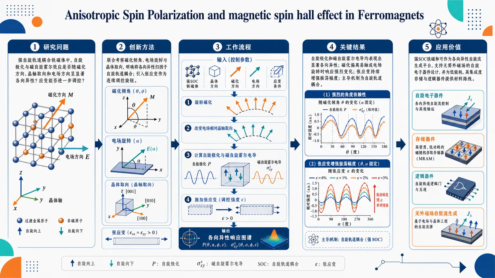
研究问题在强自旋轨道耦合铁磁体中，自旋极化与磁自旋霍尔效应是否会随磁化方向、晶轴取向和电场方向发生显著各向异性变化？这种方向依赖能否通过应变进一步调控？创新方法把磁化倾角、电场旋转与晶体取向联合起来考察自旋极化和磁自旋霍尔电导的角度响应，并将各向异性明确归因于自旋轨道耦合；进一步引入张应变作为连续调控旋钮，放大并调节磁自旋霍尔各向异性。工作流程输入为强自旋轨道耦合铁磁体及其晶体方向、磁化方向、电场方向和应变条件；先旋转磁化方向、再改变电场相对晶轴的取向，计算自旋极化与磁自旋霍尔电导的角度变化；最后施加张应变，观察振荡幅度如何逐步增强，得到输出的各向异性响应图谱。关键结果自旋极化和磁自旋霍尔电导都表现出显著各向异性；当磁化偏离易轴或电场相对晶轴旋转时，响应强烈变化；张应变会持续增强磁自旋霍尔电导的振荡幅度；各向异性的主导机制被确认是自旋轨道耦合。应用价值说明强自旋轨道耦合铁磁体可作为各向异性自旋流生成平台，可利用内禀方向依赖实现无需外磁场的自旋电子器件设计，并为低能耗、高集成度的自旋存储与逻辑器件提供材料路线。第一部分：核心概览 (Overview)
这篇工作围绕强自旋轨道耦合铁磁体中的自旋极化与磁自旋霍尔效应展开，抓住了一个关键事实：当磁化方向偏离易轴或电场相对晶轴旋转时，自旋输运不再各向同性，而是出现显著角度依赖。核心贡献在于把这种各向异性明确归因于spin-orbit coupling，并进一步展示应变可连续调控磁自旋霍尔各向异性，为无外磁场自旋器件提供了材料层面的设计路径。
---
第二部分：结构化快速回顾
《Anisotropic Spin Polarization and magnetic spin hall effect in Ferromagnets》（None，）
- 背景：铁磁体中的spin-dependent transport是高密度自旋电子学存储的基础，而强自旋轨道耦合会引入显著的方向依赖。
- 方法：围绕磁化倾角、晶轴方向与电场取向的变化，分析spin polarization与magnetic spin Hall conductivity的角度响应，并考察strain调控。
- 结果：自旋极化与磁自旋霍尔电导均表现出明显anisotropy；张应变会逐步增强其振荡幅度。
- 讨论：各向异性的主导机制是spin-orbit coupling，说明晶体对称性、磁化方向与电场方向共同决定自旋流生成。
- 局限：当前可见信息只有题目与摘要，缺少具体材料、计算/实验设置、数值尺度与统计检验。
- 结论：强SOC铁磁体可作为anisotropic spin-current generation与field-free spintronic devices的平台。
---
第三部分：逐章节冷凝解析 (Section-by-Section Condensing)
说明
当前可见内容仅包含题目与摘要，未提供全文与原始章节标题。下面按摘要中的核心论点重建为若干主题单元；无法给出真实的逐章解析、样本量、P 值或模型参数，因为这些信息未出现在可见文本中。
Spin-dependent transport in ferromagnets is the relevant physical starting point
- 核心点：研究对象是铁磁体中的spin-dependent transport，其意义直接关联高密度spintronic memories。摘要首句明确将问题放在器件物理框架内：*"Spin-dependent transport in ferromagnets underpins the development of high-density spintronic memories."*
- 学术含义：这里的重点不是一般电输运，而是电荷流伴随自旋信息传递，因此任何方向依赖都会直接影响器件效率、可控性与能耗。
- 证据级表述：摘要没有给出材料名称、能带参数、样本量 n 或实验统计量；仅给出问题背景与研究方向。
- 引述：*"Spin-dependent transport in ferromagnets underpins the development of high-density spintronic memories."*
Both spin polarization and magnetic spin Hall conductivity are anisotropic
- 核心点：两个关键量同时出现方向依赖：overall spin polarization during charge transport 和 magnetic spin Hall conductivity。摘要直接给出结论：*"Both the overall spin polarization during charge transport and the magnetic spin Hall conductivity are found to exhibit pronounced anisotropy."*
- 关键变量：
- 磁化方向偏离crystallographic easy axis；
- electric field 相对crystal axes旋转。
这说明各向异性不是单一旋转变量导致，而是磁化取向与驱动场方向共同作用的结果。
- 硬核信息：可见文本中没有具体角度阈值、最大/最小比值、导电张量分量或误差条，因此无法提取定量强度。
- 引述：*"when the magnetization is tilted away from the crystallographic easy axis or when the electric field is rotated relative to the crystal axes."*
Spin-orbit coupling is the dominant microscopic mechanism
- 核心点：摘要把各向异性的主因明确锁定为spin-orbit coupling：*"These anisotropic responses originate primarily from spin-orbit coupling."*
- 机制层面：这意味着自旋极化与横向自旋流不只是磁矩排列的几何效应，而是SOC 把晶格各向异性、动量空间结构与自旋自由度耦合起来。
- 学术判断：这类表述的强度很高，属于机制归因，而非经验相关性；*"identified as the key driver of the large anisotropy observed in ferromagnet"* 强调其为key driver。
- 证据缺口：摘要未展示分解贡献、对比无 SOC 计算、或控制变量实验，因此无法检验归因的定量严密性。
- 引述：*"spin-orbit coupling, which is identified as the key driver of the large anisotropy observed in ferromagnet."*
Strain provides a tunable control knob for the anisotropy
- 核心点：摘要给出额外可调参：strain tunability。特别是tensile strain 会持续增强磁自旋霍尔各向异性的oscillatory amplitude。原文为：*"strain tunability of the magnetic spin Hall anisotropy is demonstrated, with tensile strain progressively enhancing the oscillatory amplitude of the spin Hall conductivity."*
- 物理含义：应变改变晶格常数与能带劈裂，进而改变 SOC 相关的输运张量结构；这里的“progressively enhancing”说明调控是连续的，而不是阈值式跳变。
- 重要细节：
- 调控对象是magnetic spin Hall anisotropy，不是一般电导；
- 增强的是oscillatory amplitude，暗示角度响应可能呈周期性或准周期性变化；
- 仅提到tensile strain，未见压缩应变结果。
- 引述：*"with tensile strain progressively enhancing the oscillatory amplitude of the spin Hall conductivity."*
Device relevance lies in anisotropic spin-current generation and field-free operation
- 核心点：结论直接面向器件：*"strong spin-orbit-coupled ferromagnets as a platform for anisotropic spin-current generation and field-free spintronic devices."*
- 器件意义：
- anisotropic spin-current generation 可用于按方向选择性地产生自旋流；
- field-free spintronic devices 指无需外加磁场即可实现功能切换，降低能耗与集成复杂度；
- intrinsic material anisotropy 被提升为设计资源，而不是需要消除的缺陷。
- 领域位置：这把铁磁体中的方向依赖从“需要校正的副效应”转化为“可利用的功能自由度”。
- 引述：*"exploit intrinsic material anisotropy for improved performance and energy efficiency."*
---
第四部分：深度理解与语言支持 (Understanding & Nuance)
1) 术语解析
1. Anisotropy
- 含义不是简单“不同方向数值不同”，而是张量性质。
- 在这里它同时作用于spin polarization 和 spin Hall conductivity，说明输运性质依赖磁化方向、电场方向与晶体取向的相对几何关系。
- 微妙之处：不是“材料坏了”，而是对称性本身允许方向选择性响应。
2. Magnetic spin Hall conductivity
- 与普通 spin Hall conductivity 相比，多了“magnetic”这一层，强调铁磁序对自旋横向流的修饰。
- 语义重点在“conductivity”，说明讨论的是响应系数，不是单次电流大小。
- 微妙之处：它通常暗含电场诱导的自旋流，但机制可能与非磁体系中的自旋霍尔效应不同。
3. Easy axis
- 指磁化最容易自发对齐的晶体方向，即磁各向异性能量最低方向。
- “tilted away from the crystallographic easy axis” 的含义不是任意旋转，而是从能量优选方向偏离，因此会触发更强的响应变化。
- 微妙之处：偏离易轴常常意味着磁各向异性能、SOC 与对称性效应被重新激活。
4. Oscillatory amplitude
- 不只是“幅度变大”，而是某个随角度或参数变化的振荡型响应的峰谷差扩大。
- 这类表述常见于张量响应随旋转角变化的周期性信号。
- 微妙之处：说明应变不是只改平均值，而是在改角度响应的起伏结构。
5. Field-free spintronic devices
- 指不依赖外加磁场完成工作状态切换的器件。
- 学术语境里，这通常对应更低能耗、更高集成度、更适合 CMOS 兼容。
- 微妙之处：这里的“field-free”通常强调写入/切换阶段无需外磁场辅助，不是完全没有任何场。
2) 疑难查证
“anisotropic spin polarization” 为什么重要？
自旋极化通常被粗略理解为“上自旋与下自旋比例”。但一旦它随方向变化，就意味着器件读出信号、注入效率、界面自旋转移扭矩都会对取向敏感。对于铁磁体，这种方向依赖可能决定哪一个晶向更适合做电流注入通道。
“magnetic spin Hall effect” 与普通自旋霍尔效应有何不同？
普通自旋霍尔效应常在非磁体系讨论，横向自旋流主要由 SOC 引起。这里加入“magnetic”后，铁磁序会改变能带简并、Berry 曲率分布和自旋纹理，因此横向自旋流不再只是 SOC 的单独结果，而是磁序 + SOC + 晶体对称性的耦合产物。
为何“magnetization is tilted away from the easy axis” 会放大各向异性？
易轴是最低能量方向，系统在此方向附近往往具有最稳定、最对称的响应。偏离后，原本被对称性压制的分量开始显现，张量的非对角元和角度依赖项变强，因此spin polarization 与 spin Hall conductivity 会更明显地变化。
---
第五部分：创新评估与关联 (Synthesis & Novelty)
1) 创新性判断
相较于近 2–5 年关于铁磁自旋霍尔效应与自旋极化输运的工作，这篇题目最突出的新意在于把两个层次同时做深：
- 从“有无效应”推进到“方向各向异性”：不再只关心是否存在自旋霍尔响应，而是考察其在磁化旋转与电场旋转下如何变化。
- 从现象描述推进到机制归因：将大幅各向异性明确归于spin-orbit coupling，把 SOC 从背景条件提升为主因。
- 从静态材料性质推进到可调控设计：通过tensile strain 调节 oscillatory amplitude，说明这种各向异性不是固定常数，而是可工程化调谐。
- 从材料物理推进到器件导向：直接面向field-free spintronic devices，意味着目标不只是解释现象，而是构建可用平台。
2) 相比前人解决的问题
前人工作常解决的是以下几类问题：
- 铁磁体中是否存在可观的spin Hall 响应；
- 自旋极化是否能在特定材料中增强；
- SOC 如何影响整体输运。
这份工作进一步补上了三块常被弱化的内容：
- 响应的取向依赖；
- 磁化方向与电场方向的联合调控；
- 应变作为连续控制旋钮。
3) 仍待验证的部分
从可见摘要无法判断：
- 使用的是第一性原理计算、模型哈密顿量，还是实验测量；
- 是否有明确材料体系；
- 各向异性强度的定量倍数；
- 应变范围、角度步长、数值收敛与统计显著性。
因此，创新性在概念与机制上很强，但定量说服力需要全文数据支撑。
---
如果需要，我可以继续把这篇工作整理成：
- 一页式研究笔记，或
- “问题—方法—结果—机制—意义”五栏表格。
-
19
📊 含图深析
📄 摘要：arXiv:2607.26971v1 发布类型：新。摘要：具有几乎为零的磁化强度但显著非相对论自旋劈裂的非常规共线磁体，如交替磁体，可以继承铁磁体和反铁磁体两者的优势。通过引入更多自由度，如铁电性和电荷有序，这些非常规磁体可以变得更加有趣并被功能化。基于这一设计原则，预测 Fe₃O₅ 单层表现出一种混合自旋劈裂机制，即类交替磁的 k 路径交替劈裂与类亚铁磁的 Zeeman 劈裂的叠加。受益于基于自旋—电荷耦合的隐藏磁电性，这种自旋劈裂可以被电场完全切换。其电导率高度自旋极化，极化率超过 99%，可与半金属相比，但磁化强度为零。
📖 英文原文
arXiv:2607.26971v1 Announce Type: new Abstract: Unconventional collinear magnets with almost zero magnetization but prominent nonrelativistic spin-splitting, such as altermagnets, can inherit the advantages of both ferromagnets and antiferromagnets. By incorporating more degrees of freedom such as ferroelectricity and charge ordering, these unconventional magnets can be even more interesting and functionalized. With this design principle, the Fe₃O₅ monolayer is predicted to exhibit a hybrid spin-splitting mechanism, with the superposition of the altermagnetic-like k-path alternating splitting and ferrimagnet-like Zeeman splitting. Benefiting from the hidden magnetoelectricity based on the spin-charge coupling, such spin-splitting can be fully switched by an electric field. Its conductivity is highly spin-polarized, with a polarization ratio above 99%, comparable to half-metals but with zero magnetization.
💡 亮点：该工作提出将铁电性和电荷有序引入近零磁化但具有显著非相对论自旋劈裂的非常规共线磁体，以增强功能性。作者预测 Fe₃O₅ 单层具有混合自旋劈裂机制，结合类交替磁的 k 路径交替劈裂和类亚铁磁的 Zeeman 劈裂。由于基于自旋—电荷耦合的隐藏磁电性，其自旋劈裂可由电场完全切换，且电导高度自旋极化、磁化近零。
🔬 与我们研究方向的关系
📐 方法要点：方法上，这篇工作可归入HfO₂ 铁电、二维滑移铁电、极化翻转、畴壁和疲劳/缺陷问题。从摘要能确认的线索包括：论文题目和摘要中可确认的方法，以及铁电/多铁、极化翻转和电场驱动过程, 磁性、自旋以及自旋—晶格耦合对应的结构或物理量。若迁移到团队流程，应采用“把电场、极化、应变、氧空位和局域结构序参一起纳入轨迹数据；比较均匀翻转、局域成核和畴壁传播，并用 DFT/有效 Hamiltonian 对关键路径复核”的分层验证，而不是只比较单点能量或单一回归误差。还需核对原文的训练数据规模、损失函数、边界条件和误差分解，才能判断其是否适合团队的材料模拟任务。
🔗 相关工作关联：它与五位研究人员已有工作的直接连接是：HfO₂ 铁电、二维滑移铁电、极化翻转、畴壁和疲劳/缺陷问题已经出现在团队的方向画像中，可对应到HfO₂、Hf₀.₅Zr₀.₅O₂、二维范德华铁电、钙钛矿氧化物。与传统只做 0 K formation energy/静态势垒的工作相比，这里更应关注铁电/多铁、极化翻转和电场驱动过程, 磁性、自旋以及自旋—晶格耦合, 非共线磁性、DMI/Kitaev 相互作用和交替磁性在温度、缺陷、应变或外场下的变化；摘要没有给出的模型细节不作延伸判断。这种联系应通过同一材料体系上的独立基准和跨分布测试确认，不能仅凭方法名称或期刊来源下结论。
💡 对你方向的启示：对当前研究最具体的启示不是泛泛地“使用 ML”，而是把该文的HfO₂ 铁电、二维滑移铁电、极化翻转、畴壁和疲劳/缺陷问题嵌入现有材料模拟链：先在HfO₂、Hf₀.₅Zr₀.₅O₂、二维范德华铁电、钙钛矿氧化物中选择一个已有 DFT 数据基础的体系，按“把电场、极化、应变、氧空位和局域结构序参一起纳入轨迹数据；比较均匀翻转、局域成核和畴壁传播，并用 DFT/有效 Hamiltonian 对关键路径复核”补充训练/验证集，再比较《具有电荷有序的铁电可切换类交替磁补偿亚铁磁体》对应模型对相稳定、极化/磁序、缺陷或动力学指标的改进。若结果只在训练分布内有效，应通过跨温度、跨应变、跨缺陷浓度和跨超胞测试检查可迁移性。第一步可以选取团队已有的 HfO₂、二维磁体、半导体缺陷或钙钛矿数据做小样本试验，再决定是否扩大到生产级计算。
📖 展开分析 + 配图
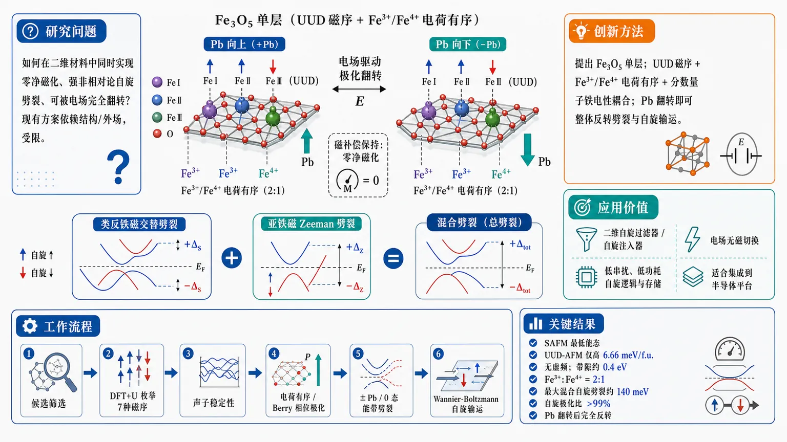
研究问题如何在二维材料中同时实现“零净磁化、强非相对论自旋劈裂、并且还能被电场完全翻转”的自旋电子学平台；现有可切换 Zeeman 型或 altermagnetic 方案往往依赖固定结构、层间滑移或外场，劈裂强度和电控性都受限。创新方法提出 Fe₃O₅ 单层，将 UUD 磁序、Fe³⁺/Fe⁴⁺ 电荷有序与分数量子铁电性耦合，形成“类反铁磁交替劈裂 + 亚铁磁 Zeeman 劈裂”的混合自旋劈裂；核心 Aha 点是只需翻转 b 轴极化 P_b，就能完全反转带劈裂与自旋输运，而总磁化仍保持为零。工作流程从二维 M₃X₅ 单层候选出发，先用 DFT+U 枚举并比较 7 种磁序的能量与声子稳定性；再分析 Fe³⁺/Fe⁴⁺ 电荷有序、Berry 相位极化与磁电耦合，确认 UUD-AFM 与 SAFM；随后构造 +P_b / 0 / −P_b 三种极化态，计算无 SOC 与含 SOC 的能带劈裂；最后用 Wannier-Boltzmann 计算面内各向异性自旋输运与自旋极化比。关键结果SAFM 为最低能态，UUD-AFM 仅高 6.66 meV/f.u. 且同样无虚频；UUD-AFM 具有约 0.4 eV 带隙、Fe³⁺:Fe⁴⁺=2:1 电荷有序、净磁化约 0，并出现最大约 140 meV 的混合自旋劈裂；沿面内任意方向的自旋极化输运都保持强各向异性，极化比超过 99%，电场翻转 P_b 后带劈裂与自旋标签可整体反转。应用价值可作为二维自旋过滤器和自旋注入器，用电场无磁切换控制自旋流，适合低串扰、低功耗的自旋逻辑与存储器件；同时零净磁化和高自旋极化兼得，适合与半导体平台集成。第一部分：核心概览
这篇工作提出 Fe₃O₅ 单层 作为二维多铁候选体，在 零净磁化 下同时实现 altermagnetic-like 交替自旋劈裂 与 Zeeman 型自旋劈裂。其关键机制来自 UUD 磁序、Fe³⁺/Fe⁴⁺ 电荷有序 与 fractional quantum ferroelectricity 的耦合，使自旋劈裂可被 电场完全翻转，并保持 >99% 的自旋极化输运。这把“可电控的非相对论自旋劈裂”推进到真正的二维内禀体系中。
---
第二部分：结构化快速回顾
《Ferroelectric switchable altermagnetic-like compensated ferrimagnets with charge ordering》（None，）
- 背景：非寻常共线磁体可在几乎零净磁化下产生显著自旋劈裂，但现有 Zeeman 型可切换方案 多依赖固定结构或层间滑移，电控性和劈裂强度都受限。
- 方法：基于 DFT+U、声子谱、Berry 相位极化、Wannier-Boltzmann 输运，系统比较 7 种磁序并分析电场翻转前后电子结构与自旋输运。
- 结果：SAFM 与 UUD-AFM 最稳定/次稳定；UUD-AFM 具有 0.4 eV 带隙、Fe³⁺:Fe⁴⁺=2:1 电荷有序、净磁化为 0、最大劈裂 140 meV，极化比 >99%。
- 讨论：混合劈裂源于 全局 Zeeman 劈裂 与 局域 altermagnetic-like 交替劈裂 的叠加；翻转 P_b 可反转带劈裂与自旋输运。
- 局限：证据全部来自第一性原理；缺少实验合成、有限温度、畴结构、缺陷、基底与真实电导寿命效应。
- 结论：Fe₃O₅ 单层提供一种 零磁化、强自旋极化、可电控 的二维自旋电子学平台，可用于 spin filter / spin injector。
---
第三部分：逐章节冷凝解析
Abstract
混合自旋劈裂机制被直接提出
Fe₃O₅ 单层被定位为同时含有两类劈裂的体系：*“a hybrid spin-splitting mechanism, with the superposition of the altermagnetic-like k-path alternating splitting and ferrimagnet-like Zeeman splitting”*。这里的核心不是单一的 altermagnet 或 compensated ferrimagnet，而是两种非相对论劈裂在同一材料中叠加；这种叠加使其既保留 k 依赖的交替劈裂，又具有 全布里渊区的 Zeeman 式劈裂。
电场可完全切换是核心功能目标
摘要给出最重要的功能性结论：*“such spin-splitting can be fully switched by an electric field”*。电控切换并非来自外加磁场，而是来自 spin-charge coupling magnetoelectricity；这使材料成为真正意义上的 非易失电控自旋劈裂平台。
高自旋极化输运接近半金属，但净磁化为零
输运性质直接达到器件门槛：*“Its conductivity is highly spin-polarized, with a polarization ratio above 99%”*，同时保持“*with zero magnetization*”。这意味着其输出接近半金属的自旋过滤能力，却没有铁磁净磁矩带来的磁串扰问题。
---
1 Introduction
altermagnet 与 compensated ferrimagnet 的差异被界定为两类零磁化自旋劈裂
开篇把问题拆成两类：altermagnets 通过破坏 PT、保留 TM/TR 产生 k 空间交替劈裂；compensated ferrimagnets 则通过破坏自旋上/下子晶格间所有对称性，获得 全布里渊区 Zeeman 型劈裂。对应原句是：*“altermagnets, and compensated ferrimagnets, exhibit nearly zero net magnetization but nonrelativistic spin splitting”*。这定义了本文要跨越的边界：从“仅有一种劈裂”走向“可切换、可叠加的双机制劈裂”。
现有可切换 Zeeman 劈裂方案的瓶颈在于结构刚性
先前方案包括异质结、Mn₂SiSnN₄ 合金、Janus 双层、应变 altermagnets，但都依赖固定几何框架。原文明确指出：*“all these approaches rely on fixed structural frameworks, and thus their Zeeman-type spin splittings are difficult to electrically switch”*。这正是本工作的设计动机：不是在外部结构上做文章，而是在材料内部引入可翻转自由度。
二维 vdW 滑移虽可实现补偿铁磁性，但劈裂太弱
二维层间滑移可以产生 compensated ferrimagnetism，但弱层间耦合导致劈裂只有“*several tens of meV*”，不足以支持高自旋极化输运。这里给出器件层面的判据：不仅要有劈裂，还要有足够大的劈裂幅度与输运极化。
M₃X₅ 单层的几何特征天然适合破坏关键对称性
M₃X₅ 单层被描述为新一类二维材料：每个 M 位点位于 square pyramidal X-cage 中，且邻近金字塔取向呈 120° 配置。关键句是：*“the orientations of neighboring pyramids are noncollinear, giving a 120° configuration”*。这种非共线取向天然破坏 Tτ 与 PT 相关对称性，为异常自旋劈裂预埋结构基础。
设计原则是把铁电性与电荷有序作为额外自由度
最终设计逻辑被明确写出：*“by introducing additional degrees of freedom such as ferroelectricity and charge ordering, such spin splittings can be switched by tuning these symmetries”*。也就是说，电荷有序不仅决定价态分布，还决定哪些对称性可以被铁电翻转选择性地打破。
Fe₃O₅ 单层被定位为多铁体系
最终预言是：*“the Fe 3 O 5 monolayer is multiferroic, exhibiting both ferroelectricity and altermagnetic-like compensated ferrimagnetism”*。并且它是 窄带隙半导体（约 0.4 eV），其“*spin-polarized conductivity is highly anisotropic*”，最大极化比接近 100%。
---
2 Results and Discussion
七种磁序的总比较给出 SAFM 作为基态
对 Fe 三角晶格枚举了 7 种磁序：FM、SAFM、ZAFM、YAFM、UUD-FiM、UUD-AFM、UUD-AFM2。DFT 能量排序显示 SAFM 最低，其余依次为：FM 658.75 meV/f.u.、ZAFM 114.01、YAFM 141.37、UUD-FiM 58.82、UUD-AFM 6.66、UUD-AFM2 174.69 meV/f.u.。对应原句：*“The SAFM state has the lowest energy.”*
这一步的作用不是找“唯一真实基态”，而是证明 UUD-AFM 非常接近基态，只比 SAFM 高 6.66 meV/f.u.，足以通过应变调控切换。
SAFM 为正交结构，带有全局 Tτ 保护的全布里渊区简并
SAFM 的空间群是 C2mm，晶格常数 a = 5.080 Å, b = 8.824 Å。声子谱无虚频，说明动态稳定。对称性中保留 m_b、m_c、C₂a，允许 a 轴极化。更关键的是，反平行自旋亚晶格可由 Tτ 连接，原文写作：*“this global T τ symmetry”* 使得“*spin degeneracy across the entire Brillouin zone*” 保持成立。结果是 SAFM 不出现自旋劈裂。
UUD-AFM 破坏全局 Tτ，形成单独的低能补偿铁磁相
UUD-AFM 是次低能态，仅比 SAFM 高 6.66 meV/f.u.，声子谱同样无虚频。磁序诱导结构从正交畸变为单斜 Pm，参数为 a = 5.109 Å, b = 8.812 Å, γ = 90.5°。原文指出：*“Via the spin-lattice coupling, this magnetic order further distorts the crystalline structure to a monoclinic one”*。
这一畸变打开了新的对称允许项，尤其是 b 轴极化，使后续的电控切换成为可能。
价态非整数并未导致金属性，根源是 Fe³⁺/Fe⁴⁺ 电荷有序
名义 Fe 平均价态为 10/3，若均匀分布应当金属化；但 SAFM 与 UUD-AFM 都是绝缘体。关键原因是 *“spontaneous charge ordering, i.e., the formation of Fe 3+ -Fe 4+ order with a ratio of 2:1”*。
局域磁矩也呈 2:1 分裂，大约为 4.1 μB 与 3.6 μB 两类。电荷有序造成 Fe 位点电子密度不均、局域磁矩不等，从而为后续的 补偿铁磁性 与 隐含磁电耦合 提供微观基础。
UUD-AFM 同时满足严格补偿与窄带隙绝缘
在 UUD-AFM 中，Fe 位点积分磁矩总和约 −0.04 μB，O 位点贡献约 0.025 μB，互相抵消后总磁矩为 0。原文给出严格条件：*“N ↑ = N ↓”*，因此 *“M = μB (N↑ - N↓)=0”*。
SOC 之后净磁矩仍仅约 0.002 μB/Fe，说明这是一个真正的 compensated ferrimagnet，而非近似补偿。带隙约 0.4 eV，结合零磁化和绝缘性，形成功能上很罕见的组合。
铁电极化在两个方向都很大，且呈 fractional quantum ferroelectricity
UUD-AFM 属于极性点群 m，因此 a、b 两轴都允许极化。Berry 相位计算得到 Pₐ = 12.54 μC/cm²，P_b = 34.87 μC/cm²。原文把这个异常大值归因为 *“fractional quantum ferroelectricity (FQFE)”*。
进一步扣除分数电荷量子后，残余极化仅 −0.14 μC/cm²（a 轴）和 2.09 μC/cm²（b 轴），说明大部分极化来自 Wannier center 的分数量子位移，只有较小部分来自磁致晶格畸变。
磁电耦合表现为局域磁矩可翻转，但总磁矩仍保持零
铁电翻转会引发电荷再分布，并把 Fe 局域磁矩从 −0.04 μB 调到 0.04 μB。原文将其称为 *“hidden magnetoelectricity”*。
关键微妙点在于：磁电响应存在于 局域通道，但宏观上因严格补偿，总磁化 M 仍为 0。这使得材料具备可写入的局域自旋态，却不产生宏观磁场噪声。
P_b 是磁电切换的真正控制旋钮，Pₐ 基本无关
通过沿 b 轴重排 UUD 序列，构造出 A、B、C 三种状态：A 和 C 等能，B 比它们高 17.3 meV/f.u.。B 的空间群为 P2₁am。
最关键的对比是：P_b 在 A/C 中分别为 +P_b 与 −P_b，而 B 中为 0；Pₐ 在三者间几乎不变。原文指出：*“the switching of only the P b component can switch m Fe, while P a is irrelevant”*。
这说明磁电切换不是一般极化响应，而是对 b 轴铁电分量 的选择性耦合。
A 态出现混合自旋劈裂，最大劈裂约 140 meV
A 态的无 SOC 带结构显示：一般性的 Zeeman-type splitting 全局存在，同时在 H-Γ-H₁ 路径附近出现明显 altermagnetic-like alternating splitting。最大带劈裂达到 140 meV，对应顶端价带。
2D 色图进一步显示，band pair I 和 IV 具有显著交替特征，band pair II 更偏 Zeeman 型，band pair III 为混合型。原文归纳为：*“the system possesses a hybrid spin-splitting mechanism”*。
这不是单纯“有劈裂”，而是 劈裂形态在不同能带与不同 k 路径上并不相同。
altermagnetic-like 特征来自局域对称保留，而 Zeeman 特征来自全局对称破坏
即便没有晶格畸变，UUD-AFM 磁序已经破坏全局 Tτ 与 PT。但局域上，反向自旋金字塔之间的 TR 与 TM 仍保留，因此出现 altermagnetic-like 行为。原文写得很直接：*“the local T R and T M symmetries between opposite-spin pyramids remain strictly intact”*。
当只考虑 FQFE 引起的分数位移时，局域对称仍大体未破坏；只有磁致极化的那一小部分才弱弱地破坏它们。因此 altermagnetic-like 交替劈裂被保留，而 Zeeman 全局劈裂同时存在。
B 态恢复简并，证明劈裂确由 Pb 控制
B 态中，因 Tτ 在反平行自旋位点之间重新成立，能带恢复简并。原文写作：*“the band degeneracy is observed in state B”*，其保护机制是 *“protected by the T τ symmetry”*。
A 与 B 的差别直接证明：P_b 的出现/消失 决定了自旋劈裂是否出现。
A 与 C 之间的带结构翻转可通过镜面对映建立
由于 A/C 的单斜畸变很弱，它们的布里渊区稍有差异，但可通过镜面对称 mₖ₁ 配准。映射后，A 态的 spin-up 带与 C 态的 spin-down 带重合，反之亦然。原文给出结论：*“the spin-up bands of state A (+P b) coincide with the spin-down bands of state C (−P b), and vice versa”*。
这说明铁电翻转不只是调制幅值，而是真正反转自旋标签与能带对应关系。
Mn₃O₅ 提供类比验证
补充材料中，Mn₃O₅ 单层 也显示出类似 UUD-AFM 及电控切换行为。虽然只是辅助材料，但说明该设计原则不是 Fe₃O₅ 的偶然特例，而可能具有 族群可迁移性。
对称性允许的自旋电导张量不再满足简单等式
磁点群为 m'，其中 TMz 对面内自旋电导张量不施加强约束，因此满足 *“σij↑ ≠ ±σij↓”*。
这意味着不同自旋通道在 xx、yy、xy 分量上都可以不同，直接为各向异性自旋过滤提供输运基础。
自旋极化输运强各向异性，且在所有方向上都不为零
5 K 下的输运计算表明：σxx↑ ≠ σxx↓, σyy↑ ≠ σyy↓, σxy↑ ≠ ±σxy↓。沿任意面内方向 φ，定义
σφ^s = σxx^s cos²φ + σyy^s sin²φ + σxy^s sin(2φ)。
对应的 spin-polarized conductivity 为 σφ^SP = σφ↑ − σφ↓，呈强各向异性。不同于纯 altermagnets，这里并不存在某些方向上的零点，因为 compensated ferrimagnet 的 全局 Zeeman 分量 使得 σφ^SP 始终非零。原文强调：*“in altermagnets, there are always some special directions along which σ φ^SP becomes zero ... In contrast, here σ φ^SP is always nonzero”*。
铁电翻转使输运满足补角关系
对 +P_b 与 −P_b 两种状态，自旋极化电导满足：
*“σ φ^SP of +P b is equal to −σ 180°−φ^SP of −P b”*。
这不是简单的数值反号，而是 角度补映射，说明翻转同时改变张量各向分量的符号与坐标映射。
微量空穴掺杂大幅抬升自旋极化电导，但不改变拓扑特征
以 φ = 90° 为例，空穴掺杂通过把费米能级设到 −0.023 eV 实现，对应 0.02 holes/Fe。掺杂后，σ90°^SP 的绝对值上升几个数量级，而自旋极化比 SP 在考察区间仍 >99%。
对比基准材料：RuO₂ 59%、FeSb 50%、CuF₂ 78%、KV₂Se₂O 60%。
原文将这一结果归因于：*“Such prominent spin polarization ratios ... originate from the Zeeman-type band splitting.”*
这说明真正决定器件效率的是 Zeeman 部分的全局偏置，而不是仅有交替劈裂。
---
3 Conclusions
核心结论是“零磁化 + 可电控 + 高极化”三者同时成立
总结句极其明确：*“a mechanism of compensated ferrimagnets with both altermagnetic-type and Zeeman-type splittings”*。
这套机制由 UUD 磁序 + 电荷有序 驱动，并且 *“is ferroelectrically switchable”*。
最终器件指向也很清楚：*“highly anisotropic spin-polarized conductivity, with the polarization ratio above 99% under zero net magnetization”*。
功能定位是 spin injector 与 spin filter
高极化、零磁化、二维、可电控，使 Fe₃O₅ 单层适合作为 *“a spin injector and filter”*。
结论把材料从“新奇磁性”推进到“可用器件候选”，且电控机制由 magnetoelectric spin-charge coupling 实现。
---
4 Computational Methods
第一性原理框架与关键参数完全给定
计算基于 VASP/PAW，交换关联泛函为 PBE-GGA。真空层厚度 20 Å，平面波截断能 500 eV，k 网格 6×4×1。
自洽收敛阈值 10⁻⁶ eV，结构优化力阈值 0.01 eV/Å。这些参数足以支撑二维材料的几何与电子结构分析。
强关联修正在 Fe-3d 上取 Ueff = 4 eV
采用 Dudarev U，并在 Fe 的 3d 轨道 上施加 Uₑff = 4 eV。这对 Fe 氧化物中局域化与电荷有序的稳定性至关重要。
声子、极化和输运分别用标准工具链求解
声子谱用 Phonopy；极化用 Berry phase；输运用 BoltzWann/Wannier90。
输运中的弛豫时间设为 10 fs，k 网格提高到 150×100×1。这意味着电导数值更偏向“定性到半定量的器件可行性判断”，而不是实验拟合。
---
第四部分：深度理解与语言支持
1) 术语解析
Altermagnetic-like
“altermagnetic”强调 零净磁化但存在 k 依赖自旋劈裂；“altermagnetic-like”表示形态上接近，但不完全满足标准 altermagnet 的全部对称条件。这里之所以加 “-like”，是因为体系同时含有 全局 Zeeman 劈裂，不再是纯粹的交替劈裂磁体。
Compensated ferrimagnet
不是普通反铁磁，也不是铁磁。各子晶格磁矩 大小不等、方向相反，总磁矩严格抵消为零，但能带仍呈自旋分裂。与 antiferromagnet 的差别在于：不要求子晶格完全等价，因此更容易产生 Zeeman 型劈裂。
Tτ symmetry
时间反演 T 与 平移 τ 的组合对称性。若两个反平行自旋位点可由 Tτ 互相映射，能带往往保持简并。这里 UUD-AFM 通过结构与磁序共同作用使全局 Tτ 被破坏，从而解除简并。
Fractional quantum ferroelectricity (FQFE)
不同于“常规铁电”的整数晶格周期位移，FQFE 的极化来自 分数量子位移，即 Wannier center 或离子位移跨越 晶格周期的分数倍。这解释了为何 极化值异常大，但其中大部分并不等价于强磁电耦合。
Hidden magnetoelectricity
宏观磁化仍为零，但 局域磁矩随极化翻转而改变。这类磁电耦合“藏”在局域变量里，普通测量可能不容易直接看到，因此称为 hidden。它的存在恰好适合做 低串扰的写入/读取。
2) 疑难查证
为何既有 altermagnetic-like，又有 Zeeman 型劈裂？
关键在于两个层级的对称性不同。
- 全局层级：UUD 磁序打破 Tτ 与 PT，于是所有 k 点都允许自旋分裂，形成 Zeeman 背景。
- 局域层级：若忽略磁致微小畸变，反平行自旋金字塔之间仍保有局域 TR/TM 关系，于是某些路径上保留 交替劈裂的纹理。
所以不是两种独立物理拼贴，而是 同一套对称性破缺在不同空间尺度上的投影。
为何只有 P_b 决定磁电切换？
A/B/C 三态里，Pₐ 基本不变，P_b 在 +、0、− 三种取值间切换。磁矩变化只在 P_b = 0 时消失。说明耦合不是“极化大小”问题，而是 极化方向与 Fe-trimer 排布相对关系 的问题。
可把它理解成：P_b 改变了沿 b 轴的电荷有序相位，而这正是调制局域磁矩差异的关键自由度。
为何 0.4 eV 带隙仍能有很强输运自旋极化？
带隙大小决定载流子总量，但自旋极化比由费米能附近的 两自旋通道导电率差异 决定。这里 Zeeman 型全局劈裂使得某一自旋通道在费米附近始终更有利，因此即便总体载流子较少，相对极化率仍接近 100%。微量掺杂只是在不破坏这种偏置的前提下，提升绝对电导。
---
第五部分：创新评估与关联
1) 创新性判断
新颖性主要体现在“三重耦合”而非单点突破
过去 2–5 年相关工作中，最强进展集中在三条线：
- 可切换 altermagnetism，多依赖应变、外场、层间滑移；
- 补偿铁磁体中的 Zeeman 型劈裂，多为异质结或结构工程；
- 二维多铁/磁电耦合，但常与强自旋极化输运难以兼得。
这篇工作把三者合并成一个内禀二维体系：
- UUD 磁序 提供补偿铁磁背景；
- Fe³⁺/Fe⁴⁺ 电荷有序 提供绝缘性与局域不等价；
- FQFE 提供可翻转极化；
- 最终得到 altermagnetic-like + Zeeman 的混合劈裂，并能被 电场完全切换。
前人没解决的关键问题是“可电控且足够强的零磁化自旋劈裂”
很多工作只能做到其中之一：
- 有零磁化，但劈裂弱；
- 有劈裂，但不能电控；
- 能电控，但依赖外部层状堆叠或应变，不够内禀。
这里的突破是把 >99% 自旋极化输运、零净磁化、电场翻转 三者同时实现，而且在单层材料内部完成。
最重要的概念推进是：从“切换磁序”升级为“切换劈裂类型”
以往电控磁性工作多是翻转磁矩方向或磁相态；这里直接翻转的是 P_b 驱动的自旋劈裂纹理，包括 带结构中 spin-up/spin-down 的对应关系。
这意味着器件逻辑不再只是“1/0 的磁态切换”，而是“自旋输运通道图样的可编程重构”。
相对近年相关工作的差异点
- 相比 ferroelectric switchable altermagnetism，这里不是纯 altermagnet，而是 compensated ferrimagnet + altermagnetic-like 混合。
- 相比 switchable 2D altermagnets，这里的电控来自 内禀铁电与电荷有序，不是外部应变或层间滑移。
- 相比 type-III multiferroics，这里的突出指标不是仅有磁电耦合，而是 极高自旋极化输运。
- 相比 半金属，这里保留 零净磁化，更适合低串扰集成。
一句话概括创新点
把 二维补偿铁磁、altermagnetic-like 交替劈裂、Zeeman 型全局劈裂、铁电翻转、FQFE、电荷有序 压缩到同一单层体系里，并证明其输运可达到 >99% 自旋极化。这一组合是近年相关工作里最完整的一类方案。
-
20
📄 摘要：arXiv:2607.26839v1 发布类型：新。摘要：霍普夫子是被预测存在于多种磁性体系中的三维（3D）拓扑孤子，但其实用价值在很大程度上一直受限于低温环境。在这里，我们通过在手性磁体 Co8Zn8Mn4 中于室温及室温以上展示稳定的磁性霍普夫子，克服了这一温度限制。利用配备原位光激发功能的透射电子显微镜，我们用飞秒激光脉冲生成磁性霍普夫子。长期观测进一步揭示了其在室温下的类布朗运动，以及在接近高温区域时发生的热激活坍缩。结合微磁模拟和同伦群分析，我们的实验观测揭示了通过双半子对融合形成霍普夫子的机制。这些发现确立了室温磁性霍普夫子，并为在技术相关条件下进一步研究它们提供了框架。
📖 英文原文
arXiv:2607.26839v1 Announce Type: new Abstract: Hopfions are three-dimensional (3D) topological solitons predicted to exist in diverse magnetic systems, yet their practical utility has been largely restricted to cryogenic environments. Here, we overcome this temperature constraint by demonstrating stable magnetic hopfions in the chiral magnet Co8Zn8Mn4 at and above room temperature. Using a transmission electron microscope equipped for in situ optical excitation, we generate magnetic hopfions with femtosecond laser pulses. Long-term observations further reveal Brownian-like motion at room temperature and thermally activated collapse upon approaching the high-temperature regime. Together with micromagnetic simulations and homotopy group analysis, our experimental observations uncover the hopfion formation mechanism through the fusion of bimeron pairs. These findings establish room-temperature magnetic hopfions and provide a framework for their further studies under technologically relevant conditions.
💡 亮点：该研究在手性磁体 Co8Zn8Mn4 中于室温及以上实现了稳定磁性霍普夫子，突破了此类三维拓扑孤子通常受限于低温的局面。作者使用具备原位光激发能力的透射电子显微镜，以飞秒激光脉冲生成霍普夫子，并观察到室温下类布朗运动及高温附近热激活坍缩。结合微磁模拟和同伦群分析，研究揭示其通过双半子对融合形成的机制。
🔬 与我们研究方向的关系
📐 方法要点：方法上，这篇工作可归入磁性机器学习势、自旋 Hamiltonian、自旋—晶格动力学和非共线磁结构。从摘要能确认的线索包括：论文题目和摘要中可确认的方法，以及磁性、自旋以及自旋—晶格耦合, 声子、有限温度和输运性质对应的结构或物理量。若迁移到团队流程，应采用“训练集同时覆盖原子位移和自旋构型，显式标注交换、各向异性、DMI 或自旋力；用自旋 MD/MC 与 DFT 自旋能差验证温度、应变和缺陷下的磁序稳定性”的分层验证，而不是只比较单点能量或单一回归误差。还需核对原文的训练数据规模、损失函数、边界条件和误差分解，才能判断其是否适合团队的材料模拟任务。
🔗 相关工作关联：它与五位研究人员已有工作的直接连接是：磁性机器学习势、自旋 Hamiltonian、自旋—晶格动力学和非共线磁结构已经出现在团队的方向画像中，可对应到CrI₃/CrSBr 等范德华磁体、反铁磁/交替磁材料、磁性氧化物。与传统只做 0 K formation energy/静态势垒的工作相比，这里更应关注磁性、自旋以及自旋—晶格耦合, 声子、有限温度和输运性质在温度、缺陷、应变或外场下的变化；摘要没有给出的模型细节不作延伸判断。这种联系应通过同一材料体系上的独立基准和跨分布测试确认，不能仅凭方法名称或期刊来源下结论。
💡 对你方向的启示：对当前研究最具体的启示不是泛泛地“使用 ML”，而是把该文的磁性机器学习势、自旋 Hamiltonian、自旋—晶格动力学和非共线磁结构嵌入现有材料模拟链：先在CrI₃/CrSBr 等范德华磁体、反铁磁/交替磁材料、磁性氧化物中选择一个已有 DFT 数据基础的体系，按“训练集同时覆盖原子位移和自旋构型，显式标注交换、各向异性、DMI 或自旋力；用自旋 MD/MC 与 DFT 自旋能差验证温度、应变和缺陷下的磁序稳定性”补充训练/验证集，再比较《室温磁性霍普夫子》对应模型对相稳定、极化/磁序、缺陷或动力学指标的改进。若结果只在训练分布内有效，应通过跨温度、跨应变、跨缺陷浓度和跨超胞测试检查可迁移性。第一步可以选取团队已有的 HfO₂、二维磁体、半导体缺陷或钙钛矿数据做小样本试验，再决定是否扩大到生产级计算。
📖 展开分析 + 配图
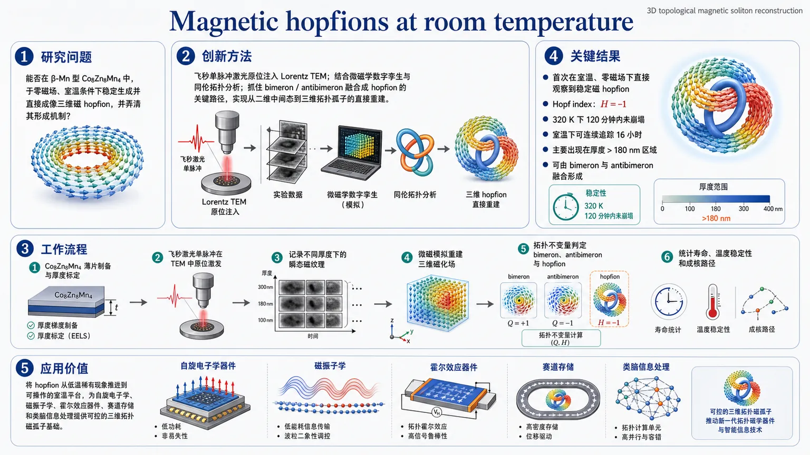
研究问题能否在β-Mn型 Co8Zn8Mn4 中，于零磁场、室温条件下稳定生成并直接成像三维磁 hopfion，并弄清其形成机制？创新方法将飞秒单脉冲激光原位注入 Lorentz TEM，结合微磁学“数字孪生”和同伦拓扑分析，抓住 bimeron/antibimeron 融合成 hopfion 的关键路径，实现从二维中间态到三维拓扑孤子的直接重建。工作流程Co8Zn8Mn4 薄片制备与厚度标定 → 飞秒激光单脉冲在 TEM 中原位激发 → 记录不同厚度下的瞬态磁纹理 → 用微磁模拟重建三维磁化场 → 通过拓扑不变量判定 bimeron、antibimeron 与 hopfion → 统计寿命、温度稳定性和成核路径。关键结果首次在室温、零磁场下直接观察到稳定磁 hopfion；Hopf index 为 H=-1；在 320 K 下 120 分钟内未崩塌，室温下可连续追踪 16 小时；hopfion 主要出现在厚度大于约 180 nm 的区域，并可由 bimeron 与 antibimeron 融合形成。应用价值把 hopfion 从低温稀有现象推进到可操作的室温平台，为自旋电子学、磁振子学、霍尔效应器件、赛道存储和类脑信息处理提供可控的三维拓扑磁孤子基础。第一部分：核心概览
该研究首次在β-Mn型 Co₈Zn₈Mn₄中实现并直接成像室温磁 hopfion，证明其可由飞秒激光单脉冲在零磁场下稳定生成，并在 320 K 仍保持至少 120 分钟，室温下可连续观察 16 小时。结合Lorentz TEM、微磁学“数字孪生”与同伦群分析，重建了bimeron/antibimeron 融合成 hopfion的拓扑路径，突破了以往 hopfion 主要局限于低温 B20 磁体的瓶颈。
---
第二部分：结构化快速回顾
《Magnetic hopfions at room temperature》（None，）
- 背景：hopfion 是三维拓扑磁孤子，但先前实验几乎都受限于低温；室温稳定制备仍属空白。
- 方法：在 Co₈Zn₈Mn₄ 薄片上，使用带飞秒激光的 in situ Lorentz TEM，并结合微磁模拟与拓扑分类。
- 结果：在 20°C 以上、零场下直接观察到稳定 hopfion；在 190 nm 厚样品中可维持长时间，320 K 下 120 分钟内不崩塌。
- 讨论：hopfion 的形成路径可由 bimeron + antibimeron 融合解释，且其状态对厚度和互相朝向极其敏感。
- 局限：单次成核过程的纳秒尺度无法被 TEM 直接分辨；实验窗口集中在 >180 nm 厚度区域。
- 结论：确立了室温 hopfion 实验平台，并为其在自旋电子学、magnonics、信息处理中的应用奠定基础。
---
第三部分：逐章节冷凝解析
Magnetic properties of Co₈Zn₈Mn₄
晶体结构决定了手性背景
Co₈Zn₈Mn₄ 归入β-Mn 型手性结构，且存在两种对映体；右手与左手结构分别对应 P4₁32 和 P4₃32。这一点与 B20 磁体不同，后者的两种对映体同属 P2₁3。原文关键表述为：*"the two enantiomers of the β-Mn structure belong to different cubic space groups, P4₁32 and P4₃32"*。
这意味着晶体手性本身就为DMI 稳定的螺旋态提供结构基础。
材料参数把室温实验窗口“钉死”在可操作范围
该晶体的居里温度为 T_c = 350 ± 5 K，室温饱和磁化强度为 Mₛ = 240 kA/m。原文写明：*"For the Co₈Zn₈Mn₄ crystal used in this study, the Curie temperature was T_c = 350 ± 5 K, and the room-temperature saturation magnetization was Mₛ = 240 kA/m"*。
这一温度尺度高于室温约 20 K 左右，使得室温 hopfion不再处于临界低温边缘，而是处于材料本征稳定区间。
螺旋周期与 Lorentz TEM 可见性相匹配
交换作用与 DMI 竞争形成螺旋基态，实验测得螺旋周期 L_D = 140 nm。当螺旋波矢 k 位于样品面内时，Lorentz TEM 能看到条纹对比；当 k 垂直样品面时，对比消失。原文对应为：*"the equilibrium helical period was determined to be L_D = 140 nm"*，以及 *"When k vector is perpendicular to the sample plane, the helical state produces no Lorentz TEM contrast"*。
这一几何选择性，为后续hopfion 识别提供了对背景态的判据。
零场条件利于观察 hopfion
由于样品在零场下可保持螺旋背景，且某些取向的螺旋在 TEM 下对比被抑制，形成了一个适合零外场观察三维纹理的平台。该章节的核心判断是：Co₈Zn₈Mn₄ 的温度和手性参数，恰好把 hopfion 的可视化窗口推到了室温。
原文总结句为：*"This provides a favorable platform for the formation and observation of hopfions at zero magnetic field."*
---
In situ laser excitation in TEM
飞秒激光与 Lorentz TEM 的原位耦合
系统搭载了飞秒激光器，可在 TEM 内直接触发磁结构成核。激光参数为 520 nm、300 fs、线偏振。原文关键句：*"The laser pulses had a wavelength of 520 nm, a duration of 300 fs, and linear polarization."*
这意味着磁结构的生成不是外场缓慢扫出，而是由超快局域加热/激发触发。
样品尺度与光斑尺度保证近似均匀照射
样品横向尺寸约 5 μm × 5 μm，而光斑直径比样品大数倍，因此整个视野近乎均匀受照。原文：*"the laser spot diameter was several times larger, ensuring nearly homogeneous irradiation of the entire sample."*
均匀照射减少了“局部热点”引起的伪像，使后续纹理分类更可信。
两类厚度样品用于拼接形成路径
实验使用了两种几何：均匀厚片与楔形厚片，厚度范围约 155–215 nm；更一般的薄片范围为 100–220 nm。原文明确指出：*"Two types of samples were investigated: plates of nearly uniform thickness and wedged plates with thicknesses ranging from approximately 155 to 215 nm."*
这为“厚度替代时间”的路径重建提供了关键手段。
hopfion 只在较厚区域出现
实验上 hopfion 只在厚度 > ~180 nm 的区域稳定出现。原文：*"Experimentally, hopfions were observed only in sample regions with thicknesses greater than approximately 180 nm."*
这说明 hopfion 的形成并非只依赖材料化学成分，还强烈受几何维度控制。
激光阈值随厚度增加而升高
单脉冲诱导拓扑纹理的阈值随厚度上升而增加，因此后续用两档 fluence：薄样品（106、140 nm）用 4.8 mJ/cm²，厚样品（190、215 nm）用 7.7 mJ/cm²。原文：*"the threshold laser fluence ... increases with sample thickness"*。
这说明能量沉积和纹理形成之间存在明显的厚度依赖耦合。
---
Observation of room-temperature hopfions
室温 hopfion 的直接成像成功
在 Co₈Zn₈Mn₄ 中，单脉冲激光后可直接得到稳定 hopfion。原文直述：*"we demonstrate stable magnetic hopfions in Co₈Zn₈Mn₄ at room temperature"*。
这是整篇工作的核心实验结果：室温、零场、直接可视化。
稳定性可达 320 K，且 120 分钟无崩塌
在 190 nm 厚样品中测得寿命随温度变化：320 K 时 3 次观测均为 *>120 min*，第四次未列；到 326 K 仍有 >50 min，328 K 降到几分钟量级，332 K 仅 4–24 s。原文关键句：*"At temperatures up to 320 K, no collapse was observed during the 120-minute observation window."*
这给出非常明确的热稳定边界：320 K 以下极稳，接近 T_c 后快速失稳。
16 小时室温连续观察到 Brownian-like motion
在室温下的长时程观测中，孤立 hopfion 被连续跟踪 16 小时。其行为被描述为随机平移和转动的Brownian-like motion。原文：*"The hopfions exhibit Brownian-like motion characterized by random translational and rotational displacements."*
这说明 hopfion 不只是“存在”，还处于热涨落驱动的缓慢动力学中。
热涨落不改变拓扑不变量
尽管形状受扰动，拓扑性质保持不变。原文：*"moderate thermal fluctuations perturb the magnetic textures, they do not alter their topological invariants."*
因此，室温下观察到的不是“模糊的热纹理”，而是拓扑上稳定的三维孤子。
Hopf index 被定为 H = −1
对实验纹理及其数字孪生进行拓扑分析后，得到 Hopf index H = −1。原文：*"For the experimentally observed hopfion ... the Hopf index was calculated to be H = −1."*
这给出了严格的拓扑定性，而非仅凭图像形态命名。
---
Hopfion formation through bimeron fusion
直接成核难以被 TEM 时间分辨
纳秒级成核过程超出 TEM 的原生时间分辨能力。原文：*"the nanosecond timescale is inaccessible to TEM, which typically requires exposure times of milliseconds to seconds."*
因此，直接“看见” hopfion 从无到有并不现实，需要借助中间态和模拟重建路径。
bimeron/antibimeron 融合被捕获为形成路径
通过观察激光诱导的bimeron，捕捉到其在热驱动下与 antibimeron 融合成 hopfion 的过程。原文：*"we captured their thermally driven fusion into a hopfion"*。
这把先前的“猜测机制”变成了直接证据链。
三维拓扑分类从 (qt, qb, h) 出发
3D 纹理采用三元组 (qₜ, q_b, h) ∈ Z³ 分类，其中 qₜ、q_b 是两端面的 meron 拓扑电荷，h 与 Hopf index 密切相关。原文：*"the classification ... is based on a triplet of topological invariants (qₜ, q_b, h) ∈ Z³."*
这比单纯用 Q 或 H 更一般，能同时处理贯穿厚度的 string 与 局域 hopfion。
bimeron 融合给出 Hopf index 的代数关系
对于 bimeron 与 antibimeron，拓扑量可写成 (−1, 1, −v) + (1, −1, −v) = (0, 0, −2v)。原文：*"(−1,1,−v)+(1,−1,−v)=(0,0,−2v)"*。
在本体系中 v = 1，所以对应 H = −2v = −2 的“理想周期性”结果，但由于样品表面破坏周期性，只稳定出其中一个 hopfion。原文明确写道：*"Because the free sample surfaces break the translational periodicity ... only one of the two hopfions is stabilized."*
只有特定互朝向的 bimeron/antibimeron 能融合
若两者相对朝向不对，则会保持分离，不会直接并合为 hopfion。原文：*"only a bimeron–antibimeron pair with the same mutual orientation can transform into this hopfion."*
这说明成核不仅是“有没有对撞”，而是几何相位是否匹配。
hopfion 的转动与平移是螺旋耦合的
沿 helix 轴平移会伴随旋转，形成screw motion。原文：*"Translation of a hopfion along the helix axis is intrinsically coupled to its rotation, resulting in screw motion."*
这解释了为何室温下会看到平移 + 旋转的联合漂移。
---
Transient bimeron-hopfion textures observed at different thicknesses
厚度序列重建了“形态演化图”
在 106 nm、140 nm、186 nm、216 nm 四种厚度下，得到依次更接近 hopfion 的稳定构型。原文：*"a specific thickness"* 对应不同 equilibrium configuration。
该策略以厚度替代时间，弥补了纳秒成核过程无法直接成像的缺陷。
106 nm 对应分离的绑定双 bimeron
在 106 nm，bimeron 与 antibimeron 仍清晰分离。原文：*"A bimeron in a 3D sample consists of a meron–antimeron string localized in two dimensions but extending along the third dimension"*。
这一步还处在二维束缚三维延展阶段，尚未形成真正 hopfion。
140 nm 出现更紧密的三维复合体，但仍非 hopfion
厚度增加至 140 nm 后，两者连接加强，形成更紧凑的 3D 纹理，但 hopfion 尚未出现。原文：*"producing a more compact 3D texture, although a hopfion has not yet formed."*
这说明从双体到 hopfion 的变化是连续而非突变的。
186 nm 首次出现 H = −1 hopfion
在 186 nm，首次观察到 H = −1 的 hopfion，且仍贴附在样品表面。原文：*"At a thickness of 186 nm, the first hopfion with Hopf index H = −1 emerges, while remaining attached to the sample surfaces."*
这是形成路径中的关键拐点。
216 nm 时 hopfion 进入样品内部
继续增厚到 216 nm 后，hopfion 逐渐迁移到样品内部。原文：*"ultimately becoming largely localized within the bulk."*
这说明厚度不仅影响“有没有 hopfion”，还控制其空间定位。
另一种互朝向始终不并合
实验还发现另一类 bimeron-antibimeron 互朝向，在整个厚度范围内都保持分离。原文：*"they remain separated as the sample thickness increases and do not merge into a hopfion."*
这一对照组为“只有特定互朝向可成核”提供了直接证据。
---
Light-induced composite magnetic textures
单脉冲激光可生成多类复合纹理
在 140 nm 样品中，单次激光脉冲产生了非常丰富的磁结构。原文：*"single-pulse laser excitation generates a wide variety of other textures"*。
这些结构不只包括 hopfion，还包括各种kπ-skyrmions 和 skyrmion bags。
kπ-skyrmions 与 skyrmion bags 构成两大族群
代表性纹理包括 2π、3π、4π-skyrmions，以及两个符号相反的 skyrmion bags。原文：*"These textures can be broadly grouped into two families resembling kπ-skyrmions and skyrmion bags."*
这说明激光不仅“造出一种新粒子”，而是激发出一整套拓扑复合物谱系。
纹理由不同 meron/antimeron 组合构成
这些复合体都嵌在垂直螺旋背景中，由 meron 与 antimeron 组合而成。原文：*"These composite textures consist of combinations of merons and antimerons embedded in a perpendicular helical background."*
因此，它们可视为同一材料中的不同拓扑装配方式。
统计基于 2000 次单脉冲实验
对室温下 2000 次单脉冲实验进行分类，统计每类纹理出现概率。原文：*"The occurrence probability ... was estimated from a statistical analysis of 2000 single-pulse laser excitation experiments performed at room temperature"*。
这个样本量足够大，使“纹理稀有度”与“能量代价”的相关性具有说服力。
出现概率随结构复杂度和尺寸迅速下降
纹理越大、越复杂，出现频率越低。原文：*"The resulting occurrence probability decreases rapidly with increasing structural complexity and the size of the texture."*
这与热力学上“低能构型更易出现”高度一致。
概率与相对自能高度相关
实验概率与微磁计算得到的 E_π / Eₖπ 近似反比相关。原文：*"correlates closely with the inverse relative self-energy, Eπ/Ekπ"*。
这表明复合纹理的分布不是随机产物，而是受交换能 + DMI 能主导的统计选择。
---
Discussion and outlook
室温零场 hopfion 终于被实现
研究的核心结论被直接写明：*"We have demonstrated room-temperature magnetic hopfions in Co₈Zn₈Mn₄ that can be generated by single-pulse laser excitation and remain stable in the absence of an applied magnetic field."*
这把 hopfion 从“低温奇观”推进到可操作的室温拓扑磁体平台。
bimeron pair 到 hopfion 的转变被直接看见
关键机制是：*"Direct observation of the transition from a bimeron pair to a hopfion reveals a formation pathway for 3D topological solitons in chiral magnets."*
这类直接成像为三维拓扑孤子的成核机制提供了少见的实验证据。
应用前景被定位在自旋电子学与信息处理
该平台被明确连接到 transport, magnonics, Hall effects, racetrack memories, neuromorphic information processing。原文：*"including Hall effects, racetrack memories, and neuromorphic information processing"*。
其意义不仅是“发现一种新粒子”，更是提供可在技术相关条件下工作的原型系统。
地位上的突破在于温度门槛
过去 hopfion 的实验观察多停留在低温 B20 磁体。这项工作把重点转到高 T_c 的 β-Mn 型体系，把“可生成”与“可室温稳定”同时实现。
这一点构成相对近年工作的主要跃迁。
---
Methods
#### TEM sample preparation
FIB 制样与最终厚度控制
薄片由 SEM-FIB 双束系统制备，初始厚度约 1 μm，最后减薄到 100–220 nm。原文：*"A lamella with an initial thickness of ∼1 μm was extracted"*。
低电流终抛用于减小表面非晶层，这对敏感的 DMI 边界条件很关键。
#### Magnetic imaging and femtosecond laser excitation
Lorentz TEM 条件固定且可施加外场
仪器为 JEOL JEM-2100 Plus，加速电压 200 kV，外加垂直样品面的磁场范围 −1.0 T 到 +1.0 T。原文：*"operated at 200 kV"*、*"magnetic fields ranging from −1.0 T to +1.0 T"*。
虽然正文主要结果在零场下完成，但系统具备完整的外场调控能力。
成像与激光参数同时标准化
图像用 Gatan OneView 4k×4k 探测器采集，默认 defocus = 1 mm；激光为频率倍增后的 520 nm、300 fs FWHM，聚焦成 ~40 μm FWHM 光斑。原文：*"with the defocus distance maintained at 1 mm"*、*"focused to a ∼40 μm FWHM spot"*。
这些参数直接决定了理论 Lorentz 图像与实验图像的对比精度。
#### Characterization of samples with different thicknesses
厚度由 STEM-EELS 定量
采用 log-ratio method，空间步长 100 nm。原文：*"The thickness ... was determined by STEM-EELS using the log-ratio method"*。
平均厚度分别约为 106、140、215 nm，与图 3 中的关键构型一一对应。
楔形样品提供连续厚度扫描
楔形样品厚度连续变化约 155–215 nm。原文：*"The thickness varies continuously from approximately 155 to 215 nm."*
这使“同一纹理在不同厚度下如何演化”可以被连续追踪。
#### Hopfion lifetime measurements
寿命定义严格
寿命定义为最后一发激光脉冲到 hopfion 自发消失之间的时间。原文：*"The elapsed time between the last laser pulse and the spontaneous collapse of the hopfion was defined as its lifetime."*
这种定义把激发过程与热稳定性分离开来。
每个温度重复最多 4 次
每个温度点用独立生成的 hopfion 重复测量，最多 4 次。原文：*"For each temperature, the measurement was repeated up to four times"*。
这为表 1 的寿命数据提供了重复性基础。
#### Micromagnetic simulations
能量泛函包含四项主能量
模型包含Heisenberg exchange、DMI、Zeeman 与demagnetizing self-energy。原文：*"including four energy terms: the Heisenberg exchange energy, DMI energy, Zeeman energy, and self-energy of the demagnetizing field"*。
这是解释纹理稳定性与形成路径的核心理论框架。
材料参数与实验严格一致
参数取 A = 5.8 pJ/m、D = 0.52 mJ/m²、Mₛ = 240 kA/m。原文：*"We used the following material parameters ... A = 5.8 pJ/m, D = 0.52 mJ/m², and Mₛ = 240 kA/m."*
对应零场螺旋周期 L_D = 4πA/D = 140 nm，与实验吻合。
薄片几何与边界条件具备现实性
模拟区域为 2 μm × 2 μm，厚度 90–200 nm，网格 4 nm × 4 nm × 4 nm，并在平面方向采用周期边界条件。原文：*"The discretization size ... was 4 nm × 4 nm × 4 nm"*。
同时把 FIB 损伤层 8 nm 设为 D = 0，更贴近实验样品边界。
自能分析避免磁静力周期伪效应
在图 4g 的 self-energy 计算中，仅保留exchange + DMI，排除 demagnetizing 项。原文：*"only the exchange and DMI contributions were included."*
这一步避免了周期边界下磁静力相互作用对大纹理能量的人工放大。
数值结果具备交叉验证
主代码用 Excalibur，部分解用 MuMax3 复现。原文：*"Several solutions were independently reproduced with MuMax3"*。
这提高了数字孪生的可信度，而不只是单一代码输出。
---
第四部分：深度理解与语言支持
1) 术语解析
Hopf index
不是普通“拓扑数”，而是三维磁纹理的更高阶缠绕量。和 skyrmion 的 Q 不同，Hopf index H 描述的是磁化矢量场中“线圈互相穿绕”的整体结构。这里的关键句是 *"The Hopf index was calculated to be H = −1"*。
微妙差别：Q 更像二维截面上的包裹数，H 更像三维空间中的链环/绳结数。
Bimeron / antibimeron
可理解为嵌在螺旋背景中的“半 skyrmion 对”。文中用 (qₜ, q_b) 标记两端面的 meron 电荷。
微妙差别：bimeron 不是单独二维孤子，而是沿厚度方向延展的三维 string；antibimeron 只是电荷相反的对应体。
Digital twin
这里不是工业意义的工程数字孪生，而是“与实验图像一一对应的微磁模拟构型”。
微妙差别：它不仅拟合图像，还能还原完整 3D 磁化场，用于拓扑判定。
Brownian-like motion
不是分子热运动本身，而是磁孤子在热激发磁振子背景中的随机漂移与转动。
微妙差别：轨迹随机，但并非失去拓扑身份；只是围绕拓扑稳定点做热激活游走。
Self-energy
这里指纹理自身的交换能 + DMI 能，而不是完整总能。
微妙差别：排除磁静力项后，才能公平比较不同大小纹理的“内禀形成代价”。
2) 疑难查证与概念拆解
为什么“厚度”会替代“时间”来重建成核路径？
TEM 看不到纳秒级激光后瞬态，但不同厚度样品的静态终态，常常对应同一动态过程中的不同“停靠点”。
高年级博士生的理解方式：把厚度看成一个控制参数，它改变表面边界、层间耦合和螺旋相位容许度，于是同一物理体系会依次停在分离双体 → 紧耦合双体 → 表面附着 hopfion → 体相 hopfion这些局部极小值。
为什么表面会把“两条 hopfion”变成“一条”？
理想分类假设沿厚度方向的周期性无限延展；实际薄片有自由表面，打破了该假设。
直观上，周期体系中可出现一对拓扑对象；到了有边界的有限体系，其中一个分量更容易被边界“吃掉”或钉扎，最终只保留一个稳定对象。
为什么某些 bimeron/antibimeron 互朝向能融合，另一些不能？
因为它们的三维相位、螺旋背景局域手性和端面电荷排列必须匹配。
可把它理解为两把螺纹牙口：只有牙距、螺旋方向和初始相位都对上，才会“拧”成同一个三维纹理，否则就只能并排存在。
---
第五部分：创新评估与关联
1) 创新性判断
相对 2–5 年内相关工作的新颖性主要体现在四点：
- 温度门槛被真正抬到室温
近年的 hopfion 工作主要集中在低温 B20 磁体，或依赖极端激发条件。此处把稳定 hopfion 带入 Co₈Zn₈Mn₄ 的室温窗口，是从“可存在”到“可操作”的跨越。
- 成核机制从推测变成实证
以往多停留在理论预测或间接推断；这里通过bimeron/antibimeron 融合、厚度序列和数字孪生，把 hopfion 形成路径直接重建出来。
- 零场稳定 + 长时程热动力学
同时实现了无外磁场稳定、320 K 以上热寿命测量、16 小时 Brownian-like 动力学观测。这把 hopfion 从“瞬态纳米结构”提升为可统计研究的热力学对象。
- 材料平台更接近器件现实
相比低温稀有体系，高 T_c 的 Co-Zn-Mn 合金更接近实用自旋电子学平台。
由此解决的前人难题不是单一“看见 hopfion”，而是在接近实际工作条件下稳定制造、识别并追踪 hopfion。
2) 解决了什么前人没解决的问题
- 解决了室温 hopfion 的实验缺失。
- 解决了hopfion 形成路径的直接观测缺口。
- 解决了热稳定性与拓扑稳定性的并存验证。
- 解决了从二维中间态到三维孤子的连接问题。
如果需要，我可以继续把这篇论文整理成：
1) 答辩式口头汇报提纲，或
2) 逐图（Figure 1–4）精读版。
-
21
📄 摘要：在这项工作中，我们在由轴子电动力学描述的拓扑材料框架下研究电磁角动量问题。具体而言，我们计算了一个在点电荷存在下的磁性外尔半金属球形样品的电磁角动量。随后我们分析了当点电荷准静态移动时，储存在电磁场中的角动量如何转换为球体的机械角动量。最后，我们推导了由此产生的角速度和角位移的解析表达式，证明与拓扑绝缘体相比，外尔半金属中的该效应得到增强。
📖 英文原文
arXiv:2607.27086v1 Announce Type: new Abstract: In this work, we investigate the problem of electromagnetic angular momentum within the framework of topological materials, described by axion electrodynamics. Specifically, we calculate the electromagnetic angular momentum for a spherical sample of magnetic Weyl semimetal in the presence of a point charge. We then analyze how, by moving the point charge quasi-statically, the angular momentum stored in the electromagnetic field can be converted into mechanical angular momentum of the sphere. Finally, we derive analytical expressions for the resulting angular velocity and angular displacement, demonstrating that the effect is enhanced in the Weyl semimetal compared with a topological insulator.
💡 亮点：本文在轴子电动力学框架下研究拓扑材料中的电磁角动量，具体计算了带点电荷的磁性外尔半金属球样品中的电磁角动量。通过准静态移动点电荷，电磁场中储存的角动量可转化为球体的机械角动量。文中还推导了角速度和角位移的解析表达式，并指出相较于拓扑绝缘体，外尔半金属中的该效应更强。
🔬 与我们研究方向的关系
📐 方法要点：方法上，这篇工作可归入磁性机器学习势、自旋 Hamiltonian、自旋—晶格动力学和非共线磁结构。从摘要能确认的线索包括：论文题目和摘要中可确认的方法，以及磁性、自旋以及自旋—晶格耦合, 晶体结构、功能材料和结构—性质关系对应的结构或物理量。若迁移到团队流程，应采用“训练集同时覆盖原子位移和自旋构型，显式标注交换、各向异性、DMI 或自旋力；用自旋 MD/MC 与 DFT 自旋能差验证温度、应变和缺陷下的磁序稳定性”的分层验证，而不是只比较单点能量或单一回归误差。还需核对原文的训练数据规模、损失函数、边界条件和误差分解，才能判断其是否适合团队的材料模拟任务。
🔗 相关工作关联：它与五位研究人员已有工作的直接连接是：磁性机器学习势、自旋 Hamiltonian、自旋—晶格动力学和非共线磁结构已经出现在团队的方向画像中，可对应到CrI₃/CrSBr 等范德华磁体、反铁磁/交替磁材料、磁性氧化物。与传统只做 0 K formation energy/静态势垒的工作相比，这里更应关注磁性、自旋以及自旋—晶格耦合, 晶体结构、功能材料和结构—性质关系在温度、缺陷、应变或外场下的变化；摘要没有给出的模型细节不作延伸判断。这种联系应通过同一材料体系上的独立基准和跨分布测试确认，不能仅凭方法名称或期刊来源下结论。
💡 对你方向的启示：对当前研究最具体的启示不是泛泛地“使用 ML”，而是把该文的磁性机器学习势、自旋 Hamiltonian、自旋—晶格动力学和非共线磁结构嵌入现有材料模拟链：先在CrI₃/CrSBr 等范德华磁体、反铁磁/交替磁材料、磁性氧化物中选择一个已有 DFT 数据基础的体系，按“训练集同时覆盖原子位移和自旋构型，显式标注交换、各向异性、DMI 或自旋力；用自旋 MD/MC 与 DFT 自旋能差验证温度、应变和缺陷下的磁序稳定性”补充训练/验证集，再比较《磁性外尔半金属球中的角动量转移》对应模型对相稳定、极化/磁序、缺陷或动力学指标的改进。若结果只在训练分布内有效，应通过跨温度、跨应变、跨缺陷浓度和跨超胞测试检查可迁移性。第一步可以选取团队已有的 HfO₂、二维磁体、半导体缺陷或钙钛矿数据做小样本试验，再决定是否扩大到生产级计算。
-
22
📄 摘要：arXiv:2607.26299v1 公告类型：新。摘要：降低激发磁化动力学所需的电流是一个核心挑战，例如对于节能磁振子器件或基于振荡器的计算而言。自旋霍尔振荡器通常依赖较大的电流密度来补偿内禀磁阻尼，因此这些系统通常在纳米尺度上研究（自旋霍尔纳米振荡器，SHNO），以便在中等电流和有利的散热几何结构下工作。在这里，我们证明，工程化近零有效磁化强度（Mₑff）能够显著降低自旋霍尔振荡器的磁化振荡阈值电流密度。这使得甚至可以激发横向尺寸为微米量级的相对较大系统，即所谓的“自旋霍尔微振荡器”（SHMO）。利用微聚焦布里渊光散射光谱，我们量化了基于具有近零Mₑff的W/CoFeB/MgO/Ta的SHMO中的阈值电流密度。我们观察到低至Jₜₕ = (0.292 ± 0.025) × 10¹⁰ A/m²的阈值电流密度，与最新报道的大多数SHNO相比降低了两个数量级以上。通过系统的微磁模拟，我们研究了宏自旋近似的失效，并强调了Mₑff对施加自旋电流下磁化动力学的高度影响。我们的结果确立了Mₑff工程作为实现超低功耗自旋霍尔振荡器和节能磁化控制的有力策略。
📖 英文原文
arXiv:2607.26299v1 Announce Type: new Abstract: Reducing the electrical current required to excite magnetization dynamics is a central challenge, e.g. for energy-efficient magnonic devices or oscillator-based computing. Spin Hall oscillators typically rely on large current densities to compensate intrinsic magnetic damping, so these systems are usually studied on the nanoscale (Spin Hall Nano Oscillators, SHNOs) to work with moderate currents and a favorable heat dissipation geometry. Here, we demonstrate that engineering a near-zero effective magnetization (Mₑff) enables a drastic reduction of the magnetization oscillation threshold current density for Spin Hall oscillators. This makes it possible to excite even comparably large systems with micrometer lateral sizes, so-called "Spin Hall Micro-Oscillators" (SHMOs). Using micro-focused Brillouin light scattering spectroscopy, we quantify the threshold current density in SHMOs based on W/CoFeB/MgO/Ta with near-zero Mₑff. We observe threshold current densities as low as Jₜₕ = (0.292 ± 0.025) × 10¹⁰ A/m², representing a reduction of more than two orders of magnitude compared with most recent reported SHNOs. Using systematic micromagnetic simulations, we investigate the breaking down of the macrospin approximation and underline the high influence of Mₑff on magnetization dynamics under applied spin currents. Our results establish Mₑff engineering as a powerful strategy for realizing ultra-low-power spin Hall oscillators and energy-efficient magnetization control.
💡 亮点：该研究展示了通过工程化近零有效磁化强度（Mₑff）可大幅降低自旋霍尔振荡器激发磁化振荡所需的阈值电流密度，从而使微米尺度器件成为可能。基于W/CoFeB/MgO/Ta的自旋霍尔微振荡器实验测得低至(0.292 ± 0.025) × 10¹⁰ A/m²的阈值电流密度，相比多数近期自旋霍尔纳米振荡器报道降低超过两个数量级。微磁模拟进一步说明宏自旋近似失效及Mₑff对自旋电流驱动磁化动力学的强影响。
🔬 与我们研究方向的关系
📐 方法要点：方法上，这篇工作可归入磁性机器学习势、自旋 Hamiltonian、自旋—晶格动力学和非共线磁结构。从摘要能确认的线索包括：论文题目和摘要中可确认的方法，以及磁性、自旋以及自旋—晶格耦合对应的结构或物理量。若迁移到团队流程，应采用“训练集同时覆盖原子位移和自旋构型，显式标注交换、各向异性、DMI 或自旋力；用自旋 MD/MC 与 DFT 自旋能差验证温度、应变和缺陷下的磁序稳定性”的分层验证，而不是只比较单点能量或单一回归误差。还需核对原文的训练数据规模、损失函数、边界条件和误差分解，才能判断其是否适合团队的材料模拟任务。
🔗 相关工作关联：它与五位研究人员已有工作的直接连接是：磁性机器学习势、自旋 Hamiltonian、自旋—晶格动力学和非共线磁结构已经出现在团队的方向画像中，可对应到CrI₃/CrSBr 等范德华磁体、反铁磁/交替磁材料、磁性氧化物。与传统只做 0 K formation energy/静态势垒的工作相比，这里更应关注磁性、自旋以及自旋—晶格耦合在温度、缺陷、应变或外场下的变化；摘要没有给出的模型细节不作延伸判断。这种联系应通过同一材料体系上的独立基准和跨分布测试确认，不能仅凭方法名称或期刊来源下结论。
💡 对你方向的启示：对当前研究最具体的启示不是泛泛地“使用 ML”，而是把该文的磁性机器学习势、自旋 Hamiltonian、自旋—晶格动力学和非共线磁结构嵌入现有材料模拟链：先在CrI₃/CrSBr 等范德华磁体、反铁磁/交替磁材料、磁性氧化物中选择一个已有 DFT 数据基础的体系，按“训练集同时覆盖原子位移和自旋构型，显式标注交换、各向异性、DMI 或自旋力；用自旋 MD/MC 与 DFT 自旋能差验证温度、应变和缺陷下的磁序稳定性”补充训练/验证集，再比较《近零有效磁化强度实现自旋霍尔微振荡器中的超低阈值电流》对应模型对相稳定、极化/磁序、缺陷或动力学指标的改进。若结果只在训练分布内有效，应通过跨温度、跨应变、跨缺陷浓度和跨超胞测试检查可迁移性。第一步可以选取团队已有的 HfO₂、二维磁体、半导体缺陷或钙钛矿数据做小样本试验，再决定是否扩大到生产级计算。
-
23
📄 摘要：交变磁体将补偿磁有序与动量依赖的自旋劈裂结合起来，为实现不具有传统铁磁体杂散场的自旋电子功能提供了一条路径。机械应变提供了一种有前景的手段来控制其 Néel 有序，然而应变重组交变磁织构的微观途径仍未解决。在这里，我们将压电驱动的单轴应变池与扫描氮空位磁测量相结合，在室温原位压缩过程中成像块体 α-MnTe 的磁畴。我们发现，压缩通过畴合并重组磁织构，增大最大连通畴的尺寸，同时降低畴壁密度。然而在卸载时，应变形成的畴网络并不沿加载路径返回。相反，大的连通区域碎裂为一种新的亚稳构型，在最大畴尺寸和杂散场分布中产生显著滞后。这些结果确定畴连通性和拓扑是应变诱导磁记忆的关键载体。我们的工作揭示了畴合并和滞后碎裂是 α-MnTe 中应变控制的微观途径，并建立了一条通向应变可编程交变磁织构和可重构自旋电子器件的路线。
📖 英文原文
arXiv:2607.26495v1 Announce Type: new Abstract: Altermagnets combine compensated magnetic order with momentum-dependent spin splitting, offering a route to spintronic functionality without the stray fields of conventional ferromagnets. Mechanical strain provides a promising means of controlling their Néel order, yet the microscopic pathway by which strain reorganizes an altermagnetic texture remains unresolved. Here, we integrate a piezo-driven uniaxial strain cell with scanning nitrogen-vacancy magnetometry to image the magnetic domains of bulk α-MnTe during in situ compression at room temperature. We find that compression reorganizes the magnetic texture through domain coalescence, increasing the size of the largest connected domain while reducing the domain-wall density. Upon unloading, however, the strain-formed domain network does not retrace the loading pathway. Instead, the large connected regions fragment into a new metastable configuration, producing pronounced hysteresis in the maximum domain size and stray-field distribution. These results identify domain connectivity and topology as key carriers of strain-induced magnetic memory. Our work reveals domain coalescence and hysteretic fragmentation as the microscopic pathway of strain control in α-MnTe and establishes a route toward strain-programmable altermagnetic textures and reconfigurable spintronic devices.
💡 亮点：本文将压电驱动单轴应变装置与扫描氮空位磁ometry 结合，在室温原位压缩下成像块体 α-MnTe 的磁畴。研究发现，压缩通过畴合并重组磁织构，增大最大连通畴并降低畴壁密度；卸载时体系并不沿加载路径返回，而是碎裂成新的亚稳构型。结果表明，畴连通性和拓扑是应变诱导磁记忆的关键载体，为可应变编程的交变磁织构和可重构自旋电子器件提供了路径。
🔬 与我们研究方向的关系
📐 方法要点：方法上，这篇工作可归入磁性机器学习势、自旋 Hamiltonian、自旋—晶格动力学和非共线磁结构。从摘要能确认的线索包括：论文题目和摘要中可确认的方法，以及铁电/多铁、极化翻转和电场驱动过程, 磁性、自旋以及自旋—晶格耦合对应的结构或物理量。若迁移到团队流程，应采用“训练集同时覆盖原子位移和自旋构型，显式标注交换、各向异性、DMI 或自旋力；用自旋 MD/MC 与 DFT 自旋能差验证温度、应变和缺陷下的磁序稳定性”的分层验证，而不是只比较单点能量或单一回归误差。还需核对原文的训练数据规模、损失函数、边界条件和误差分解，才能判断其是否适合团队的材料模拟任务。
🔗 相关工作关联：它与五位研究人员已有工作的直接连接是：磁性机器学习势、自旋 Hamiltonian、自旋—晶格动力学和非共线磁结构已经出现在团队的方向画像中，可对应到CrI₃/CrSBr 等范德华磁体、反铁磁/交替磁材料、磁性氧化物。与传统只做 0 K formation energy/静态势垒的工作相比，这里更应关注铁电/多铁、极化翻转和电场驱动过程, 磁性、自旋以及自旋—晶格耦合, 缺陷、畴壁、成核和开关动力学在温度、缺陷、应变或外场下的变化；摘要没有给出的模型细节不作延伸判断。这种联系应通过同一材料体系上的独立基准和跨分布测试确认，不能仅凭方法名称或期刊来源下结论。
💡 对你方向的启示：对当前研究最具体的启示不是泛泛地“使用 ML”，而是把该文的磁性机器学习势、自旋 Hamiltonian、自旋—晶格动力学和非共线磁结构嵌入现有材料模拟链：先在CrI₃/CrSBr 等范德华磁体、反铁磁/交替磁材料、磁性氧化物中选择一个已有 DFT 数据基础的体系，按“训练集同时覆盖原子位移和自旋构型，显式标注交换、各向异性、DMI 或自旋力；用自旋 MD/MC 与 DFT 自旋能差验证温度、应变和缺陷下的磁序稳定性”补充训练/验证集，再比较《α-MnTe 中应变控制交变磁畴的纳米尺度成像》对应模型对相稳定、极化/磁序、缺陷或动力学指标的改进。若结果只在训练分布内有效，应通过跨温度、跨应变、跨缺陷浓度和跨超胞测试检查可迁移性。第一步可以选取团队已有的 HfO₂、二维磁体、半导体缺陷或钙钛矿数据做小样本试验，再决定是否扩大到生产级计算。
-
24
📄 摘要：声镊可实现对微尺度物体的非接触操控，但在受限器件中对峰值局部声压幅值的定量原位评估仍然困难。传统基于水听器的测量在微尺度下常受探针尺寸和安装条件限制。本文提出一种力平衡方法：以被俘获的铁磁流体液滴作为驻波声场中的局部探针，并调节外加磁场梯度，使磁力与液滴所受最大一次声辐射力平衡。由铁磁流体液滴在平衡点处所受磁力，我们估算出在7.2 MHz、10 Vpp工作条件下的峰值局部声压幅值为2.2×10⁵ Pa。该方法为微尺度声场的定量原位表征以及紧凑型声流体器件的工作条件设定提供了一条实用途径。
📖 英文原文
arXiv:2605.23279v2 Announce Type: replace Abstract: Acoustic tweezers enable non-contact manipulation of microscale objects, but quantitative in situ evaluation of the peak local pressure amplitude remains difficult in confined devices. Conventional hydrophone-based measurements are often limited at the microscale by probe size and installation constraints. Here, we present a force-balance method in which a trapped ferrofluid droplet serves as a local probe in a standing-wave acoustic field and an externally applied magnetic-field gradient is tuned so that the magnetic force balances the maximum primary acoustic radiation force on the droplet. From the magnetic force on the ferrofluid droplet, determined at the balance point, we estimate a peak local pressure amplitude of 2.2×10⁵~Pa for 7.2~MHz operation at 10~Vₚₚ. This approach provides a practical route for quantitative in situ characterization of microscale acoustic fields and for setting operating conditions in compact acoustofluidic devices.
💡 亮点：声镊可实现对微尺度物体的非接触操控，但在受限器件中对峰值局部声压幅值的定量原位评估仍然困难。本文提出一种力平衡方法：以被俘获的铁磁流体液滴作为驻波声场中的局部探针，并调节外加磁场梯度，使磁力与液滴所受最大一次声辐射力平衡。由平衡点处的磁力估算，在7.2 MHz、10 Vpp条件下峰值局部声压幅值约为2.2×10⁵ Pa，为微尺度声场的定量原位表征提供了实用途径。
🔬 与我们研究方向的关系
📐 方法要点：方法上，这篇工作可归入磁性机器学习势、自旋 Hamiltonian、自旋—晶格动力学和非共线磁结构。从摘要能确认的线索包括：论文题目和摘要中可确认的方法，以及铁电/多铁、极化翻转和电场驱动过程, 磁性、自旋以及自旋—晶格耦合对应的结构或物理量。若迁移到团队流程，应采用“训练集同时覆盖原子位移和自旋构型，显式标注交换、各向异性、DMI 或自旋力；用自旋 MD/MC 与 DFT 自旋能差验证温度、应变和缺陷下的磁序稳定性”的分层验证，而不是只比较单点能量或单一回归误差。还需核对原文的训练数据规模、损失函数、边界条件和误差分解，才能判断其是否适合团队的材料模拟任务。
🔗 相关工作关联：它与五位研究人员已有工作的直接连接是：磁性机器学习势、自旋 Hamiltonian、自旋—晶格动力学和非共线磁结构已经出现在团队的方向画像中，可对应到CrI₃/CrSBr 等范德华磁体、反铁磁/交替磁材料、磁性氧化物。与传统只做 0 K formation energy/静态势垒的工作相比，这里更应关注铁电/多铁、极化翻转和电场驱动过程, 磁性、自旋以及自旋—晶格耦合在温度、缺陷、应变或外场下的变化；摘要没有给出的模型细节不作延伸判断。这种联系应通过同一材料体系上的独立基准和跨分布测试确认，不能仅凭方法名称或期刊来源下结论。
💡 对你方向的启示：对当前研究最具体的启示不是泛泛地“使用 ML”，而是把该文的磁性机器学习势、自旋 Hamiltonian、自旋—晶格动力学和非共线磁结构嵌入现有材料模拟链：先在CrI₃/CrSBr 等范德华磁体、反铁磁/交替磁材料、磁性氧化物中选择一个已有 DFT 数据基础的体系，按“训练集同时覆盖原子位移和自旋构型，显式标注交换、各向异性、DMI 或自旋力；用自旋 MD/MC 与 DFT 自旋能差验证温度、应变和缺陷下的磁序稳定性”补充训练/验证集，再比较《通过铁磁流体液滴探针的力平衡对局部声压幅值进行原位估计》对应模型对相稳定、极化/磁序、缺陷或动力学指标的改进。若结果只在训练分布内有效，应通过跨温度、跨应变、跨缺陷浓度和跨超胞测试检查可迁移性。第一步可以选取团队已有的 HfO₂、二维磁体、半导体缺陷或钙钛矿数据做小样本试验，再决定是否扩大到生产级计算。
-
25
📄 摘要：铌酸银是一种常规钙钛矿氧化物化合物，以具有丰富的多晶型性而闻名。尽管它常被归类为反铁电体，其低温结构仍不清楚。在这里，第一性原理计算揭示了一个先前被忽视且不同寻常的菱方铁电相，其具有 R3 对称性；尽管它的能量与此前提出的结构几乎简并并存在紧密的能量竞争，该相仍作为热力学基态出现。值得注意的是，该相在结构上是手性的，手性由极化与沿 [111] 方向的氧八面体同相转动之间的耦合而非本征地产生，从而形成一种局域手性基元不完全抵消的亚铁手性态。因此，该相表现出显著的自然旋光性，可与石英相当。尽管其在能量上更为有利，其实验观测可能受到动力学限制的阻碍，这可能有助于解释围绕铌酸银低温结构的持续争议。
📖 英文原文
arXiv:2604.09193v2 Announce Type: replace Abstract: Silver niobate is a conventional perovskite oxide compound, known to exhibit a rich polymorphism. Although often classified as antiferroelectric, its low-temperature structure remains unclear. Here, first-principles calculations reveal a previously overlooked and unusual rhombohedral ferroelectric phase with R3 symmetry that emerges as the thermodynamic ground state despite its almost degenerate energy and close energetic competition with previously proposed structures. Remarkably, this phase is structurally chiral, with chirality emerging improperly from the coupling between polarization and in-phase rotations of the oxygen octahedra along [111], producing a ferri-chiral state with incomplete cancellation of local chiral motifs. As a consequence, the phase exhibits significant natural optical activity comparable to that of quartz. Although energetically favored, its experimental observation may be hindered by kinetic limitations, potentially contributing to the ongoing controversy surrounding the low-temperature structure of silver niobate.
💡 亮点：本文通过第一性原理计算揭示，传统钙钛矿氧化物铌酸银存在一个先前被忽视的 R3 对称菱方铁电相，且可能是热力学基态。该相具有结构手性，手性由极化与沿 [111] 方向同相氧八面体转动耦合而非本征地产生，形成局域手性基元不完全抵消的亚铁手性态。该相还表现出与石英相当的自然旋光性，但其观测可能受到动力学限制，从而加剧铌酸银低温结构争议。
🔬 与我们研究方向的关系
📐 方法要点：方法上，这篇工作可归入热力学知情 ML、机器学习势、自由能采样、CALPHAD/团簇展开。从摘要能确认的线索包括：第一性原理标注与结构优化, 热力学自由能、相稳定与有限温度建模，以及铁电/多铁、极化翻转和电场驱动过程, 晶体结构、功能材料和结构—性质关系对应的结构或物理量。若迁移到团队流程，应采用“在 DFT 能量/力/应力之外加入跨温度构型、相对自由能、熵或热膨胀信息；用主动学习补采相变、畴壁和相竞争区域，再用热力学积分、MC 或有限温度 MD 验证”的分层验证，而不是只比较单点能量或单一回归误差。还需核对原文的训练数据规模、损失函数、边界条件和误差分解，才能判断其是否适合团队的材料模拟任务。
🔗 相关工作关联：它与五位研究人员已有工作的直接连接是：热力学知情 ML、机器学习势、自由能采样、CALPHAD/团簇展开已经出现在团队的方向画像中，可对应到HfO₂ 基铁电、二维滑移铁电、钙钛矿和磁性氧化物。与传统只做 0 K formation energy/静态势垒的工作相比，这里更应关注铁电/多铁、极化翻转和电场驱动过程, 晶体结构、功能材料和结构—性质关系在温度、缺陷、应变或外场下的变化；摘要没有给出的模型细节不作延伸判断。这种联系应通过同一材料体系上的独立基准和跨分布测试确认，不能仅凭方法名称或期刊来源下结论。
💡 对你方向的启示：对当前研究最具体的启示不是泛泛地“使用 ML”，而是把该文的热力学知情 ML、机器学习势、自由能采样、CALPHAD/团簇展开嵌入现有材料模拟链：先在HfO₂ 基铁电、二维滑移铁电、钙钛矿和磁性氧化物中选择一个已有 DFT 数据基础的体系，按“在 DFT 能量/力/应力之外加入跨温度构型、相对自由能、熵或热膨胀信息；用主动学习补采相变、畴壁和相竞争区域，再用热力学积分、MC 或有限温度 MD 验证”补充训练/验证集，再比较《铌酸银隐藏的铁电手性基态》对应模型对相稳定、极化/磁序、缺陷或动力学指标的改进。若结果只在训练分布内有效，应通过跨温度、跨应变、跨缺陷浓度和跨超胞测试检查可迁移性。第一步可以选取团队已有的 HfO₂、二维磁体、半导体缺陷或钙钛矿数据做小样本试验，再决定是否扩大到生产级计算。
-
26
📄 摘要：出版日期：2026年8月25日。来源：《Computational Materials Science》，第273卷。作者：Mehrpouya Javdani Gandomani、Ali Soleimani、Mehdi Delshad Chermahini、S. Javad Hashemifar。由于原始摘要仅提供了出版元数据，未包含研究背景、方法、结果或结论；根据题名可谨慎概述为，该论文通过实验与理论相结合的方式研究钴和镍取代钡六方铁氧体的结构、磁性和电子性质，具体细节需查阅原文。
📖 英文原文
Publication date: 25 August 2026 Source: Computational Materials Science, Volume 273 Author(s): Mehrpouya Javdani Gandomani, Ali Soleimani, Mehdi Delshad Chermahini, S. Javad Hashemifar
💡 亮点：该工作围绕钴、镍取代钡六方铁氧体的结构、磁性和电子性质展开，强调实验与理论之间的联系，发表于《Computational Materials Science》。由于所给摘要仅包含出版日期、来源卷期和作者信息，未提供具体实验方法、计算模型或定量结论。有关取代效应、磁学性能变化和电子结构解释需查阅原文确认。
🔬 与我们研究方向的关系
📐 方法要点：方法上，这篇工作可归入磁性机器学习势、自旋 Hamiltonian、自旋—晶格动力学和非共线磁结构。从摘要能确认的线索包括：论文题目和摘要中可确认的方法，以及磁性、自旋以及自旋—晶格耦合, 晶体结构、功能材料和结构—性质关系对应的结构或物理量。若迁移到团队流程，应采用“训练集同时覆盖原子位移和自旋构型，显式标注交换、各向异性、DMI 或自旋力；用自旋 MD/MC 与 DFT 自旋能差验证温度、应变和缺陷下的磁序稳定性”的分层验证，而不是只比较单点能量或单一回归误差。还需核对原文的训练数据规模、损失函数、边界条件和误差分解，才能判断其是否适合团队的材料模拟任务。
🔗 相关工作关联：它与五位研究人员已有工作的直接连接是：磁性机器学习势、自旋 Hamiltonian、自旋—晶格动力学和非共线磁结构已经出现在团队的方向画像中，可对应到CrI₃/CrSBr 等范德华磁体、反铁磁/交替磁材料、磁性氧化物。与传统只做 0 K formation energy/静态势垒的工作相比，这里更应关注磁性、自旋以及自旋—晶格耦合, 晶体结构、功能材料和结构—性质关系在温度、缺陷、应变或外场下的变化；摘要没有给出的模型细节不作延伸判断。这种联系应通过同一材料体系上的独立基准和跨分布测试确认，不能仅凭方法名称或期刊来源下结论。
💡 对你方向的启示：对当前研究最具体的启示不是泛泛地“使用 ML”，而是把该文的磁性机器学习势、自旋 Hamiltonian、自旋—晶格动力学和非共线磁结构嵌入现有材料模拟链：先在CrI₃/CrSBr 等范德华磁体、反铁磁/交替磁材料、磁性氧化物中选择一个已有 DFT 数据基础的体系，按“训练集同时覆盖原子位移和自旋构型，显式标注交换、各向异性、DMI 或自旋力；用自旋 MD/MC 与 DFT 自旋能差验证温度、应变和缺陷下的磁序稳定性”补充训练/验证集，再比较《连接实验与理论：钴和镍取代钡六方铁氧体的结构、磁性与电子性质研究》对应模型对相稳定、极化/磁序、缺陷或动力学指标的改进。若结果只在训练分布内有效，应通过跨温度、跨应变、跨缺陷浓度和跨超胞测试检查可迁移性。第一步可以选取团队已有的 HfO₂、二维磁体、半导体缺陷或钙钛矿数据做小样本试验，再决定是否扩大到生产级计算。
-
27
📄 摘要：我们研究了一种磁光晶体，该晶体由一对层构成，且两层具有相反的面外磁化方向。尽管总磁化为零，这种反铁磁图案仍会打开光子带隙，产生非平庸的拓扑相，并使带隙内频率处出现强交叉偏振反射，这一性质可用于磁可调的偏振旋转镜。我们系统考察了这种结构的光学性质，并强调了它与拓扑光子学和轴子电动力学之间富有启发性的联系。
📖 英文原文
arXiv:2607.27064v1 Announce Type: new Abstract: We investigate a magnetophotonic crystal formed by the pairs of layers with the opposite out-of-plane magnetization. Despite vanishing total magnetization such antiferromagnetic pattern opens photonic bandgap, gives rise to nontrivial topological phases and enables strong cross-polarized light reflection at frequencies inside the gap which can be harnessed for magnetically tunable polarization-rotating mirrors. We systematically explore optical properties of this structure highlighting fruitful connections to topological photonics and axion electrodynamics.
💡 亮点：本文研究了一种由成对层组成的磁光晶体，其层间具有相反的面外磁化方向。尽管总磁化为零，这种反铁磁型排列仍可打开光子带隙，诱导非平庸拓扑相，并在带隙内实现强交叉偏振反射。作者进一步讨论了该结构与拓扑光子学及轴子电动力学之间的联系。
🔬 与我们研究方向的关系
📐 方法要点：方法上，这篇工作可归入HfO₂ 铁电、二维滑移铁电、极化翻转、畴壁和疲劳/缺陷问题。从摘要能确认的线索包括：论文题目和摘要中可确认的方法，以及铁电/多铁、极化翻转和电场驱动过程, 磁性、自旋以及自旋—晶格耦合对应的结构或物理量。若迁移到团队流程，应采用“把电场、极化、应变、氧空位和局域结构序参一起纳入轨迹数据；比较均匀翻转、局域成核和畴壁传播，并用 DFT/有效 Hamiltonian 对关键路径复核”的分层验证，而不是只比较单点能量或单一回归误差。还需核对原文的训练数据规模、损失函数、边界条件和误差分解，才能判断其是否适合团队的材料模拟任务。
🔗 相关工作关联：它与五位研究人员已有工作的直接连接是：HfO₂ 铁电、二维滑移铁电、极化翻转、畴壁和疲劳/缺陷问题已经出现在团队的方向画像中，可对应到HfO₂、Hf₀.₅Zr₀.₅O₂、二维范德华铁电、钙钛矿氧化物。与传统只做 0 K formation energy/静态势垒的工作相比，这里更应关注铁电/多铁、极化翻转和电场驱动过程, 磁性、自旋以及自旋—晶格耦合, 晶体结构、功能材料和结构—性质关系在温度、缺陷、应变或外场下的变化；摘要没有给出的模型细节不作延伸判断。这种联系应通过同一材料体系上的独立基准和跨分布测试确认，不能仅凭方法名称或期刊来源下结论。
💡 对你方向的启示：对当前研究最具体的启示不是泛泛地“使用 ML”，而是把该文的HfO₂ 铁电、二维滑移铁电、极化翻转、畴壁和疲劳/缺陷问题嵌入现有材料模拟链：先在HfO₂、Hf₀.₅Zr₀.₅O₂、二维范德华铁电、钙钛矿氧化物中选择一个已有 DFT 数据基础的体系，按“把电场、极化、应变、氧空位和局域结构序参一起纳入轨迹数据；比较均匀翻转、局域成核和畴壁传播，并用 DFT/有效 Hamiltonian 对关键路径复核”补充训练/验证集，再比较《具有反铁磁有序的磁光晶体》对应模型对相稳定、极化/磁序、缺陷或动力学指标的改进。若结果只在训练分布内有效，应通过跨温度、跨应变、跨缺陷浓度和跨超胞测试检查可迁移性。第一步可以选取团队已有的 HfO₂、二维磁体、半导体缺陷或钙钛矿数据做小样本试验，再决定是否扩大到生产级计算。
-
28
📄 摘要：Kolmogorov-Arnold 网络（KAN）将可训练函数放在突触上，而不是放在神经元上。现有的量子实现要么精度不足（变分量子 KAN，VQKAN），要么依赖块编码和量子信号处理，这些方法需要大量控制门和辅助比特。我们提出增强型变分量子 Kolmogorov-Arnold 网络（EVQKAN），这是一种变分 ansatz，它通过求和算符构造来平铺受控旋转，从而模拟一个 2N_q 维 KAN 层矩阵，并且每层只使用 2N_q⁻¹ 个可训练样条函数。针对一个基本函数的拟合，EVQKAN 获得了显著低于量子神经网络（QNN）、VQKAN 和自适应 VQKAN 的测试误差（Mann-Whitney p<0.002，十次尝试中的 Cliff's δ≤-0.86；EVQKAN 在每一次尝试中都优于 VQKAN），不过经典 KAN 的准确性仍然更高。在一个二维分类任务上，排序则相反：在本文引入的无泄漏协议下，EVQKAN 的分类结果高于随机水平（准确率 0.620，p=0.0005），但显著低于一个仅有其五分之一参数量的 QNN（Δ准确率 -0.134，p=0.0014；ΔAUC -0.252，p=0.0002）。我们撤回了本工作早期版本中的分类结果：当时的编码把目标标签作为特征放入了 EVQKAN 的电路中，而与之比较的方法并未如此处理。主要误差来源是训练集欠定导致的过拟合；扩大训练集后，训练-测试差距缩小了 58%（Spearman p<10⁻³）。我们还完整报告了电路代价——三层电路共产生 1017 个操作，或在分解多控制门后达到 4110 个双量子比特门——因此该构造适用于模拟器规模以及容错时代，而非 NISQ 时代；降低这一代价的途径是采用块编码和量子化。
📖 英文原文
arXiv:2503.22604v4 Announce Type: replace-cross Abstract: The Kolmogorov-Arnold Network (KAN) places the trainable functions on the synapses rather than on the neurons. Existing quantum implementations either lack accuracy (Variational Quantum KAN, VQKAN) or rely on block encoding and Quantum Signal Processing, which demand many control gates and ancillae. We propose the Enhanced Variational Quantum Kolmogorov-Arnold Network (EVQKAN), a variational ansatz that emulates a 2N_q-dimensional KAN layer matrix by tiling controlled rotations through a sum-operator construction, using only 2N_q⁻¹ trainable spline functions per layer. On the fitting of an elementary function, EVQKAN attains a significantly lower test error than Quantum Neural Networks (QNN), VQKAN and Adaptive VQKAN (Mann-Whitney p<0.002, Cliff's δłeq-0.86 over ten attempts; EVQKAN beats VQKAN on every attempt), though classical KAN is more accurate still. On a two-dimensional classification task the ordering reverses: under a leak-free protocol introduced here, EVQKAN classifies above chance (accuracy 0.620, p=0.0005) but is significantly less accurate than a QNN carrying one fifth as many parameters (Δaccuracy -0.134, p=0.0014; ΔAUC -0.252, p=0.0002). We withdraw the classification results of an earlier version of this work: their encoding placed the target label into the circuit as a feature for EVQKAN but not for the methods it was compared against. The dominant error source is overfitting from an under-determined training set; enlarging that set closes the train-test gap by 58% (Spearman p<10⁻³). We also report the circuit cost in full --- three layers emit 1017 operations, or 4110 two-qubit gates once the multi-controlled gates are decomposed --- so the construction is simulator-scale and fault-tolerant-era rather than NISQ-ready, with block encoding and qubitization the route to reducing it.
💡 亮点：本文提出增强型变分量子 Kolmogorov-Arnold 网络（EVQKAN），旨在缓解现有量子 KAN 实现精度不足或电路开销过大的问题。该方法用较少的可训练样条函数，通过分层控制旋转与求和算符构造来近似 KAN 层矩阵。在函数拟合任务上，EVQKAN 优于多种量子神经网络基线，但在二维分类任务上不及参数更少的 QNN，且作者指出早期版本的分类结果存在编码偏差并予以撤回。
🔬 与我们研究方向的关系
📐 方法要点：方法上，摘要目前只能确认：论文题目和摘要中可确认的方法。需要回到原文核对数据来源、标签定义、模型架构、物理约束和验证集，不能把题名直接等同于可迁移算法。若要接入团队的 ML 势或 Hamiltonian 流程，应先确认它是否同时学习能量、力、应力、自旋、极化或电子结构，以及是否报告跨材料/跨温度外推。还需核对原文的训练数据规模、损失函数、边界条件和误差分解，才能判断其是否适合团队的材料模拟任务。
🔗 相关工作关联：与团队方向的可能连接在于：AI for science 与材料/物理问题的结构化分析。团队已有机器学习势、第一性原理、有效 Hamiltonian、缺陷计算、电子—声子耦合和有限温度动力学基础，但该文是否提供可复用数据或物理量仍需查证。若研究对象属于机器人、量子信息或电网等非材料场景，关联主要是物理约束学习、少样本建模或不确定性评估，而不是直接迁移材料机制。这种联系应通过同一材料体系上的独立基准和跨分布测试确认，不能仅凭方法名称或期刊来源下结论。
💡 对你方向的启示：对《增强型变分量子 Kolmogorov-Arnold 网络》的启示是先做可证伪的对接：从一个已有材料体系和小规模 DFT 基准开始，明确输入、目标、基线和外推测试，再决定是否接入铁电/磁性、缺陷或载流子动力学工作。具体可先把该文的表示或损失函数在 HfO₂、二维滑移铁电、CrI₃/CrSBr、SiC/GaN 缺陷或卤化物钙钛矿上做小规模复现；若没有直接交叉，应保留为方法参考而非强行迁移。第一步可以选取团队已有的 HfO₂、二维磁体、半导体缺陷或钙钛矿数据做小样本试验，再决定是否扩大到生产级计算。
-
29
📄 摘要：确定与动力学费米子耦合的非阿贝尔格点规范理论的基态，是理解禁闭以及规范-物质系统相结构的关键。我们提出了一个变分蒙特卡洛框架，用于处理位于L×L方格晶格上的、与动力学交错费米子耦合的未截断全连续SU(2)格点规范理论的基态。我们在磁基中工作，并用神经网络表示规范波函数。费米子则由一个与规范协变的高斯费米修正来描述，该修正建立在固定的Neel参考态上；对于每个采样得到的规范构型U，该修正由一个厄米算符生成。这个算符由短Wilson线和质量-跃迁哈密顿量的本征矢构造而成，变分参数的数量随系统尺寸呈多项式增长。这种高斯结构还使得费米子对能量及相关观测量的所有贡献都可以用费米占据矩阵写出解析表达式。我们通过与强耦合微扰理论比较验证了结果，并恢复了预期的有效反铁磁自旋哈密顿量。基于该框架，我们绘制了在独立电耦合与磁耦合(g², λ)平面中的粗略基态相图，并表明滞后分析可以识别相变的存在。恢复物理关系λ=4/g²后，我们刻画了随着系统尺寸增大以及电耦合g²变化，系统如何偏离参考Neel态，所考虑的晶格尺寸为L=4、6、8。更广泛地说，该方法为具有动力学物质的连续非阿贝尔规范群提供了一个无符号问题的变分框架，并有望推广到其他物质内容和更高维晶格。
📖 英文原文
arXiv:2607.26131v1 Announce Type: cross Abstract: Determining the ground state of non-Abelian lattice gauge theories coupled to dynamical fermions is key to understanding confinement and the phase structure of gauge--matter systems. We present a variational Monte Carlo framework for the ground state of the untruncated fully-continuous SU(2) lattice gauge theory coupled to dynamical staggered fermions on an L× L square lattice. We work in the magnetic basis with a neural-network representation of the gauge wavefunction. The fermions are described by a gauge-covariant Gaussian fermionic correction built on a fixed Néel reference state where, for each sampled gauge configuration U, the correction is generated by a Hermitian operator. This operator is constructed from short Wilson lines and the eigenvectors of the mass--hopping Hamiltonian, with number of variational parameters polynomial in the system size. This Gaussian structure also gives analytical expressions for all fermionic contributions to the energy and related observables in terms of the fermion occupation matrix. The results are validated against strong-coupling perturbation theory, where they recover the expected effective antiferromagnetic spin Hamiltonian. Using this framework, we map a coarse ground state phase diagram in the plane of independent electric and magnetic couplings (g², łambda) and show that a hysteresis analysis can identify the existence of phase transitions. Restoring the physical relation łambda=4/g², we characterize how increasing the system size and changing the electric coupling g² move the state away from the reference Néel state, for lattice sizes L=4,6,8. More broadly, the method offers a sign-problem-free variational framework for continuous non-Abelian gauge groups with dynamical matter that should extend to other matter content and higher-dimensional lattices.
💡 亮点：本文提出了一种变分蒙特卡洛框架，用于求解二维方格上连续未截断SU(2)格点规范理论与动力学交错费米子耦合体系的基态。作者在磁基中使用神经网络表示规范波函数，并以与规范协变的高斯费米修正描述费米子自由度。该方法在强耦合微扰和相图分析中得到验证，可用于研究连续非阿贝尔规范群与动力学物质耦合系统的无符号问题变分求解。
🔬 与我们研究方向的关系
📐 方法要点：方法上，这篇工作可归入热力学知情 ML、机器学习势、自由能采样、CALPHAD/团簇展开。从摘要能确认的线索包括：有效哈密顿量或机器学习哈密顿量, 蒙特卡洛统计采样，以及铁电/多铁、极化翻转和电场驱动过程, 磁性、自旋以及自旋—晶格耦合对应的结构或物理量。若迁移到团队流程，应采用“在 DFT 能量/力/应力之外加入跨温度构型、相对自由能、熵或热膨胀信息；用主动学习补采相变、畴壁和相竞争区域，再用热力学积分、MC 或有限温度 MD 验证”的分层验证，而不是只比较单点能量或单一回归误差。还需核对原文的训练数据规模、损失函数、边界条件和误差分解，才能判断其是否适合团队的材料模拟任务。
🔗 相关工作关联：它与五位研究人员已有工作的直接连接是：热力学知情 ML、机器学习势、自由能采样、CALPHAD/团簇展开已经出现在团队的方向画像中，可对应到HfO₂ 基铁电、二维滑移铁电、钙钛矿和磁性氧化物。与传统只做 0 K formation energy/静态势垒的工作相比，这里更应关注铁电/多铁、极化翻转和电场驱动过程, 磁性、自旋以及自旋—晶格耦合在温度、缺陷、应变或外场下的变化；摘要没有给出的模型细节不作延伸判断。这种联系应通过同一材料体系上的独立基准和跨分布测试确认，不能仅凭方法名称或期刊来源下结论。
💡 对你方向的启示：对当前研究最具体的启示不是泛泛地“使用 ML”，而是把该文的热力学知情 ML、机器学习势、自由能采样、CALPHAD/团簇展开嵌入现有材料模拟链：先在HfO₂ 基铁电、二维滑移铁电、钙钛矿和磁性氧化物中选择一个已有 DFT 数据基础的体系，按“在 DFT 能量/力/应力之外加入跨温度构型、相对自由能、熵或热膨胀信息；用主动学习补采相变、畴壁和相竞争区域，再用热力学积分、MC 或有限温度 MD 验证”补充训练/验证集，再比较《含动力学费米子的非阿贝尔格点规范理论中的神经量子态》对应模型对相稳定、极化/磁序、缺陷或动力学指标的改进。若结果只在训练分布内有效，应通过跨温度、跨应变、跨缺陷浓度和跨超胞测试检查可迁移性。第一步可以选取团队已有的 HfO₂、二维磁体、半导体缺陷或钙钛矿数据做小样本试验，再决定是否扩大到生产级计算。
-
30
📄 摘要：字问题一个多世纪以来一直是数学深入研究的对象，最初推动了组合群论的发展，近来又作为后量子密码学中的基础困难性假设而出现。尽管字问题通常是不可判定的，但若干无限非阿贝尔群族具有可解的或算法上快速的字问题，因此成为密码设计中有吸引力的平台。本文介绍 WPNet，这是一种能够启发式求解字问题的新型图神经网络架构，并在 Baumslag-Solitar 群 BS(1,2) 和一个 Artin 群上进行了演示。通过将未约化词映射为动态图结构，该模型学习在连续嵌入空间中聚类代数等价元素，从而在不执行离散约化步骤的情况下有效识别一个词的测地代表。作为一个应用，本文开发了一个模型变体，能够在这两个群中预测未约化词的测地长度。为展示这种结构性泄漏在密码学上的严重性，WPNet 被成功部署用于攻击 Wagner-Magyarik 公钥密码系统。
📖 英文原文
arXiv:2607.26241v1 Announce Type: cross Abstract: The Word Problem has been a subject of intensive mathematical study for over a century, initially driving advances in combinatorial group theory and more recently emerging as a foundational hardness assumption in post-quantum cryptography (PQC). While generally undecidable, several families of infinite non-abelian groups exhibit solvable or algorithmically fast word problems, making them attractive platforms for cryptographic design. This paper introduces WPNet, a novel Graph Neural Network architecture capable of solving the Word Problem heuristically, which is demonstrated on the Baumslag-Solitar group BS(1,2) and on an Artin group. By mapping unreduced words to dynamic graph structures, the model learns to cluster algebraically equivalent elements in a continuous embedding space, effectively identifying the geodesic representative of a word without executing discrete reduction steps. As an application, a model variant is developed that can predict the geodesic length of an unreduced word in both groups. To demonstrate the cryptographic severity of this structural leakage, WPNet is successfully deployed against the Wagner-Magyarik public-key cryptosystem.
💡 亮点：本文提出 WPNet，一种用于启发式求解群论中字问题的图神经网络架构，并在 Baumslag–Solitar 群 BS(1,2) 和一个 Artin 群上进行展示。该模型将未约化词映射为动态图结构，在连续嵌入空间中聚类代数等价元素，并可预测未约化词的测地长度。作者还将其用于攻击 Wagner–Magyarik 公钥密码系统，以展示结构泄漏的密码学风险。
🔬 与我们研究方向的关系
📐 方法要点：方法上，摘要目前只能确认：图神经网络结构—性质建模。需要回到原文核对数据来源、标签定义、模型架构、物理约束和验证集，不能把题名直接等同于可迁移算法。若要接入团队的 ML 势或 Hamiltonian 流程，应先确认它是否同时学习能量、力、应力、自旋、极化或电子结构，以及是否报告跨材料/跨温度外推。还需核对原文的训练数据规模、损失函数、边界条件和误差分解，才能判断其是否适合团队的材料模拟任务。
🔗 相关工作关联：与团队方向的可能连接在于：AI for science 与材料/物理问题的结构化分析。团队已有机器学习势、第一性原理、有效 Hamiltonian、缺陷计算、电子—声子耦合和有限温度动力学基础，但该文是否提供可复用数据或物理量仍需查证。若研究对象属于机器人、量子信息或电网等非材料场景，关联主要是物理约束学习、少样本建模或不确定性评估，而不是直接迁移材料机制。这种联系应通过同一材料体系上的独立基准和跨分布测试确认，不能仅凭方法名称或期刊来源下结论。
💡 对你方向的启示：对《学习字问题：测地长度及其密码学应用》的启示是先做可证伪的对接：从一个已有材料体系和小规模 DFT 基准开始，明确输入、目标、基线和外推测试，再决定是否接入铁电/磁性、缺陷或载流子动力学工作。具体可先把该文的表示或损失函数在 HfO₂、二维滑移铁电、CrI₃/CrSBr、SiC/GaN 缺陷或卤化物钙钛矿上做小规模复现；若没有直接交叉，应保留为方法参考而非强行迁移。第一步可以选取团队已有的 HfO₂、二维磁体、半导体缺陷或钙钛矿数据做小样本试验，再决定是否扩大到生产级计算。
-
31
📄 摘要：在绝缘体的化学势附近探测类 Landau 能级的能量结构，对于寻找一类承载电中性费米子和费米面的关联电子物质至关重要；这一概念早已被提出，但在实验上仍难以实现。在这里，我们引入并展示了量子绝缘体的磁热电响应能够揭示其他方法无法获得的关键信息。我们报告了在磁场中，单层二碲化钨（WTe₂）的空穴掺杂绝缘态中同时观测到大热电势和量子振荡（QOs）。测得的低温磁热电势超过 k_B/e 一个数量级以上，其中 k_B 为玻尔兹曼常数，e 为元电荷。这种大热电势是绝缘态的特征，与高电阻率一致。然而，当扫描磁场时，热电势中出现量子振荡，并且其显著地发生符号变化，模仿了由 Landau 量子化导致的金属量子特征。样品的电阻率比从量子振荡预期的数值大数个数量级。热电响应中的符号变化直接意味着绝缘体的化学势处存在场诱导的类 Landau 能级结构。无论是大热电势还是符号变化，都不能由附近的金属栅极诱导产生。我们的结果为研究在低能激发中呈现金属与绝缘体混合量子特征的关联材料展示了一个新的两难问题。
📖 英文原文
arXiv:2405.09665v3 Announce Type: replace Abstract: The detection of Landau-level-like energy structures near the chemical potential of an insulator is essential to the search for a class of correlated electronic matter hosting charge-neutral fermions and Fermi surfaces, a long-proposed concept that remains elusive experimentally. Here we introduce and demonstrate that the magneto-thermoelectric response of a quantum insulator can reveal critical information not available via other approaches. We report the observation of large thermopower together with quantum oscillations (QOs) in the hole-doped insulating state of monolayer tungsten ditelluride (WTe2) in magnetic fields. The measured low temperature magneto-thermopower exceeds k_B/e by more than an order of magnitude, where k_B is the Boltzmann constant and e the elementary charge. This large thermopower is a characteristic of an insulating state, consistent with high resistivity. However, as the magnetic field is swept, QOs develop in the thermopower, which remarkably undergoes sign-changes that mimic the quantum characteristic of metals due to Landau quantization. The resistivity of the sample is orders of magnitude larger than the value expected from the QOs. The sign-change in the thermoelectric response directly implies the presence of a field-induced Landau-level-like structure at the chemical potential of the insulator. Neither the large thermopower nor the sign-changes can be induced by the metallic gate nearby. Our results demonstrate a new dilemma for investigating low energy excitations in correlated materials featuring mixed quantum characteristics of metals and insulators.
💡 亮点：本文提出并展示了量子绝缘体的磁热电响应可揭示其他手段难以获得的低能信息。作者在空穴掺杂的绝缘单层 WTe₂ 中观测到大热电势及其随磁场出现的量子振荡，并且热电响应发生类似金属 Landau 量子化的符号变化。结果表明绝缘体化学势附近存在场诱导的类 Landau 能级结构，为研究兼具金属和绝缘体量子特征的关联材料提出了新的难题。
🔬 与我们研究方向的关系
📐 方法要点：方法上，这篇工作可归入磁性机器学习势、自旋 Hamiltonian、自旋—晶格动力学和非共线磁结构。从摘要能确认的线索包括：论文题目和摘要中可确认的方法，以及磁性、自旋以及自旋—晶格耦合, 缺陷、畴壁、成核和开关动力学对应的结构或物理量。若迁移到团队流程，应采用“训练集同时覆盖原子位移和自旋构型，显式标注交换、各向异性、DMI 或自旋力；用自旋 MD/MC 与 DFT 自旋能差验证温度、应变和缺陷下的磁序稳定性”的分层验证，而不是只比较单点能量或单一回归误差。还需核对原文的训练数据规模、损失函数、边界条件和误差分解，才能判断其是否适合团队的材料模拟任务。
🔗 相关工作关联：它与五位研究人员已有工作的直接连接是：磁性机器学习势、自旋 Hamiltonian、自旋—晶格动力学和非共线磁结构已经出现在团队的方向画像中，可对应到CrI₃/CrSBr 等范德华磁体、反铁磁/交替磁材料、磁性氧化物。与传统只做 0 K formation energy/静态势垒的工作相比，这里更应关注磁性、自旋以及自旋—晶格耦合, 缺陷、畴壁、成核和开关动力学, 晶体结构、功能材料和结构—性质关系在温度、缺陷、应变或外场下的变化；摘要没有给出的模型细节不作延伸判断。这种联系应通过同一材料体系上的独立基准和跨分布测试确认，不能仅凭方法名称或期刊来源下结论。
💡 对你方向的启示：对当前研究最具体的启示不是泛泛地“使用 ML”，而是把该文的磁性机器学习势、自旋 Hamiltonian、自旋—晶格动力学和非共线磁结构嵌入现有材料模拟链：先在CrI₃/CrSBr 等范德华磁体、反铁磁/交替磁材料、磁性氧化物中选择一个已有 DFT 数据基础的体系，按“训练集同时覆盖原子位移和自旋构型，显式标注交换、各向异性、DMI 或自旋力；用自旋 MD/MC 与 DFT 自旋能差验证温度、应变和缺陷下的磁序稳定性”补充训练/验证集，再比较《绝缘单层 WTe₂ 中具有符号交替量子振荡的大热电势》对应模型对相稳定、极化/磁序、缺陷或动力学指标的改进。若结果只在训练分布内有效，应通过跨温度、跨应变、跨缺陷浓度和跨超胞测试检查可迁移性。第一步可以选取团队已有的 HfO₂、二维磁体、半导体缺陷或钙钛矿数据做小样本试验，再决定是否扩大到生产级计算。
-
32
📄 摘要：arXiv:2607.27104v1 发布类型：新稿 摘要：在铁基超导体中，dz2 轨道能带通常位于远低于费米能级的位置，因此未被认为参与库珀配对。在这里，我们以单层 FeSe/SrTiO3 为模型体系，证明针尖诱导的拉伸应变能够可控地将 dz2 能带推向费米能级，从而驱动超导性的两阶段增强。面内晶格膨胀首先增强电子关联，并在初始阶段放大超导性。随着应变进一步增大，向上移动的 dz2 能带与 dxy 能带杂化，重构参与配对的 d 轨道能带，并诱导第二阶段且更强的能隙增强。综合来看，这两个阶段将超导能隙从 17.8 meV 扩大到 23.6 meV。在整个过程中，不变的费米波矢证实该增强源于能带重整化和重构，而不是载流子掺杂。我们的工作建立了一条通过应变激活的电子关联和能带工程来调控超导态的途径，并揭示了一种此前未被认识到的轨道选择性配对机制，这对关联多带超导体具有广泛意义。
📖 英文原文
arXiv:2607.27104v1 Announce Type: new Abstract: In iron-based superconductors, the dz2 orbital band typically resides far below the Fermi level and has not been considered to participate in Cooper pairing. Here, using monolayer FeSe/SrTiO3 as a model system, we demonstrate that tip-induced tensile strain controllably shifts the dz2 band toward the Fermi level, driving a two-stage enhancement of superconductivity. In-plane lattice expansion first enhances electronic correlation, amplifying superconductivity in the initial stage. As strain further increases, the upward-shifted dz2 band hybridizes with the dxy band, reconstructing the pairing-active d-orbital bands and inducing a secondary, stronger gap enhancement. Collectively, these two stages enlarge the superconducting gap from 17.8 to 23.6 meV. Throughout this process, invariant Fermi wave vectors confirm that the enhancement originates from band renormalization and reconstruction rather than carrier doping. Our work establishes a route to tailor superconducting states via strain-activated electronic correlations and band engineering, and reveals a previously unrecognized orbital-selective pairing mechanism with broad implications for correlated multiband superconductors.
💡 亮点：该研究以单层 FeSe/SrTiO3 为模型，展示针尖诱导的拉伸应变可将 dz2 轨道能带推向费米能级，并分两阶段增强超导性。初始阶段，面内晶格膨胀增强电子关联；进一步应变下，dz2 与 dxy 能带杂化并重构参与配对的 d 轨道能带，从而带来更强的能隙增强。费米波矢不变表明增强源于能带重整化与重构，而非载流子掺杂。
🔬 与我们研究方向的关系
📐 方法要点：方法上，这篇工作可归入机器学习 Hamiltonian、带电缺陷形成能、缺陷扩散和非辐射复合。从摘要能确认的线索包括：论文题目和摘要中可确认的方法，以及缺陷、畴壁、成核和开关动力学对应的结构或物理量。若迁移到团队流程，应采用“把电荷态、有限尺寸修正、局域配位和缺陷迁移路径纳入标注；用小超胞 DFT+U/GW 或缺陷形成能基准校准，再扩展到大超胞和有限温度扩散”的分层验证，而不是只比较单点能量或单一回归误差。还需核对原文的训练数据规模、损失函数、边界条件和误差分解，才能判断其是否适合团队的材料模拟任务。
🔗 相关工作关联：它与五位研究人员已有工作的直接连接是：机器学习 Hamiltonian、带电缺陷形成能、缺陷扩散和非辐射复合已经出现在团队的方向画像中，可对应到SiO₂、SiC、GaN、卤化物钙钛矿、HfO₂ 氧空位和二维半导体。与传统只做 0 K formation energy/静态势垒的工作相比，这里更应关注缺陷、畴壁、成核和开关动力学在温度、缺陷、应变或外场下的变化；摘要没有给出的模型细节不作延伸判断。这种联系应通过同一材料体系上的独立基准和跨分布测试确认，不能仅凭方法名称或期刊来源下结论。
💡 对你方向的启示：对当前研究最具体的启示不是泛泛地“使用 ML”，而是把该文的机器学习 Hamiltonian、带电缺陷形成能、缺陷扩散和非辐射复合嵌入现有材料模拟链：先在SiO₂、SiC、GaN、卤化物钙钛矿、HfO₂ 氧空位和二维半导体中选择一个已有 DFT 数据基础的体系，按“把电荷态、有限尺寸修正、局域配位和缺陷迁移路径纳入标注；用小超胞 DFT+U/GW 或缺陷形成能基准校准，再扩展到大超胞和有限温度扩散”补充训练/验证集，再比较《FeSe/SrTiO3 中轨道与关联协同作用对超导性的双重增强》对应模型对相稳定、极化/磁序、缺陷或动力学指标的改进。若结果只在训练分布内有效，应通过跨温度、跨应变、跨缺陷浓度和跨超胞测试检查可迁移性。第一步可以选取团队已有的 HfO₂、二维磁体、半导体缺陷或钙钛矿数据做小样本试验，再决定是否扩大到生产级计算。
-
33
📄 摘要：La₅Ni₃O₁₁ 中超导性的最新发现，将超导 Ruddlesden--Popper 镍酸盐家族扩展到 La₃Ni₂O₇ 之外。不同于单一 Ruddlesden--Popper 系列的常规成员，La₅Ni₃O₁₁ 在 La₃Ni₂O₇ 块之间含有一个插层 La₂NiO₄ 层，这引出了一个问题：这一额外层是否参与低能电子结构。在这里，我们结合密度泛函理论、基于 Wannier 的紧束缚建模以及旋转不变奴玻色子计算，研究插层的电子作用。我们发现，真实电子参数使 La₂NiO₄ 层处于有隙绝缘区域，而不是顺磁金属态。此外，真实的层间杂化无法在费米能级产生任何可观的 La₂NiO₄ 来源谱权重。我们的结果表明，La₅Ni₃O₁₁ 的低能电子结构主要由 La₃Ni₂O₇ 块支配，而插层 La₂NiO₄ 层保持电子惰性。这确立了 La₅Ni₃O₁₁ 的最小低能描述，并为理解插层 Ruddlesden--Popper 镍酸盐中的超导性提供了统一框架。
📖 英文原文
arXiv:2607.26676v1 Announce Type: new Abstract: The recent discovery of superconductivity in La₅Ni₃O₁₁ extends the family of superconducting Ruddlesden--Popper nickelates beyond La₃Ni₂O₇. Unlike conventional members of a single Ruddlesden--Popper series, La₅Ni₃O₁₁ contains an intercalated La₂NiO₄ layer between La₃Ni₂O₇ blocks, raising the question of whether this additional layer participates in the low-energy electronic structure. Here, we combine density functional theory, Wannier-based tight-binding modeling, and rotationally invariant slave-boson calculations to investigate the electronic role of the intercalated layer. We find that realistic electronic parameters place the La₂NiO₄ layer in gapped insulating regimes rather than a paramagnetic metallic state. Furthermore, realistic interlayer hybridization fails to generate any appreciable La₂NiO₄₋derived spectral weight at the Fermi level. Our results demonstrate that the low-energy electronic structure of La₅Ni₃O₁₁ is governed primarily by the La₃Ni₂O₇ block, with the intercalated La₂NiO₄ layer remaining electronically inactive. This establishes a minimal low-energy description of La₅Ni₃O₁₁ and provides a unified framework for understanding superconductivity in intercalated Ruddlesden--Popper nickelates.
💡 亮点：本文研究新近发现的超导 Ruddlesden-Popper 镍酸盐 La₅Ni₃O₁₁ 中插层 La₂NiO₄ 层的电子作用。通过密度泛函理论、Wannier 紧束缚模型和旋转不变奴玻色子计算，作者发现真实参数下 La₂NiO₄ 层处于有隙绝缘态，且层间杂化不能在费米能级产生显著的 La₂NiO₄ 谱权重。结果表明 La₅Ni₃O₁₁ 的低能电子结构主要由 La₃Ni₂O₇ 块决定，插层 La₂NiO₄ 层保持电子惰性。
🔬 与我们研究方向的关系
📐 方法要点：方法上，这篇工作可归入磁性机器学习势、自旋 Hamiltonian、自旋—晶格动力学和非共线磁结构。从摘要能确认的线索包括：密度泛函理论和电子结构计算, Wannier 插值和有效电子模型，以及磁性、自旋以及自旋—晶格耦合对应的结构或物理量。若迁移到团队流程，应采用“训练集同时覆盖原子位移和自旋构型，显式标注交换、各向异性、DMI 或自旋力；用自旋 MD/MC 与 DFT 自旋能差验证温度、应变和缺陷下的磁序稳定性”的分层验证，而不是只比较单点能量或单一回归误差。还需核对原文的训练数据规模、损失函数、边界条件和误差分解，才能判断其是否适合团队的材料模拟任务。
🔗 相关工作关联：它与五位研究人员已有工作的直接连接是：磁性机器学习势、自旋 Hamiltonian、自旋—晶格动力学和非共线磁结构已经出现在团队的方向画像中，可对应到CrI₃/CrSBr 等范德华磁体、反铁磁/交替磁材料、磁性氧化物。与传统只做 0 K formation energy/静态势垒的工作相比，这里更应关注磁性、自旋以及自旋—晶格耦合在温度、缺陷、应变或外场下的变化；摘要没有给出的模型细节不作延伸判断。这种联系应通过同一材料体系上的独立基准和跨分布测试确认，不能仅凭方法名称或期刊来源下结论。
💡 对你方向的启示：对当前研究最具体的启示不是泛泛地“使用 ML”，而是把该文的磁性机器学习势、自旋 Hamiltonian、自旋—晶格动力学和非共线磁结构嵌入现有材料模拟链：先在CrI₃/CrSBr 等范德华磁体、反铁磁/交替磁材料、磁性氧化物中选择一个已有 DFT 数据基础的体系，按“训练集同时覆盖原子位移和自旋构型，显式标注交换、各向异性、DMI 或自旋力；用自旋 MD/MC 与 DFT 自旋能差验证温度、应变和缺陷下的磁序稳定性”补充训练/验证集，再比较《超导 La₅Ni₃O₁₁ 中电子惰性的插层 La₂NiO₄ 层》对应模型对相稳定、极化/磁序、缺陷或动力学指标的改进。若结果只在训练分布内有效，应通过跨温度、跨应变、跨缺陷浓度和跨超胞测试检查可迁移性。第一步可以选取团队已有的 HfO₂、二维磁体、半导体缺陷或钙钛矿数据做小样本试验，再决定是否扩大到生产级计算。
-
34
📄 摘要：arXiv:2607.27148v1 发布类型：新稿 摘要：编码在 kagome Bloch 波函数子晶格纹理中的量子干涉被广泛认为是产生关联态的一条途径，包括手性电荷序、非常规超导性，以及它们在配对密度波（PDW）态中可能的交织。利用亚开尔文扫描隧道显微镜，我们对 kagome 材料 CsV₃Sb₅ 进行了穿越超导能隙的谱学成像，具有高能量分辨率和密集的能量采样。在从头算和对称性计算辅助下的准粒子干涉（QPI）分析揭示，在来源于 V 的 Mz 偶（Mz+）d 轨道的费米面上存在各向同性超导能隙，从而约束了可能的能隙对称性，并将任何能隙各向异性限制在剩余的 V 的 Mz 奇（Mz-）以及 Sb pz 能带上。同时，按 CDW 峰选择的 dI/dV 谱与空间平均态密度密切一致，并未显示出局限于能隙内能量的独特增强，这在我们的灵敏度范围内不支持额外的 PDW 调制。最后，特定 QPI 散射矢量的选择性缺失表明谱学对费米面上的子晶格特征具有敏感性。综上，这些结果为理解 CsV₃Sb₅ 中与 kagome 超导相关的低能电子结构提供了更清晰的实验图像。
📖 英文原文
arXiv:2607.27148v1 Announce Type: new Abstract: Quantum interference encoded in the sublattice texture of kagome Bloch wavefunctions has been widely invoked as a route to correlated states, including chiral charge order, unconventional superconductivity, and their possible intertwining in pair-density-wave (PDW) states. Using sub-Kelvin scanning tunneling microscopy, we conducted spectroscopic mapping of the kagome material CsV₃Sb₅ with high energy resolution and dense energy sampling through the superconducting gap. Quasiparticle interference (QPI) analysis, aided by ab initio and symmetry calculations, reveals an isotropic superconducting gap on the Fermi surfaces derived from V M_z-even (M_z⁺⁾ d orbitals, thereby constraining possible gap symmetries and limiting any gap anisotropy to the remaining V M_z-odd (M_z⁻⁾ and Sb p_z bands. Meanwhile, the CDW-peak-selected dI/dV spectra closely track the spatially averaged density of states and show no distinct enhancement restricted to subgap energies, which do not support an additional PDW modulation within our sensitivity. Finally, the selective absence of specific QPI scattering vectors points to a spectroscopic sensitivity to sublattice character on the Fermi surface. Together, these results provide a clearer experimental picture of the low-energy electronic structure relevant to kagome superconductivity in CsV₃Sb₅.
💡 亮点：该研究利用亚开尔文扫描隧道显微谱对 kagome 材料 CsV₃Sb₅ 的超导能隙进行高分辨率谱成像。结合第一性原理和对称性计算的准粒子干涉分析显示，来源于 V 的 Mz 偶 d 轨道的费米面上具有各向同性超导能隙，从而约束了可能的能隙对称性。研究未在灵敏度范围内发现支持额外配对密度波调制的证据，并揭示 QPI 对费米面子晶格特征具有选择性敏感性。
🔬 与我们研究方向的关系
📐 方法要点：方法上，摘要目前只能确认：论文题目和摘要中可确认的方法。需要回到原文核对数据来源、标签定义、模型架构、物理约束和验证集，不能把题名直接等同于可迁移算法。若要接入团队的 ML 势或 Hamiltonian 流程，应先确认它是否同时学习能量、力、应力、自旋、极化或电子结构，以及是否报告跨材料/跨温度外推。还需核对原文的训练数据规模、损失函数、边界条件和误差分解，才能判断其是否适合团队的材料模拟任务。
🔗 相关工作关联：与团队方向的可能连接在于：晶体结构、功能材料和结构—性质关系。团队已有机器学习势、第一性原理、有效 Hamiltonian、缺陷计算、电子—声子耦合和有限温度动力学基础，但该文是否提供可复用数据或物理量仍需查证。若研究对象属于机器人、量子信息或电网等非材料场景，关联主要是物理约束学习、少样本建模或不确定性评估，而不是直接迁移材料机制。这种联系应通过同一材料体系上的独立基准和跨分布测试确认，不能仅凭方法名称或期刊来源下结论。
💡 对你方向的启示：对《CsV₃Sb₅ 中由准粒子干涉揭示的超导动量结构与子晶格效应》的启示是先做可证伪的对接：从一个已有材料体系和小规模 DFT 基准开始，明确输入、目标、基线和外推测试，再决定是否接入铁电/磁性、缺陷或载流子动力学工作。具体可先把该文的表示或损失函数在 HfO₂、二维滑移铁电、CrI₃/CrSBr、SiC/GaN 缺陷或卤化物钙钛矿上做小规模复现；若没有直接交叉，应保留为方法参考而非强行迁移。第一步可以选取团队已有的 HfO₂、二维磁体、半导体缺陷或钙钛矿数据做小样本试验，再决定是否扩大到生产级计算。
-
35
📄 摘要：arXiv:2607.26151v1 公告类型：新。摘要：我们研究莫特绝缘体在自旋玻璃相与无特征顺磁相之间的量子相变。具体而言，我们考虑具有键无序的三角晶格双层海森堡模型。洁净体系有两个相，即二聚体量子顺磁相和非共线反铁磁相，二者由一个量子临界点分隔。键无序通过偶极织构的干涉破坏反铁磁相，并导致自旋玻璃序，使得体系呈现自旋玻璃相与二聚体相之间的量子相变。我们使用一种键算符理论的变体研究该相变附近区域，并计算热力学可观测量以及激发谱。键无序在相变附近导致强烈的不均匀性，这抑制了非共线性，并在近临界量子自旋玻璃中导致异常弱的玻璃性。我们表征了低能激发，这些激发表现出强烈的空间局域化倾向，并追踪了振幅模（即Higgs模）在玻璃相中的行为；我们发现其谱权重由于干涉效应而受到强烈抑制。
📖 英文原文
arXiv:2607.26151v1 Announce Type: new Abstract: We study quantum phase transitions of Mott insulators between spin-glass and featureless paramagnetic phases. Specifically, we consider a triangular-lattice bilayer Heisenberg model with bond disorder. The clean system has two phases, a dimer quantum paramagnet and a non-collinear antiferromagnet, separated by a quantum critical point. Bond disorder destroys the antiferromagnetic phase via the interference of dipolar textures and results in spin-glass order, such that the system features a quantum phase transition between spin-glass and dimer phases. We study the vicinity of this transition using a variant of bond-operator theory and calculate thermodynamic observables as well as excitation spectra. Bond disorder leads to strong inhomogeneities near the transition which suppresses non-collinearities and leads to anomalously weak glassiness in the near-critical quantum spin glass. We characterize the low-energy excitations which have a strong tendency towards spatial localization, and we track the behavior of the amplitude (i.e. Higgs) mode across the glass phase whose spectral weight we find to be strongly suppressed due to interference effects.
💡 亮点：该研究考察具有键无序的三角晶格双层海森堡模型中，自旋玻璃相与无特征顺磁相之间的量子相变。键无序通过偶极织构干涉破坏反铁磁相并产生自旋玻璃序，研究利用键算符理论变体计算热力学量和激发谱。结果显示临界附近存在强不均匀性、异常弱玻璃性、低能激发的局域化倾向，以及玻璃相中振幅（Higgs）模谱权重因干涉效应受到强抑制。
🔬 与我们研究方向的关系
📐 方法要点：方法上，这篇工作可归入热力学知情 ML、机器学习势、自由能采样、CALPHAD/团簇展开。从摘要能确认的线索包括：热力学自由能、相稳定与有限温度建模，以及铁电/多铁、极化翻转和电场驱动过程, 磁性、自旋以及自旋—晶格耦合对应的结构或物理量。若迁移到团队流程，应采用“在 DFT 能量/力/应力之外加入跨温度构型、相对自由能、熵或热膨胀信息；用主动学习补采相变、畴壁和相竞争区域，再用热力学积分、MC 或有限温度 MD 验证”的分层验证，而不是只比较单点能量或单一回归误差。还需核对原文的训练数据规模、损失函数、边界条件和误差分解，才能判断其是否适合团队的材料模拟任务。
🔗 相关工作关联：它与五位研究人员已有工作的直接连接是：热力学知情 ML、机器学习势、自由能采样、CALPHAD/团簇展开已经出现在团队的方向画像中，可对应到HfO₂ 基铁电、二维滑移铁电、钙钛矿和磁性氧化物。与传统只做 0 K formation energy/静态势垒的工作相比，这里更应关注铁电/多铁、极化翻转和电场驱动过程, 磁性、自旋以及自旋—晶格耦合在温度、缺陷、应变或外场下的变化；摘要没有给出的模型细节不作延伸判断。这种联系应通过同一材料体系上的独立基准和跨分布测试确认，不能仅凭方法名称或期刊来源下结论。
💡 对你方向的启示：对当前研究最具体的启示不是泛泛地“使用 ML”，而是把该文的热力学知情 ML、机器学习势、自由能采样、CALPHAD/团簇展开嵌入现有材料模拟链：先在HfO₂ 基铁电、二维滑移铁电、钙钛矿和磁性氧化物中选择一个已有 DFT 数据基础的体系，按“在 DFT 能量/力/应力之外加入跨温度构型、相对自由能、熵或热膨胀信息；用主动学习补采相变、畴壁和相竞争区域，再用热力学积分、MC 或有限温度 MD 验证”补充训练/验证集，再比较《无序受挫二聚体磁体中的量子自旋玻璃临界性》对应模型对相稳定、极化/磁序、缺陷或动力学指标的改进。若结果只在训练分布内有效，应通过跨温度、跨应变、跨缺陷浓度和跨超胞测试检查可迁移性。第一步可以选取团队已有的 HfO₂、二维磁体、半导体缺陷或钙钛矿数据做小样本试验，再决定是否扩大到生产级计算。
-
36
📄 摘要：arXiv:2607.26990v1 发布类型：新稿 摘要：双层镍酸盐中的压力诱导超导性为研究非常规超导中电荷/自旋序与电输运的交织作用提供了平台。然而，由于缺乏使用大尺寸单晶进行的精确测量，关于输运的重要定量信息，如电阻率的绝对值、各向异性以及载流子散射率，仍然不足。在这里，我们通过测量高质量 La3Ni2O7 单晶的面内和面外电阻率，建立了高精度的压力—温度相图。我们分辨出两个与密度波形成相关的不同异常，它们具有相反的压力依赖性。压力诱导的结构转变不仅增强了两个方向上的电阻率数值，也增强了低温下的电阻率各向异性，表明密度波序对电荷动力学具有显著影响。零电阻超导性在密度波相被完全压制的边界附近出现，而在 Tc 以上，电阻率在宽温度范围内呈现温度线性依赖，同时散射率落在普朗克极限的区域内。我们的结果表明，压力通过改变密度波序显著改变各向异性电荷输运，并最终产生具有强散射的显著奇异金属态，超导性正是从这一状态中发展出来的。这确立了强健的密度波关联和普朗克耗散是 La3Ni2O7 的显著特征。
📖 英文原文
arXiv:2607.26990v1 Announce Type: new Abstract: Pressure-induced superconductivity in bilayer nickelates provides a platform for investigating intertwined roles of charge/spin orders and electric transport in unconventional superconductivity. However, important quantitative information on the transport, such as the absolute value of the resistivity, the anisotropy, and the scattering rate of carriers, remains insufficient due to the lack of accurate measurements using large single crystals. Here we establish a high-precision pressure-temperature phase diagram of high-quality La3Ni2O7 single crystals, by measuring the in-plane and out-of-plane resistivities. We resolve two distinct anomalies associated with density-wave formation with contrasting pressure dependences. The pressure-induced structural transition enhances not only the resistivity values for both directions, but also its anisotropy at low temperatures, demonstrating a pronounced effect of density-wave order on the charge dynamics. Superconductivity with zero-resistance emerges near the boundary where the density-wave phases are fully suppressed, and above Tc, the resistivity exhibits a temperature-linear dependence over a wide temperature range while the scattering rate falls within a regime of the Planckian limit. Our results show that pressure dramatically changes the anisotropic charge transport via modifying density-wave orders, and eventually produces a pronounced strange-metal state with strong scatterings, from which superconductivity develops. This establishes robust density-wave correlations and Planckian dissipation as remarkable features of La3Ni2O7.
💡 亮点：该研究通过高质量 La3Ni2O7 单晶的面内与面外电阻率测量，建立了精确的压力—温度相图。作者分辨出两个与密度波形成相关且压力依赖性不同的异常，并发现压力诱导结构转变显著增强低温电阻率及其各向异性。零电阻超导出现在密度波相被完全压制的边界附近，正常态表现出宽温区线性电阻和接近普朗克极限的散射率。
🔬 与我们研究方向的关系
📐 方法要点：方法上，这篇工作可归入热力学知情 ML、机器学习势、自由能采样、CALPHAD/团簇展开。从摘要能确认的线索包括：论文题目和摘要中可确认的方法，以及磁性、自旋以及自旋—晶格耦合, 声子、有限温度和输运性质对应的结构或物理量。若迁移到团队流程，应采用“在 DFT 能量/力/应力之外加入跨温度构型、相对自由能、熵或热膨胀信息；用主动学习补采相变、畴壁和相竞争区域，再用热力学积分、MC 或有限温度 MD 验证”的分层验证，而不是只比较单点能量或单一回归误差。还需核对原文的训练数据规模、损失函数、边界条件和误差分解，才能判断其是否适合团队的材料模拟任务。
🔗 相关工作关联：它与五位研究人员已有工作的直接连接是：热力学知情 ML、机器学习势、自由能采样、CALPHAD/团簇展开已经出现在团队的方向画像中，可对应到HfO₂ 基铁电、二维滑移铁电、钙钛矿和磁性氧化物。与传统只做 0 K formation energy/静态势垒的工作相比，这里更应关注磁性、自旋以及自旋—晶格耦合, 声子、有限温度和输运性质, 晶体结构、功能材料和结构—性质关系在温度、缺陷、应变或外场下的变化；摘要没有给出的模型细节不作延伸判断。这种联系应通过同一材料体系上的独立基准和跨分布测试确认，不能仅凭方法名称或期刊来源下结论。
💡 对你方向的启示：对当前研究最具体的启示不是泛泛地“使用 ML”，而是把该文的热力学知情 ML、机器学习势、自由能采样、CALPHAD/团簇展开嵌入现有材料模拟链：先在HfO₂ 基铁电、二维滑移铁电、钙钛矿和磁性氧化物中选择一个已有 DFT 数据基础的体系，按“在 DFT 能量/力/应力之外加入跨温度构型、相对自由能、熵或热膨胀信息；用主动学习补采相变、畴壁和相竞争区域，再用热力学积分、MC 或有限温度 MD 验证”补充训练/验证集，再比较《超导体 La3Ni2O7 单晶中的密度波相、各向异性输运与普朗克耗散》对应模型对相稳定、极化/磁序、缺陷或动力学指标的改进。若结果只在训练分布内有效，应通过跨温度、跨应变、跨缺陷浓度和跨超胞测试检查可迁移性。第一步可以选取团队已有的 HfO₂、二维磁体、半导体缺陷或钙钛矿数据做小样本试验，再决定是否扩大到生产级计算。
-
37
📄 摘要：arXiv:2607.26162v1 宣告类型：新稿 摘要：我们研究无质量狄拉克费米子通过两个渐近平坦石墨烯片的量子输运，这两个石墨烯片由一个处于（2+1）维弯曲时空中的结构非对称悬链面虫洞连接。文中推导了解析散射基函数：在平坦石墨烯片中为整数阶汉克尔函数（半通量扇区），在弯曲喉部中为高斯超几何函数。我们通过分段数值匹配构造传输矩阵，并将幺正性验证到数值精度范围内。透射概率随能量升高单调增加，并在高能时趋于一。整体透射在结构非对称性反演下表现出镜像简并，但局域观测量依赖于入射方向。流形的自旋联络作为厄米耦合起作用，在喉部诱导 A/B 亚晶格不平衡。结构非对称性诱导局域赝自旋不平衡。更大的曲率半径通过更大的几何相位增强 P_z 极化；陡直入射会抑制该极化。亚势垒模式表现出负的透射相位时间，这与哈特曼型波包重塑相容。
📖 英文原文
arXiv:2607.26162v1 Announce Type: new Abstract: We study the quantum transport of massless Dirac fermions through two asymptotically flat graphene sheets connected by a structurally asymmetric catenoid wormhole in (2+1)-dimensional curved spacetime. Analytic scattering basis functions are derived: Hankel functions of integer order (in the half-flux sector) in the flat sheets and Gauss hypergeometric functions in the curved throat. We construct a transfer matrix via piecewise numerical matching, verifying unitarity up to numerical precision. The transmission probability rises monotonically to unity at high energies. Global transmission exhibits mirror degeneracy under inversion of structural asymmetry, but local observables depend on incidence direction. The manifold's spin connection acts as a Hermitian coupling inducing an A/B sublattice imbalance at the throat. Structural asymmetry induces a local pseudospin imbalance. A larger curvature radius enhances P_z polarization via a larger geometric phase; abrupt incidence suppresses it. Sub-barrier modes exhibit a negative transmission phase time, compatible with Hartman-type wave-packet reshaping.
💡 亮点：本文研究无质量狄拉克费米子在两个渐近平坦石墨烯片之间、经由结构非对称悬链面虫洞的量子输运。作者构造了解析散射基函数和传输矩阵，并验证数值幺正性。结果显示，高能下透射趋于一，整体透射对结构非对称反演具有镜像简并，但局域观测量依赖入射方向；自旋联络和结构非对称性会在喉部诱导亚晶格和赝自旋不平衡。
🔬 与我们研究方向的关系
📐 方法要点：方法上，这篇工作可归入HfO₂ 铁电、二维滑移铁电、极化翻转、畴壁和疲劳/缺陷问题。从摘要能确认的线索包括：论文题目和摘要中可确认的方法，以及铁电/多铁、极化翻转和电场驱动过程, 磁性、自旋以及自旋—晶格耦合对应的结构或物理量。若迁移到团队流程，应采用“把电场、极化、应变、氧空位和局域结构序参一起纳入轨迹数据；比较均匀翻转、局域成核和畴壁传播，并用 DFT/有效 Hamiltonian 对关键路径复核”的分层验证，而不是只比较单点能量或单一回归误差。还需核对原文的训练数据规模、损失函数、边界条件和误差分解，才能判断其是否适合团队的材料模拟任务。
🔗 相关工作关联：它与五位研究人员已有工作的直接连接是：HfO₂ 铁电、二维滑移铁电、极化翻转、畴壁和疲劳/缺陷问题已经出现在团队的方向画像中，可对应到HfO₂、Hf₀.₅Zr₀.₅O₂、二维范德华铁电、钙钛矿氧化物。与传统只做 0 K formation energy/静态势垒的工作相比，这里更应关注铁电/多铁、极化翻转和电场驱动过程, 磁性、自旋以及自旋—晶格耦合, 声子、有限温度和输运性质在温度、缺陷、应变或外场下的变化；摘要没有给出的模型细节不作延伸判断。这种联系应通过同一材料体系上的独立基准和跨分布测试确认，不能仅凭方法名称或期刊来源下结论。
💡 对你方向的启示：对当前研究最具体的启示不是泛泛地“使用 ML”，而是把该文的HfO₂ 铁电、二维滑移铁电、极化翻转、畴壁和疲劳/缺陷问题嵌入现有材料模拟链：先在HfO₂、Hf₀.₅Zr₀.₅O₂、二维范德华铁电、钙钛矿氧化物中选择一个已有 DFT 数据基础的体系，按“把电场、极化、应变、氧空位和局域结构序参一起纳入轨迹数据；比较均匀翻转、局域成核和畴壁传播，并用 DFT/有效 Hamiltonian 对关键路径复核”补充训练/验证集，再比较《结构非对称石墨烯虫洞中的狄拉克费米子散射与赝自旋极化》对应模型对相稳定、极化/磁序、缺陷或动力学指标的改进。若结果只在训练分布内有效，应通过跨温度、跨应变、跨缺陷浓度和跨超胞测试检查可迁移性。第一步可以选取团队已有的 HfO₂、二维磁体、半导体缺陷或钙钛矿数据做小样本试验，再决定是否扩大到生产级计算。
-
38
📄 摘要：近年来，带有物理动机约束的数值解析延拓取得进展，使得能够从虚时量子蒙特卡洛（QMC）数据中提取尖锐的谱特征。我们将这些方法应用于具有一个被移除费米子的一维 S=1/2 自旋体系，计算依赖于动量和能量的单空穴谱函数 A(k,ω)。实空间格林函数 G(r,τ) 采用 Angelucci 的正则变换 [Phys. Rev. B 51, 11580 (1995)] 计算，并在随机级数展开 QMC 中实现；随后通过受约束随机解析延拓得到 A(k,ω)。我们对比了表现自旋-电荷分离的体系与通过有效自旋-电荷吸引形成自旋极化子的体系。对于常规 t-J 链，我们恢复了已知的自旋-电荷分离特征。加入多自旋相互作用 Q 会驱动体系进入自发二聚化的价键固体（VBS）态；自旋-电荷分离特征一直持续到相变附近。尽管谱通常与常规解析拟设相符，我们发现两个空穴子能带之间存在一个能隙，而该拟设预言它们在 k=0 和 k=π 处应为简并。在 VBS 相深处，谱在大 Q/J 情况下提供了自旋子-空穴子束缚的证据。在静态二聚化 t-J 链中，我们观察到等间距的自旋极化子能带，它们与尺寸逐渐增大的束缚态以及两个内部模式相关；这两个内部模式在部分子置换下分别为偶和奇。这些结果展示了受约束解析延拓与大规模 QMC 结合在分辨尖锐谱特征、区分分数化激发与束缚激发方面的能力。
📖 英文原文
arXiv:2511.20447v3 Announce Type: replace Abstract: Recent advances in numerical analytic continuation with physics-motivated constraints allow sharp spectral features to be extracted from imaginary-time quantum Monte Carlo (QMC) data. We apply these methods to one-dimensional S=1/2 spin systems with a single ejected fermion, computing the momentum- and energy-dependent single-hole spectral function A(k,ømega). The real-space Green's function G(r,τ) is evaluated using Angelucci's canonical transformation [Phys. Rev. B 51, 11580 (1995)] implemented within stochastic series expansion QMC, and A(k,ømega) is obtained by constrained stochastic analytic continuation. We contrast systems exhibiting spin-charge separation with those forming a spin polaron through effective spin-charge attraction. For the conventional t-J chain, we recover the established signatures of spin-charge separation. Adding a multispin interaction Q drives the system into a spontaneously dimerized valence-bond-solid (VBS) state; spin-charge-separation features persist up to the transition. Although the spectra generally agree with the conventional analytical ansatz, we find a gap between two holon bands that the ansatz predicts to be degenerate at k=0 and k=π. Deep in the VBS phase, the spectra provide evidence for spinon-holon binding at large Q/J. In a statically dimerized t-J chain, we observe equally spaced spin-polaron bands associated with increasingly large bound states and two internal modes, even and odd under parton permutation. These results demonstrate the power of constrained analytic continuation combined with large-scale QMC for resolving sharp spectral features and distinguishing fractionalized from bound excitations.
💡 亮点：本文利用带物理约束的数值解析延拓方法，从量子蒙特卡洛虚时数据中提取一维 S=1/2 自旋体系单空穴谱函数。作者比较了表现自旋-电荷分离的体系与因有效吸引形成自旋极化子的体系。结果在常规 t-J 链和加入多自旋相互作用的体系中揭示了自旋-电荷分离、价键固体相中的自旋子-空穴子束缚，以及静态二聚化链中的多条自旋极化子能带。
🔬 与我们研究方向的关系
📐 方法要点：方法上，这篇工作可归入磁性机器学习势、自旋 Hamiltonian、自旋—晶格动力学和非共线磁结构。从摘要能确认的线索包括：蒙特卡洛统计采样，以及磁性、自旋以及自旋—晶格耦合, 极化子、热载流子和非绝热载流子动力学对应的结构或物理量。若迁移到团队流程，应采用“训练集同时覆盖原子位移和自旋构型，显式标注交换、各向异性、DMI 或自旋力；用自旋 MD/MC 与 DFT 自旋能差验证温度、应变和缺陷下的磁序稳定性”的分层验证，而不是只比较单点能量或单一回归误差。还需核对原文的训练数据规模、损失函数、边界条件和误差分解，才能判断其是否适合团队的材料模拟任务。
🔗 相关工作关联：它与五位研究人员已有工作的直接连接是：磁性机器学习势、自旋 Hamiltonian、自旋—晶格动力学和非共线磁结构已经出现在团队的方向画像中，可对应到CrI₃/CrSBr 等范德华磁体、反铁磁/交替磁材料、磁性氧化物。与传统只做 0 K formation energy/静态势垒的工作相比，这里更应关注磁性、自旋以及自旋—晶格耦合, 极化子、热载流子和非绝热载流子动力学在温度、缺陷、应变或外场下的变化；摘要没有给出的模型细节不作延伸判断。这种联系应通过同一材料体系上的独立基准和跨分布测试确认，不能仅凭方法名称或期刊来源下结论。
💡 对你方向的启示：对当前研究最具体的启示不是泛泛地“使用 ML”，而是把该文的磁性机器学习势、自旋 Hamiltonian、自旋—晶格动力学和非共线磁结构嵌入现有材料模拟链：先在CrI₃/CrSBr 等范德华磁体、反铁磁/交替磁材料、磁性氧化物中选择一个已有 DFT 数据基础的体系，按“训练集同时覆盖原子位移和自旋构型，显式标注交换、各向异性、DMI 或自旋力；用自旋 MD/MC 与 DFT 自旋能差验证温度、应变和缺陷下的磁序稳定性”补充训练/验证集，再比较《具有不同基态的一维量子磁体中的单空穴谱函数》对应模型对相稳定、极化/磁序、缺陷或动力学指标的改进。若结果只在训练分布内有效，应通过跨温度、跨应变、跨缺陷浓度和跨超胞测试检查可迁移性。第一步可以选取团队已有的 HfO₂、二维磁体、半导体缺陷或钙钛矿数据做小样本试验，再决定是否扩大到生产级计算。
-
39
📄 摘要：arXiv:2607.26938v1 发布类型：新。摘要：应变会在硅 FinFET 等三维量子点结构的制造和冷却过程中自然产生。这种应变在双量子点中变得尤其重要，因为两个量子点可能经历不同的局域应变，从而获得不同的磁响应。为了理解这种点—点应变差异如何影响耦合空穴自旋，我们通过将基于六带 k·p 模型的三维 Poisson--Schrödinger 计算与组态相互作用相结合，从理论上研究了硅 FinFET 双量子点的局域 g 张量。我们发现，应变的影响取决于其张量分量及其空间对称性。对于对角分量 ϵyy 和 ϵzz，应变主要改变主 g 值，而最大响应轴的张开很小。相比之下，剪切分量 ϵyz 还可以改变局域磁响应的取向。当应变分布保持横向镜面对称性时，剪切诱导的旋转会受到强烈抑制。打破这种局域约束则允许显著的非对角响应，并旋转主磁轴。相同的分量选择和对称性选择趋势也出现在仅含 Zeeman 项的计算中，表明价带 Zeeman 耦合足以产生这些趋势，而完整哈密顿量决定其定量表现。总之，这些结果显示了如何利用应变的张量分量和空间对称性来控制耦合空穴自旋量子比特中磁响应的大小和取向。
📖 英文原文
arXiv:2607.26938v1 Announce Type: new Abstract: Strain naturally develops in three-dimensional quantum-dot structures such as silicon FinFETs during fabrication and cooling. Such strain becomes especially important in a double quantum dot, because the two dots can experience different local strain and therefore acquire different magnetic responses. To understand how this dot-to-dot strain difference affects coupled hole spins, we theoretically study the local (g) tensors of a silicon FinFET double quantum dot by combining a three-dimensional Poisson--Schrödinger calculation based on a six-band (k!ḑot!p) model with configuration interaction. We find that the effect of strain depends on both its tensor component and its spatial symmetry. For the diagonal components (ϵyy) and (ϵzz), strain mainly changes the principal (g) values, with only a small opening of the maximum-response axes. In contrast, the shear component (ϵyz) can also change the orientation of the local magnetic response. When the strain profile preserves the transverse mirror symmetry, the shear-induced rotation is strongly suppressed. Breaking this local constraint permits a pronounced off-diagonal response and rotates the principal magnetic axes. The same component- and symmetry-selected trends appear in a Zeeman-only calculation, showing that the valence-band Zeeman coupling is sufficient to generate them, while the full Hamiltonian determines their quantitative expression. Together, these results show how the tensor component and spatial symmetry of strain can be used to control both the magnitude and orientation of the magnetic response in coupled hole-spin qubits.
💡 亮点：该理论研究考察制造和冷却中自然产生的应变如何影响硅 FinFET 双量子点中耦合空穴自旋的局域 g 张量。结果表明应变效应取决于张量分量和空间对称性：对角分量主要改变主 g 值，而剪切分量可改变局域磁响应方向。若应变保持横向镜面对称，剪切诱导旋转受抑制；打破该约束则产生显著非对角响应并旋转主磁轴。
🔬 与我们研究方向的关系
📐 方法要点：方法上，这篇工作可归入磁性机器学习势、自旋 Hamiltonian、自旋—晶格动力学和非共线磁结构。从摘要能确认的线索包括：有效哈密顿量或机器学习哈密顿量，以及磁性、自旋以及自旋—晶格耦合对应的结构或物理量。若迁移到团队流程，应采用“训练集同时覆盖原子位移和自旋构型，显式标注交换、各向异性、DMI 或自旋力；用自旋 MD/MC 与 DFT 自旋能差验证温度、应变和缺陷下的磁序稳定性”的分层验证，而不是只比较单点能量或单一回归误差。还需核对原文的训练数据规模、损失函数、边界条件和误差分解，才能判断其是否适合团队的材料模拟任务。
🔗 相关工作关联：它与五位研究人员已有工作的直接连接是：磁性机器学习势、自旋 Hamiltonian、自旋—晶格动力学和非共线磁结构已经出现在团队的方向画像中，可对应到CrI₃/CrSBr 等范德华磁体、反铁磁/交替磁材料、磁性氧化物。与传统只做 0 K formation energy/静态势垒的工作相比，这里更应关注磁性、自旋以及自旋—晶格耦合在温度、缺陷、应变或外场下的变化；摘要没有给出的模型细节不作延伸判断。这种联系应通过同一材料体系上的独立基准和跨分布测试确认，不能仅凭方法名称或期刊来源下结论。
💡 对你方向的启示：对当前研究最具体的启示不是泛泛地“使用 ML”，而是把该文的磁性机器学习势、自旋 Hamiltonian、自旋—晶格动力学和非共线磁结构嵌入现有材料模拟链：先在CrI₃/CrSBr 等范德华磁体、反铁磁/交替磁材料、磁性氧化物中选择一个已有 DFT 数据基础的体系，按“训练集同时覆盖原子位移和自旋构型，显式标注交换、各向异性、DMI 或自旋力；用自旋 MD/MC 与 DFT 自旋能差验证温度、应变和缺陷下的磁序稳定性”补充训练/验证集，再比较《硅 FinFET 双量子点中各向异性磁响应的对称性选择应变控制》对应模型对相稳定、极化/磁序、缺陷或动力学指标的改进。若结果只在训练分布内有效，应通过跨温度、跨应变、跨缺陷浓度和跨超胞测试检查可迁移性。第一步可以选取团队已有的 HfO₂、二维磁体、半导体缺陷或钙钛矿数据做小样本试验，再决定是否扩大到生产级计算。
-
40
📄 摘要：高自旋系统的多体物理预计会承载定性上全新的物质相，但实现这些相需要能够在每个分量上独立调谐的多自旋分量之间的可控相互作用。在这里，我们提出了一个在超冷费米气体中满足这一需求的方案。通过工程化原子—腔耦合，我们经由多条 Raman 和腔路径在赝自旋态之间产生腔诱导的有效相互作用。聚焦于最简单的自旋 1 情形，我们得到两个独立的散射通道，其相对强度和符号由 Clebsch-Gordan 系数和光场参数决定。所得哈密顿量结合了在位 Cooper 配对和离位排斥，并驱动从超流相到自旋密度波相的连续转变。共存区域类似于超固体，但自组织调制出现在高自旋表示的自旋密度分布中，而不是数密度分布中。该方案可用现有超冷原子技术实现。因此，它为高自旋多体物理的量子模拟提供了一个通用平台。
📖 英文原文
arXiv:2508.14360v2 Announce Type: replace Abstract: The many-body physics of higher-spin systems is expected to host qualitatively new matter phases, but realizing them requires the controllable interactions between multispin components that can be tuned independently for each component. Here we propose a scheme that meets this demand in ultracold Fermi gases. By engineering the atom-cavity coupling, we generate cavity-induced effective interactions between pseudo-spin states via multiple Raman and cavity paths. Focusing on the simplest spin-1 case, we obtain two independent scattering channels whose relative strengths and signs are determined by the Clebsch-Gordan coefficients and optical-field parameters. The resulting Hamiltonian combines the on-site Cooper pairing with the off-site repulsion, and drives a continuous transition from the superfluid to the spin-density-wave phase. The coexistence region is reminiscent of a supersolid, yet the self-organized modulation appears in the spin density profile of a higher-spin representation, rather than in the number density profile. The proposal can be implemented with the existing techniques in ultracold atoms. Therefore it offers a versatile platform for quantum simulation of higher-spin many-body physics.
💡 亮点：本文提出一种在超冷费米气体中实现可控多自旋分量相互作用的方案。通过工程化原子—腔耦合，作者经由多条 Raman 和腔路径产生赝自旋态之间的腔诱导有效相互作用，并在最简单的自旋 1 情形中得到两个独立散射通道。所得哈密顿量结合了在位 Cooper 配对与离位排斥，可驱动从超流到自旋密度波相的连续相变，并为高自旋多体物理量子模拟提供平台。
🔬 与我们研究方向的关系
📐 方法要点：方法上，这篇工作可归入磁性机器学习势、自旋 Hamiltonian、自旋—晶格动力学和非共线磁结构。从摘要能确认的线索包括：有效哈密顿量或机器学习哈密顿量，以及磁性、自旋以及自旋—晶格耦合对应的结构或物理量。若迁移到团队流程，应采用“训练集同时覆盖原子位移和自旋构型，显式标注交换、各向异性、DMI 或自旋力；用自旋 MD/MC 与 DFT 自旋能差验证温度、应变和缺陷下的磁序稳定性”的分层验证，而不是只比较单点能量或单一回归误差。还需核对原文的训练数据规模、损失函数、边界条件和误差分解，才能判断其是否适合团队的材料模拟任务。
🔗 相关工作关联：它与五位研究人员已有工作的直接连接是：磁性机器学习势、自旋 Hamiltonian、自旋—晶格动力学和非共线磁结构已经出现在团队的方向画像中，可对应到CrI₃/CrSBr 等范德华磁体、反铁磁/交替磁材料、磁性氧化物。与传统只做 0 K formation energy/静态势垒的工作相比，这里更应关注磁性、自旋以及自旋—晶格耦合在温度、缺陷、应变或外场下的变化；摘要没有给出的模型细节不作延伸判断。这种联系应通过同一材料体系上的独立基准和跨分布测试确认，不能仅凭方法名称或期刊来源下结论。
💡 对你方向的启示：对当前研究最具体的启示不是泛泛地“使用 ML”，而是把该文的磁性机器学习势、自旋 Hamiltonian、自旋—晶格动力学和非共线磁结构嵌入现有材料模拟链：先在CrI₃/CrSBr 等范德华磁体、反铁磁/交替磁材料、磁性氧化物中选择一个已有 DFT 数据基础的体系，按“训练集同时覆盖原子位移和自旋构型，显式标注交换、各向异性、DMI 或自旋力；用自旋 MD/MC 与 DFT 自旋能差验证温度、应变和缺陷下的磁序稳定性”补充训练/验证集，再比较《超冷费米气体中的腔诱导多自旋相互作用与相变》对应模型对相稳定、极化/磁序、缺陷或动力学指标的改进。若结果只在训练分布内有效，应通过跨温度、跨应变、跨缺陷浓度和跨超胞测试检查可迁移性。第一步可以选取团队已有的 HfO₂、二维磁体、半导体缺陷或钙钛矿数据做小样本试验，再决定是否扩大到生产级计算。
-
41
📄 摘要：众所周知，对相互作用电子的轨道磁化，可以简单地将单粒子公式应用于自洽Hartree-Fock能带来计算。然而，我们表明，这种程序在轨道磁化率上会定性失效，尤其是在拓扑体系中：在扭转MoTe₂的陈绝缘相中，相互作用诱导的修正会使磁化率的符号反转。该结果来自一个在有限磁场下求解Hartree-Fock问题的代数框架，在该框架中，不对易的正则动量阻碍了直接计算：一种反向Peierls替换将每个磁平移不变算符映射为一个唯一的双变量函数，从而把有限场自洽问题转化为一个可以按B系统展开的函数方程。第一阶近似给出一个关于场诱导变化δX的线性方程，即费米势的变化，从而除一个类似单粒子的一项之外，还得到一个本质上由相互作用诱导的磁化率。该框架重现了绝缘体的Středa公式，而辅助希尔伯特空间构造则将其推广到周期体系和moiré体系。对一个带隙Dirac模型以及扭转MoTe₂陈绝缘体的有限场Hartree-Fock计算在定量上验证了该理论。
📖 英文原文
arXiv:2607.27112v1 Announce Type: new Abstract: It has been well established that the orbital magnetization of interacting electrons can be simply evaluated by applying the single-particle formula to self-consistent HF bands. However, we show that such procedure fails qualitatively for orbital magnetic susceptibility, especially in topological systems: in a Chern-insulating phase of twisted MoTe₂, the interaction-induced correction reverses the sign of the susceptibility. This result follows from an algebraic framework that solves the HF problem at finite magnetic field, where noncommuting canonical momenta obstruct a direct calculation: a emphreverse Peierls substitution maps every magnetic-translation-invariant operator to a unique bivariate function, converting the finite-field self-consistency into a function equation that can be expanded systematically in B. At first order, this yields a linear equation for the field-induced change δ X of the Fock potential, leading to an intrinsically interaction-induced susceptibility in addition to a single-particle-like one. The framework reproduces the Středa formula for insulators, and an auxiliary-Hilbert-space construction carries it to periodic and moiré systems. Finite-field HF calculations in a gapped Dirac model and in the twisted-MoTe₂ Chern insulator confirm the theory quantitatively.
💡 亮点：通常可通过将单粒子公式应用于自洽Hartree-Fock能带来估算相互作用电子的轨道磁化，但本文指出这一做法在轨道磁化率上会定性失效，尤其是在拓扑体系中。作者建立了有限磁场下求解Hartree-Fock问题的代数框架，并通过反向Peierls替换将问题化为可系统展开的函数方程。该理论解释了相互作用如何引起轨道磁化率的额外贡献，并在扭转MoTe₂的陈绝缘体相中实现了符号反转。
🔬 与我们研究方向的关系
📐 方法要点：方法上，这篇工作可归入磁性机器学习势、自旋 Hamiltonian、自旋—晶格动力学和非共线磁结构。从摘要能确认的线索包括：论文题目和摘要中可确认的方法，以及磁性、自旋以及自旋—晶格耦合对应的结构或物理量。若迁移到团队流程，应采用“训练集同时覆盖原子位移和自旋构型，显式标注交换、各向异性、DMI 或自旋力；用自旋 MD/MC 与 DFT 自旋能差验证温度、应变和缺陷下的磁序稳定性”的分层验证，而不是只比较单点能量或单一回归误差。还需核对原文的训练数据规模、损失函数、边界条件和误差分解，才能判断其是否适合团队的材料模拟任务。
🔗 相关工作关联：它与五位研究人员已有工作的直接连接是：磁性机器学习势、自旋 Hamiltonian、自旋—晶格动力学和非共线磁结构已经出现在团队的方向画像中，可对应到CrI₃/CrSBr 等范德华磁体、反铁磁/交替磁材料、磁性氧化物。与传统只做 0 K formation energy/静态势垒的工作相比，这里更应关注磁性、自旋以及自旋—晶格耦合在温度、缺陷、应变或外场下的变化；摘要没有给出的模型细节不作延伸判断。这种联系应通过同一材料体系上的独立基准和跨分布测试确认，不能仅凭方法名称或期刊来源下结论。
💡 对你方向的启示：对当前研究最具体的启示不是泛泛地“使用 ML”，而是把该文的磁性机器学习势、自旋 Hamiltonian、自旋—晶格动力学和非共线磁结构嵌入现有材料模拟链：先在CrI₃/CrSBr 等范德华磁体、反铁磁/交替磁材料、磁性氧化物中选择一个已有 DFT 数据基础的体系，按“训练集同时覆盖原子位移和自旋构型，显式标注交换、各向异性、DMI 或自旋力；用自旋 MD/MC 与 DFT 自旋能差验证温度、应变和缺陷下的磁序稳定性”补充训练/验证集，再比较《相互作用诱导的陈绝缘体轨道磁化率符号反转》对应模型对相稳定、极化/磁序、缺陷或动力学指标的改进。若结果只在训练分布内有效，应通过跨温度、跨应变、跨缺陷浓度和跨超胞测试检查可迁移性。第一步可以选取团队已有的 HfO₂、二维磁体、半导体缺陷或钙钛矿数据做小样本试验，再决定是否扩大到生产级计算。
-
42
📄 摘要：非常规超导性是凝聚态物理中一个具有定义性且持久存在的挑战。现行理论框架主要强调电子自由度，在很大程度上忽视了晶格中固有的丰富物理。尽管传统声子理论为结构相图和晶格动力学提供了优雅的描述，但它遗漏了核量子多体效应，从而导致对相图的误导性解释，并因此为超导理论提供了不稳固的基础。在这里，通过在第一性原理计算中纳入核量子多体效应，我们在超导体H3S和La3Ni2O7中发现了一种晶格量子无序相。该相在压力—温度相图中占据一个三角形区域，其左边界与超导穹顶左侧翼的Tc精确一致。该量子无序相的Tcmax与超导Tc的最大值相吻合，表明该相既是超导穹顶左侧翼上超导性的起源，也是其配对机制的关键组成部分。我们的发现推进了对高温超导性的理解，并将晶格量子无序相确立为一个统一框架，既可用于预测新的超导体，也可用于阐明更广泛凝聚态物理背景下的现象。
📖 英文原文
arXiv:2602.03576v2 Announce Type: replace Abstract: Unconventional superconductivity presents a defining and enduring challenge in condensed matter physics. Prevailing theoretical frameworks have predominantly emphasized electronic degrees of freedom, largely neglecting the rich physics inherent in the lattice. Although conventional phonon theory offers an elegant description of structural phase diagrams and lattice dynamics, its omission of nuclear quantum many-body effects results in misleading phase diagram interpretations and, consequently, an unsound foundation for superconducting theory. Here, by incorporating nuclear quantum many-body effects within first-principles calculations, we discover a lattice quantum disordered phase in superconductors H3S and La3Ni2O7. This phase occupies a triangular region in the pressure-temperature phase diagram, whose left boundary aligns precisely with Tc of the left flank of the superconducting dome. The Tcmax of this quantum disordered phase coincides with the maximum of superconducting Tc, indicating this phase as both the origin of superconductivity on the dome's left flank and a key ingredient of its pairing mechanism. Our findings advance the understanding of high-temperature superconductivity and establish the lattice quantum disordered phase as a unifying framework, both for predicting new superconductors and for elucidating phenomena in a broader context of condensed matter physics.
💡 亮点：本文指出，非常规超导理论长期偏重电子自由度，而忽视晶格中的核量子多体效应。作者在第一性原理计算中纳入这些效应后，在H3S和La3Ni2O7中发现晶格量子无序相，其在压力—温度相图中占据三角形区域，并与超导穹顶左侧的Tc边界及最高Tc相关联。研究提出晶格量子无序相可能是理解和预测高温超导的重要统一框架。
🔬 与我们研究方向的关系
📐 方法要点：方法上，这篇工作可归入热力学知情 ML、机器学习势、自由能采样、CALPHAD/团簇展开。从摘要能确认的线索包括：第一性原理标注与结构优化，以及声子、有限温度和输运性质对应的结构或物理量。若迁移到团队流程，应采用“在 DFT 能量/力/应力之外加入跨温度构型、相对自由能、熵或热膨胀信息；用主动学习补采相变、畴壁和相竞争区域，再用热力学积分、MC 或有限温度 MD 验证”的分层验证，而不是只比较单点能量或单一回归误差。还需核对原文的训练数据规模、损失函数、边界条件和误差分解，才能判断其是否适合团队的材料模拟任务。
🔗 相关工作关联：它与五位研究人员已有工作的直接连接是：热力学知情 ML、机器学习势、自由能采样、CALPHAD/团簇展开已经出现在团队的方向画像中，可对应到HfO₂ 基铁电、二维滑移铁电、钙钛矿和磁性氧化物。与传统只做 0 K formation energy/静态势垒的工作相比，这里更应关注声子、有限温度和输运性质在温度、缺陷、应变或外场下的变化；摘要没有给出的模型细节不作延伸判断。这种联系应通过同一材料体系上的独立基准和跨分布测试确认，不能仅凭方法名称或期刊来源下结论。
💡 对你方向的启示：对当前研究最具体的启示不是泛泛地“使用 ML”，而是把该文的热力学知情 ML、机器学习势、自由能采样、CALPHAD/团簇展开嵌入现有材料模拟链：先在HfO₂ 基铁电、二维滑移铁电、钙钛矿和磁性氧化物中选择一个已有 DFT 数据基础的体系，按“在 DFT 能量/力/应力之外加入跨温度构型、相对自由能、熵或热膨胀信息；用主动学习补采相变、畴壁和相竞争区域，再用热力学积分、MC 或有限温度 MD 验证”补充训练/验证集，再比较《由晶格量子无序产生的非常规超导性》对应模型对相稳定、极化/磁序、缺陷或动力学指标的改进。若结果只在训练分布内有效，应通过跨温度、跨应变、跨缺陷浓度和跨超胞测试检查可迁移性。第一步可以选取团队已有的 HfO₂、二维磁体、半导体缺陷或钙钛矿数据做小样本试验，再决定是否扩大到生产级计算。
-
43
📄 摘要：将半导体材料与磁性材料集成，有望把类似晶体管的操作与非易失性结合起来，并实现诸如存算一体等架构。在这里，我们采用相关电输运和扫描氮-空位（NV）中心磁成像，阐明一种自旋晶体管概念；该概念将二维反铁磁半导体内部的垂直和横向跳跃输运结合起来，其机制不同于垂直隧穿器件。我们的器件基于 CrSBr 中的单层-双层结，显示出巨大的、可由栅极调谐的磁阻，这是由静电掺杂对空间电荷限制的横向导电和层间交换耦合的双重作用所驱动的。此外，我们可视化了一种可由磁场训练的层共享效应，该效应在自旋翻转转变处可在相干反转和畴壁反转之间进行选择，从而实现多级、忆阻性电导态。我们提出的层依赖空间电荷机制实现了电学与磁学控制的汇聚，为解决当代计算中的限制开辟了机会。
📖 英文原文
arXiv:2512.03306v2 Announce Type: replace Abstract: Integrating semiconducting and magnetic materials could combine transistor-like operation with nonvolatility and enable architectures such as logic-in-memory. Here, we employ correlated electrical transport and scanning nitrogen-vacancy (NV) center magnetic imaging to elucidate a spin transistor concept that amalgamates vertical and lateral hopping transport inside a 2D antiferromagnetic semiconductor, mechanistically distinct from vertical tunneling devices. Our device, based on a monolayer-bilayer junction in CrSBr, displays giant, gate-tunable magnetoresistance driven by the dual action of electrostatic doping on space-charge-limited lateral conduction and interlayer exchange coupling. Moreover, we visualize a field-trainable, layer-sharing effect that selects between coherent or domain-wall reversal at the spin-flip transition, enabling multilevel, memristive conductance states. Our layer-dependent space charge mechanism for convergent electrical and magnetic control opens opportunities to address limitations in contemporary computing.
💡 亮点：本文结合电输运和扫描氮空位中心磁成像，研究一种基于二维反铁磁半导体 CrSBr 单层-双层结的自旋晶体管概念。器件表现出巨大的、栅压可调的磁阻，其机制来自静电掺杂对空间电荷限制横向导电和层间交换耦合的双重调控。作者还可视化了可由磁场训练的层共享效应，可在自旋翻转转变处选择相干反转或畴壁反转，从而实现多级忆阻电导态。
🔬 与我们研究方向的关系
📐 方法要点：方法上，这篇工作可归入磁性机器学习势、自旋 Hamiltonian、自旋—晶格动力学和非共线磁结构。从摘要能确认的线索包括：论文题目和摘要中可确认的方法，以及铁电/多铁、极化翻转和电场驱动过程, 磁性、自旋以及自旋—晶格耦合对应的结构或物理量。若迁移到团队流程，应采用“训练集同时覆盖原子位移和自旋构型，显式标注交换、各向异性、DMI 或自旋力；用自旋 MD/MC 与 DFT 自旋能差验证温度、应变和缺陷下的磁序稳定性”的分层验证，而不是只比较单点能量或单一回归误差。还需核对原文的训练数据规模、损失函数、边界条件和误差分解，才能判断其是否适合团队的材料模拟任务。
🔗 相关工作关联：它与五位研究人员已有工作的直接连接是：磁性机器学习势、自旋 Hamiltonian、自旋—晶格动力学和非共线磁结构已经出现在团队的方向画像中，可对应到CrI₃/CrSBr 等范德华磁体、反铁磁/交替磁材料、磁性氧化物。与传统只做 0 K formation energy/静态势垒的工作相比，这里更应关注铁电/多铁、极化翻转和电场驱动过程, 磁性、自旋以及自旋—晶格耦合, 缺陷、畴壁、成核和开关动力学在温度、缺陷、应变或外场下的变化；摘要没有给出的模型细节不作延伸判断。这种联系应通过同一材料体系上的独立基准和跨分布测试确认，不能仅凭方法名称或期刊来源下结论。
💡 对你方向的启示：对当前研究最具体的启示不是泛泛地“使用 ML”，而是把该文的磁性机器学习势、自旋 Hamiltonian、自旋—晶格动力学和非共线磁结构嵌入现有材料模拟链：先在CrI₃/CrSBr 等范德华磁体、反铁磁/交替磁材料、磁性氧化物中选择一个已有 DFT 数据基础的体系，按“训练集同时覆盖原子位移和自旋构型，显式标注交换、各向异性、DMI 或自旋力；用自旋 MD/MC 与 DFT 自旋能差验证温度、应变和缺陷下的磁序稳定性”补充训练/验证集，再比较《空间电荷限制的范德华自旋晶体管》对应模型对相稳定、极化/磁序、缺陷或动力学指标的改进。若结果只在训练分布内有效，应通过跨温度、跨应变、跨缺陷浓度和跨超胞测试检查可迁移性。第一步可以选取团队已有的 HfO₂、二维磁体、半导体缺陷或钙钛矿数据做小样本试验，再决定是否扩大到生产级计算。
-
44
📄 摘要：arXiv:2607.27045v1 发布类型：新稿 摘要：通过频闪监测可以探测时间干涉图样，这种监测同时考虑测量的反作用和幺正动力学。此前的工作已经确定，平均探测回归时间是整数量子化的，并由一个拓扑不变量即绕数 w 给出。当测量周期与系统的时间尺度共振时，绕数可能发生突变。我们关注一个一般量子系统以及 w→w-2 的跃迁，该跃迁以希尔伯特空间中两个暗态的产生为标志，而相应的模式负责形成干涉图样。在接近该跃迁时，我们发现首次探测振幅出现极其缓慢的衰减，并叠加有振荡，这与接近 w→w-1 情形时的单调指数衰减形成对比。我们说明了这些振荡如何由系统的对称性得到，并找到了最优观测该现象的条件。
📖 英文原文
arXiv:2607.27045v1 Announce Type: new Abstract: Temporal interference patterns can be detected with stroboscopic monitoring that treats the back action of measurements and the unitary dynamics. Previous work established that the mean detected recurrence time is integer-quantized and given by a topological invariant, a winding number w. When measurement periods are at resonance with the system's timescales, the winding number can abruptly change. We focus on a generic quantum system and the transition w→ w-2, signified by the creation of two dark states in Hilbert space, whose corresponding modes are responsible for the interference pattern. Close to the transition an extremely slow decay of the amplitude of first detection is found, superimposed by oscillations, in contrast to the monotonically exponential decay close to the case w→ w-1. We show how these oscillations are obtained from the symmetry of the system and find the conditions for optimal observations of the phenomenon.
💡 亮点：该文研究了频闪监测量子动力学中由拓扑不变量变化引发的时间干涉现象。作者聚焦绕数从 w 到 w-2 的跃迁，此过程对应希尔伯特空间中两个暗态的产生，并导致首次探测振幅出现缓慢衰减叠加振荡。研究给出了这些振荡的对称性来源及优化观测条件。
🔬 与我们研究方向的关系
📐 方法要点：方法上，摘要目前只能确认：论文题目和摘要中可确认的方法。需要回到原文核对数据来源、标签定义、模型架构、物理约束和验证集，不能把题名直接等同于可迁移算法。若要接入团队的 ML 势或 Hamiltonian 流程，应先确认它是否同时学习能量、力、应力、自旋、极化或电子结构，以及是否报告跨材料/跨温度外推。还需核对原文的训练数据规模、损失函数、边界条件和误差分解，才能判断其是否适合团队的材料模拟任务。
🔗 相关工作关联：与团队方向的可能连接在于：AI for science 与材料/物理问题的结构化分析。团队已有机器学习势、第一性原理、有效 Hamiltonian、缺陷计算、电子—声子耦合和有限温度动力学基础，但该文是否提供可复用数据或物理量仍需查证。若研究对象属于机器人、量子信息或电网等非材料场景，关联主要是物理约束学习、少样本建模或不确定性评估，而不是直接迁移材料机制。这种联系应通过同一材料体系上的独立基准和跨分布测试确认，不能仅凭方法名称或期刊来源下结论。
💡 对你方向的启示：对《受监测量子动力学中拓扑跃迁产生的时间干涉》的启示是先做可证伪的对接：从一个已有材料体系和小规模 DFT 基准开始，明确输入、目标、基线和外推测试，再决定是否接入铁电/磁性、缺陷或载流子动力学工作。具体可先把该文的表示或损失函数在 HfO₂、二维滑移铁电、CrI₃/CrSBr、SiC/GaN 缺陷或卤化物钙钛矿上做小规模复现；若没有直接交叉，应保留为方法参考而非强行迁移。第一步可以选取团队已有的 HfO₂、二维磁体、半导体缺陷或钙钛矿数据做小样本试验，再决定是否扩大到生产级计算。
-
45
📄 摘要：arXiv:2607.26251v1 宣告类型：新稿 摘要：能隙是超导体的定义性性质之一，它之所以出现，是因为当金属体系进入超导态时，准粒子激发会发生根本改变。非常规超导体通常表现出非均匀的能隙打开，因此呈现出受到深入研究的物理效应。在这篇综述中，我们概述了理解非常规超导体如何不同于常规超导体、能隙从何而来以及它如何体现在实验可获得量中的相关概念。这应当为理解当前开放的研究问题以及梳理近期文献奠定基础，而这些近期文献往往包含相互矛盾的结论。
📖 英文原文
arXiv:2607.26251v1 Announce Type: new Abstract: The energy gap is one of the defining properties of a superconductor and appears because the quasiparticle excitations radically change once a metallic system enters the superconducting state. Unconventional superconductors typically exhibit a non-uniform gapping and therefore show physical effects that are subject to intense research. In this review, we provide an overview of concepts needed to understand how unconventional superconductors are different from conventional ones, where the gapping comes from and how it expresses itself in experimentally accessible quantities. This should give the basis to understand current open research questions and navigate the recent literature that tend to contain contradictory conclusions.
💡 亮点：本文是一篇关于非常规超导体能隙的综述。作者概述了理解非常规超导与常规超导差异、能隙起源及其在可实验观测量中表现所需的关键概念。该综述旨在帮助读者理解当前开放问题，并辨析近期文献中可能相互矛盾的结论。
🔬 与我们研究方向的关系
📐 方法要点：方法上，摘要目前只能确认：论文题目和摘要中可确认的方法。需要回到原文核对数据来源、标签定义、模型架构、物理约束和验证集，不能把题名直接等同于可迁移算法。若要接入团队的 ML 势或 Hamiltonian 流程，应先确认它是否同时学习能量、力、应力、自旋、极化或电子结构，以及是否报告跨材料/跨温度外推。还需核对原文的训练数据规模、损失函数、边界条件和误差分解，才能判断其是否适合团队的材料模拟任务。
🔗 相关工作关联：与团队方向的可能连接在于：AI for science 与材料/物理问题的结构化分析。团队已有机器学习势、第一性原理、有效 Hamiltonian、缺陷计算、电子—声子耦合和有限温度动力学基础，但该文是否提供可复用数据或物理量仍需查证。若研究对象属于机器人、量子信息或电网等非材料场景，关联主要是物理约束学习、少样本建模或不确定性评估，而不是直接迁移材料机制。这种联系应通过同一材料体系上的独立基准和跨分布测试确认，不能仅凭方法名称或期刊来源下结论。
💡 对你方向的启示：对《非常规超导体中的能隙》的启示是先做可证伪的对接：从一个已有材料体系和小规模 DFT 基准开始，明确输入、目标、基线和外推测试，再决定是否接入铁电/磁性、缺陷或载流子动力学工作。具体可先把该文的表示或损失函数在 HfO₂、二维滑移铁电、CrI₃/CrSBr、SiC/GaN 缺陷或卤化物钙钛矿上做小规模复现；若没有直接交叉，应保留为方法参考而非强行迁移。第一步可以选取团队已有的 HfO₂、二维磁体、半导体缺陷或钙钛矿数据做小样本试验，再决定是否扩大到生产级计算。
-
46
📄 摘要：我们研究范德华—伦敦力；这种力通常与原子中的涨落电偶极子相关，而这里是在一个由两个电感耦合超导环组成的介观电路中进行研究。我们采用半经典方法和量子电动力学（QED）方法研究电磁感应范德华—伦敦相互作用。半经典模型由于反相关的电流涨落而预言一种排斥相互作用。相比之下，纳入虚光子交换的QED框架揭示出一种以吸引为主的力。一个关键贡献来自一种与状态无关的双光子交换；该贡献在半经典描述中不存在，并且无法通过光谱学探测到。我们的研究为通过受控介观电路探索单个人工原子之间的范德华力引入了一个理论框架。
📖 英文原文
arXiv:2512.01263v4 Announce Type: replace Abstract: We study the van der Waals-London force, which is typically associated with fluctuating electric dipoles in atoms, in a mesoscopic circuit consisting of two inductively coupled superconducting loops. We investigate the em inductive van der Waals-London interaction using both semiclassical and quantum electrodynamic (QED) approaches. The semiclassical model predicts a repulsive interaction due to anticorrelated current fluctuations. In contrast, the QED framework, which incorporates virtual photon exchange, reveals a predominantly attractive force. A key contribution comes from a state-independent two-photon exchange, which is absent in the semiclassical description and undetectable by spectroscopy. Our study introduces a theoretical framework for exploring the van der Waals force between individual artificial atoms via controlled mesoscopic circuits.
💡 亮点：本文研究由两个电感耦合超导环组成的介观电路中的范德华—伦敦力，并分别采用半经典和量子电动力学方法分析。半经典模型因反相关电流涨落预言排斥相互作用，而包含虚光子交换的量子电动力学框架则显示主要为吸引力。研究强调了一种与状态无关的双光子交换贡献，并提出了利用可控介观电路探索人工原子间范德华力的理论框架。
🔬 与我们研究方向的关系
📐 方法要点：方法上，摘要目前只能确认：论文题目和摘要中可确认的方法。需要回到原文核对数据来源、标签定义、模型架构、物理约束和验证集，不能把题名直接等同于可迁移算法。若要接入团队的 ML 势或 Hamiltonian 流程，应先确认它是否同时学习能量、力、应力、自旋、极化或电子结构，以及是否报告跨材料/跨温度外推。还需核对原文的训练数据规模、损失函数、边界条件和误差分解，才能判断其是否适合团队的材料模拟任务。
🔗 相关工作关联：与团队方向的可能连接在于：AI for science 与材料/物理问题的结构化分析。团队已有机器学习势、第一性原理、有效 Hamiltonian、缺陷计算、电子—声子耦合和有限温度动力学基础，但该文是否提供可复用数据或物理量仍需查证。若研究对象属于机器人、量子信息或电网等非材料场景，关联主要是物理约束学习、少样本建模或不确定性评估，而不是直接迁移材料机制。这种联系应通过同一材料体系上的独立基准和跨分布测试确认，不能仅凭方法名称或期刊来源下结论。
💡 对你方向的启示：对《两个量子环之间的感应范德华力》的启示是先做可证伪的对接：从一个已有材料体系和小规模 DFT 基准开始，明确输入、目标、基线和外推测试，再决定是否接入铁电/磁性、缺陷或载流子动力学工作。具体可先把该文的表示或损失函数在 HfO₂、二维滑移铁电、CrI₃/CrSBr、SiC/GaN 缺陷或卤化物钙钛矿上做小规模复现；若没有直接交叉，应保留为方法参考而非强行迁移。第一步可以选取团队已有的 HfO₂、二维磁体、半导体缺陷或钙钛矿数据做小样本试验，再决定是否扩大到生产级计算。
-
47
📄 摘要：我们认为，对实验[Nature Physics 21, 708-715 (2025)]的解释在两个方面具有误导性。首先，偏置电压对非局域微分电导的影响是随机的，而不是系统性的，并且图3中非局域电导的偏置对称性可以由一种精细调谐的自栅控效应来解释。其次，即使完全了解电导矩阵，也不足以得出关于交叉安德烈夫反射概率和弹性共隧穿概率相对数值的结论，特别是不足以判断其中一种是否占主导。
📖 英文原文
arXiv:2505.23490v2 Announce Type: replace Abstract: We argue that the interpretation of the experiment [Nature Physics 21, 708-715 (2025)] is misleading in two respects. First, the bias voltages impact the non-local differential conductance randomly, rather than systematically, and the bias symmetry of the non-local conductance in Fig. 3 can be explained by a fine tuned self-gating effect. Second, the full knowledge of the conductance matrix is insufficient to conclude on the relative values of the crossed-Andreev and elastic cotunneling probabilities, in particular on the dominance of one of them.
💡 亮点：作者认为，近期一项关于正常金属—超导体—正常金属结的实验解释在两个方面具有误导性。其一，偏置电压对非局域微分电导的影响更像是随机的，而非系统性的，且观测到的偏置对称性可由精细调谐的自栅控效应解释。其二，即便完全掌握电导矩阵，也不足以判断交叉安德烈夫反射与弹性共隧穿概率的相对大小或哪一种机制占优。
🔬 与我们研究方向的关系
📐 方法要点：方法上，摘要目前只能确认：论文题目和摘要中可确认的方法。需要回到原文核对数据来源、标签定义、模型架构、物理约束和验证集，不能把题名直接等同于可迁移算法。若要接入团队的 ML 势或 Hamiltonian 流程，应先确认它是否同时学习能量、力、应力、自旋、极化或电子结构，以及是否报告跨材料/跨温度外推。还需核对原文的训练数据规模、损失函数、边界条件和误差分解，才能判断其是否适合团队的材料模拟任务。
🔗 相关工作关联：与团队方向的可能连接在于：AI for science 与材料/物理问题的结构化分析。团队已有机器学习势、第一性原理、有效 Hamiltonian、缺陷计算、电子—声子耦合和有限温度动力学基础，但该文是否提供可复用数据或物理量仍需查证。若研究对象属于机器人、量子信息或电网等非材料场景，关联主要是物理约束学习、少样本建模或不确定性评估，而不是直接迁移材料机制。这种联系应通过同一材料体系上的独立基准和跨分布测试确认，不能仅凭方法名称或期刊来源下结论。
💡 对你方向的启示：对《在正常金属—超导体—正常金属结中，电导测量无法区分交叉安德烈夫反射与弹性共隧穿》的启示是先做可证伪的对接：从一个已有材料体系和小规模 DFT 基准开始，明确输入、目标、基线和外推测试，再决定是否接入铁电/磁性、缺陷或载流子动力学工作。具体可先把该文的表示或损失函数在 HfO₂、二维滑移铁电、CrI₃/CrSBr、SiC/GaN 缺陷或卤化物钙钛矿上做小规模复现；若没有直接交叉，应保留为方法参考而非强行迁移。第一步可以选取团队已有的 HfO₂、二维磁体、半导体缺陷或钙钛矿数据做小样本试验，再决定是否扩大到生产级计算。
-
48
📄 摘要：同时以过去和未来为条件会为中间时刻的性质赋予因果观察者所不具有的值；这些时间对称赋值满足精确的对称性定理，并且可从轨迹中测量。我们使用双态生成元扩展动态模分解（gEDMD）：由于弱值精确满足 dA_w/dt=i⟨[H,A]⟩_w，因此在具有精确导数基线的情况下，生成元提取可不加改变地应用于弱值。首先，前/后选择系综上的一个反射对合将每个窗口拟合的摩擦唯一地分解为 γ_fwd=γ_A+γ_S：γ_A 关于中点反对称，承载模式的边界条件物理；γ_S 关于中点对称，来自差分方案；二者都由同一数据按 (γ_fwd±γ_bwd)/2 得到。在固定推断分辨率下，时间箭头具有两层：相干模式层面的箭头在中点反转，而涨落层面的箭头不反转，且 γ_S 在每个尺度和类别中都支配 γ_A。差异只是程度上的：在那里 γ_S 比模式层大 34 倍，并且在使用精确导数时两层都会反转；免疫性属于推断，而非系综。其次，在一个仅在端口处受条件约束的晶格干涉仪中，量子柴郡猫结构并非人为施加而是自然出现：粒子和偏振满足分离的连续性方程，偏振承载臂中的局域场只旋转该相位，旋转强度恰为场强的两倍，并作为刚性的虚数位移进入生成元，而粒子的弱密度在机器精度内保持不变。我们在从 2⁸ 到 2²⁰ 维的系统中验证了样本级恒等式和这两层结构：在五个类别中 |γ_A|/γ_S=0.09 到 0.27；自平均使其对共享同一边界调制的类别不敏感，从而消除了 N 个量子比特的 2⁻N/² 重叠障碍。
📖 英文原文
arXiv:2607.26999v1 Announce Type: cross Abstract: Conditioning on both past and future assigns intermediate-time properties a causal observer does not; these time-symmetric assignments obey exact symmetry theorems and are measurable from trajectories. We use two-state generator extended dynamic mode decomposition (gEDMD): because weak values obey dA_w/dt=iłangle[H,A]ångle_w exactly, generator extraction, with an exact-derivative baseline, applies unchanged to them. First, a reflection involution on the pre-/post-selected ensemble splits every window-fitted friction uniquely as γfwd=γ_A+γ_S: γ_A, antisymmetric about the midpoint, carries the modes' boundary-condition physics; γ_S, symmetric, comes from the differencing scheme; both follow from the same data as (γfwd±γbwd)/2. At a fixed inference resolution the arrow of time has two layers: the coherent-mode arrow reverses at the midpoint, the fluctuation-level one does not, γ_S dominating γ_A at every size and class. The difference is one of degree: γ_S is 34 times larger there than at the mode layer, and with the exact derivative both layers reverse: immunity belongs to the inference, not the ensemble. Second, in a lattice interferometer conditioned only at its ports, the quantum Cheshire-cat structure emerges unimposed: particle and polarization obey separate continuity equations, and a local field in the polarization-carrying arm rotates that phase alone, at exactly twice the field strength, entering the generator as a rigid imaginary shift, while the particle's weak density stays invariant to machine precision. We verify the sample-level identity and the two layers from 2⁸ to 2²⁰ dimensions: |γ_A|/γ_S=0.09 to 0.27 across five classes; self-averaging makes it insensitive to class among those sharing a boundary modulation, removing the 2⁻N/² overlap obstruction for N qubits.
💡 亮点：本文研究同时以过去和未来为条件的前后选择量子动力学中，中间时刻物理量的时间对称赋值及其可测性质。作者使用双态生成元扩展动态模分解，分析弱值满足的精确生成元方程，并揭示拟合摩擦可分解为反对称和对称两部分。研究还在晶格干涉仪中展示了量子柴郡猫结构的自发出现，并通过大规模维度数值验证了样本级恒等式与双层时间箭头。
🔬 与我们研究方向的关系
📐 方法要点：方法上，这篇工作可归入HfO₂ 铁电、二维滑移铁电、极化翻转、畴壁和疲劳/缺陷问题。从摘要能确认的线索包括：论文题目和摘要中可确认的方法，以及铁电/多铁、极化翻转和电场驱动过程对应的结构或物理量。若迁移到团队流程，应采用“把电场、极化、应变、氧空位和局域结构序参一起纳入轨迹数据；比较均匀翻转、局域成核和畴壁传播，并用 DFT/有效 Hamiltonian 对关键路径复核”的分层验证，而不是只比较单点能量或单一回归误差。还需核对原文的训练数据规模、损失函数、边界条件和误差分解，才能判断其是否适合团队的材料模拟任务。
🔗 相关工作关联：它与五位研究人员已有工作的直接连接是：HfO₂ 铁电、二维滑移铁电、极化翻转、畴壁和疲劳/缺陷问题已经出现在团队的方向画像中，可对应到HfO₂、Hf₀.₅Zr₀.₅O₂、二维范德华铁电、钙钛矿氧化物。与传统只做 0 K formation energy/静态势垒的工作相比，这里更应关注铁电/多铁、极化翻转和电场驱动过程在温度、缺陷、应变或外场下的变化；摘要没有给出的模型细节不作延伸判断。这种联系应通过同一材料体系上的独立基准和跨分布测试确认，不能仅凭方法名称或期刊来源下结论。
💡 对你方向的启示：对当前研究最具体的启示不是泛泛地“使用 ML”，而是把该文的HfO₂ 铁电、二维滑移铁电、极化翻转、畴壁和疲劳/缺陷问题嵌入现有材料模拟链：先在HfO₂、Hf₀.₅Zr₀.₅O₂、二维范德华铁电、钙钛矿氧化物中选择一个已有 DFT 数据基础的体系，按“把电场、极化、应变、氧空位和局域结构序参一起纳入轨迹数据；比较均匀翻转、局域成核和畴壁传播，并用 DFT/有效 Hamiltonian 对关键路径复核”补充训练/验证集，再比较《双态生成元提取：前后选择量子动力学中的性质流与双层时间箭头》对应模型对相稳定、极化/磁序、缺陷或动力学指标的改进。若结果只在训练分布内有效，应通过跨温度、跨应变、跨缺陷浓度和跨超胞测试检查可迁移性。第一步可以选取团队已有的 HfO₂、二维磁体、半导体缺陷或钙钛矿数据做小样本试验，再决定是否扩大到生产级计算。
-
49
📄 摘要：本文讨论一个具体问题：在常规三维（或二维）金属中，即处于均匀正电荷背景中的电子、并通过标准库仑耦合相互作用时，是否可能存在常规 s 波超导？我们关注的是原则上可在实验中观测到的“实用”超导，因此 T=0 基态是否为超导并不是本文关心的问题；同样，指数级小、因而“不实用”的临界温度 T_c 也不是当前工作的关注对象。我们讨论二维和三维两种情形，但主要聚焦于三维情形。我们发现，几乎任何基于 BCS-Migdal-Eliashberg 范式的理论，只要用某种屏蔽库仑耦合取代 BCS 或 Eliashberg 理论中的电子-声子耦合，都会不加批判地预言所有金属（包括可由均匀电子气模型很好描述的碱金属）中由 s 波超导产生荒谬的高临界温度 T_c约为100 K，这是由于费米能、等离激元能量和库仑势能标度都不可避免地大于10⁴ K。因此，基于归谬法我们得出结论：在这一问题中，对久负盛名的 Migdal 定理的违反具有足够强的破坏性，以至于文献中大量声称等离激元诱导（或其他类似库仑耦合诱导）实用超导的既有理论论文都不能赋予实质意义。通过对 Eliashberg 间隙方程的仔细分析，我们发现三维（或二维）电子气的 T_c 可以根据频率截止参数的选择而降低到远低于约1 K；这些参数是为了满足 Migdal 定理而引入的，但先验上未知。唯一可信的结果是 Kohn 和 Luttinger 在60年前发现的结果，即由 Friedel 振荡导致、具有指数级低 T_c 的非 s 波超导。我们采用 BCS 和 Eliashberg 理论以及不同屏蔽模型的若干理论方法来阐明我们的观点。
📖 英文原文
arXiv:2511.00625v3 Announce Type: replace Abstract: A concrete question is discussed: Can there be conventional s-wave superconductivity in regular 3D (or 2D) metals, i.e., electrons in a jellium background, interacting via the standard Coulomb coupling? We are interested in 'practical' SC that can in principle be observed in experiments, so the T=0 ground state being SC is not of interest, or for that matter a T_c which is exponentially small and therefore 'impractical' is also not of interest in the current work. We discuss both 2D and 3D cases, focusing mostly on the 3D case. We find that almost any theory based on the BCS-Migdal-Eliashberg paradigm, with some form of screened Coulomb coupling replacing the electron-phonon coupling in the BCS or Eliashberg theory, would uncritically predict absurdly high T_csim100 K for s-wave SC in all metals (including the alkali metals, which are well-described by the jellium model) arising from the unavoidable fact that the Fermi, plasmon, and Coulomb potential energy scales are all >10⁴ K. Therefore, we conclude, based on reduction ad absurdum, that the violation of the venerable Migdal theorem in this problem is sufficiently disruptive that no significance can be attached to numerous existing theoretical publications in the literature claiming plasmon-induced (or other similar Coulomb coupling-induced) practical SC. Using a careful analysis of the Eliashberg gap equations we find that the T_c of the 3D (or 2D) electron gas can be reduced well below sim1 K depending on choices of frequency cut-off parameters that are introduced to satisfy Migdall's theorem but are apriori unknown. The only believable result is the one discovered 60 years ago by Kohn and Luttinger predicting non-s-wave SC arising from Friedel oscillations with exponentially low T_c. We provide several theoretical approaches using both BCS and Eliashberg theories and different screening models to make our point.
💡 亮点：本文讨论普通二维或三维金属中，仅由标准库仑相互作用是否能产生可实验观测的常规 s 波超导。作者指出，若不加批判地将屏蔽库仑耦合代入 BCS-Migdal-Eliashberg 框架，会荒谬地预言所有金属具有约 100 K 的高临界温度。通过分析 Eliashberg 间隙方程，作者认为 Migdal 定理的失效使许多等离激元或库仑耦合诱导“实用超导”的理论主张不可信，唯一可信的是 Kohn-Luttinger 型、极低临界温度的非 s 波超导。
🔬 与我们研究方向的关系
📐 方法要点：方法上，这篇工作可归入非绝热分子动力学、电子—声子耦合、Wannier/GW-BSE 和载流子输运。从摘要能确认的线索包括：电子—声子耦合与输运，以及声子、有限温度和输运性质对应的结构或物理量。若迁移到团队流程，应采用“先用高精度电子结构和声子/电子—声子矩阵元建立小规模基准，再训练可迁移 Hamiltonian 或 ML 势，最后在长时间尺度非绝热 MD、输运或界面电荷转移中验证”的分层验证，而不是只比较单点能量或单一回归误差。还需核对原文的训练数据规模、损失函数、边界条件和误差分解，才能判断其是否适合团队的材料模拟任务。
🔗 相关工作关联：它与五位研究人员已有工作的直接连接是：非绝热分子动力学、电子—声子耦合、Wannier/GW-BSE 和载流子输运已经出现在团队的方向画像中，可对应到卤化物钙钛矿、二维半导体、FeSe、光电界面和能源材料。与传统只做 0 K formation energy/静态势垒的工作相比，这里更应关注声子、有限温度和输运性质在温度、缺陷、应变或外场下的变化；摘要没有给出的模型细节不作延伸判断。这种联系应通过同一材料体系上的独立基准和跨分布测试确认，不能仅凭方法名称或期刊来源下结论。
💡 对你方向的启示：对当前研究最具体的启示不是泛泛地“使用 ML”，而是把该文的非绝热分子动力学、电子—声子耦合、Wannier/GW-BSE 和载流子输运嵌入现有材料模拟链：先在卤化物钙钛矿、二维半导体、FeSe、光电界面和能源材料中选择一个已有 DFT 数据基础的体系，按“先用高精度电子结构和声子/电子—声子矩阵元建立小规模基准，再训练可迁移 Hamiltonian 或 ML 势，最后在长时间尺度非绝热 MD、输运或界面电荷转移中验证”补充训练/验证集，再比较《由排斥性库仑耦合产生的常规且实用的金属性超导》对应模型对相稳定、极化/磁序、缺陷或动力学指标的改进。若结果只在训练分布内有效，应通过跨温度、跨应变、跨缺陷浓度和跨超胞测试检查可迁移性。第一步可以选取团队已有的 HfO₂、二维磁体、半导体缺陷或钙钛矿数据做小样本试验，再决定是否扩大到生产级计算。
-
50
📄 摘要：自旋轨道力矩（SOT）被广泛认为是非磁/铁磁双层中电流驱动磁化翻转的主要机制。在这项工作中，我们表明，在存在界面 Dzyaloshinskii-Moriya 相互作用（iDMI）时，Zhang-Li 力矩——一种作用于器件边界处非均匀磁化的电流诱导自旋转移力矩（STT）——能够触发与 SOT 极其相似的翻转行为，包括场辅助确定性反转和翻转极性控制。这些结果表明，Zhang-Li 力矩可能作为 SOT 的一种重要互补机制发挥作用。本工作为重金属/铁磁体（HM/FM）结构中的翻转物理提供了更广阔的视角，并为 SOT-MRAM 器件设计提供了实践指导。
📖 英文原文
arXiv:2607.26392v1 Announce Type: new Abstract: The spin-orbit torque (SOT) is widely recognized as the primary mechanism for current-driven magnetization switching in nonmagnetic/ferromagnetic bilayers. In this work, we show that, in the presence of interfacial Dzyaloshinskii-Moriya interaction (iDMI), the Zhang-Li torque, a current-induced spin-transfer torque (STT) acting on nonuniform magnetization at the device boundary, can trigger switching behaviors strikingly similar to those of SOT, including field-assisted deterministic reversal and switching polarity control. These results suggest that the Zhang-Li torque may act as a significant complementary mechanism to SOT. This work provides a broader perspective on the switching physics in heavy metal/ferromagnet (HM/FM) structures and offers practical guidance for the design of SOT-MRAM devices.
💡 亮点：本文研究在存在界面 Dzyaloshinskii-Moriya 相互作用时，Zhang-Li 力矩对非磁/铁磁双层中磁化翻转的作用。结果显示，这种作用于器件边界非均匀磁化的电流诱导自旋转移力矩，可触发与自旋轨道力矩非常相似的翻转行为，包括场辅助确定性反转和翻转极性控制。研究提示 Zhang-Li 力矩可能是 SOT 的重要补充机制，并对 SOT-MRAM 设计具有指导意义。
🔬 与我们研究方向的关系
📐 方法要点：方法上，这篇工作可归入HfO₂ 铁电、二维滑移铁电、极化翻转、畴壁和疲劳/缺陷问题。从摘要能确认的线索包括：论文题目和摘要中可确认的方法，以及铁电/多铁、极化翻转和电场驱动过程, 磁性、自旋以及自旋—晶格耦合对应的结构或物理量。若迁移到团队流程，应采用“把电场、极化、应变、氧空位和局域结构序参一起纳入轨迹数据；比较均匀翻转、局域成核和畴壁传播，并用 DFT/有效 Hamiltonian 对关键路径复核”的分层验证，而不是只比较单点能量或单一回归误差。还需核对原文的训练数据规模、损失函数、边界条件和误差分解，才能判断其是否适合团队的材料模拟任务。
🔗 相关工作关联：它与五位研究人员已有工作的直接连接是：HfO₂ 铁电、二维滑移铁电、极化翻转、畴壁和疲劳/缺陷问题已经出现在团队的方向画像中，可对应到HfO₂、Hf₀.₅Zr₀.₅O₂、二维范德华铁电、钙钛矿氧化物。与传统只做 0 K formation energy/静态势垒的工作相比，这里更应关注铁电/多铁、极化翻转和电场驱动过程, 磁性、自旋以及自旋—晶格耦合, 缺陷、畴壁、成核和开关动力学在温度、缺陷、应变或外场下的变化；摘要没有给出的模型细节不作延伸判断。这种联系应通过同一材料体系上的独立基准和跨分布测试确认，不能仅凭方法名称或期刊来源下结论。
💡 对你方向的启示：对当前研究最具体的启示不是泛泛地“使用 ML”，而是把该文的HfO₂ 铁电、二维滑移铁电、极化翻转、畴壁和疲劳/缺陷问题嵌入现有材料模拟链：先在HfO₂、Hf₀.₅Zr₀.₅O₂、二维范德华铁电、钙钛矿氧化物中选择一个已有 DFT 数据基础的体系，按“把电场、极化、应变、氧空位和局域结构序参一起纳入轨迹数据；比较均匀翻转、局域成核和畴壁传播，并用 DFT/有效 Hamiltonian 对关键路径复核”补充训练/验证集，再比较《自旋轨道力矩的隐藏伙伴》对应模型对相稳定、极化/磁序、缺陷或动力学指标的改进。若结果只在训练分布内有效，应通过跨温度、跨应变、跨缺陷浓度和跨超胞测试检查可迁移性。第一步可以选取团队已有的 HfO₂、二维磁体、半导体缺陷或钙钛矿数据做小样本试验，再决定是否扩大到生产级计算。
-
51
📄 摘要：在一个旋转坐标系中，双轴自旋哈密顿量 k₁Sₓ²+k₂S_y²−h·S 是一条有限紧束缚链，其跃迁振幅由外加场调节。一条不存在为零跃迁的链具有非简并谱，因此简并只能在外场切断该链的位置发生。我们证明，在 Kececioglu 和 Garg 所发现的精确魔点晶格的每一个点处，该链都会被双重切断，即在两个不同的旋转坐标系中、在两个彼此独立固定的键处被切断。这两个切断由与哈密顿量对易但彼此不对易的投影算符承担。以这种形式，它们实现了 Garg 预期的隐藏对称性。由它们构造的单个算符将简并能级配对；其秩给出每个晶格点的重数，从而取代了早先的连续性和拓扑论证。由于一个二重态的两个伙伴占据链上互不相交的区段，一个精确且显然为负的行列式确定了每个锥的取向。因此，在该模型的每一个简并处，在本文所用约定下，较低能级携带 Chern 荷 -1。
📖 英文原文
arXiv:2607.26308v1 Announce Type: new Abstract: In a rotated frame the biaxial spin Hamiltonian k₁Sₓ²⁺k₂S_y²⁻hḑotS is a finite tight-binding chain whose hopping amplitudes are tuned by the applied field. A chain with no vanishing hopping has a nondegenerate spectrum, so a degeneracy can occur only where the field severs the chain. We show that at every point of the exact diabolical-point lattice found by Kececioglu and Garg the chain is severed twice over, in two different rotated frames and at two bonds that are fixed independently. The two severings are carried by projectors that commute with the Hamiltonian but not with each other. In that form they realize the hidden symmetry anticipated by Garg. A single operator built from them pairs the degenerate levels; its rank gives the multiplicity of every lattice point, replacing an earlier continuity and topological argument. Because the two partners of a doublet occupy disjoint stretches of the chain, an exact and manifestly negative determinant fixes the orientation of every cone. At every degeneracy of the model the lower level therefore carries Chern charge -1 in the convention used here.
💡 亮点：本文将旋转坐标系中的双轴自旋哈密顿量映射为有限紧束缚链，指出能级简并只能发生在外场使链断开的情形。作者证明，在 Kececioglu 与 Garg 精确给出的每个魔点晶格位置，链会在两个不同旋转坐标系中以两种方式断开，并由彼此不对易但均与哈密顿量对易的投影算符实现隐藏对称性。该构造给出简并能级配对、简并重数以及锥取向的直接判据，并表明在本文约定下每个简并处较低能级携带 Chern 荷 -1。
🔬 与我们研究方向的关系
📐 方法要点：方法上，这篇工作可归入磁性机器学习势、自旋 Hamiltonian、自旋—晶格动力学和非共线磁结构。从摘要能确认的线索包括：有效哈密顿量或机器学习哈密顿量，以及磁性、自旋以及自旋—晶格耦合对应的结构或物理量。若迁移到团队流程，应采用“训练集同时覆盖原子位移和自旋构型，显式标注交换、各向异性、DMI 或自旋力；用自旋 MD/MC 与 DFT 自旋能差验证温度、应变和缺陷下的磁序稳定性”的分层验证，而不是只比较单点能量或单一回归误差。还需核对原文的训练数据规模、损失函数、边界条件和误差分解，才能判断其是否适合团队的材料模拟任务。
🔗 相关工作关联：它与五位研究人员已有工作的直接连接是：磁性机器学习势、自旋 Hamiltonian、自旋—晶格动力学和非共线磁结构已经出现在团队的方向画像中，可对应到CrI₃/CrSBr 等范德华磁体、反铁磁/交替磁材料、磁性氧化物。与传统只做 0 K formation energy/静态势垒的工作相比，这里更应关注磁性、自旋以及自旋—晶格耦合在温度、缺陷、应变或外场下的变化；摘要没有给出的模型细节不作延伸判断。这种联系应通过同一材料体系上的独立基准和跨分布测试确认，不能仅凭方法名称或期刊来源下结论。
💡 对你方向的启示：对当前研究最具体的启示不是泛泛地“使用 ML”，而是把该文的磁性机器学习势、自旋 Hamiltonian、自旋—晶格动力学和非共线磁结构嵌入现有材料模拟链：先在CrI₃/CrSBr 等范德华磁体、反铁磁/交替磁材料、磁性氧化物中选择一个已有 DFT 数据基础的体系，按“训练集同时覆盖原子位移和自旋构型，显式标注交换、各向异性、DMI 或自旋力；用自旋 MD/MC 与 DFT 自旋能差验证温度、应变和缺陷下的磁序稳定性”补充训练/验证集，再比较《双轴自旋的魔点处的隐藏对称性》对应模型对相稳定、极化/磁序、缺陷或动力学指标的改进。若结果只在训练分布内有效，应通过跨温度、跨应变、跨缺陷浓度和跨超胞测试检查可迁移性。第一步可以选取团队已有的 HfO₂、二维磁体、半导体缺陷或钙钛矿数据做小样本试验，再决定是否扩大到生产级计算。
-
52
📄 摘要：我们利用 Khalaf 等人提出的幺正变换 [Phys. Rev. B 100, 085109 (2019)]，解析研究交替扭转多层石墨烯对面内磁场的轨道响应。该变换将一个交替扭转 N 层体系映射为 N/2 个彼此解耦、具有不同有效扭转角的扭转双层石墨烯（TBG）体系；对于奇数 N，还伴随一个解耦的单层，从而产生一个有效魔角层级。对于具有奇数层数的体系，我们发现轨道面内磁响应可以忽略不计。对于偶数层体系，我们将面内轨道磁化率表示为平带区间中相应 TBG 响应的函数；这些响应相对于自旋磁化率很大，并且在魔角附近的电荷中性点、洁净极限下甚至会发散。在这些体系中，面内磁响应强烈依赖于该层级中的有效魔角：扭转角越大，总响应越小。此外，当相应的有效 TBG 子系统处于平带区间时，我们发现了体系最外层间磁化率与总磁化率之间的一般关系。最后，我们引入面内 Maki 参数，将其定义为正常态与超导态之间轨道磁化率差值同顺磁 Pauli 磁化率之比。对于 TBG，我们在魔角附近发现该参数可高达2。我们的分析表明，对于某些魔角，在交替扭转多层体系中解释 Pauli 极限违反时，需要考虑面内磁响应的轨道贡献。
📖 英文原文
arXiv:2603.18194v2 Announce Type: replace Abstract: We analytically study the orbital response of alternating-twist multilayer graphene to an in-plane magnetic field using the unitary transformation introduced by Khalaf et al. [Phys. Rev. B 100, 085109 (2019)]. This transformation maps an alternating-twist N-layer system onto N/2 decoupled twisted bilayer graphene (TBG) systems with distinct effective twist angles, together with a single decoupled layer for odd N, thereby generating a hierarchy of effective magic angles. For systems with an odd number of layers, we find that the orbital in-plane magnetic response is negligibly small. For even systems, we express the in-plane orbital susceptibility in terms of the corresponding TBG responses in the flat-band regime, which are large compared to the spin susceptibility and even diverge in the clean limit at charge neutrality near the magic angle. In these systems, the in-plane magnetic response strongly depends on the effective magic angle within the hierarchy: the larger the twist angle, the smaller the total response. Moreover, we find a general relation between the outermost interlayer and total susceptibilities of the system when the corresponding effective TBG subsystem is in the flat-band regime. We finally introduce the in-plane Maki parameter as the ratio of the difference in orbital susceptibility between the normal and superconducting states to the paramagnetic Pauli susceptibility. For TBG, we find values up to 2 near the magic angle. Our analysis shows that, for certain magic angles, the interpretation of Pauli-limit violation in alternating-twist multilayers requires taking into account the orbital contribution to the in-plane magnetic response.
💡 亮点：本文解析研究交替扭转多层石墨烯对面内磁场的轨道响应，并利用 Khalaf 等提出的幺正变换将体系映射为若干解耦的有效扭转双层石墨烯子系统。作者发现奇数层体系的面内轨道磁响应可忽略，而偶数层体系的响应可由平带区间内相应 TBG 响应表示，且在魔角附近可能远大于自旋磁化率。通过引入面内 Maki 参数，作者指出在某些魔角下解释 Pauli 极限违反时必须考虑面内磁响应的轨道贡献。
🔬 与我们研究方向的关系
📐 方法要点：方法上，这篇工作可归入磁性机器学习势、自旋 Hamiltonian、自旋—晶格动力学和非共线磁结构。从摘要能确认的线索包括：论文题目和摘要中可确认的方法，以及磁性、自旋以及自旋—晶格耦合对应的结构或物理量。若迁移到团队流程，应采用“训练集同时覆盖原子位移和自旋构型，显式标注交换、各向异性、DMI 或自旋力；用自旋 MD/MC 与 DFT 自旋能差验证温度、应变和缺陷下的磁序稳定性”的分层验证，而不是只比较单点能量或单一回归误差。还需核对原文的训练数据规模、损失函数、边界条件和误差分解，才能判断其是否适合团队的材料模拟任务。
🔗 相关工作关联：它与五位研究人员已有工作的直接连接是：磁性机器学习势、自旋 Hamiltonian、自旋—晶格动力学和非共线磁结构已经出现在团队的方向画像中，可对应到CrI₃/CrSBr 等范德华磁体、反铁磁/交替磁材料、磁性氧化物。与传统只做 0 K formation energy/静态势垒的工作相比，这里更应关注磁性、自旋以及自旋—晶格耦合在温度、缺陷、应变或外场下的变化；摘要没有给出的模型细节不作延伸判断。这种联系应通过同一材料体系上的独立基准和跨分布测试确认，不能仅凭方法名称或期刊来源下结论。
💡 对你方向的启示：对当前研究最具体的启示不是泛泛地“使用 ML”，而是把该文的磁性机器学习势、自旋 Hamiltonian、自旋—晶格动力学和非共线磁结构嵌入现有材料模拟链：先在CrI₃/CrSBr 等范德华磁体、反铁磁/交替磁材料、磁性氧化物中选择一个已有 DFT 数据基础的体系，按“训练集同时覆盖原子位移和自旋构型，显式标注交换、各向异性、DMI 或自旋力；用自旋 MD/MC 与 DFT 自旋能差验证温度、应变和缺陷下的磁序稳定性”补充训练/验证集，再比较《交替扭转多层体系的面内磁响应与 Maki 参数》对应模型对相稳定、极化/磁序、缺陷或动力学指标的改进。若结果只在训练分布内有效，应通过跨温度、跨应变、跨缺陷浓度和跨超胞测试检查可迁移性。第一步可以选取团队已有的 HfO₂、二维磁体、半导体缺陷或钙钛矿数据做小样本试验，再决定是否扩大到生产级计算。
-
53
📄 摘要：非线性收缩的最新进展为大协方差矩阵提供了渐近最优的清洗器，并已通过奇异值收缩扩展到经验交叉协方差。然而，这些方法依赖于平稳性和有界谱假设，而真实股票收益违反了这些假设，因为其表现出依赖漂移和宏观共同模式。我们提出一种物理信息神经估计器，它在经验奇异向量基中参数化清洗后的交叉协方差矩阵，并学习从经验奇异值和边际投影到清洗后奇异值的非线性映射，将解析解的清洗性能作为极限情形恢复。在美国股票数据上，学习到的校正不仅改善了样本外交叉协方差预测，而且还将这些统计增益转化为投资组合复制中更好的跟踪误差最小化。此外，在解析交叉协方差估计随投资标的规模增大而恶化的情况下，该方法仍保持稳定，这表明它在样本规模去噪与非平稳依赖下的学习型预测校正之间形成了一种插值。
📖 英文原文
arXiv:2601.07687v3 Announce Type: replace-cross Abstract: Recent advances in nonlinear shrinkage yield asymptotically optimal cleaners for large covariance matrices and have been extended to empirical cross-covariances via singular-value shrinkage. However, these approaches rely on stationarity and bounded-spectrum assumptions that are violated by real equity returns, which exhibit dependence drift and macroscopic common modes. We propose a physics-informed neural estimator that parameterizes the cleaned cross-covariance matrix in the empirical singular-vector basis and learns a nonlinear map from empirical singular values and marginal projections to cleaned singular values, recovering the cleaning performances of the analytical solution as a limiting case. On U.S. equity data, the learned correction not only improves out-of-sample cross-covariance prediction but also translates these statistical gains into better tracking-error minimization for portfolio replication. Furthermore, it remains stable in regimes where the analytical cross-covariance estimation deteriorates with universe size, suggesting an interpolation between sample-size denoising and a learned forecast correction under non-stationary dependence.
💡 亮点：本文提出一种物理信息神经估计器，用于清洗并预测金融市场中的交叉协方差矩阵。该方法在经验奇异向量基下参数化清洗后的交叉协方差，并学习从经验奇异值和边际投影到清洗奇异值的非线性映射，可将解析清洗解作为极限情形恢复。在美国股票数据上，该方法改善样本外预测和投资组合复制中的跟踪误差控制，并在解析估计随资产规模恶化时保持稳定。
🔬 与我们研究方向的关系
📐 方法要点：方法上，摘要目前只能确认：论文题目和摘要中可确认的方法。需要回到原文核对数据来源、标签定义、模型架构、物理约束和验证集，不能把题名直接等同于可迁移算法。若要接入团队的 ML 势或 Hamiltonian 流程，应先确认它是否同时学习能量、力、应力、自旋、极化或电子结构，以及是否报告跨材料/跨温度外推。还需核对原文的训练数据规模、损失函数、边界条件和误差分解，才能判断其是否适合团队的材料模拟任务。
🔗 相关工作关联：与团队方向的可能连接在于：AI for science 与材料/物理问题的结构化分析。团队已有机器学习势、第一性原理、有效 Hamiltonian、缺陷计算、电子—声子耦合和有限温度动力学基础，但该文是否提供可复用数据或物理量仍需查证。若研究对象属于机器人、量子信息或电网等非材料场景，关联主要是物理约束学习、少样本建模或不确定性评估，而不是直接迁移材料机制。这种联系应通过同一材料体系上的独立基准和跨分布测试确认，不能仅凭方法名称或期刊来源下结论。
💡 对你方向的启示：对《用于金融市场交叉协方差预测的物理信息奇异值学习》的启示是先做可证伪的对接：从一个已有材料体系和小规模 DFT 基准开始，明确输入、目标、基线和外推测试，再决定是否接入铁电/磁性、缺陷或载流子动力学工作。具体可先把该文的表示或损失函数在 HfO₂、二维滑移铁电、CrI₃/CrSBr、SiC/GaN 缺陷或卤化物钙钛矿上做小规模复现；若没有直接交叉，应保留为方法参考而非强行迁移。第一步可以选取团队已有的 HfO₂、二维磁体、半导体缺陷或钙钛矿数据做小样本试验，再决定是否扩大到生产级计算。
-
54
📄 摘要：创新源于复杂的协作模式——这些模式发生在发明人、企业或机构之间。然而，对于围绕发明活动自组织形成的整体中观结构，人们所知并不多。在这里，我们利用专利数据，同时分析三个战略领域（人工智能、生物技术和半导体）中的个体（共同发明）网络与组织（共同所有）网络，以解决这一问题。我们通过比较两种替代方法来刻画每个领域的中尺度结构（以簇的形式表示）：一种是标准基线——模块度最大化；另一种是在随机块模型及其度校正变体框架内、基于最小化贝叶斯信息准则的方法。我们发现，在各个行业中，发明人网络比组织网络更稠密、聚类程度更高——这与小型、重复出现的团队嵌入于更广泛的机构层级之中相一致——而组织网络则具有更清晰的基于角色的结构，只有少数起桥接作用的企业协调最外围的企业；尽管如此，两类网络都表现出局部核心-边缘结构的存在。我们还发现，所发现的中观结构与创新产出相关。特别是，前向引用的洛伦兹曲线显示技术影响存在广泛的不平等：跨行业和跨方法来看，发明人网络（尤其如此）和组织网络都一致表现出引用高度集中于少数几个已发现簇中的现象。我们的结果表明，基于模块度的基线方法可能无法完全捕捉协作如何推动技术领域中发明影响扩散的方式。这是由于存在局部层级结构，因此需要更精细的贝叶斯推断工具。
📖 英文原文
arXiv:2601.10224v3 Announce Type: replace-cross Abstract: Innovation emerges from complex collaboration patterns - among inventors, firms, or institutions. However, not much is known about the overall mesoscopic structure around which inventive activity self-organizes. Here, we tackle this problem by employing patent data to analyze both individual (co-inventorship) and organization (co-ownership) networks in three strategic domains (artificial intelligence, biotechnology and semiconductors). We characterize the mesoscale structure (in terms of clusters) of each domain by comparing two alternative methods: a standard baseline - modularity maximization - and one based on the minimization of the Bayesian Information Criterion, within the Stochastic Block Model and its degree-corrected variant. We find that, across sectors, inventor networks are denser and more clustered than organization ones - consistently with the presence of small recurrent teams embedded into broader institutional hierarchies - whereas organization networks have a neater role-based structures, with few bridging firms coordinating the most peripheral ones; still, both are characterized by the presence of local core-periphery structures. We also find that the discovered meso-structures are connected to innovation output. In particular, Lorenz curves of forward citations show a pervasive inequality in technological influence: across sectors and methods, both inventor (especially) and organization networks consistently show high levels of concentration of citations in a few of the discovered clusters. Our results demonstrate that the baseline modularity-based method may not be capable of fully capturing the way collaborations drive the spreading of inventive impact across technological domains. This is due to the presence of local hierarchies that call for the more refined tools of Bayesian inference.
💡 亮点：本文利用专利数据研究发明活动在发明人、企业和机构之间如何自组织成中观结构。作者比较了模块度最大化与基于贝叶斯信息准则最小化的两类方法，发现发明人网络通常比组织网络更稠密、更聚类，而组织网络则呈现更清晰的角色结构。研究还表明，发现的中观结构与创新产出高度相关，少数簇中集中分布着大量前向引用。
🔬 与我们研究方向的关系
📐 方法要点：方法上，摘要目前只能确认：论文题目和摘要中可确认的方法。需要回到原文核对数据来源、标签定义、模型架构、物理约束和验证集，不能把题名直接等同于可迁移算法。若要接入团队的 ML 势或 Hamiltonian 流程，应先确认它是否同时学习能量、力、应力、自旋、极化或电子结构，以及是否报告跨材料/跨温度外推。还需核对原文的训练数据规模、损失函数、边界条件和误差分解，才能判断其是否适合团队的材料模拟任务。
🔗 相关工作关联：与团队方向的可能连接在于：晶体结构、功能材料和结构—性质关系。团队已有机器学习势、第一性原理、有效 Hamiltonian、缺陷计算、电子—声子耦合和有限温度动力学基础，但该文是否提供可复用数据或物理量仍需查证。若研究对象属于机器人、量子信息或电网等非材料场景，关联主要是物理约束学习、少样本建模或不确定性评估，而不是直接迁移材料机制。这种联系应通过同一材料体系上的独立基准和跨分布测试确认，不能仅凭方法名称或期刊来源下结论。
💡 对你方向的启示：对《创新网络的隐结构》的启示是先做可证伪的对接：从一个已有材料体系和小规模 DFT 基准开始，明确输入、目标、基线和外推测试，再决定是否接入铁电/磁性、缺陷或载流子动力学工作。具体可先把该文的表示或损失函数在 HfO₂、二维滑移铁电、CrI₃/CrSBr、SiC/GaN 缺陷或卤化物钙钛矿上做小规模复现；若没有直接交叉，应保留为方法参考而非强行迁移。第一步可以选取团队已有的 HfO₂、二维磁体、半导体缺陷或钙钛矿数据做小样本试验，再决定是否扩大到生产级计算。
-
55
📄 摘要：arXiv:2607.26766v1 公告类型：交叉。摘要：大规模生态系统中的代码搜索常常受到用户查询与实现细节之间词汇差距的阻碍，同时还面临传统信息检索（IR）的低延迟与深度学习（DL）的高精度之间的权衡。我们提出MediaWiki Code2Code Search，这是一个用于语义代码到代码发现的神经检索系统。通过在2500多个MediaWiki代码仓库中索引129万个结构实体（函数、类型和模板），我们的系统能够基于计算意图而非表层词元进行检索。我们采用分离式构建架构，将GPU密集型离线索引与仅CPU的服务层解耦；我们的FAISS IVF-PQ索引占用168.6 MB：相对于扁平float32基线减少了96.6%，并且在通用硬件上的查询延迟中位数为1.85秒，满足Wikimedia Toolforge的6 GiB内存约束。我们在包含27个查询的基准上进行评估，结果显示其性能优于BM25基线，P@10达到0.87，而BM25为0.64（严格匹配时为0.52对0.34）。在名称混淆、词汇方法失效的任务中，收益最为显著。该系统以Apache 2.0许可证提供，并提供开放的RESTful API。
📖 英文原文
arXiv:2607.26766v1 Announce Type: cross Abstract: Code search in large-scale ecosystems is often hindered by the lexical gap between user queries and implementation details, alongside the trade-off between the low latency of traditional Information Retrieval (IR) and the precision of Deep Learning (DL). We present MediaWiki Code2Code Search, a neural retrieval system for semantic code-to-code discovery. By indexing 1.29 million structural entities (functions, types, and templates) across 2,500+ MediaWiki repositories, our system enables retrieval based on computational intent rather than surface tokens. We employ a split-build architecture, decoupling GPU-intensive offline indexing from a CPU-only serving layer; our FAISS IVF-PQ index occupies 168.6 MB: a 96.6% reduction compared to a flat float32 baseline, and achieves a median query latency of 1.85 seconds on commodity hardware, satisfying the 6 GiB RAM constraint of Wikimedia Toolforge. Our evaluation across a 27-query benchmark demonstrates superior performance over the BM25 baseline, achieving a P@10 of 0.87 compared to 0.64 (0.52 versus 0.34 for strict matching). Gains are most pronounced in name-obfuscated tasks where lexical methods fail. The system is available at https://code2codesearch.toolforge.org under the Apache 2.0 licence and provides an open RESTful API.
💡 亮点：该研究提出MediaWiki Code2Code Search，一个用于语义代码到代码发现的神经检索系统，旨在弥合查询与实现细节之间的词汇差距。系统索引了MediaWiki生态中的大量函数、类型和模板，并采用离线GPU索引与CPU服务分离的架构以满足资源限制。评估显示，其检索精度优于BM25，尤其在名称被混淆、词汇方法失效的任务中收益明显。
🔬 与我们研究方向的关系
📐 方法要点：方法上，摘要目前只能确认：论文题目和摘要中可确认的方法。需要回到原文核对数据来源、标签定义、模型架构、物理约束和验证集，不能把题名直接等同于可迁移算法。若要接入团队的 ML 势或 Hamiltonian 流程，应先确认它是否同时学习能量、力、应力、自旋、极化或电子结构，以及是否报告跨材料/跨温度外推。还需核对原文的训练数据规模、损失函数、边界条件和误差分解，才能判断其是否适合团队的材料模拟任务。
🔗 相关工作关联：与团队方向的可能连接在于：AI for science 与材料/物理问题的结构化分析。团队已有机器学习势、第一性原理、有效 Hamiltonian、缺陷计算、电子—声子耦合和有限温度动力学基础，但该文是否提供可复用数据或物理量仍需查证。若研究对象属于机器人、量子信息或电网等非材料场景，关联主要是物理约束学习、少样本建模或不确定性评估，而不是直接迁移材料机制。这种联系应通过同一材料体系上的独立基准和跨分布测试确认，不能仅凭方法名称或期刊来源下结论。
💡 对你方向的启示：对《MediaWiki Code2Code Search：用于开源软件实体语义发现的神经检索》的启示是先做可证伪的对接：从一个已有材料体系和小规模 DFT 基准开始，明确输入、目标、基线和外推测试，再决定是否接入铁电/磁性、缺陷或载流子动力学工作。具体可先把该文的表示或损失函数在 HfO₂、二维滑移铁电、CrI₃/CrSBr、SiC/GaN 缺陷或卤化物钙钛矿上做小规模复现；若没有直接交叉，应保留为方法参考而非强行迁移。第一步可以选取团队已有的 HfO₂、二维磁体、半导体缺陷或钙钛矿数据做小样本试验，再决定是否扩大到生产级计算。
-
56
📄 摘要：使用数字笔进行手写是通过在线手写（OH）轨迹重建促进人机交互的一种常见方式。在这项工作中，我们关注一种配备传感器的数字笔，目标是从这些传感器中重建 OH 轨迹。这种笔允许在任意表面上书写并获得数字轨迹，这有助于通过在纸上书写来学习写字，也可用于协作会议等许多其他应用。在本文中，我们提出了一种新的处理流水线，用于将笔的传感器信号映射到相应的 OH 轨迹。值得注意的是，为了处理笔与提供真实值信息的平板之间采样率的差异，我们的预处理流水线依赖动态时间规整来对齐信号。我们提出了一种受时间卷积网络启发的专用神经网络架构，用于从笔的传感器信号重建在线轨迹。最后，我们还介绍了一个新的基准数据集，并在其上对我们的方法进行定性和定量评估，结果显示相较于最主要的竞争方法有显著改进。
📖 英文原文
arXiv:2607.26733v1 Announce Type: cross Abstract: Handwriting with digital pens is a common way to facilitate human-computer interaction through the use of Online Handwriting (OH) trajectory reconstruction. In this work, we focus on a digital pen equipped with sensors from which one wants to reconstruct the OH trajectory. Such a pen allows to write on any surface and to get the digital trace, which can help learning to write, by writing on paper, and can be useful for many other applications such as collaborative meetings, etc. In this paper, we introduce a novel processing pipeline that maps the sensor signals of the pen to the corresponding OH trajectory. Notably, in order to tackle the difference of sampling rates between the pen and the tablet (which provides ground truth information), our preprocessing pipeline relies on Dynamic Time Warping to align the signals. We introduce a dedicated neural network architecture, inspired by a Temporal Convolutional Network, to reconstruct the online trajectory from the pen sensor signals. Finally, we also present a new benchmark dataset on which our method is evaluated both qualitatively and quantitatively, showing a notable improvement over its most notable competitor.
💡 亮点：本文研究如何从配备传感器的数字笔信号中重建在线手写轨迹，使用户可在任意表面书写并获得数字轨迹。作者提出包含动态时间规整对齐预处理和时间卷积网络式神经架构的处理流程。论文还发布了新的基准数据集，并在定性和定量评估中显示方法优于主要竞争方案。
🔬 与我们研究方向的关系
📐 方法要点：方法上，摘要目前只能确认：论文题目和摘要中可确认的方法。需要回到原文核对数据来源、标签定义、模型架构、物理约束和验证集，不能把题名直接等同于可迁移算法。若要接入团队的 ML 势或 Hamiltonian 流程，应先确认它是否同时学习能量、力、应力、自旋、极化或电子结构，以及是否报告跨材料/跨温度外推。还需核对原文的训练数据规模、损失函数、边界条件和误差分解，才能判断其是否适合团队的材料模拟任务。
🔗 相关工作关联：与团队方向的可能连接在于：AI for science 与材料/物理问题的结构化分析。团队已有机器学习势、第一性原理、有效 Hamiltonian、缺陷计算、电子—声子耦合和有限温度动力学基础，但该文是否提供可复用数据或物理量仍需查证。若研究对象属于机器人、量子信息或电网等非材料场景，关联主要是物理约束学习、少样本建模或不确定性评估，而不是直接迁移材料机制。这种联系应通过同一材料体系上的独立基准和跨分布测试确认，不能仅凭方法名称或期刊来源下结论。
💡 对你方向的启示：对《使用时间卷积网络从运动学传感器重建在线手写轨迹》的启示是先做可证伪的对接：从一个已有材料体系和小规模 DFT 基准开始，明确输入、目标、基线和外推测试，再决定是否接入铁电/磁性、缺陷或载流子动力学工作。具体可先把该文的表示或损失函数在 HfO₂、二维滑移铁电、CrI₃/CrSBr、SiC/GaN 缺陷或卤化物钙钛矿上做小规模复现；若没有直接交叉，应保留为方法参考而非强行迁移。第一步可以选取团队已有的 HfO₂、二维磁体、半导体缺陷或钙钛矿数据做小样本试验，再决定是否扩大到生产级计算。
-
57
📄 摘要：可解释人工智能（XAI）有助于操作人员解释网络入侵告警，但生成解释会消耗计算资源、引入排队延迟、累积解释债务，并存在暴露防御性分类器决策边界的风险。当前XAI-IDS研究几乎完全集中于语义可解释性，而忽视了资源受限和对抗性解释需求膨胀条件下的这些运行服务管理挑战。本文提出XAI-Gate，这是一种新颖的、与检测器无关的在线服务治理框架，可根据数据包压力、解释债务、卸载置信、可疑状态和泄露预算约束，在七种解释动作——抑制、粗粒度解释、延迟、完整本地解释、卸载、仅审计或脱敏——之间动态选择。我们建立了XAI-SurfaceBench，这是一个严格的压力测试基准，基于KDDCup99、UNSW-NB15和TON_IoT得分流数据集，用于评估九种流量/不确定性状态下的性能。在默认的对抗性解释需求膨胀状态下，XAI-Gate保持了绝对暴露可行性（零预算违规），同时实现了0.800+/-0.000的高风险解释覆盖率，并相较于传统阈值策略将平均解释债务降低了57.3%。我们的研究结果表明，XAI-Gate可作为一个稳健的控制平面，在无需重新训练分类器的情况下，在数据包服务质量、操作人员可解释性和信息暴露之间平衡运行边界。
📖 英文原文
Explainable artificial intelligence (XAI) helps operators interpret network-intrusion alerts, but generating explanations consumes compute, introduces queueing delay, accumulates explanation debt, and risks exposing defensive classifier decision boundaries. Current XAI-IDS research concentrates almost exclusively on semantic interpretability, ignoring these operational service-management challenges under resource constraints and adversarial explanation-demand inflation. This paper introduces XAI-Gate, a novel, detector-agnostic online service-governance framework that dynamically selects among seven explanation actions - suppress, coarse, delay, full local, offload, audit-only, or redact - based on packet pressure, explanation debt, offload belief, suspicion state, and leakage-budget constraints. We establish XAI-SurfaceBench, a rigorous stress-test benchmark anchored on KDDCup99, UNSW-NB15, and TON_IoT score-stream datasets to evaluate performance across nine traffic/uncertainty regimes. In the default adversarial explanation-demand inflation regime, XAI-Gate maintains absolute exposure feasibility (zero budget violations) while achieving a high-risk explanation coverage of 0.800+/-0.000 and reducing mean explanation debt by 57.3% compared to conventional threshold policies. Our findings demonstrate that XAI-Gate serves as a robust control plane that balances the operational frontier between packet QoS, operator interpretability, and information exposure without requiring classifier re-training.
💡 亮点：本文关注可解释人工智能在网络入侵检测中的运行管理问题，包括计算开销、排队延迟、解释债务和防御分类器边界泄露风险。作者提出检测器无关的在线服务治理框架XAI-Gate，可根据流量压力、解释债务、卸载置信、可疑状态和泄露预算，在七类解释动作之间动态选择。基于多个数据集的压力测试表明，该方法在对抗性解释需求膨胀场景下保持零预算违规，同时实现较高高风险解释覆盖率并显著降低平均解释债务。
🔬 与我们研究方向的关系
📐 方法要点：方法上，摘要目前只能确认：论文题目和摘要中可确认的方法。需要回到原文核对数据来源、标签定义、模型架构、物理约束和验证集，不能把题名直接等同于可迁移算法。若要接入团队的 ML 势或 Hamiltonian 流程，应先确认它是否同时学习能量、力、应力、自旋、极化或电子结构，以及是否报告跨材料/跨温度外推。还需核对原文的训练数据规模、损失函数、边界条件和误差分解，才能判断其是否适合团队的材料模拟任务。
🔗 相关工作关联：与团队方向的可能连接在于：AI for science 与材料/物理问题的结构化分析。团队已有机器学习势、第一性原理、有效 Hamiltonian、缺陷计算、电子—声子耦合和有限温度动力学基础，但该文是否提供可复用数据或物理量仍需查证。若研究对象属于机器人、量子信息或电网等非材料场景，关联主要是物理约束学习、少样本建模或不确定性评估，而不是直接迁移材料机制。这种联系应通过同一材料体系上的独立基准和跨分布测试确认，不能仅凭方法名称或期刊来源下结论。
💡 对你方向的启示：对《资源受限条件下启用XAI的网络入侵检测中的解释表面治理》的启示是先做可证伪的对接：从一个已有材料体系和小规模 DFT 基准开始，明确输入、目标、基线和外推测试，再决定是否接入铁电/磁性、缺陷或载流子动力学工作。具体可先把该文的表示或损失函数在 HfO₂、二维滑移铁电、CrI₃/CrSBr、SiC/GaN 缺陷或卤化物钙钛矿上做小规模复现；若没有直接交叉，应保留为方法参考而非强行迁移。第一步可以选取团队已有的 HfO₂、二维磁体、半导体缺陷或钙钛矿数据做小样本试验，再决定是否扩大到生产级计算。
-
58
📄 摘要：智能农业的现代化日益依赖支持软件定义网络（SDN）的IoT基础设施，以支撑分布式和数据驱动的农业作业。然而，异构且资源受限的边缘设备部署扩大了攻击面，同时引入了与推理延迟、能效、可扩展性和数据本地性相关的严格要求。现有入侵检测系统通常依赖计算密集型深度学习模型，这可能限制其在分布式农业IoT环境中的部署。本文聚焦于为智能农业中基于SDN的IoT网络设计统一IDS，能够应对开放环境的极端需求——即暴露于外部攻击和能源自主约束。为应对这些挑战，本文提出FL-SNNTDS，这是一种基于联邦脉冲神经网络的入侵检测框架。所提出的架构在本地农业SDN控制器部署基于SNN的入侵检测模型，并使用联邦学习在不交换原始网络流量数据的情况下协同训练全局模型。通过利用稀疏脉冲活动和事件驱动计算，本地SNN旨在以较低推理延迟和操作级计算成本提供准确且轻量的入侵检测。所提出的方法在SDN-ToT和Farm-Flow数据集上进行了评估，准确率分别达到99.93%和99.68%。该联邦框架在分布式客户端之间保持了具有竞争力的检测性能，同时保持较低推理延迟和较低的操作级分析能耗估计。此外，还使用ASEADOS-SDN-ToT数据集在少样本适应设置下进行了外部跨数据集评估。结果表明，该方法对主导流量类别具有有效适应能力。总体而言，研究结果表明，我们提出的FL-SNNIDS在检测性能、推理延迟、能耗和操作级计算复杂度之间提供了最优权衡。
📖 英文原文
The modernization of smart agriculture increasingly relies on Software-Defined Networking (SDN)-enabled ToT infrastructures to support distributed and data-driven agricultural operations. However, the deployment of heterogeneous and resource-constrained edge devices expands the attack surface while introducing strict requirements related to inference latency, energy efficiency, scalability, and data locality. Existing intrusion detection systems often rely on computationally intensive deep learning models, which may limit their deployment in distributed agricultural ToT environments. This paper focuses on designing a unified IDS for SDN-based IoT networks in smart agriculture, capable of addressing the extreme demands of an open environment—namely, exposure to external attacks and energy autonomy constraints. To address these challenges, this paper presents FL-SNNTDS, a federated Spiking Neural Network-based intrusion detection framework. The proposed architecture deploys SNN-based intrusion detection models at local agricultural SDN controllers and uses Federated Learning to collaboratively train a global model without exchanging raw network traffic data. By exploiting sparse spike activity and event-driven computation, the local SNN aims to provide accurate and lightweight intrusion detection with reduced inference latency and operation-level computational cost. The proposed approach was evaluated on the SDN-ToT and Farm-Flow datasets, achieving accuracies of 99.93% and 99.68%, respectively. The federated framework preserved competitive detection performance across distributed clients while maintaining low inference latency and reduced operation-level analytical energy estimates. An external cross-dataset evaluation was additionally conducted using the ASEADOS-SDN-ToT dataset under few-shot adaptation settings. The results demonstrated effective adaptation for dominant traffic categories. Overall, the findings indicate that our proposed FL-SNNIDS offers optimal trade-off between detection performance, inference latency, energy consumption and operation-level computational complexity.
💡 亮点：本文针对智能农业中基于SDN的物联网网络，提出一种联邦脉冲神经网络入侵检测框架FL-SNNIDS。该框架在本地农业SDN控制器部署SNN检测模型，并通过联邦学习协同训练全局模型，无需交换原始网络流量数据。实验在SDN-IoT和Farm-Flow数据集上取得很高准确率，并在少样本跨数据集适应中表现出对主要流量类别的有效适应，体现了检测性能、时延、能耗与计算复杂度之间的良好权衡。
🔬 与我们研究方向的关系
📐 方法要点：方法上，摘要目前只能确认：论文题目和摘要中可确认的方法。需要回到原文核对数据来源、标签定义、模型架构、物理约束和验证集，不能把题名直接等同于可迁移算法。若要接入团队的 ML 势或 Hamiltonian 流程，应先确认它是否同时学习能量、力、应力、自旋、极化或电子结构，以及是否报告跨材料/跨温度外推。还需核对原文的训练数据规模、损失函数、边界条件和误差分解，才能判断其是否适合团队的材料模拟任务。
🔗 相关工作关联：与团队方向的可能连接在于：AI for science 与材料/物理问题的结构化分析。团队已有机器学习势、第一性原理、有效 Hamiltonian、缺陷计算、电子—声子耦合和有限温度动力学基础，但该文是否提供可复用数据或物理量仍需查证。若研究对象属于机器人、量子信息或电网等非材料场景，关联主要是物理约束学习、少样本建模或不确定性评估，而不是直接迁移材料机制。这种联系应通过同一材料体系上的独立基准和跨分布测试确认，不能仅凭方法名称或期刊来源下结论。
💡 对你方向的启示：对《FL-SNNIDS：用于农业SDN-IoT网络中能效型入侵检测的联邦脉冲神经网络》的启示是先做可证伪的对接：从一个已有材料体系和小规模 DFT 基准开始，明确输入、目标、基线和外推测试，再决定是否接入铁电/磁性、缺陷或载流子动力学工作。具体可先把该文的表示或损失函数在 HfO₂、二维滑移铁电、CrI₃/CrSBr、SiC/GaN 缺陷或卤化物钙钛矿上做小规模复现；若没有直接交叉，应保留为方法参考而非强行迁移。第一步可以选取团队已有的 HfO₂、二维磁体、半导体缺陷或钙钛矿数据做小样本试验，再决定是否扩大到生产级计算。
-
59
📄 摘要：出版日期：2026年8月25日。来源：《Computational Materials Science》，第273卷。作者：Chao Jiang、Larry K. Aagesen。由于原始摘要仅提供了出版元数据，未包含研究背景、方法、结果或结论；根据题名可谨慎概述为，该论文研究CaF2中的小型点缺陷团簇，并采用机器学习辅助材料计算或分析方法，具体内容需查阅原文。
📖 英文原文
Publication date: 25 August 2026 Source: Computational Materials Science, Volume 273 Author(s): Chao Jiang, Larry K. Aagesen
💡 亮点：该工作围绕氟化钙（CaF2）中小型点缺陷团簇的机器学习辅助研究展开，发表于《Computational Materials Science》。由于所给摘要仅包含出版日期、来源卷期和作者信息，未提供研究方法、数据或结论细节。具体的缺陷类型、机器学习模型、计算流程和材料学发现需查阅原文确认。
🔬 与我们研究方向的关系
📐 方法要点：方法上，这篇工作可归入机器学习 Hamiltonian、带电缺陷形成能、缺陷扩散和非辐射复合。从摘要能确认的线索包括：论文题目和摘要中可确认的方法，以及缺陷、畴壁、成核和开关动力学, 晶体结构、功能材料和结构—性质关系对应的结构或物理量。若迁移到团队流程，应采用“把电荷态、有限尺寸修正、局域配位和缺陷迁移路径纳入标注；用小超胞 DFT+U/GW 或缺陷形成能基准校准，再扩展到大超胞和有限温度扩散”的分层验证，而不是只比较单点能量或单一回归误差。还需核对原文的训练数据规模、损失函数、边界条件和误差分解，才能判断其是否适合团队的材料模拟任务。
🔗 相关工作关联：它与五位研究人员已有工作的直接连接是：机器学习 Hamiltonian、带电缺陷形成能、缺陷扩散和非辐射复合已经出现在团队的方向画像中，可对应到SiO₂、SiC、GaN、卤化物钙钛矿、HfO₂ 氧空位和二维半导体。与传统只做 0 K formation energy/静态势垒的工作相比，这里更应关注缺陷、畴壁、成核和开关动力学, 晶体结构、功能材料和结构—性质关系在温度、缺陷、应变或外场下的变化；摘要没有给出的模型细节不作延伸判断。这种联系应通过同一材料体系上的独立基准和跨分布测试确认，不能仅凭方法名称或期刊来源下结论。
💡 对你方向的启示：对当前研究最具体的启示不是泛泛地“使用 ML”，而是把该文的机器学习 Hamiltonian、带电缺陷形成能、缺陷扩散和非辐射复合嵌入现有材料模拟链：先在SiO₂、SiC、GaN、卤化物钙钛矿、HfO₂ 氧空位和二维半导体中选择一个已有 DFT 数据基础的体系，按“把电荷态、有限尺寸修正、局域配位和缺陷迁移路径纳入标注；用小超胞 DFT+U/GW 或缺陷形成能基准校准，再扩展到大超胞和有限温度扩散”补充训练/验证集，再比较《机器学习辅助研究CaF2中的小型点缺陷团簇》对应模型对相稳定、极化/磁序、缺陷或动力学指标的改进。若结果只在训练分布内有效，应通过跨温度、跨应变、跨缺陷浓度和跨超胞测试检查可迁移性。第一步可以选取团队已有的 HfO₂、二维磁体、半导体缺陷或钙钛矿数据做小样本试验，再决定是否扩大到生产级计算。
-
60
📄 摘要：深度神经网络多重网格求解器（DNN-MG）将粗网格有限元模拟与深度神经网络结合，由神经网络在更细网格层级上对解进行修正，从而提高计算效率。在这项工作中，我们讨论了 DNN-MG 方法的多种设计选择，并证明当其应用于非定常 Navier-Stokes 方程求解时，在准确性和泛化能力方面都得到了显著提升。我们研究了这种混合模拟的稳定性，并展示了如何借助重放缓冲区使神经网络更稳健。在完成初始的单步训练后，我们对混合模拟运行更长时间，并针对神经网络扰动状态的每一步计算新的参考解。通过在这些数据上重新训练，可以有效减少由于分布漂移导致的、多时间步累积的神经网络误差，而且无需可微数值求解器。此外，我们比较了多种神经网络结构，包括循环神经网络和 Transformer，并研究它们利用更大时间与空间感受野中更多信息的能力。即使在非结构化网格上，Transformer 也允许我们使用所预测补丁之外单元的信息，同时保持我们方法的局部性。这可以在不显著影响性能的情况下，进一步提升 DNN-MG 的准确性。
📖 英文原文
arXiv:2601.16598v2 Announce Type: replace-cross Abstract: The deep neural network multigrid solver (DNN-MG) combines a coarse-grid finite element simulation with a deep neural network that corrects the solution on finer grid levels, thereby improving the computational efficiency. In this work, we discuss various design choices for the DNN-MG method and demonstrate significant improvements in accuracy and generalizability when applied to the solution of the nonstationary Navier-Stokes equations. We investigate the stability of the hybrid simulation and show how the neural networks can be made more robust with the help of replay buffers. After an initial single-step training, we run the hybrid simulation for extended periods and compute new reference solutions of the neural network perturbed state for each step. By retraining on this data, the error caused by the neural network over multiple time-steps due to distributional shift can be effectively reduced without the need for a differentiable numerical solver. Furthermore, we compare multiple neural network architectures, including recurrent neural networks and Transformers, and study their ability to utilize more information from an increased temporal and spatial receptive field. Transformers allow us to make use of information from cells outside the predicted patch even with unstructured meshes while maintaining the locality of our approach. This can further improve the accuracy of DNN-MG without a significant impact on performance.
💡 亮点：本文研究一种将粗网格有限元与深度神经网络结合的混合求解器，用于求解非定常 Navier-Stokes 方程。作者通过重放缓冲区增强训练稳定性，并考察了循环神经网络与 Transformer 等不同结构对时空信息利用能力的影响。结果表明，该方法在保持局部性的同时，对不同几何具有更好的泛化能力。
🔬 与我们研究方向的关系
📐 方法要点：方法上，摘要目前只能确认：论文题目和摘要中可确认的方法。需要回到原文核对数据来源、标签定义、模型架构、物理约束和验证集，不能把题名直接等同于可迁移算法。若要接入团队的 ML 势或 Hamiltonian 流程，应先确认它是否同时学习能量、力、应力、自旋、极化或电子结构，以及是否报告跨材料/跨温度外推。还需核对原文的训练数据规模、损失函数、边界条件和误差分解，才能判断其是否适合团队的材料模拟任务。
🔗 相关工作关联：与团队方向的可能连接在于：AI for science 与材料/物理问题的结构化分析。团队已有机器学习势、第一性原理、有效 Hamiltonian、缺陷计算、电子—声子耦合和有限温度动力学基础，但该文是否提供可复用数据或物理量仍需查证。若研究对象属于机器人、量子信息或电网等非材料场景，关联主要是物理约束学习、少样本建模或不确定性评估，而不是直接迁移材料机制。这种联系应通过同一材料体系上的独立基准和跨分布测试确认，不能仅凭方法名称或期刊来源下结论。
💡 对你方向的启示：对《一种稳健且稳定的二维流体混合神经网络/有限元方法，可推广到不同几何形状》的启示是先做可证伪的对接：从一个已有材料体系和小规模 DFT 基准开始，明确输入、目标、基线和外推测试，再决定是否接入铁电/磁性、缺陷或载流子动力学工作。具体可先把该文的表示或损失函数在 HfO₂、二维滑移铁电、CrI₃/CrSBr、SiC/GaN 缺陷或卤化物钙钛矿上做小规模复现；若没有直接交叉，应保留为方法参考而非强行迁移。第一步可以选取团队已有的 HfO₂、二维磁体、半导体缺陷或钙钛矿数据做小样本试验，再决定是否扩大到生产级计算。